| Ｒｅ：ゼロから始める異世界生活 9<Ｒｅ：ゼロから始める異世界生活> (MF文庫J) | |
| 長月 達平 | |
| KADOKAWA / メディアファクトリー (2016) | |
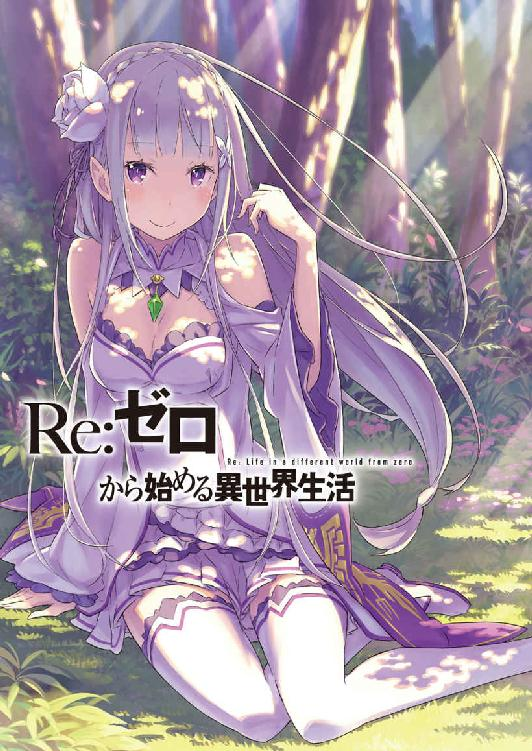
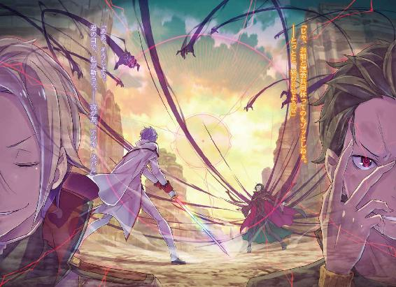
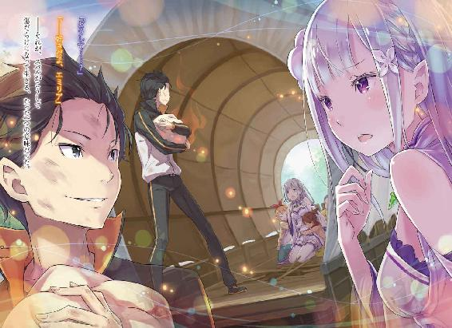
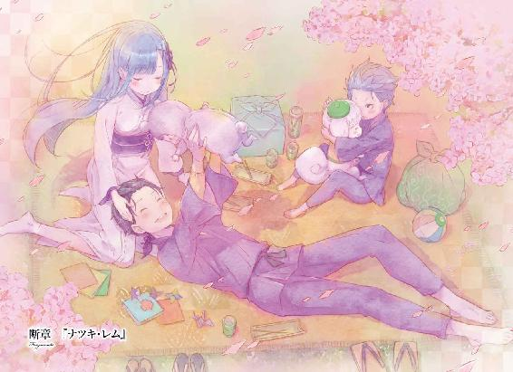
Ｒｅ：ゼロから始める異世界生活 9
長月達平

本作品の全部または一部を無断で複製、転載、配信、送信したり、ホームページ上に転載したりすることを禁止します。また、本作品の内容を無断で改変、改ざん等を行うことも禁止します。
本作品購入時にご承諾いただいた規約により、有償・無償にかかわらず本作品を第三者に譲渡することはできません。
本作品を示すサムネイルなどのイメージ画像は、再ダウンロード時に予告なく変更される場合があります。
本作品の内容は、底本発行時の取材・執筆内容に基づきます。
本作品は縦書きでレイアウトされています。
また、ご覧になるリーディングシステムにより、表示の差が認められることがあります。
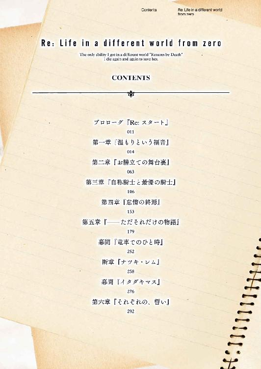
プロローグ 『Ｒｅ：スタート』
──暗い、どこまでも暗い世界があった。
水の中を漂うような、上下左右も曖昧な世界に投げ込まれている。
体は動かず、それどころか手足の感覚、目や耳の機能さえ信じられない。
意識はおぼろげで、思考は脳から溢れ出したかのように朦朧としていた。
ここはどこで、自分は誰で、何が起きてこんな風になっているのか、とりとめのない疑問だけがふわふわと暗闇を揺蕩い続けている。
『──愛してる』
そんな漆黒の中にあってなお、その声は強く心に染み渡った。
震える鼓膜のない耳に、高鳴るはずのない心臓に、己さえ定かではない魂に。
声はダイレクトに届いて、この心は狂おしいほどの感情に押し流され、慟哭する。
それはひどく儚げで、心を締め付け、粉々にする寂しさに満たされていて。
魂を焦がすほどの愛おしさで、おかしくなってしまいそうになる。
指があれば、声の主に触れたい。
口があれば、声の主の名前を呼びたい。
腕があれば、声の主を抱きしめてしまいたい。
足があれば、声の主の傍らに駆け寄っていきたい。
体があれば、声の主を決して一人にしないで済むのに。
その全てが叶わない。そうするには指が、口が、腕が、足が、体が足りない。
同じ気持ちだ。いや、それ以上の激情なのだ。
与えられた温もりに、その数倍する感情が、愛おしさが、やがて罪へと変わる。
──悲しみの涙を拭うことのできない『怠惰』が。
──互いに溶け合い、一つになりたい『色欲』が。
──喰らい尽くして、奪い尽くしたい『暴食』が。
──愛して求めて欲して全てを得たい『強欲』が。
──それを許さぬ理不尽と不条理への『憤怒』が。
──貴女以外、全て蔑ろにしてしまう『傲慢』が。
──ただ愛おしい貴女を包む世界への『嫉妬』が。
自覚と共に、黒に覆い尽くされた世界が圧倒的な感情に、愛に満たされていく。
途端、何もなかったはずの空間は歪み、拉げ──不可逆の時が遡る。
ただ、理解があった。再び、始まるのだという理解が。
闇の終わりに光が生まれ、そこに向かって歩き出せば、再び世界は始まりを迎える。
『──愛してる』
声に背を向け、歩き出す。振り向きたい、けれど振り向かない。
──でも、いつか必ず、その手を取るだろう。
『──愛してる』
最後まで、愛おしい声に呼ばれ続けながら、ナツキ・スバルは──再開する。
第一章 『温もりという福音』
１
「──兄ちゃん？」
「あ？」
ふいに名前を呼ばれ、同時に肩を揺すられる感触にスバルの意識は回帰する。
カメラが切り替わるように、一瞬で脳内に映写される世界が変化した。突然の情報の流入に脳が圧迫され、スバルは目眩のような感覚に何度か瞬きする。
──直後、スバルの全身を貫いた理解という名の戦慄は計り知れない。
「まさ、か......」
額に手を当て、スバルは自分の拍動と体内を巡る血流の音に打ちのめされる。
連続した意識に生まれた数秒の空白、それはスバルが何度も味わってきた『死』を体感したことの影響──ナツキ・スバルの存在の消失と、再誕だ。
死んだ、死んだのだ。またしても、スバルは『死』を迎えた。
それも、あの悪辣なる『怠惰』との戦いの最中に、ナツキ・スバルは命を落とした。
「────」
あれだけの苦難を、あれだけの苦境を、乗り越えた先で命を取りこぼした。
白鯨討伐、その後の討伐隊の団結、魔女教との戦いと、アーラム村への帰還。
苦闘の先にあった様々な喜びも悲しみも怒りも、全て台無しにして──、
「──あむ」
「うぎゃあああああ──!?」
掌で顔を覆い、外界を遮断していたスバルの耳を予想外の感覚が襲った。
温かな吐息と硬い感触に耳たぶを挟まれ、仰天するスバルはその場に転がる。異常に甘ったるい感触に目を剝くスバル、それを見下ろすのは悪戯な黄色の双眸だった。
その瞳の持ち主は唇に指を当て、科を作りながら艶めいた微笑を浮かべる。
「ボーっとしてたと思ったからイタズラしたら、にゃんて嬉しい反応──フェリちゃん、ぞくぞくして癖になっちゃいそう」
亜麻色の猫耳を震わせ、そんな軽口を続ける姿にスバルは啞然と口を開く。そうして唾を吞み込んで、彼女──風の彼の名前を呼んだ。
「フェリス、か？」
「他の誰に見えるの？ 白昼夢だけじゃなくて幻覚症状とか？ 白鯨の霧でも吸い込みすぎたのかな......ちゃんと診察する？」
「......いや、大丈夫だ。今ので聞きたいことは聞けた。──ああ、聞けた」
心配げに覗き込んでくるフェリスに首を振り、スバルは深呼吸して周りを見回す。
すぐ傍らにフェリスがおり、その周囲には別の顔ぶれ──否、正確にはフェリスの周りにいるのではない。彼らは皆、スバルを中心にして車座になっているのだ。
足下には草原が広がり、頭上には明けきっていない黎明の空がある。周りの視線はスバルへ集中しており、左からは猛々しい獣気が漂ってきていて。
「......さっきの最初の一言は、お前か」
「──？ 何を言うとんねや、兄ちゃん。今、完全に目ぇイっとったで。頼むわ」
胡乱げに顔をしかめるのは、巨軀に犬の頭を持った獣人リカードだ。
彼の言葉に、『死に戻り』の瞬間の顔を見られたのかと頰を指で搔いて、スバルは改めて皆の顔を見渡し、頷いた。
「最高に心臓に悪い思いをしたよ。──また、果物屋の前に戻ったのかと」
抜けるような息が漏れて、スバルは肩の力を抜きながら掌で地面を撫ぜた。
冷たい土と草の感触、尻の下には剝き出しの地面、ここは王都では決してない。
リーファウス街道、白鯨戦を終えた直後の全体会議の場面だ。
つまり──、
「──セーブポイント、更新されてくれてたか」
九死に一生、それが笑い話にもならない、不幸中の幸いに安堵させられたのだった。
２
『最も悪い』という字面に反して、『最悪』というものにはいくつも可能性がある。
善戦奮闘、いずれも空しく敗北し、『死に戻り』した状況は間違いなく最悪だ。だが、それ以上の最悪──『死に戻り』のリスタート地点の再設定がされず、白鯨討伐の前に戻されることに比べれば、この最悪は最悪の中でもマシな方というべきだろう。
少なくとも白鯨討伐は成功し、『剣鬼』の十四年の宿願は果たされたあとなのだから。
「────」
「スバル殿、大丈夫ですか？ 顔色が優れないようですが」
じっとこちらを覗き込み、『剣鬼』ヴィルヘルムがスバルを心配する。が、すぐにスバルは「なんでもないです」と首を振り、緩んだ思考と頰を引き締めた。
『死に戻り』直後の精神的な衝撃など言い訳にもならない。今、スバルたちは『魔女教対策会議』の真っただ中、大事な話し合いの局面にいるのだから。
「──では、憂いもなくなったところで状況を整理するとしよう」
一度止まった会議を再び進行させたのは、指を立てた優麗な騎士──ユリウスだ。彼は切れ長の瞳に、理知的な警戒と義憤を宿しながら続ける。
「これより我々はメイザース領へ向かい、待ち受ける卑劣な魔女教徒と相対する。奴らの殲滅と、統率する大罪司教の撃破が理想的な結末だ。ただし、優先すべきはこの一件に巻き込まれかねない無辜の民の安全、そのための備えとして──」
「逃走用の足は、アナスタシアさんたちに頼んで行商人を確保してもらってる。同盟と救援の件は、使いが屋敷に親書を届けてくれてるはずだ。......悪い、もう大丈夫」
落ち着く時間をくれたユリウスに礼を言い、スバルは話し合いに復帰する。
ユリウスが会議の内容を振り返ってくれたおかげで、『死に戻り』前にどこまで話し合いが進んでいたのかも把握できた。すでに『猿でもできる魔女教狩り』の概要は説明されており、スバルの用意した『保険』のことも共有されている様子だ。
ただし、その『保険』は前周回で『猛毒』に変わったことが確認されている。親書は白紙となって不和を招き、募った行商人には魔女教徒が潜伏していた。
それら問題についても、早急に対策を練らなくてはならないが──、
「──何か、気掛かりが生まれた顔をしているようだが？」
「人の顔色を勝手に読んで見透かすな。病院の先生か、お前」
「なら、本物の先生に隅々まで調べられちゃう方がお望み？ 別にいいけどー？」
考え込むスバルを両側から挟み、ユリウスとフェリスが足並みを揃えて顔色を指摘してくる。その追及に、スバルは内心で歯嚙みした。
問題と懸念は、ある。しかし、それをうまく説明する方法が浮かばない。
大罪司教の厄介な権能について、新たに浮上した数々の問題について、仲間たちに信じてもらうにはなんと言葉を尽くせばいいのか──、
「──いや、違う。違った。そうだった。俺はまた、忘れるとこだった」
「んんー？」
強く目をつむり、自分の胸を摑んだスバルの言葉にフェリスが首を傾げる。ユリウスも無言のまま眉を寄せる中、スバルは自分の馬鹿さ加減を自省する。
同じ過ちを何度繰り返せば、ナツキ・スバルは前に進めるというのか。
「────」
閉じていた目を開け、車座になった五十人からなる討伐隊の顔ぶれを見回す。
黙り込むスバルを見る彼らの視線には、緊張はあっても疑念はない。期待はあっても恐怖はない。希望はあっても、失望はない。
あれだけ何度も言われて、あんなに力強く教えてもらって。
──こうしてここにいられることだって、始まりはレムが支えてくれたからなのに。
「......そろそろ、十分に感傷に浸った頃合いだろうか？」
スバルの表情と雰囲気の変化を察し、ユリウスが軽口を装って切っ掛けをくれる。
機微に目敏い人物だ。ただ、今だけは素直に感謝しておこう。
この場にいる仲間たちに向ける感謝と信頼、それと同じだけのものを彼にも。
「さっきから挙動不審で悪い。実は魔女教関係の説明で補足が......違うな、新しく気付いたことが何個かある。その点について、改めてみんなと話し合っておきたい」
うまく説明する方法、そんなことに頭を悩ませる必要はない。時間の無駄だ。
ただ包み隠さず、伝えられるだけの真実を伝えて、彼らの信頼に応える。
それこそが、『死に戻り』した事実を明かせなくても、『死に戻り』した結果を持ち帰ることのできるスバルにできる、未来を仲間たちと共有する唯一の手段だ。
荒唐無稽な話を、真剣に受け止めてもらえること。
──その理解と信頼こそが、ナツキ・スバルの持つ最強の武器なのだから。
３
前周回の、ペテルギウスとの対決で明らかになった新事実がいくつかある。
それはロズワール邸に届けられる『白紙の親書』と、避難用に雇った行商人に紛れる『魔女教徒』。そして、『ペテルギウス・ロマネコンティ』の最悪の権能だ。
特に問題となるのは最後、大罪司教『怠惰』討伐において最大の障害──ペテルギウス・ロマネコンティの持つ、『憑依』と呼ぶべき権能の力だった。
「誰か知ってるか？ その、自分の意識を別の誰かの意識に上書きして、精神的に乗っ取るみたいな力って。そんなことできる魔法とかってある？」
──この世界の魔法は、スバルの想像には収まらない効果を持つものも多い。
基本的な四属性の魔法に始まり、ベアトリスの『扉渡り』やロズワールの飛行魔法、呪術といった魔法の亜種や、加護もそういった特殊な力に含まれるだろう。
そうした特異能力の存在する世界なら、『憑依』ですらも可能性はある。
そんな期待からスバルはその疑問を口にしたのだが──、
「自分の精神を他人に上書き？ なにそれ、信じらんにゃい馬鹿な考えだけど」
「......俺の最強の武器返してくれ」
「にゃんの話？」
勇気を持って打ち明けたのに、早々に鼻で笑われて信頼の土台が大きく揺らいだ。
口をへの字に曲げ、恨めしげに自分を見るスバルにフェリスは首を傾げるが、その彼に代わってユリウスが考え込む姿勢で、
「今、こうして話題にしたんだ。つまり、大罪司教がそうした異能を用いる可能性があると君は睨んでいる。......違うかい？」
「ああ、そうだ。俺は『憑依』って呼んでるけど、ほぼ間違いない。奴はそれで他人に乗り移って生き延びてる。あちこちに顔を出す理由も説明つくだろ？」
「────」
押し黙り、ユリウスはスバルの説明を頭の中で検討している様子だ。
ただ、疑わしくともこれは純然たる事実。それは他でもない、あの狂人と肉体を共有したスバルがはっきり断言できる。
奴の精神に肉体を占有され、体の自由を奪い合った。ペテルギウス・ロマネコンティは疑いなく、他人の肉体に寄生する精神体──おぞましい邪悪そのものだ。
「──以前、古い文献で似たような研究を見たことがある。荒唐無稽な研究だったが」
「本当か？」
口元に手を当てたまま、そう切り出したユリウスにスバルは食いつく。美丈夫は自分の記憶を探りながら、その古い文献の内容を手繰り寄せた。
「失伝魔法の研究、あるいは記録だったかもしれない。四百年前の『大災厄』前後、世界は多くのモノを失った。失伝した魔法体系などもその一例だ。そうした、記録上は存在したとされる失伝魔法の中に、それに近い記述があった」
「もったいぶるなよ。その、近い失伝魔法ってのは？」
「──魂の、転写技術だ」
詰め寄るスバルにユリウスが告げたのは、ひどく魔法とかけ離れた言葉に思えた。しかし、それを口にした瞬間、ユリウスの表情に嫌悪が過ったのは見逃さない。
それが忌むべき研究であったのだと、ユリウスは目をつむって続けた。
「現象自体は非常に単純な技術だ。術者の記憶と経験の集約、素養や運命なども含むだろうか。それらを一纏めに『魂』とし、丸ごと他者の『魂』の上に焼き付ける」
「そうすると、記憶と意識を上書きされた人間が出来上がる......ってことか」
パソコンのファイル、そのコピー＆ペーストのようなものだ。人間の記憶をファイルと同様に扱い、他人の『魂』というファイルに上書き保存し、塗り潰す。
それで下敷きにされた『魂』は消失し、そこには上書きされた『魂』が残る。
「だが、現実的ではない。魔法は失伝し、術式は理論上、他に類を見ないほど高度で複雑だ。再現には人域を超越した魔法の才と執念が必要になる。大罪司教がそれほどの知識と技術を有するとは到底思えない」
「信じられないってだけじゃ否定の理由になるかよ。魔女教相手ならなおさらだ」
「スバルきゅん、熱くなりすぎ。ユリウスにも言い分はあるんだから」
有力な仮定を否定するユリウス。そのことに嚙みつくスバルをフェリスが窘めた。そのまま彼はバツの悪い顔をするスバルに代わり、「どーぞ」とユリウスに続きを促す。
「すまない。結論まで長くかかるのは私の悪癖でもある。──件の技術だが、術式の失伝以外にも障害は多い。まず、術者の魂を焼き付ける対象はかなり限定される。手当たり次第に誰でも乗っ取れる、といった類の技術ではない」
「ま、当然だよね。記憶とかはちょっと管轄外だけど、個々のゲートまで上書きするのは並大抵のことじゃにゃいもん。たぶん、血縁とかじゃないとかにゃ？」
「血縁者は条件として非常に望ましい。フェリスの言った通り、ゲートと馴染めなければ転写された魂自体が弾かれかねない。それに魂に魂を重ねても、肉体は以前の魂の影響が残っている。肉体に精神が引きずられる、その懸念は常に付き纏うだろう」
「......なんか、聞くだに欠陥の多い魔法って感じになるな」
二人の見解を聞いていると、なるほど否定的な要素がかなり多い。
ペテルギウスが失伝魔法を使いこなす凄腕の魔法使い──その可能性を否定する材料はないが、奴の選んだ肉体全てが血縁者であることはまずあるまい。
そもそも、スバルに『憑依』した時点でその前提条件は崩れているのだ。
「しかし、完全に異なるものとして切り捨てるのも早計だ」
「どっちなんだよ！」
「その激発は心外だ。似た魔法を知っている、とした前提条件は一貫している。それに、この技術そのものでなかったとしても、参考にすべき点は大いにあるはずだ」
「......例えば？」
「無論、魂の転写と同様に、『憑依』にも厳しい条件がある可能性だよ」
講釈するユリウスの発言に、スバルは微かに眉を寄せ、すぐに理解に至った。
魂の転写には血縁者並みの条件が必須、ならば『憑依』についてもそれは同じだ。
「魔女教徒......それも、限られた人員にのみ可能な術法と推測できる」
「もしかして、それが『指先』ってこと？」
「自身の予備の肉体、なかなか悪趣味な趣向だ。大罪司教らしいと言うべきかな」
フェリスの結論にユリウスが首肯し、それを受けてスバルは瞠目する。
短時間で、あっという間に『憑依』のカラクリに論理的な答えを結んだ二人。討伐隊の中でも魔法に詳しいブレーンとはいえ、これは予想外の戦果だ。
そして同時に浮かび上がる、大罪司教『怠惰』攻略の真の方法、それは──、
「大罪司教の残機を全部削る......つまり、『指先』を壊滅させれば」
「──その魂は乗り移り先を失う。そのときが、大罪司教の最期と言えるだろう」
力強く言い切るユリウスに、スバルは心の底から天晴れと敗北感を抱いた。
半ば絶望的とさえ思い込んでいた状況に、彼らのおかげで確かな光が差した。そしてそれはこれまでの状況と、何ら矛盾しない文句なしの解答なのだから。
「森に潜む『指先』を優先して排除し、『怠惰』と雌雄を決する。──それが結論だ」
会議を締め括るユリウスの発言で、車座になった討伐隊の顔に決意と覚悟が漲る。
やるべきことと、為すべきことが一致したとき、それは強い力になるものだ。
白鯨戦にも劣らぬ戦意を宿し、討伐隊は今、再び一丸となって立ち上がる。
「──みんな、あと一個だけ、言わなきゃいけないことがある」
そうして、出陣の気勢を高める面々に呼びかけ、スバルは自分に注目を集めた。
強い眼差しを向けられながら、スバルは一つ、本当に申し訳ない気持ちを我慢して、言わなくてはならないことをきっちり伝える。
それは──、
「ごめん、『指先』だけじゃなく、たぶん俺も大罪司教の乗り移る対象なんだけど、それについてはどうしたらいいと思う？」
「は？」
前回の『死に戻り』の直接的な原因であり、乗り越えるべき最後の難局。
その情けない事実の共有と、対策案の相談であった。
４
結局、『魔女教対策会議』は最終的な結論の前に出発時間を迎えた。
作戦の検討は続けたいが、肝心の戦場に間に合わなければ本末転倒──それを避けるために、スバルはユリウスにある提案をする。
「なぁ、ユリウス。お前の連れてる精霊の魔法で、範囲内にいる人間の意識を繫げられたはずだろ。あれって移動中の話し合いに応用できないか？」
名案、とばかりに口にしたのは前回のループで体感した意識共有魔法『ネクト』だ。
ラムの早とちりで発生した事態に対して、ユリウスは討伐隊全員の意識を繫げる魔法を行使した。あれを応用すれば会議も可能のはずだ。
そんなスバルの提案に、ユリウスは軽く驚いた顔をしてフェリスを見る。その視線に猫耳の騎士は「フェリちゃんじゃないからネ」と手を振って地竜に向かっていった。
「何がフェリスじゃないって？」
「......大したことではないよ。君に、私が精霊使いだと知られているとは思わなくてね。どこで聞いたのかと疑問に思っただけだ」
「あ、そうか。精霊騎士ってここが初出か」
ユリウスの自称する精霊騎士の肩書きは、前周回の終盤で聞いた情報だ。この時点のスバルは、まだユリウスを一流の剣士としてしか認識していなかったはずだ。
だが、ユリウスの意表を突ける機会は珍しい。スバルはしたり顔になると、
「お前はお前が思ってる以上に有名ってことだろ。まぁ、お前が俺にこっそり自分の準精霊を付けてることに気付いてるのは、その有名税と無関係だけどな」
「──そこまでお見通しなのか」
今度こそ、ユリウスは隠し切れない動揺をその面差しにはっきりと刻んだ。その反応にスバルは笑い、しかし直後に首をひねる。
スバルを見るユリウスの瞳に、一瞬だけ痛みを堪えるような波が過ったからだ。
「確かに指摘通り、君には私の蕾の一輪を付けていた。──イア、おいで」
だが、その感情の波はすぐに平静さの裏側に隠される。
ユリウスが手招きすると、スバルの髪の毛から赤い光が飛び出した。火よりも淡く、光よりも温かなそれは、ユリウスの連れた六体の準精霊の内の一体だ。
「火の準精霊、イアだ。彼女には、君を付きっきりで見ていてもらっていた」
「別にいいけど一言言えよ。なんかあったとき急に出てきたら驚くじゃねぇか」
「その心配はいらないよ。蕾たちは優秀だ。そんな機会はまずありえない」
「惚気話ありがとう。それならそれで──」
無許可で保険を掛けられていたことに苦言を呈すと、ユリウスは小さく謝罪する。その謝罪を受けながら、スバルは途中で違和感に気付いた。
ユリウスがスバルにイアを付けているのは、前周回でも同じだった。
その準精霊のおかげで、竜車の爆発から命を救われたことは記憶に新しい。ただそれとは別に、イアの存在に関する奇妙な記憶がある。その感覚は──、
「──ユリウス。もし、イアが俺から無理やり追い出されるとしたらどんな場合だ？」
「......質問の意味がわからないが」
「大事なことだ。事によると、大罪司教攻略に直結する」
スバルの端的な物言いに、ユリウスは一瞬で戸惑いを切り捨て、答える。
「イアを君に付けた状態は、言ってみれば精霊使いとしての仮契約のようなものだ。それを強制的に解くとなると、仮契約者である君の拒絶か、あるいは──」
「あるいは？」
「──仮契約を押しのける、正式な契約」
それはまさに、この瞬間のスバルが欲した答えだ。
言葉にするうちに勘付いたのか、ユリウスも黄色の双眸に理解の光を灯した。だが、彼はすぐに首を横に振り、「まさか......」と否定しようとする。しかし──、
「どんな荒唐無稽でありえない可能性に思えても、浮かび上がった事実以外を塗り潰していって、残った結果が真実。──名探偵の言葉だぜ」
「真理だ。だが、だとすれば......どうする？」
「これが最後のピースだ。あとは道中で確かめたい。──資格のある人と、ない人を」
「わかった。請け負おう」
言葉少なに頷き合い、ユリウスは再びイアをスバルに付けて自分の地竜の下へ。準精霊の温もりを頭皮に感じながら、スバルは漆黒の愛竜──パトラッシュに跨った。
「前回より時間のロスがちょっぴり多い。気張ってもらうぜ、パトラッシュ」
「────」
気品ある横顔をした地竜は、スバルの求めを当然のような目つきで聞き入れる。
そして討伐隊は、リーファウス街道をメイザース領へ向かう行軍を再開した。
「──『ネクト』」
行軍の最中、ユリウスは意識共有魔法『ネクト』を使用し、その精霊魔法は討伐隊全員を影響下に置く。魔法はまさにスバルの意図した通りの効果を発揮してくれた。
ただし──、
「──クソ、完全に忘れてた」
『すまない。インとネスが調律を見誤るとは思わなかった。......イアが懐いていることもある。ひょっとすると君は精霊との親和性が高いのかもしれないな』
「その話、今はいいよ。全部片付いたらゆっくり聞くから」
思念波越しの謝罪を受け取り、スバルは耳鳴りのするこめかみを指で押す。
『ネクト』が発動した瞬間、スバルは押し寄せる全員の思念波に今回も翻弄された。その点は完全に副作用を失念していたスバルの落ち度だ。
ともあれ、その調整も落ち着き、現在は走りながら会議に集中する流れにある。
『それで、大罪司教の攻略ですが......いかがいたしますか？』
音で意思を伝える声音と違い、思念波には厳密な意味で音の区別はない。にも拘らず、思念の発信者が誰なのかわかるのは、その思念に色のような個性があるからだ。
今の思念は深い青でありながら、その内側に紅の情熱を秘めたものだ。──すぐ、ヴィルヘルムのものだと理解できる。
地竜で並走する剣鬼は険しい顔つきで、まだ見ぬ狂人への敵意を高めつつ、
『スバル殿とユリウス殿の推測が正しければ、斬るための方策は思案が必要です。不可視の魔手、他者の肉体を乗っ取る権能、いずれも突破は至難の障害』
「そう、なんですよね......」
大罪司教『怠惰』の攻略に際し、乗り越えるべき二つの権能。『見えざる手』と『憑依』であるが、どちらも攻略の糸口は解明されつつある。
ただ問題なのは、二つの攻略の解法が、それぞれ別の攻略の障害に化けることだ。
「ペテルギウスの『見えざる手』は俺にしか見えない。だから、あいつと正面対決するには俺がいなきゃダメだ。けど、俺は『憑依』の対象でもある。俺がその場にいたら乗っ取られて、結局、奴を逃がす可能性がなくならない」
『......スバル殿、実は腹案があります。聞いていただけますか？』
考え込むスバルの思念を聞き取り、ヴィルヘルムが自信ありげに割り込んだ。その言葉で討伐隊に希望が広がると、ヴィルヘルムの思念波が力強く頷く。
『大罪司教の不可視の腕ですが、簡単に暴く方法を思いつきました。まず、大罪司教の周囲に砂、あるいは土をばら撒くのです』
『あ、これ参考にならにゃい気がする』
途中でフェリスの茶々が入ったが、ヴィルヘルムは構わず最後まで説明する。その内容はスバルも一度見た、ヴィルヘルム流の砂煙幕を利用した権能封じだ。
それは前回も効果を上げており、実現可能な作戦であることは間違いない。
問題は規格外すぎて、ヴィルヘルム以外誰にもできないことだ。実際、討伐隊はみんな首をひねっており、ユリウスやリカードですら無理だと思念を飛ばしてきた。
『研鑽を重ねれば誰でも可能だと思うのですが......』
『はいはい、五十年も研鑽してる時間にゃんてないの。ヴィル爺の人外っぷりが証明されたのはともかく、どうする？』
心なしか消沈したヴィルヘルムを余所に、フェリスは会議の進行を優先する。心情的にスバルはヴィルヘルム寄りだが、姿勢としてはフェリスの方が正しい。
そんなフェリスの問いかけを受け、スバルは「そうだな」と前置きしてから──、
「──やっぱり、大罪司教の攻略と魔女教の対策、それに屋敷と村への対応も、最初に提案した方法でいく。たぶん、それが最善だ」
『────』
思念波で伝えた『魔女教対策会議』の結論に、討伐隊の全員がそれぞれ反応する。
同調、懸念、信頼、憂慮──様々な感情が押し寄せてくるが、彼らの総意はスバルの意見を尊重するものだ。作戦は、当初の予定通りに進められる。
『──確認するが、本当にその案でいいのだね？ 君は、後悔しないな？』
ただ、躊躇いの気持ちを残すスバルに、ユリウスだけが最終確認の思念を投げる。威勢を挫く無粋だが、討伐隊が迷いを断ち切るために必要な儀式でもあった。
それを誰でもなく、自分で買って出る姿勢こそ、彼を騎士たらしめる信念だ。
「くどいぜ。発案も立案も俺なのに、その俺がやっぱりやーめたなんて言い出せるわけねぇだろ。......そりゃ、エミリアには怒られるだろうけどさ」
目をつむる瞼の裏側に、スバルは銀髪の愛おしい少女を描く。
こちらが見つめるだけの片思い、一方的な再会が叶ったのは数時間前に摘まみ出された世界の出来事だ。それでも彼女の横顔は、凛とした姿も可憐な声も薄れない。
それが鮮明に思い出せるからこそ、スバルはこの決断ができるのだ。
「みんなの心配は嬉しいけど、俺に嫌だって甘えるチャンスを与えてくれんなよ。絞り出してるように見える俺の勇気だって、全部借り物なんだからさ」
繰り返し覚悟を問われるのは、スバルの意志が作戦の成否を左右するから。──そんな薄情な理由では決してない。それがわかっているから、頷ける。
「それに、最後には全部うまくいくって楽観視してっからな。ただ、そこまで辿り着く道のりがちょいと険しく見えるだけ。そう思えば楽勝だろ？」
『......楽勝なんて、大口叩けるスバルきゅんって実は大物にゃの？』
「馬鹿言え、小物の自覚があるんだよ。俺が楽観的に構えられるのも、最終的にエミリアたんと熱い抱擁を交わすのにもみんなの力が不可欠なんだぜ？ みんなこそ、しっかりと俺のキューピッドとしての自覚を持って、手伝ってくれよな！」
『何の自覚を持てと言われたのかは判然としないが──ああ、覚悟は伝わったとも』
重苦しい空気を払拭しようとするスバルの軽口に、ユリウスを筆頭に皆が首肯する。それを以て会議の結論として、スバルは進路──地平線の向こうに目をやった。
彼方には草原の終わりと、うっすらと森林地帯の頭が見え始めている。平原を抜ければいくつかの林道を経て、メイザース領へ到着だ。
心がざわつき、軋むような疼きを得ながら、それでもスバルは前を見続ける。
「────」
「お？ なんだよ、心配してくれてんのか？ 可愛い奴め」
意識の共有が外れ、会議から解放されたスバルを慮ったのは、走りながら首をもたげてくるパトラッシュだ。その首筋を撫でてやり、スバルは嘆息した。
そして背後、地竜の鞍に括り付けてある荷物を探り、目的の物の感触を確かめる。
荷の中で指に触れたのは、今回の作戦の肝になる大事な道具だ。その道具がスバルに渡った経緯を思い出すと、今でも胸には疼痛が走る。
その痛みがあるから、スバルは恐怖も不安も押し退け、進もうと思えるのだ。
「さあ、今度こそきっちり、型に嵌めてやろうぜ」
「無論、そのつもりだとも。大丈夫だ。これだけ入念に策を練った。失敗など考える必要はない。準備は万端だ。事を終えたら、君とは祝杯を交わしたいものだね」
「ここぞとばかりにデスノボリ立ててんじゃねぇ──!!」
隣に並んだユリウスの、死亡フラグの概念を知らないはずの発言に怒声を張り上げる。
遠く遠く、メイザース領の空にまで届きそうなほど、声は高く響いていった。
５
──寝不足の瞼に日の光が差し込み、微かな痛みと共にエミリアは目覚めた。
「もう、朝なんだ......」
寝台で上体を起こし、何度か瞬きする。額にかかる銀髪を撫で付け、しばし夢現を遊泳すると、意識の浮上に合わせて弱々しい吐息が漏れた。
この数日、眠りの浅い日が続いている。
昨夜も眠れたのは日付を跨いで数時間後──夜の森に入り、魔獣の侵入を防ぐ結界を結び直すのに力を使い、眠れたのは実質、二時間ほどだろうか。
頭が重く、思考が泥濘に嵌まっているように遅々としているのを感じる。
元々、エミリアは寝起きの良い方ではない。ましてやここ数日、エミリアを悩ませる数々の問題を思えば、疲労と苦悩に精神を削られるのも仕方のない話だった。
──王選の候補者が王城に集まり、所信表明を発信したのが一週間前の出来事だ。
それから屋敷に戻り、形式的に陣営の代表に収まってから五日。
そのほんの五日間で味わった重圧は、エミリアを打ちのめすには十分なものだった。
「わかってたつもりだったけど......ホントに、つもりなだけだったんだ、私」
自分の不甲斐なさに、エミリアはベッドのシーツを強く握りしめる。
脳裏には瞬く間に過ぎた一週間が回想される。
王都に呼ばれ、候補者たちと相対し、衆目の中で所信表明を行い、そして──、
「──スバル」
王都に残してきた少年の名を口にして、エミリアは痛みを堪えるように目をつむる。
あの陽気で傷付きやすくて、何故か人のために必死になってばかりで、少しだけ思い込みの激しい少年は今頃どうしているだろうか。
王城で交わした激しい言い合いと、置き去りにされる子どものような表情が瞼に焼き付いて、エミリアの良心は何度も何度も焼き焦がされる。
あの顔をさせたのも、あんな言葉を言わせてしまったのも、ああして聞きたくない言葉を聞かせてしまったのも、全て自分のせいなのだから。
「......でも、あれでよかったのよね」
互いの胸の内をぶつけ合ったことが、結果的に二人の別離を招いた。
しかし、あの感情の爆発を避けるべきだったとエミリアは思っていない。むしろ、あそこで二人が道を違えたのは正解だった。スバルは自分と一緒にいるべきではない。
──だって、エミリアは人々に忌み嫌われるハーフエルフなのだから。
一緒にいることで、隣にいるだけで、同じだけの嫌な思いを誰かに背負わせる。
それはあの、心優しい少年も例外ではない。現にスバルはエミリアの傍にいたから、ユリウスとの決闘で心身共にひどく傷付くことになったのだ。
もう、あんな思いはしてほしくないし、させたくない。
口論の果てに、きっとスバルは自分を見限ってくれたはずだと思う。
最後の最後にぽつりと漏れた言葉、それだけがエミリアの本音で、心残りだ。
スバルならば、自分をハーフエルフなんて存在とは別に、そんなものと無関係に、普通の女の子のように扱ってくれるのではないか、そんな期待。
──淡く、儚い、無為で身勝手な期待だった。
「スバルは私を、特別視しかできない。......そう言ってたもの」
遠ざけようと傷付けて、それでも救いを求めていた自分の勝手さに失望した。
ハーフエルフであることと無関係に、それは許されない浅ましさだ。
「──リア、眉間に皺が寄ってるよ。可愛い顔が台無しになっちゃう」
寝台で膝を抱えるエミリアに、ふいに声がかけられた。視線を上げると、その視界に灰色の毛並みをした小猫の精霊が映り込む。エミリアは薄く微笑み、
「おはよう、パック。今日は早いのね」
「おはよ、リア。今朝は......うん、ちょっとね」
「──？ 何かあったの？」
「んー、早寝早起きを心掛けようと思って......っていうのは噓。本当はリアが心配だったからだよ。大変続きだったからね。特に昨日は」
微妙に歯切れの悪かったパック、その彼の答えにエミリアは目を伏せる。
昨日の出来事──エミリアの寝不足と心労、その最大の原因がそれだ。屋敷近くの村の人々に、差し伸べた手と言葉を拒絶された苦い記憶が蘇る。
恐怖と否定、残酷な言葉こそなかったが、視線は十分にエミリアの心を切り刻んだ。
「......わかってた、ことだもん」
「転ぶとわかってても、転んだら痛いし血も出ちゃうんだ。結果を理解してることと、実際に味わうこととは別のことだとボクは思うな」
エミリアの子どものような強がりに、パックは容赦なく逃げ道を塞ぐ。
ただ、それはパックの意地が悪いわけではない。パックはパックなりに純粋にエミリアを案じてくれている。その上で事実と本音を隠さない、それだけなのだ。
「パックは......」
「んー？」
「パックは、どうしたらいいと思う？ 私が......ううん、私だけじゃなくて、みんなのことも、もっとちゃんとするには。ちゃんとしてもらうには......」
「──リアの好きにしたらいいんじゃないかな。ボクはリアが何をしようとリアの味方だし、リアの邪魔する相手の敵なだけだから」
誰よりも心強い味方の言葉だが、それは今のエミリアの慰めにはならなかった。
予想できていた返答だ。パックはエミリアの絶対の味方だが、エミリアの抱える問題に答えをくれるわけではない。あくまで、エミリアの判断はエミリアに委ねる。
パックの価値観はエミリアを中心に完結していて、それ以外は全て二の次なのだ。
「どうするにしても、あの村のことは見捨てられないんでしょ？ 桃色の髪の子が今朝、また村に向かってる。その報告を待つべきじゃないかな」
「......ラムが村に？ あの子も、もうずっと休んでないはずなのに」
「あの子はリアよりよっぽど抜け目ないから、仕事の合間を見て休んでるって。自分の調子ぐらい、自分で管理できてるだろうし」
パックの冷静なラム評価を受け、言外に自己管理ができていないと言われた気がしてエミリアは小さくなる。実際、今のエミリアはラムに頼りきりの状態だ。
──この数日、エミリアは屋敷を留守にしているロズワールの業務を一部代行し、領主として屋敷とアーラム村に関する責任を負っている。
周辺の有力者との折衝を理由に、ロズワールはほんの数日留守にするとエミリアに言い残して出発した。その大役に不安と緊張はあったが、王選の今後を思えば、たった数日の役目もこなせずになんとする。
そんな考えから役目を引き受け、王都にスバルを残してきた罪悪感から目を背けるように、エミリアはいつも以上に真剣に日々に臨み──一昨日、状況が大きく変わった。
「森におかしな気配......？」
「はい。ラムの千里眼にもかからない、不愉快な輩です」
報告は普段通り淡々としたものだったが、ラムも不穏な予感に眉を寄せていた。
彼女の千里眼は、他者の視覚に同調して視界を盗み見る異能だ。しかし、索敵と偵察に特化した千里眼を以てしても、森に生じた気配の正体を摑むことはできなかった。
「魔獣、とは関係ないのよね？」
「結界は張り直されています。無関係とは思いますが......どうされますか？」
「どうするもなにも......放っておくなんてできないわ。こっちから何もできないなら、せめて村の人たちが危ない目に遭わないようにしなくちゃ」
「村人の安全確保......では、村の人間を避難させますか？」
「それが、いいわよね。──このお屋敷なら、村の人たちを受け入れられるし」
森に蔓延る不穏に対し、エミリアとラムは話し合ってそう結論した。
ラムの反対がなかったことは、ささやかだがエミリアには心強かった。ロズワールの代行である以上、とんちきな意見を述べればラムは容赦なく指摘したはず。
故にエミリアはある程度の期待を抱いて、直近の村──アーラム村へ足を運んだ。
村人を説得し、屋敷に避難させる。危険な目には遭わせないと。だが──、
『王選の話は聞いております。──貴女の素性が、ハーフエルフであることも。その、貴女の言葉には従えません。それが、私たちの総意です』
村の代表である老婆は、そう言ってエミリアの申し出を拒絶した。
否定と拒絶の意思は固く、その答えにエミリアは傷付き、傷付いた自分に驚かされた。
拒絶、それはエミリアにとって当然の環境で、これまで何度も味わってきた挫折だ。それなのに、まだ痛む心が残っていたことを自覚し、同時に気付いてしまった。
──エミリアは、自分は変化を期待していたのだと。
王選という大きな流れに飛び込み、自分の在り方を変える一歩を踏み出したことで、自然と周囲の反応が以前と変わるのではないかと、期待していたのだ。
この二ヶ月の村人たちとの交流、それも期待を上乗せする要因になっていた。
だが、エミリアは常に自分の素性を、認識阻害の魔法に頼って誤魔化し続けてきた。一度だって素顔を見せたことのない相手に、誰が心を許し、信頼するだろうか。
村人と親しく過ごしたと勘違いした日々、彼らが笑顔を向けていたのはエミリアに対してではない。エミリアの手を引き、村へ連れ出してくれる少年に対してだ。
エミリア自身が勝ち得たものなど何もない。それなのに、何を勘違いしていたのか。
「......結局、私は何してるんだろう」
申し出は拒否され、その後の訴えも届かず、再三の願いは頑なに拒まれる。それから失意の翌日、次なる変事は王都からもたらされ、さらにエミリアを苦しめた。
『我が主、クルシュ・カルステン公爵様より御預かりした親書でございます』
屋敷に上がり、畏まった態度で使者が差し出した封書には、カルステン公爵家を示す獅子の家印が押されていた。受け取った親書の内容に、エミリアは想像を働かせた。
クルシュは王選候補者の一人であり、王都に残してきたスバルの身柄を預かってくれている相手でもある。よもや彼に何かあったのかと、慌てて中を検めてみれば──、
「──手紙は白紙だった。宣戦布告されたって、桃髪の子が怒るのも無理ないよね」
部屋の机の上に、件の親書が置かれている。エミリアの視線を辿り、思考を先読みしたパックがその手紙──それが白紙であった事実に言及し、小首を傾げた。
彼の言葉通り、届けられた親書は白紙だった。裏も表も、何も書かれていない。
白紙の書状は送り主が、相手に『話す価値を見ない』と表明する意図がある。しかし、書状の内容も経緯も、クルシュの人となりとはあまりにそぐわない。
そのため、手違いを疑って使者に真意を尋ねたのだが、使者は急ぎ届けるように命じられただけの一点張りで、残念ながら欲しい答えを得ることはできなかった。
「使者は屋敷に監禁しましょう。いざというとき、取引き材料になります」
と、過激なラムの主張はともかく、使者には穏便に屋敷に留まってもらっている。
それでも、森の不穏に白紙の親書と、エミリアの心労は募る一方だった。
結局、昨夜も大人しく寝入ることができず、せめて周辺の結界に緩みがないかと見て回り、魔獣災害に厳重に備える程度がエミリアのできた仕事だ。
そうして明け方に部屋に戻り、以降は寝ては起きてを繰り返して、今に至る。
眠るエミリアを屋敷に残し、ラムが村に向かったのは村人を説得するためか。立場上、本来はエミリアも同行し、率先して避難を訴えるべきなのだが──、
「でも、私がいない方が拗れないのかな......」
任せてしまうなど無責任だと、義務感はエミリアに奮起を促そうとする。
だがそれと同じぐらい、忌避され、状況を悪化させる不安がエミリアにはあるのだ。
実際、エミリアが同行すれば村人は恐怖し、提案を拒絶するだろう。
それは事実、それは現実、エミリアが味わい続けてきた差別という壁なのだ。
だけど、それに抗うために自分は森を出たはずだったのに──。
「──おっと、リア。屋敷に誰か戻ってきたよ」
「......ラムかな。村のこと、どうなったのか話を聞かなくちゃ」
パックの呼びかけに思考を中断し、エミリアは手早く着替えて部屋を出る。
普段はエミリアの身嗜みにうるさいパックも、この数日は細かい指定はしてこない。気遣わせている、そんな事情すら今のエミリアには自己嫌悪の材料だった。
「あ、ボクはちょっとベティーの顔を見てくるよ。何かあったら呼んでね」
「えっと、うん、わかった。ベアトリスによろしくね」
廊下に出てすぐ、そう言ってパックがエミリアの傍を離れる。話題になったのは同じ屋敷にいるはずなのに、その顔を全く見せようとしない幼い見た目の少女だ。
思えば屋敷に戻って以来、一度も彼女と顔を合わせていない。
「ベアトリスも、スバルを置いてきたこと怒ってるのかな」
スバルとベアトリスはとても仲が良かったから、それで怒らせたのかもしれない。
悪い考えは尽きずに溢れる。エミリアは嘆息し、足早に玄関ホールに向かった。
今はベアトリスのことは後回し。戻ってきたラムと、話すことがたくさんあるのだ。
「──エミリア様」
ホールにエミリアが辿り着くと、ちょうど屋敷の玄関が外から開かれた。扉の隙間から戻ったラムの姿が見えて、エミリアは小さく吐息する。
「ラム、任せきりにしてごめんなさい。すぐにこれからのことを......」
「いいえ、エミリア様。その前に、お客様がお見えになっています」
切り出したエミリアを遮り、首を横に振ったラムが扉の前で道を譲った。その言葉と動作にエミリアが「え」と目を丸くすると、譲られた扉を抜けて人影が現れる。
「エミリア様、突然の訪問をお許しください」
そう言ってエミリアに一礼したのは、たくましい体格をした老齢の男性だ。見覚えのある長身に、エミリアは微かに目を細め、すぐに記憶を探り当てた。
「えっと、確か......フェリスと一緒にいた御者の方、ですよね？」
「は。カルステン公爵家にて、臣下の末席に加えていただいている身、ヴィルヘルム・トリアスと申します。此度は主君の名代として、参じました次第」
名乗る老人──ヴィルヘルムは厳粛な声で言って、その場に膝を突くと最敬礼の姿勢を取った。その様子にエミリアは恐縮し、慌てて階下へ駆け下りてヴィルヘルムを立たせようとする。しかし、すぐに彼女はその異様さに気付いた。
血と泥に塗れた老人の姿は、とても平時の使者の姿とは思えなかったのだ。
「その格好......何があったの？」
「見苦しい姿で申し訳ありません。こちらのメイザース領へ向かう道中、つまらない獣と遭遇する幸いに恵まれまして、このような有様に。大変、お目汚しを」
「それは気にしないけど、ケガの治療は......済んでるみたいね」
「御心配には及びません。それよりも、我が主の意向を正しくお伝えしたく」
自分の心配よりも本題を、と促すヴィルヘルムにエミリアは頷く。
クルシュの名代を名乗った老人に、思い出されたのは昨夜届いた親書のことだ。
「そのお話だけど、クルシュ様から昨日、親書をいただいたの。だけど、手紙は白紙の状態で......何かの間違いだって、そう不安に思っていたんだけど」
「白紙、ですか。──なるほど、やはり」
「やっぱり......？」
親書の内容にヴィルヘルムが青い瞳を細める。その仕草に妙な凄みを感じつつ、エミリアは不安のままに問い返した。しかし、彼はすぐに「いえ」と首を横に振り、
「恥ずかしながら、届けられた親書と我が主が本来お伝えしたい内容とは齟齬がございます。正しいご意向は私が把握しております故、どうかご心配なさらずに」
「ホントの内容......そう、手違いなのね？ よかった。その、嫌がらせじゃなくって」
関係者からはっきり敵対視を否定されて、エミリアは安堵に胸を撫で下ろした。
村の住民に否定された直後の手紙だ。クルシュらしくないと思う反面、ハーフエルフへの蔑視を行動に移されたのでは、と不安に思う気持ちはゼロではなかった。
心の不安は不必要な疑念、弱さを引き寄せる。今のエミリアのように。
「混乱させる結果になり、深くお詫びいたします。我が主、クルシュ様はそのような軽挙に及ばれる方ではありません。エミリア様も、無用に侮られる謂れなどありはしません。堂々とされなくば、尽くすものが浮かばれますまい」
「あ、ありがとうございます。......それで、ええと、親書のホントのお話は？」
やけに力の入った激励の言葉、エミリアはそれに驚きつつも少しだけ嬉しく思う。
わずかに気持ちが上がる。そのエミリアに、ヴィルヘルムは最敬礼の姿勢のまま、
「エミリア様、並びにラム殿。お屋敷に残られている方々と村の住人には一度、揃ってこの周辺から避難していただく。──それが、クルシュ様のご意向です」
と、エミリアの微笑が凍り付く宣告を口にしたのだった。
６
──最初の衝撃を乗り越えたエミリアに、ヴィルヘルムは次のように説明した。
「最近、王国で名の知られた犯罪集団がメイザース領に潜伏したとの情報が。彼奴らを討伐する目的で隊を編成し、私が代表として参りました」
「その人たちが、この辺りの森に隠れてる......そういうことなの？」
ラムの千里眼にも映らない不穏の正体が明かされ、エミリアは驚いて瞠目する。
厳めしく首肯するヴィルヘルムの隣で、ラムも頻りに頷いていた。それからラムは自分の桃色の髪をそっと撫で付け、
「すでに使者様がお連れになった討伐隊が、村で敵戦力に備えて展開しています。ただ、敵も悪名高い野盗の王、激戦になれば周囲に被害が及びかねません」
「野盗の王様......！ それで、私たちに避難を？ そのための竜車まで用意してくれて」
誰も残さず済むように、村人とエミリアたちを乗せて逃がす竜車はすでに村に入っているとのこと。それはラムも確認済みと、太鼓判を押してくれている。
「皆様の避難が済み次第、速やかに討伐隊は彼奴らの討滅にかかります。危険が一掃されさえすれば、安全な生活にお戻しすると約束いたします」
以上がヴィルヘルムの説明であり、エミリアたちのために用意された避難計画だ。
その隙のないお膳立てに感心しつつ、しかしエミリアは素直に頷けずにいた。もちろん筋は通っているし、疑うつもりはない。ただ、疑問があるのだ。
「でも、どうしてクルシュ様が、この領地のために力を尽くしてくれるの？」
ここはメイザース領で、エミリアとクルシュとは王位を争う政敵同士だ。善意で手助けしてくれている──わけではたぶんない。違うと思う。
そのエミリアの疑問に、ヴィルヘルムはわずかに声を潜めた。
「ここだけの話になりますが、件の犯罪集団......野盗の王には他人事ならぬ因縁が」
「因縁......ヴィルヘルムさんに？」
「私だけではありません。特に燃えている若者もおります。それに──」
微かに口元を緩め、すぐに笑みを消したヴィルヘルムはさらに続ける。
「我が主は辺境伯より、此度の王選における同盟関係を持ちかけられております。条件はエリオール大森林の魔石採掘権の分譲......おわかりいただけますか？」
「──っ。......そう、森の権利。そういう、ことなのね」
続けられた言葉に、エミリアは微かに動揺しながら納得した。
エミリアが一人で思い悩む裏で、暗躍するロズワールはすでに最適解を用意していたらしい。信頼されていると思ったことはないが、それでもショックではあった。
条件がエリオール大森林──エミリアの故郷に関わることならなおさらだ。
「......でも、一口に避難って言っても簡単じゃないでしょう。どこに逃げるの？」
「それも考えが。──先の話にも関連しますが、エミリア様には王都へ向かっていただきたく。王都でクルシュ様が、同盟決議の会談を求めておいでです」
「それは......うん、大丈夫。だけど、王都に全員で避難できる？」
王都までは竜車で約半日の距離だ。お年寄りや子どももいる村人には辛い道行になる。犯罪集団の討伐にかかる時間も不明では、受け入れ先の確保にも不安があった。
そうした心配を残して屋敷を離れるぐらいならば──、
「森にいる野盗の王様を追い払うの、私も協力したら早く済ませられるかもしれない」
「......エミリア様のお考えはありがたくあります。ですが、それは」
「そう見えないかもしれないけど、私、ちょっと腕には自信があるの。すごーく強い精霊も一緒にいてくれてるし、足は引っ張らないわ」
この場にいないパックの存在も引き合いに出して、エミリアは討伐に協力を申し出る。その言葉にラムは目をつむり、ヴィルヘルムはしばし考え込んだ。
悪くない提案のつもりなのだが、二人の反応は何故か芳しくない。
「問題、あった？」
「実は......そう、実は辺境伯の厳命で、エミリア様には疾く速やかにクルシュ様と会談を持っていただくようにと。これに反されれば、私は職を失います」
「ロズワールがそんなことを!?」
絞り出された言葉にエミリアは本気で仰天してしまう。それが事実かとラムの方を見れば、彼女は薄紅の瞳でヴィルヘルムの横顔を睨みつけ、睨みつけ、睨みつけ──、
「──。────。────。はい、ロズワール様のお言いつけです」
「なんてことするの、ロズワール......！」
ロズワールに忠誠を誓うラムだ、彼女が主人のことで噓をつくはずがない。
どうやら彼はエミリアが逆らえないと知っていて、本気で彼女の行動を封じ込めにかかったらしい。避難も同盟も、きっと全てはロズワールの掌の上の出来事なのだ。
悔しがり、拳を握るエミリアにヴィルヘルムは吐息する。老人は目を伏せたまま、
「先ほど、エミリア様が不安になられたように、確かに村人の全員を王都へ避難させるのは困難です。現状ではひとまず、王都へ行けるのは半数」
「それじゃ、残りの人たちは？」
「あとの半数はラムの案内で、『聖域』へ避難させます。ロズワール様がそちらに向かわれていますし、あの場所なら住民を受け入れる余裕も、安全も十分なはずですから」
「そ、そうなんだ。すっかり話し合い、終わってるんだ......」
エミリアの挙げる不安と懸念は、すでに検討し尽くされたものなのだ。
立て続けにテキパキと疑問を潰され、エミリアに反論を差し挟む余地はどこにもない。
それはいいことのはずなのに、今のエミリアは無力感に苛まれてならなかった。
あらゆる疑問に回答が用意され、不安に思う点は全て潰されていて、言われるままに何もかもお膳立てが済んでいて──、
「ねえ、やっぱりちょっと変じゃない？ なんだか都合が良すぎるような......」
「──失礼します!!」
疑問を重ねようとしたエミリアの声が、乱暴に扉の開け放たれた音に遮られる。驚いてそちらを見ると、玄関を蹴り開けるように転がり込んできたのは一人の少年だ。
頭までフードを被り、白いローブで全身を覆った人物だった。彼は目を丸くするエミリアの前を横切り、それからきびきびとした動きでヴィルヘルムに敬礼する。
「森に潜んだ集団に奇妙な動きの前兆が！ もはや一刻の猶予もありません！ 殺戮に飢えた奴らが動き出せば、この一帯は血の海の地獄絵図に──！」
「む、そうか......こちらの予想より動きが早いな。これだけの人数が村に入れば、奴らに気付かれるのも時間の問題ではあったが」
「いかがいたしましょう、隊長......いえ、『剣鬼』ヴィルヘルム殿......っ！」
「──エミリア様」
不必要に身振りの大げさな少年の報告、それを受けたヴィルヘルムは視線を鋭くしてエミリアを見つめた。その刃のような眼差しに、エミリアは刻限を理解する。
すでに事態は動き出した。ここで言い合う時間すら惜しい、そう思わせるほどに。
──いくつか、ここまでの話に疑問を感じていないわけではない。
だが、ラムが森に不審な気配を察知したのは事実であり、親書の一件とヴィルヘルムの素性はクルシュの名の下に保証されている。
何より、ロズワール不在の現状、屋敷と村の安否に決定権を持つのはエミリアだ。
自分の決断が多くの人命を左右する、そのための決断は自ら下さなくてはならない。
それが今、エミリアの役割であり、最優先すべき使命だ。
「わかりました。ご厚意、ありがたくお受けします。村の人たちに説明は......」
「すでに滞りなく済んでいます、エミリア様」
最大の懸案事項の解決が、ラムの口からあっさりと伝えられる。
そのことに驚きつつ、エミリアは次に邸内へ振り返った。屋敷に残る最後の住人、ベアトリスの存在が気掛かりだ。避難するなら当然、彼女も一緒でないと──、
「──ベティーは残るって。『扉渡り』で禁書庫は遮断しておくから、あとは避難するなり勝手にすればいいって言ってるよ」
「パック!?」
突然戻ったパックが、すでに話をつけた妹分の意思を伝えてくる。しかし、肩に着地する小猫を見つめ、エミリアは信じられないと首を振った。
「なんでそれを認めちゃうの？ ここは危ないって言ってるのに......」
「ベティーの場合、禁書庫にいる方がずっと安全だよ。それに、あの子が屋敷と離れられないのは契約の問題。──わかるでしょ？」
「......それを理由にするの、すごーくズルい」
顔を洗い、パックはエミリアの不満にそう答える。契約、それはエミリアにとってもパックにとっても、ベアトリスにとっても重たい意味を持つものだ。
それを理由にされてしまえば、エミリアには覆す言葉が見つからないほどに。
「そんなわけで、屋敷にはボクの可愛い妹みたいな子が残ってる。君たちも、屋敷には何もしない方がいいよ。ベティーは優しくて甘えん坊だけど......容赦はないからね」
「心得ております、大精霊様」
パックの忠告にヴィルヘルムが厳かに一礼する。それを満足げに見届け、パックはエミリアの髪の毛に潜る。そして、エミリアにだけ聞こえる声で囁いた。
「君は君のしたいようにしなよ。ボクは君の、君だけの味方だから」
「──避難、します。村の人たちを、危険な目に遭わせたくないもの」
精霊の言葉を最後の一押しに、エミリアは迷いの消えた顔でそう決断した。
彼女の指示にラムがスカートを摘まんでお辞儀し、ヴィルヘルムも力強く首肯する。
そして、報告を持ち込んだ少年だけがエミリアに背を向け──、
「──それでこそ、君だ」
と、小さく呟いていたことにエミリアは気付かなかった。
７
──エミリアたちが村に合流すると、すでに住民の避難準備は始まっていた。
村人たちは素直に討伐隊に従ってくれているようで、ごねる様子も不安そうな顔も見せず、竜車への乗り込み作業はやけに順調に進んでいる。
「ヴィルヘルムさんたちってすごいんだ」
自分の手際と比較して、初対面で村人の信頼を得た彼らにエミリアは驚かされる。
だが、エミリア最大の驚きは、その後の竜車の割り当てを聞かされたときに訪れた。避難用の竜車に案内され、この竜車に乗るようにと指示されて──、
「──よろしくお願いします、お姉ちゃん」
ぺこり、と頭を下げる赤みがかった茶髪の少女に、エミリアは困惑顔で対峙した。
目の前の少女は、この村で何度も見かけた顔だ。スバルと親しい子どもたちの中でも特に彼に懐いていた少女で、名前はペトラといっただろうか。
ペトラ以外にも、エミリアの周囲には見知った顔ぶれの子どもたちが並んでいる。
その全員が、エミリアが乗り込むはずの竜車の同乗者として紹介されていた。
「えっと、これって何かの間違いなんじゃない？ 変よ」
「いいえ、厳正な話し合いの結果です。竜車と人数の兼ね合いで、エミリア様にはこの子たちと一緒に乗ってもらう他にありません。仕方のない措置よ」
不安に駆られるエミリアに、すぐ傍らに控えるラムが断言する。だが、彼女の答えはエミリアの想定と違い、ますます不安が搔き立てられるだけだった。
──竜車という密室で、子どもたちと数時間を共に過ごす。
それはエミリアの不安というより、同乗する子どもたちやその家族への配慮に欠けているように思えた。お互い、嫌な思いをするだけではないのかと。
「他の竜車に分けて乗せてあげられない？ この子たちだってその方が......」
「──誰だって、自分と乗るのは嫌がるはず、ですか？」
「────」
内心を先読みされ、エミリアが息を吞む。ある種、暴言に近いその発言は、エミリアたちと村まで同行し、竜車に案内してくれたローブの少年だ。
少年は微かな興奮で声を上擦らせながら、驚くエミリアに詰め寄る。
「それ、この子たちに確認したことがありますか？ 嫌われてるんだって、嫌がられるって勝手に思い込んでしまっているだけでは？」
「そんなこと......聞かなくたってわかってるの。それが、お互いのためだって」
「子ども六人、竜車は一台......ここで躓いてちゃ、君の願いをどうやって叶える？」
「あなたは──」
訴えるような声音と剣幕で言って、少年はエミリアから視線を逸らすとペトラの前に片膝を突いた。少女に視線を合わせ、静かに問いかける。
「どうだ、ペトラ。君はあのお姉さんと、一緒の竜車はどうしても嫌か？」
「──っ」
残酷な質問を耳にして、エミリアは胸の痛みに頰を強張らせた。
答えのわかりきった質問、ただ傷付けられるだけの質問だ。そして、人は傷付くとわかっていても、傷付くことの痛みに慣れるわけではない。
パックの言った通りだ。どんな形で受けた傷であれ、新しい傷が運んでくるのは新しい痛みでしかない。それなのに、この少年はどうして──、
「そんなことないよ？ わたし、お姉ちゃんと一緒なの、嫌だなんて思わない」
「......え？」
空耳かと思い、エミリアは驚愕の声を漏らした。
だが、硬直するエミリアに歩み寄り、ペトラは力なく下がる彼女の手を取った。熱い、指先の感触。驚きを隠し切れないエミリアに、ペトラははにかむように微笑んだ。
「お姉ちゃん、お芋のハンコのお姉ちゃんでしょ？ いつもスバルと一緒に、朝のラジーオタイソー見にきてくれてた」
「それ、は......」
「いつも顔は見えなかったけど、お姉ちゃんが楽しそうだったの、わたしも知ってるよ？ スバルがすごく楽しそうにお姉ちゃんと話してるの、見てたもん。スバルがすごくお姉ちゃんのこと......だから、わたしもお姉ちゃんのこと、怖くないよ？」
「......ぁ」
ペトラの言葉を聞きながら、エミリアは鼻の奥に痛みを感じて声を上げた。
目の奥に熱いものが込み上げ、急に喉が詰まる。頰が赤くなり、耳が燃えそうに熱い。
「お姉ちゃん、一緒に乗ろ？ みんながお姉ちゃんを一人ぼっちにさせようとしてるって言われたの。でも、わたしは手を繫いでてあげるから」
「──うん、うん」
「もう、さびしくしなくていいんだよ？」
「うん......っ」
無邪気で、無垢で、理不尽な悪意とは無縁の、純粋な眼差しに救われる。
エミリアにとって当たり前の疎外が、必然の迫害が、あって当然の差別が、ペトラの声にも目にも温もりにも感じられなくて。それだけのことで、胸が苦しい。
「オレもー！」「おねえちゃんといっしょでいいー！」「はやくいこーぜー！」
他の子どもたちも騒ぎ出し、エミリアの周りを好き放題に駆け回る。と、すぐに子どもらはラムに竜車へと押し込まれ、そんな姿にペトラは小さく噴き出した。
「お姉ちゃんも、いこ？ みんながうるさいかもしれないけど」
「......ううん、大丈夫。私、隣でうるさくされるの、この二ヶ月で慣れちゃったから」
首を振り、自然と微笑みが浮かぶのがわかった。
繫いだ手をペトラに引かれて、他人の手の温もりがすぐ近くにあることを実感する。
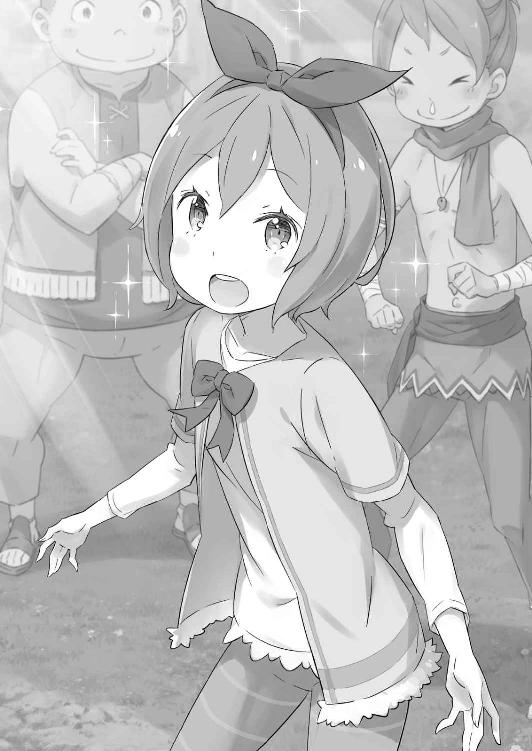
「ラム、『聖域』のことはお願い。ちゃんと村の人を守って」
「承りました。エミリア様も、道中お気を付けて」
スカートを摘まみ、丁寧にお辞儀するラムに薄く微笑んだまま頷きかける。
それから最後に、エミリアはこのやり取りの功労者を視界に探した。
「あなたにも、ありがとうってお礼を言わなきゃ......あれ？」
発破をかけ、お膳立てをしてくれた少年の姿を探す。しかし、白いローブの少年はどこにも見当たらず、エミリアは困惑した。
「どこに、いっちゃったの？」
取り残されたようなエミリアの声に、ラムだけが呆れたように肩をすくめていた。
８
──枝木を搔き分け、草地を踏み、森の緑に紛れて姿勢を低くする。
鬱蒼とした草木の茂みに身を潜めて、『彼』は呼吸と気配を殺して闇と同化した。
百メートルほど離れた森の外、そこにある小規模な集落では現在、住民を避難させるための誘導が行われている。試練から逃れる、そのために。
許されないことだ。あってはならないことが起きようとしている。そうならないために細心の注意を払い、奴らの動向に目を配ってきたというのに。
焦燥感を堪え、潜伏を続ける『彼』の下に、微かな足音と共に複数の黒影が集まる。
自分と合わせて合計四人、狼煙を上げるにはいささか不足だが、足止めには十分だ。予定を前倒しにすることになるが、これも全ては尊き意向に従うために。
懐に手を入れ、『彼』が取り出したのは掌に乗る小さな手鏡だ。ただし、その役目は婦女子の持つ化粧鏡と異なり、『別の鏡と繫がる』ことにある。
──遠方の、対になる鏡と言葉を交わすための『ミーティア』、対話鏡だ。
希少品である『ミーティア』としては数が多く、比較的入手しやすい道具ではあるが、これを持たされたものは信徒の中でも限られている。それこそ信仰心を認められ、その上で司教様の腹心──『指先』に選ばれたものだけの栄誉だ。
「────」
無言のまま、『彼』は対話鏡に魔力を流し、『ミーティア』を起動させる。
この数時間、何度も繰り返した行程だ。同行した試練の供物たちの情報を逐一流し、来るべき試練の時に備えるために。──故に、非常事態を伝えなくてはならない。
同志たちに伝えた情報と、供物たちの行動が大きく食い違った事実を。
奴らは『彼』の同志たちの動向に気付き、不届きにも逃げ出そうとして──、
「──なるほど。周りとの連絡手段だけが謎だったけど、つくづく『ミーティア』って便利なもんだ。でも、相手の顔を見て話すコミュニケーションも大事だと思うぜ？」
「──っ!?」
ふいに、隣にしゃがんだ同志が対話鏡を覗き込み、そんな言葉を投げかけてきた。
慌てて振り向き、直後に『彼』はひどい違和感に襲われる。相手はすぐ隣にいる。それなのに顔の特徴が摑めない。まるで、脳に理解を拒まれたかのように。
「顔じゃなく、体質で区別する。その場合、俺はお前らにとっては同じ香水付けた女子会仲間みたいなもんか。ゾッとするぜ、クソ野郎」
言いながら、『白いローブ姿』の同志は立ち上がり、吐き捨てるように言い放つ。
そして、驚きに硬直する『彼』──魔女教徒であるケティの前で、同志は被っていたフードを払い、珍しい黒髪と目つきの悪い三白眼を露わにした。
「俺とエミリアの感動の再会を邪魔してくれた罪は重いぜ、お前ら」
なおも軽薄な戯言を口にし、黒髪の少年は煽るような不敵な笑みを浮かべる。
次の瞬間、少年を取り巻く不可思議な術式が解けた。ケティの目に少年の姿がはっきりと像を結んで、その正体が発覚する。
それはこの討伐隊を主導し、自分たちに抗う姿勢を見せた裏切り者の姿──。
「────」
最も許されざる敵を前に、ケティは弾かれるように立ち上がる。すぐ傍らの同志二人と目配せする必要もない。眼前の背信者へ、一斉に攻撃を仕掛ける。しかし──、
「──遅い」
腰の裏の十字剣を抜く瞬間、耳元を低く声が掠めた。
直後、視界の端を銀閃が駆け抜け、血を噴きながら左右の同志が崩れ落ちる。首を致命的に削られ、その絶命は明らかだ。そしてケティ自身も──、
「抵抗するのはお勧めしない。無用な苦しみを与えるつもりはないのでね」
首裏に冷たい切っ先が当てられ、完全に機先を潰された。
背後に立つのは瘦身の騎士、同志二人を斬ったのは老齢の剣士だ。加えて彼らの背後には猫耳の亜人が立っており、そんな彼らを引き連れるのは黒髪の背信者──。
「ナツキ・スバル......！」
「おお、当たり前だけど魔女教徒も喋れるんだな。助かるよ」
後ろ手に拘束され、地面に押し倒されるケティは背信者──ナツキ・スバルを睨む。
それを受ける少年は額に冷や汗を浮かべ、連れの三人に目を向けると、
「目論見通りにいって何よりだ。協力ありがとよ」
「半信半疑は否めなかったが、ここまで読みが当たれば認めざるを得まい。──彼らが君の期待通りに踊らされていれば、ますます上々といったところだ」
「それは間違いないんじゃにゃい？ 村の避難が予定よりずっと早く始まった途端、大慌てで連絡しようとしたぐらいだし」
少年の言葉に騎士と亜人が賛同し、ケティは憎悪と無理解に頭の中が混乱する。
会話の意味がわからない。それではまるで、何もかもが──。
「わからないって顔してるな。けど、仕方ねぇよ。今回は俺の立ち回りが上手すぎた。お前こそ、情報攪乱への協力感謝だ。──二重スパイの自覚はないだろうけどさ」
「──？」
「早い話、お前がスパイなのはバレバレだったんだよ。見つけた方法は企業秘密。で、魔女教の連絡役のお前に、せっかくなんで罠を張った」
凝然と目を見開くケティに訥々と語り聞かせ、ナツキ・スバルは片目を閉じた。
そして、彼は告げる。
「──二時間、お前は二時間遅れのスケジュールを仲間に報告した」
立てた二本の指を左右に振り、驚愕に目を押し開くケティに続ける。
「その間に、エミリアたちは外へ逃がす。その間に、場所の割れてる『指先』は潰す。その間に、お前たちの司教様を潰す準備を整える」
その言葉の最後に少年は、ナツキ・スバルは堂々と笑みを浮かべた。
そして、宣戦布告する。
「──何もかも先回りされて潰される、その恐ろしさを存分に味わわせてやるぜ」
第二章 『お膳立ての舞台裏』
１
──時は、討伐隊が『ネクト』による移動会議を続けていた頃に遡る。
「せっかく懐にスパイがいるってわかってるんだ。うまく逆手に取って偽情報を摑ませれば、エミリアたちを安全に逃がす時間が作れる。そう思わないか？」
『────』
メイザース領へ向かう道中、スバルは一連の情報を明かした上でそう言った。
魔法で意識を共有する討伐隊の間では、その意見に激しく議論が飛び交っている。それらの思念波に頷きながら、スバルは「まあ聞けよ」と手を上げた。
「話し合った通り、大罪司教をぶっ飛ばすには『指先』の全滅が必須だ。けど、その『指先』退治だって字面ほど簡単なことじゃない。こっちも工夫がいる」
『君の体質を利用すれば、個々の『指先』を誘き出して戦えるはずでは？』
「それは保証する。でも、どのみち、スパイがいる以上はこっちの動向は筒抜けになる。先にスパイを始末しても、定時連絡が途切れたら怪しまれるのは同じ。なら、逆転の発想で、情報は流させてやればいい。ただし、偽情報を」
ユリウスに応じながら、スバルは前周回の最後、村が襲撃された光景を思い出す。
あのとき、村には森に残る全ての敵が一斉攻撃を仕掛けてきていた。襲撃者の人数的にもそれは間違いない。ペテルギウスが、行商人に潜む『指先』に憑依していたことも。
──つまり、潜伏していた魔女教徒は、ケティという名の行商人だ。
彼は何らかの方法で『指先』と連絡を取り合っていた。おそらく、ペテルギウスと同行する魔女教徒と別に、周囲の情報を探る役割を与えられていたのだろう。
「だから、それを逆手に取る。スパイを騙せれば、魔女教全員を騙せるってわけだ」
『そんために、行商人迎えにやったラジアンたちに合流遅らせる指示したんか』
スバルの根回し発言に、リカードは疑問が氷解したように納得する。
避難協力の行商人の迎えには、前回と同じく『鉄の牙』の数名を送り出した。
ただ、集合時間と人選にはスバルが小細工を加えてある。魔女教のスパイが討伐隊に合流する前に、済ませておきたい問題は山積み、時間との勝負だ。
ちなみに人選は、前周回で犠牲になった狐人を推薦し、何となく戦いから遠ざけた。
『じゃ、提案ってよりただの事後報告じゃにゃい。スバルきゅん、性格悪い』
『まるでお嬢みたいなやり口やないか......碌な死に方せぇへんぞ』
「フェリスはともかく、リカードの雇い主へのその評価はどうなってんの？」
仕える相手のはずだが、リカードのアナスタシア評は辛辣だ。直後に馬鹿笑いの思念が伝わってきたので、単なる軽口の一環と思っておく。
ともあれ、スパイ攪乱作戦はすでに始まっている。それを受け──、
『間者への対策は了解した。ちなみに、その情報の出所は......』
「魔女教に対する俺の嗅覚......じゃ、ダメか？」
『──根拠には乏しいが、いるものと思って善処する。それが私の答えだ』
説明に窮するスバルに、ユリウスは内心のわかりにくい思念で応じた。彼の魔法だからなのか、『ネクト』で伝わる彼の思念波は他と比べて妙に不透明だ。
だが、彼の協力の意思に噓がないのは疑う余地がない。ならば、今はそれでいい。
『それはいいですけど、親書の件はどうなるです？ 白紙のままは困りますですよ』
『えー、なんで？ 真っ白ならなんでも書けてベンリな気がするみたいな？ した！』
『お姉ちゃんは黙っててくださいです』
次いで念話に割り込むのは、『鉄の牙』の子猫姉弟だ。実は念話の裏では延々と奔放なミミのお気楽思念波が流れているのだが、みんな和やかに受け流している。
一方、真面目に作戦を気にするのは弟のティビーだ。子猫姉弟のやり取りに顎を引き、スバルは白紙の親書、その問題への対処に思考を巡らせる。
なにせこの問題のおかげで、討伐隊はラムに奇襲され、貴重な時間を奪われるのだ。
作戦は時間との勝負でもある。そのすれ違いは絶対に避けたい。
『それで、どうするです？』
対抗策を聞かせてほしいと、ティビーは神経質な灰色の思念を向けてくる。彼以外の面々も、スバルの返答に心の注目を傾けてきた。
その中心で腕を組み、スバルは白紙の親書にどう対応するか口にする。
その方法は──、
２
世界が目覚め始めたばかりの早朝、ラムは不可解な気配に気付いて顔を上げた。
野外で、屋敷からアーラム村に続く道を歩いていた最中だ。村人の覚えが悪いエミリアを屋敷に置いて、その村人たちに避難を促す説得をしにいくところだった。
「────」
森の微かなざわめきに、ラムは形のいい眉を顰めて一瞬だけ考え込む。
ラムは角を失くした鬼族だ。元来、鬼族は山や森の変化に目敏く敏感である。その五感と異なる第六の感覚が、街道の彼方から変化の風が届いたことを報せる。
小さく鼻を鳴らし、ラムは直近に危険な気配がないことを確かめると、その場に片膝を突いて額に意識を集中した。異能、『千里眼』が発動する。
『千里眼』とは、他者の視覚に同調し、視界を盗み見る鬼族に伝わる秘術だ。
もっとも、使いこなせるのは鬼族でも一握りで、今ではラムだけだろう。発動中は自分の周囲の注意が疎かになるため使い所が難しいが、索敵能力として重宝している。
ラムの忠誠を捧げる主人は敵が多い。そのためにも、この異能は有用だ。
「────」
そんな感慨とは無縁に、ラムは異能の効果に集中して他者の視覚に介入する。
介入先は人でなくとも、視覚を有する生物であれば支障はない。ただし、波長の合う相手に限定され、この数日は肝心の森の中をほとんど把握できない有様だった。
しかし、今回はそうではない。村の向こう、街道に繫がる方角から押し寄せる波長とは複数の適合を察知する。その内の一つに介入し、視界を覗き見た。
「────」
見えたのは介入した人物が乗る、大型の騎獣──ライガーと呼ばれる大犬だ。乗り手は小柄で、忙しなく猛烈な勢いで周囲を見回している。警戒ではない。落ち着きがない。
他人の視界を覗き見る力だ。当然、ラムの意図と違う動きをされれば酔いに繫がる。ラムはすぐに別の視覚──隣の適合者の視界に移り、改めて状況を観察した。
幸い、今度の視界は大人しく、真っ直ぐ進路を見つめている。目線の高さは直前の適合者と同じぐらいで、大犬に乗っているのも同じ。何の差だったのだろうか。
「......なんて数なの」
しかし、そんな疑念は視界に映り込んだ大勢の人影に霧散する。
人数は四、五十人。全員が武装した集団だ。街道を行軍し、村まで十数分の距離を走っている。そして複数の男の鎧に、牙を剝く獅子の家印が刻まれているのがわかった。
それはカルステン公爵家の家印であり、昨夜、白紙の親書で宣戦布告した陣営の証。
つまりこれは、王選の敵対陣営による攻撃行為──。
「ロズワール様のご不在の機に......っ！」
即断を求められる切迫した状況に、ラムは非常事態を理解する。
敵の目的がエミリア陣営に危害を加えることならば、アーラム村も占領されるだろう。その前に手を打たなくてはならない。持てる手、全てを使って。
歯嚙みしたラムは千里眼の接続を切り、村に走り出そうと──、
「......は？」
その直前で、呆気に取られた声が漏れた。
駆け出そうとする足が止まり、千里眼越しにラムは思い切りに顔をしかめる。
そのぐらい、見えた光景は理解に苦しんだ。
「──バルス？」
集団の先頭を走る地竜に跨り、黒髪の少年は掲げた看板をあちこちに向ける。前後左右のどこから見られても大丈夫なように。
その看板には、大きな文字でこう書かれていた。
──『てがみはまちがい。おれがわるかった』と。
３
白旗同然の文言を掲げ、スバルたち討伐隊は無事にアーラム村に到着を果たした。
ただし、出迎えに現れたラムは不機嫌そのものの顔つきで、スバルは気まずさに小さくなりながら彼女の前に立つ。途端、ラムは「ハッ」と鼻を鳴らして、
「白紙の親書が持ち込まれたかと思えば、今度は武装集団のお出まし？ ここがどなたの領地なのか、理解が足りていないと見えるわ」
「でも、先制攻撃は仕掛けてこなかった。......話し合いの余地は、あるよな？」
「あの看板はラムへの伝言でしょう。あんな方法で伝わるのはラムだけだもの」
スバルが脇に抱える木の板に目をやり、ラムが呆れた風に嘆息する。
看板にはどでかく白い塗料で、イ文字の謝罪文が書かれていた。行軍の最中、白紙の親書へのカウンターとしてスバルが用意した秘策、というより誠実な対応だ。
「字が汚すぎて、危うく読まずに叩き潰すところだったわ」
「お前に教わった字だよ！ 見慣れてるよね!?」
「生憎、そんなことは恩知らずが恩を忘れるのと同じぐらい早く忘れたわ」
「ぐぐぐ......っ」
変わらず辛辣なラムの物言いに、スバルは何も言い返せずに口ごもる。彼女はそんなスバルの反応に腕を組み、「で？」と言葉を継いだ。
「ラムの聞いた話だと、バルスはエミリア様のご機嫌を盛大に損ねて王都に捨てられてきたはずだけど......どの面下げて戻ってこれたの？」
「ホントに容赦ねぇな、お前！ イマイチ反論もできねぇけどこの面下げておめおめと舞い戻ってきたよ！ 手ぶらってわけじゃねぇけどな！」
背後に居並ぶ討伐隊の面々を手で示して、王都から持ち帰った戦果を見せつける。
スバルの発言にラムは目を細め、それから討伐隊を眺めると、
「自慢げなのはいいけど、目的がわからなくて村の人間には警戒されてるわよ。ラムもこれから何をされるのか不安で、小鳥の心臓が張り裂けそうだわ」
「心臓に羽毛が生えてるって意味？ それって強心臓じゃね？」
「あまり戯言を並べ立てるようなら鼻を削ぐわよ」
「数日ぶりの再会で気持ちをほぐそうと......鼻!?」
蛮族発言に顔を押さえて後ずさり、スバルは視線をラムの背後の村へ向ける。
これだけの騒ぎだ。当然、村人もすでに討伐隊に気付き、広場に並んだ戦士たちの姿に不安げな目を向けている。ただし──、
「──おい、あの先頭にいるのって、スバル様じゃないか？」
「本当だ。ラム様と話してるの、スバル様だ。戻られたのか」
「あー、スバルだー！ 帰ってきたー！」
集団の代表に立つスバルに気付くと、村人たちの警戒もわずかにほどける。おかげで彼らにとって見ず知らずの集団は、『顔見知りの率いる謎の集団』に格上げされた。
「で、あとはそれを『顔見知りが連れてきた頼れる援軍』に格上げする必要がある」
「そう簡単な話ではないわよ。そもそも、ラムもまだ納得していないわ。──封蠟までされた手紙の内容が手違いだなんて、素直に頷ける話じゃない」
「それも敵の罠だ。......森に隠れてる連中、気付いてるだろ？」
「────」
声を潜めるスバルに、ラムが神妙な顔つきで押し黙る。
白紙の親書の件と合わせて、ラムが森に潜む魔女教を警戒していたのは前回からも明らかだ。少しフェアではないが、ラムの抱く懸念に乗じてスバルは話を進める。
「フェリス、ヴィルヘルムさん、こっちに！ ラムも、二人は知ってるよな？」
呼びかけに従い、スバルの隣に二人がやってくる。並んだフェリスとヴィルヘルムを見つめて、ラムは「ええ」と表情を消して背筋を正した。
そのラムの姿勢に頷きかけ、クルシュ陣営の二人も一礼する。
「クルシュ様の名代として参りました、ヴィルヘルム・トリアスと申します」
「同じく、クルシュ様の一の騎士、フェリスでーす。後ろの人たちの団長がヴィル爺で、フェリちゃんの役目は紅一点ってとこかにゃ」
厳粛なヴィルヘルムと、どこまでも軽薄なフェリスの態度は見事に対照的だ。その両極の挨拶に対し、ラムは丁寧にスカートを摘まんでお辞儀した。
「ご丁寧な挨拶、痛み入ります。ラムと申します。ロズワール・Ｌ・メイザース辺境伯のお屋敷にて、侍従長を務めさせていただいております」
侍従長、と名乗るラムの図々しさにスバルは顔をしかめたが、口出しは堪えた。レムが不在の間、屋敷の管理がラムの職務なのは間違いない。個人的には侍従長代理、あるいは一日署長ならぬ一週間侍従長ぐらいの肩書きを名乗ってもらいたいが。
「ともあれ、二人と後ろの人たちはクルシュさんの陣営と協力関係になった証拠だ。これはロズワールの望みでもある。文句ないだろ？」
「ロズワール様のご意向ならラムは従うだけ。──王都に残った目的は果たしたと、そう捉えていいようね。親書が白紙だった時点で、バルスの首が届くかと思ったけど」
「ねえ、その物騒な発想やめない？ なんでそんなに蛮族思考なの？」
戦国時代のような気構えに言及するも、ラムはそれを鮮やかに無視する。代わりに彼女は援軍の代表者二人に向き直った。
「うちの使用人見習いと一緒で、心中お察しするわ」
「少々、突飛な言動と感情表現こそ目立ちますが、スバル殿は見所のある御仁ですよ。この歳をして、教えられることが多々あります」
「フェリちゃんはヴィル爺ほどほだされてにゃいから、素直にラムちゃんの言葉を受け取ってみたり。まぁ、少しはマシになったかにゃーって思うけど」
ヴィルヘルムとフェリスの評価に、ラムはますます不本意そうな顔で嘆息した。
どうにもむず痒い会話だったが、スバルは頰を搔きながら内心を誤魔化す。そしてすぐに手を打って、改めてラムに状況の詳細な説明をする。
「とにかく、森の敵を潰すのは討伐隊に任せてくれ。お前にはそれと別の方向で協力してもらいたいんだ。聞いてくれるか？」
「話の内容次第よ。安請け合いしてバルスのいやらしい毒牙にかかりたくないわ」
「俺、お前にいやらしい目ぇ向けたことそんなないよ!?」
「ゼロって言えないところが男の子だよネ」
ラムの毒舌とフェリスの茶々に厳しい目を向け、スバルは咳払いする。
それから満を持して、スバルは自分の目論見と、事態の表事情と裏事情を開示した。
「お前に頼みたいのは、村の人たちの避難先の選定と誘導だ。森の敵と戦う間、村の人たちは巻き込まれないようにしたい」
「言いたいことはわかる。けれど、逃げるにしても手段がないわ」
「そのための足はこっちで用意した。これから少しして、方々から搔き集めた竜車持ちの行商人が村にくる。それに乗せて、村の人たちを外へ連れ出す」
「方々から集めた......？ どうやって？」
「──金で。出所はその、吞み込んでくれ」
スバルの『保険』には大金がかかる。当てにした財布はロズワールのもので、おまけに当人の許可は取っていない。スバルの口ぶりにそれを察し、ラムは嘆息した。
「......わかった。ラムも口添えするわ。非常事態だもの」
「マジか!? 助かる！ 最悪、出世払いで許してもらうつもりでいたのに！」
「出世払いは出世する将来性のある人間だけが使える権利よ。──ただ、事はラムの了承が得られただけで済むほど簡単じゃない」
未来を厳しく査定したあとで、ラムはそれ以上に厳しい目を背後に向ける。その視線につられるまでもない。ラムが何を言いたいのか、スバルにもわかっていた。
──ラムの背後には、未だ状況を不安視するアーラム村の人々がいる。
避難誘導を進めるにあたって、最も高い壁となるのが彼らの説得だ。
前周回でも体験した出来事だが、そのときの結果は今でも苦々しく思い出される。記憶に呼び起こされる感情は恐怖、そんな言葉に近い。
──エミリアに向けられる否定と差別、その表層を体感させられた出来事だ。
「────」
時間は限られている。魔女教を偽情報で攪乱してまで稼いだ貴重な時間だ。
それなのに、最初の第一声に何を言えばいいのか、スバルはそこで躓いていた。
「もし、スバルきゅんが言えなきゃ、私が......」
「──フェリス」
スバルを気遣い、代理を買って出ようとしたフェリスをヴィルヘルムが呼んだ。剣鬼は目だけでフェリスの配慮を止め、その瞳をスバルへと向けて、
「これは、スバル殿が為さなければならないことだ。──わかりますな？」
ヴィルヘルムの低い問いかけに、スバルは一度だけ目をつむって、強く頷いた。
気遣ってくれたフェリスに目礼して、それからスバルはラムの横を抜けると、広場の真ん中に進み出る。正面には不安げな顔の村人たちがいて、背後からは討伐隊の仲間たちの緊張が突き刺さっていた。
最初の一言、肝心なのは一番初めの一声だ。
それはまだ決まっていない。けれど、村人の不安と恐怖を拭うために最適な一言を。
「みん......」
「──スバル様。遠回しなのはやめにしましょう。村人一同、わかっております」
しかし、スバルの無策の一言目は出鼻を挫かれた。
言葉を遮り、スバルに声をかけたのは村人の中心──白髪の小柄な老人だ。村人からは『ムラオサ』の名で呼ばれる、村長職とは無関係の人物。普段は認知症を疑うような態度の曖昧ぶりを見せる老人だが、今の声と眼差しにその様子は一切感じられない。
その眼光にスバルが気圧されると、老人は髭に触れながら続けた。
「物々しい方々をお連れになったのは有事に備えてのこと。すでにラム様からも聞き及んでおります。──森に、怪しげな気配があると」
「いや、それは......」
「誤魔化すのはやめてください！ 俺たちだって、もうとっくにわかってます！」
ムラオサの追及に続いて、悲痛な声を上げたのは青年団の若者だ。前周回でも彼の訴えを切っ掛けに、村人たちの不安と恐怖は表出した。そして、それは今回も同じだ。
「やっぱり、森にいるのは......！」
「領主様はどうして、こうなるなんて想像がついてたはずなのに！」
「なんで領主様はハーフエルフに......半魔を支持するなんて言い出したんだ......」
若者の嘆きを皮切りに、村人は顔を見合わせ、不安と恐怖を我先にと分かち合う。その反応はスバルが最も恐れていたもので、最も避けたかった姿だ。
『死に戻り』で時を遡って、あらゆることに対処しようと奮闘しても、唯一、どうすれば防げたのかわからないまま辿り着いてしまった、最悪の光景──。
「────」
根深く刻まれた差別意識は、この瞬間に全てを取り去ることはきっとできない。それは前回も思った感覚で、また同じように妥協すれば楽になれる。
差し迫った魔女教の脅威を思えば、この場の問題を先送りにするのは正しい選択だ。
ひとまず彼らは渋々納得させ、その上で避難を優先してもらえば──、
「──俺の知ってるあの子は、強がりで意地っ張りで意固地なくせに、さびしがりで誰かが見ててあげないと心配な子なんだ」
「────」
そんな風に考える内心に反して、スバルは全く無関係に思える言葉を口にしていた。
村人たちは困惑し、スバルが何を言い出したのかと瞠目する。似たような反応は討伐隊の彼らにもあった。しかし、すぐに彼らの表情から驚きは消え、傾聴する。
スバルの続ける言葉に、耳を傾けてくれている。
「他人のために損することばっかり選んで、傷付きやすいくせに自分が傷付く方法ばっかり進んで選ぶ。優しくて包容力があるかと思いきや、子どもみたいに小さいことに拘ったりするし、ピーマル食べれなくて涙目になったり、笑った顔が可愛かったり......」
「いったい、何の話を......」
「──屋敷にいるハーフエルフの、エミリアの話だよ」
遮ろうとした声に、スバルは静かな声で応じた。
その答えに村人たちは驚き、スバルの口元に浮かんだ微かな笑みにさらに驚く。それは直前までの状況と、ざわめく彼らの言葉にあまりにそぐわない反応で。
「みんなの不安はわかる。その原因が領主のロズワール......様が、王都で始まった王選の候補者、ハーフエルフの女の子を支援してるからだってことも」
「────」
「その子の名前は、エミリアだよ。みんなも、本当はずっと知ってたはずだ。あの子がこの何ヶ月か、みんなと一緒に過ごしてたことも」
スバルの訴えに、村人たちは視線を交わす。それは心当たりのある反応で、彼らの記憶の中にも残っているはずだ。ずっと、素顔と素性を晒すことができなくても、スバルと一緒に何度も村に姿を現し、少なくない時間を共に過ごした誰かがいたことを。
「みんなが怖がるのも、不安になるのもわかるよ。そんな風になったとき、何かわかりやすいものにごちゃごちゃした気持ちをぶつけたくなる気持ちもわかる」
手近なものに感情をぶつけるのは、自分の心を守るために必要な本能なのだ。そのことをスバルは責められない。誰よりも、スバルに誰かを責める資格はない。
それでも、自覚と理解は責められるように心を苛む。
スバルがそうだったように。今、村人たちの顔に痛みを堪える色があるように。
「でも、みんなだって本当はわかってくれてるはずだ。誰かのせいにして不安が紛れるなんて見せかけで、本当の意味で楽になることなんて絶対にないんだって」
「────」
「あの子は、みんなと一緒に笑える子だよ。笑いたいって、そう思ってる子だ。そう言ってたはずなんだ。そのこと無視して、あの子を傷付けるのはやめてほしい」
自分の声に、不安や悲嘆が宿っていない自信がない。
どの面を下げて、そんなことが言えるのかと自分を殴りたい気持ちもあった。誰よりエミリアを傷付け、彼女の心を無視し、踏みつけにしたのはスバルなのに。
そのときの後悔は、今も延々とスバルの胸を貫いている。だからだろうか。
あんな顔をさせた後悔も、あんな顔をさせる後悔も、誰にも味わってほしくないのは。
「頼むよ。──お願いします」
頭を下げ、スバルは村人たちに懇願した。
それは本題とまるで的外れな部分の願い事で、大切な時間を無駄に浪費している。
避難について話さなくてはならないのに、スバルが伝えたのは全く別のこと。エミリアのことを繰り返し伝えて、自分がどれだけ酷かったのか再確認しただけのことだ。
「────」
現に、スバルの言葉に村人たちはなんと反応すべきか困った顔をしている。彼らも話題にしたことではあっても、論点と結論は真っ向からぶつかり合った。
互いに困惑と、戸惑いが生まれる。──しかし、生まれたのはそれだけではない。
「──ペトラ？」
聞こえた小さな足音に、スバルはすぐ傍らに歩み寄った少女を呼んだ。
赤みがかった茶髪の少女──ペトラは、スバルと親しくしていた村の少女だ。呼びかけに頷く少女は振り返り、スバルの隣でまるで村人と向かい合うように立った。
そして、それが『まるで』ではないことは、続く言葉が証明する。
「どうしてみんな、スバルの話を聞いてあげないの？」
それはひどく真っ正直で、飾り気のない、だからこそ心を抉る糾弾だった。
「スバルがこんなに困って、泣きそうな顔なのに、どうして助けようとしないの？」
「それは......」
「わたしも、みんなも困ったとき、スバルはなんとかしてくれたよ？ きっと今日も、なんとかしにきてくれたんだよ？ それなのに、どうして？」
ペトラが重ねるのは、しがらみを抱く大人にはできない、子どもだけが持つ無垢という名の攻撃だ。押し黙る大人たちを悲しげに見て、ペトラはスバルの手を握った。
「お屋敷にいるお姉ちゃんって、いつも白い服着てるお姉ちゃんでしょ？ ラジーオタイソーのとき、ハンコを持ってきてくれてる」
「......ああ、そうだよ。あの、ハンコのお姉ちゃんだ。みんなに混ざりたいのに、素直にそう言い出せない。そんなお姉ちゃんなんだ」
平和な日々の思い出を振り返り、スバルはペトラの言葉に唇を綻ばせる。
毎朝、スバルはエミリアを伴って村に下りて、村人たちとラジオ体操をして、スバルの彫った芋判を押してやるのが日課だった。エミリアも、いつもそれを見ていた。
──それは村人と作り上げた絆、日常という光景の中にエミリアもいた確かな証だ。
その事実に、大人たちの顔に理解と躊躇いが浮かんだ。だが大人が口ごもり、躊躇する問題に子どもたちは躓かない。手を上げ、別の子らもスバルの隣に駆け寄る。
「オレもお姉ちゃん大丈夫！」「ペトラが平気なら俺も平気だぜ！」「兄ちゃんだけにいいカッコさせられるかよ！」「スバルが泣きそーだから助けてやろー」「そーするー！」
子どもたちが騒ぎ出せば、その声にそれまでの雰囲気が吹き飛ばされる。並んだ子どもたちに見つめられ、不安を訴え合っていた大人たちは顔を見合わせた。
最後の一押しが必要だ。躊躇う彼らの姿に、スバルは前に出た。両手は子どもたちに繫がれたままで、なんとも締まらない格好だが。
「みんなにすぐ、納得してもらえるとは思わない。でも、チャンスが欲しい。何もかもダメだって潰さず、あの子に機会を与えてほしい」
「機会......」
「あの子がみんなと、仲良くなれる子なんだって、それをわかり合うための機会を」
たどたどしく言葉にしながら、スバルは子どもたちに握られている手を解くと、村人たちに見えるように、頭を下げる以上の覚悟を示すために、膝を突いた。
「────」
どよめきが広がり、ラムも目を見開く。
ただ、後ろに控えているヴィルヘルムやフェリス、討伐隊の面々だけはスバルの嘆願を黙って見守ってくれていた。
それで十分だ。恥ずかしいことも、躊躇う理由も何もない。
「──どうかみんな、色々と言いたいことはあるだろうけど、今は吞み込んでほしい。その上で一つ、その機会を作るための時間を、俺たちに守らせてほしい」
「────」
「お願いします。──俺、そのために戻ってきたんだよ」
声を詰まらせ、村人たちは沈黙する。
それもそのはず──彼らにとって恩人でもあるスバルが、自分の額を地面に擦り付けて頼み込んでいるのだ。『守らせてほしい』と、そう懇願しているのだ。
これでは立場があべこべだった。だが、それは彼らの知るスバルの姿で──、
「──ああ、もう、しょうがない人だな、スバル様は」
そう言って、乱暴に頭を搔き毟ったのは誰であろう、最初に不安を噴出させた青年団の若者だ。彼はバツの悪い顔でスバルの前に歩み出て、手を差し伸べた。
その手を呆然と見ていると、彼はもどかしくスバルの肩を摑み、立ち上がらせる。
そして、まだ何も言えないスバルに彼は言った。
「そんな一生懸命、守ってくれるなんて言われちゃ......仕方ないでしょう」
困りきった若者の発言は、それこそ最初の不安と同じように伝染する。
彼の言葉を切っ掛けに、村人たちは声を震わせながら、
「歳を取ると嫌だね、なんだか涙腺が脆くなって......」
「本当に、困った人だ。なんて脅し方をするんですか、まったく」
愚痴のような彼らの声に、安堵と温もりがあることにスバルは瞠目した。額に土を付けたままのスバルに、ペトラが指を突き付ける。
「スバル、顔が真っ黒」
そのペトラの言葉に、堪え切れない笑いの衝動が村に広がった。
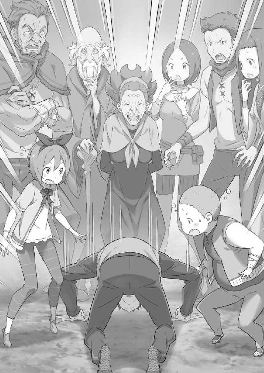
無理はある。乗せられてくれたのだとも思う。それでも、願いを聞き入れてくれた。
村人たちの笑顔に、スバルは嘆息した。
それはこれまで過ごした日々の中、確かにあった光景と同じものだ。
「......ありがとな、みんな」
「──それはこっちの台詞ですよ、スバル様」
村の総意を代弁するムラオサの言葉に、今度こそスバルは泣きそうになった。
４
──と、それで終われば美談で片付くお話だったのだが。
「肝心の話を何もしてないように思えるのはラムの勘違い？」
「あ、ぁ──っ！」
半泣きなのを隠して戻ったスバルに、状況を傍観していたラムがそう言った。彼女の言葉に一連の会話を思い返し、確かに肝心な説明がすっぽ抜けていることに気付く。
エミリア関連の話題に終始して、村人の避難計画に触れるのを完全に忘れていた。
「しまった、俺は何を......」
「ちょっとは使えるようになったと思えば、所詮、バルスはバルスね」
ラムの失望した眼差しに、言い訳できないスバルはすぐ村人の方に取って返して説明しようとする。が、そんなスバルに「仕方ないわ」とラムが首を横に振り、
「避難と、それに伴う補償の説明はラムが代わるわ。バルスは悪巧みに戻りなさい」
「え、いいのか？ っていうか、大丈夫か？」
「大丈夫じゃないのはバルスの方よ。さっきの今で、すぐ切り替えて村の人間に現実的な話ができるの？ そんな器用な性格はしてないはずでしょう」
「そうですね！ 恥ずかしいんで、姉様にお願いします！」
「──？」
敬礼してお言葉に甘えると、ラムは怪訝な顔で首を傾げ、そのまま村人の方へ。あれで理解度と洞察力の高いラムだ。以降の説明は彼女に投げて大丈夫だろう。
そうなると、あとは次なる問題だが──、
「──スバル、そろそろ状況を次に進める話がしたい」
意識を切り替えたところで、スバルにそう言ったのはユリウスだ。彼の言葉に頷き、スバルは討伐隊の列へ戻る。状況を、次のフェーズに進めなければ。
その戻ってきたスバルに、軽く手を上げたフェリスが笑いかける。
「スバルきゅん、さっきのお話良かったよ～。フェリちゃんもジーンときちゃった」
「掘り返すな！ あと噓つくな！ そしてやっぱり掘り返すな！ 恥ずかしい！」
「恥じるなど。君らしい物言いだったが、だからこそ村人も心を動かされて......」
「掘り返すな！ 埋め立てて封印しろ！ 次の計画の話しようぜ！」
悪気の塊であるフェリスと、悪気のなさそうなユリウスに怒鳴って話を元に戻す。
この先の展開は行軍中に打ち合わせた通りだ。村人の説得が終われば、行商人を迎えにいった別働隊と合流して避難。その間に対処すべきは魔女教の情報攪乱と──、
「エミリア様を言葉巧みに騙して、村の人たちと一緒に遠くに追い払う......だよネ」
「言い方！ 内容一緒でも人聞き悪すぎるだろ！」
「だって納得いかにゃいんだもーん。どうして、エミリア様を遠ざける必要があるの？ エミリア様には戦う理由も力もある。......違う？」
作戦の方針に物申すのは、この一点だけは意見の合わないフェリスだ。スバルとフェリスの言い合いの焦点は、作戦におけるエミリアの立ち位置にある。
スバルはエミリアを戦いに巻き込みたくない。しかし、フェリスはそれに反対する。
思い返せば前周回、村での最後の戦いにエミリアを参戦させたのはフェリスだった。ラムの説得もあったそうだが、フェリスはエミリアの実力を正しく評価している。
エミリアには、ペテルギウスとさえ渡り合える力があると──。
「──それでも、俺はエミリアを魔女教と戦わせたくない」
「はぁ、平行線......」
呆れた風に肩を落とすフェリスには悪いが、スバルも意見を引っ込められない。
この件に関してだけは譲れないのだ。究極的にいえば、エミリアを魔女教に関わらせたくないのはスバルのわがまま──胸にわだかまる嫌な予感が原因の、だ。
その予感はきっと、前周回の最後、ペテルギウスを倒したエミリアの横顔が理由だ。あの狂人の死に、自分でも理解できない涙を流していた彼女への──、
「──フェリス。スバル殿にはスバル殿の想い方がある。お前がクルシュ様に期待する在り方があるように、スバル殿にもエミリア様に望む在り方が」
「ヴィル爺......」
「お前にも、望まれた在り方があろう。それに真摯であることは理解できるはずだ」
そこに口を挟んだのは、ここまでの議論を見守っていたヴィルヘルムだ。老剣士の言葉にフェリスは頰を強張らせ、腰に備えた短剣に無意識に触れる。
「お前がクルシュ様を慕うように、スバル殿もエミリア様には健やかであっていただきたい。──好いた女子の安寧を願うのは男児として自然なことだ」
「そうはっきり言われると、照れるやら情けないやらなんですが......」
頰を指で搔き、スバルはヴィルヘルムの援護に情けない顔をする。が、否定できないのはそれが正しい指摘だからだ。そして、フェリスも拗ねた顔つきだが、それ以上は反論しようとしなかった。周りの騎士たちも、生温かい目でスバルを見ている。
「とにかく！ 今後の流れは話し合った通りだ！ エミリアに聞かせるためのシナリオはできてる。説得力の補強に、フェリスとヴィルヘルムさんは協力よろしく！」
「承知」「りょうか～い」
説明役二人の承諾を改めて得て、スバルはこの場の話し合いに一区切りをつける。村人への説得をラムが果たしてくれれば、残す問題は多くない。スバルは振り返り、
「それで、ユリウス。さっきの頼みなんだが、どうなって......」
「──それってボクのことかな？ それならちゃんと聞いてるよ」
「────」
やり取りの最後、その場に割り込んだ第三者の声に全員が息を吞む。ただ一人、スバルだけが声の主の正体に気付き、自然と頭上を見上げた。そして──、
「よう、久しぶりだな、パック。元気してたか？」
ふわふわと宙に浮かび、長い尾を揺らす小猫──パックに笑いかけた。
突如として現れた大精霊の存在に、討伐隊には極度の驚きと緊張がみなぎる。そんな反応を横目に、スバルの挨拶を受けたパックは自分の髭に触れると、
「うん、ボクの調子はいいよ。今なら、愛娘についた悪い虫も簡単に消し飛ばせそう」
「つかぬことお伺いしますが、その悪い虫っていうのは......」
「聞かなくちゃわからない？」
円らな瞳のまま、パックの全身から圧倒的な鬼気が溢れ出す。
その剣吞な気配に、スバルだけでなく討伐隊全員に緊張が走った。とっさに彼らが剣の柄に手を添えたのは、戦意に敏感な騎士として当然の反応だ。
そんな警戒の視線を浴びながら、パックはなおも鬼気を緩めずに続ける。
「スバル、君には言いたいことがいくつもある。わかるかい？」
「......俺は、エミリアとの約束を破った。その上、言いつけにも逆らって戻ってきた。それは言い訳しようがない、俺の罪だ」
「────」
スバルのその答えに、パックの頰がぴくりと震えた。それは精霊が投げかけようとした問いへの回答──スバルが一度、パックの怒りに触れた経験の追試だ。
あのとき、スバルは怒れるパックに何も言えなかった。自分の身勝手な行いでエミリアを傷付け、挙句の果てに彼女を死なせて、何も。だから──、
「お前がそのことで俺に怒るのは当然だよ。罰を与えなきゃ気が済まないってんなら、大人しくその罰を受ける覚悟はある。......でも、それは今じゃない」
約束を破り、願いを踏みつけ、スバルはあのときと同じ罪を重ねて舞い戻った。だが、一番最後の過ち──エミリアを死なせることだけは、絶対にしない。
そのために、スバルはこれまでの間違いも全部抱え込んで、戻ってきたのだ。
「エミリアに危険が迫ってる。俺はそれをどうにかしたい。あの子をひどい目に遭わせようとする運命に砂かけて、なかったことにしてやる。そのために、協力してくれ」
「......ずいぶんと、調子のいい話だね」
「ああ。俺は調子のいい男なんだよ。知らなかったか？」
低くなるパックの声に、スバルは片目を閉じてそう応じた。それを聞いて、パックは短い腕を組む。それから小猫は小さく唸ると、
「なんていうか......変わったようで、変わってないね、スバル」
「人間、性根はそう簡単に変わるもんじゃないからな」
「そうだね。やり方はともかく、君がリアを大事に思ってることも変わってなさそうだ」
そう言った直後、それまで辺りを支配していた強烈なプレッシャーがほどける。
身も凍るような威圧感から解放され、スバルは長く息を吐いた。それは討伐隊、ユリウスやヴィルヘルムも同じだ。特にフェリスは大げさに胸を撫で下ろして、
「も、もう大丈夫？ いきなり殺されたりしにゃい？」
「安心しなよ。同じ猫耳仲間じゃないか。ボクがそんな怖い精霊に見えるのかい？」
フェリスの憂慮に軽口で応じて、パックがぷんぷんと頰を膨らませる。直前までの態度を思えば笑えない冗談だが、ともあれ精霊の怒りは軟化してくれたらしい。
「まぁ、最初からそんなに怒ってなかったけどね。さっきの、村の人たちに話してるのもこっそり聞いてたから」
「そこからいたのかよ!? じゃあ、俺の目的もわかってたんじゃねぇか！」
「うん、いいお話だったよ。ボクも、思わずほろっとなったぐらいだね」
「掘り返すな！ 真面目な話しようぜ！ エミリアのための話し合いな！」
普段通りのやり取りが嬉しい反面、こそばゆくてスバルは早々に誤魔化しにかかる。それから、スバルは傍らのユリウスに振り返って顔をしかめた。
「お前も、パックの呼び出しに成功してたんなら言えよ。ビビっただろ」
「意図して驚かせたわけではないよ。大精霊様がいらしたのと、蕾たちが戻ってきたのは同時のことだった。......穏当に話し合いが済んで、一安心したよ」
「それは......俺も同感だけどな」
ユリウスの安堵に共感し、スバルもやれやれと肩をすくめた。
──村にパックを呼び出したのは、スバルからユリウスに頼んだ仕事の一つだ。準精霊を使いとして屋敷に送り、エミリアに知られずにパックだけを連れ出す。
その目的は、エミリアを避難させるための根回し、その協力を求めるためだ。
「ラムに村の人たち、それにパックまで丸め込んでおけば......」
「リアも、おかしいって反対できないだろうね。それにしても、入念な準備だけど」
スバルの周到さにパックが苦笑する。だが、そんな小猫にスバルは首を横に振った。
「相手は魔女教なんだ。あいつら相手なら、いくらやってもやりすぎってことはない」
「魔女教......」
その単語に、パックがわずかに遠い目をする。どこか含むところのある反応だ。実際、以前の周回でパックは魔女教をひどく嫌っていた。それは奴らがエミリアに危害を加えたから、それ以上の因縁があってのことに思えていたが。
「──それで、リアを騙して連れ出す方法だけど、詳しいやり方は？」
「言い方！ お前にまでそういう風に言われると凹むだろうが！」
しかし、その因縁に触れる前に、普段の調子に戻ったパックに話題を変えられる。
計画の詳細を知りたがるパックの姿勢は正しい。疑問は後回しに、今はエミリアたちの避難計画を優先するのが正解だ。
「お前も、聞き耳立ててたなら計画は知ってんだろ。あとは......秘密兵器の登場だ」
「秘密兵器？」
首を傾げるパックにもったいぶって、スバルはその切り札を披露する。
それは、荷物の中に仕舞われていた白いローブだ。スバルが颯爽と身に纏ったそのローブは、本来の持ち主に対して大きめに作られていて、スバルが着ても問題ない。
「そして、ほのかに香る甘い匂いが俺のやる気を増進させる......！」
「よもやそれが秘密効果とは言うまいが、妙な術式で編まれたローブのようだね」
「俺のエミリアーゼ欠乏症に貢献するだけのローブじゃないのは確かだな」
この白いローブの本来の所有者は、誰であろうエミリアだ。ちなみに『エミリアーゼ』とは、スバルの考案したエミリアだけが持つ酵素である。エミリアと会話したり、触れ合ったり、残り香を嗅いだりすると摂取できる。欠乏すると情緒不安定になるのだ。
ともあれ、エミリアーゼは冗談だが、ローブ自体の力は余興でも冗談でもない。
「このローブはロズワールお手製の便利グッズで、なんでも『認識阻害』の術式だかが編み込まれてるらしい。元々はエミリアの私物で......盗んだわけじゃねぇよ？」
入手した経緯は、振り返るのも忌まわしい瞬間にまで遡る。エミリアと王城で仲違いした口論、そのときに彼女に投げつけられたのがこのローブだ。
以来、ずっと手放せずに荷物に突っ込んでいたのだが、それが今、役に立つ。
「出所はいずれ追及するとして、それで何を......ああ、そういうことか」
「説明は楽だけど、わかられた顔されるのはムカつくな」
「性分とは厄介なものだよ。君の性分も、なかなかに複雑なものだと思うがね」
見透かすようなユリウスの言葉に、スバルは大げさに鼻を鳴らして不満を表明する。そうして最後に、スバルはパックの方に視線を移した。
「ってわけで、エミリア相手に芝居を打つ。お前にも芝居と、あと全部片付いたあとの説明とかフォローとかに協力してもらうぞ」
「お芝居はともかく、仲直りは自分で頑張りなよ。それは、スバルのお役目」
「ぐぬぬ......」
最後の最後で突き放され、スバルは悔しげに唸る。エミリアとの仲直りに、パックの協力は期待できない。そこは自力でやり遂げろとのお達しだ。
ならば、それ以外のことでパックには協力を願おう。それは──、
「そんでもって、パックにはあと一個だけ頼みがある」
「んー、何かな？」
「決まってる。──屋敷に残ってる、引きこもりの説得だよ」
そう言って、スバルは残った最後の問題に着手するために、パックにウィンクした。
５
「──その腑抜けた顔、また見る機会があるとは思わなかったかしら」
部屋に入った途端、その書庫の主たる少女に険のこもった声で出迎えられる。その聞き慣れた毒のあるご挨拶に、スバルは思わず笑いそうになってしまった。
そこは不可思議な空間。無数の書棚と、その書棚を埋め尽くす本に支配された、この世のどこにもないはずの書庫──司書ベアトリスの守る、ロズワール邸の禁書庫だ。
『扉渡り』と称される転移魔法で、屋敷の中にある扉とランダムに繫がる禁書庫。それがスバルの認識だったのだが、今回は驚くべきことに──、
「まさか村の扉とも繫げられるとはな。お前って、実はかなりすごい魔法使い？」
「......そんな話がしたいだけなら、にーちゃのお願いを聞いたのは失敗だったのよ」
「今のは本題に入る前のちょっとした摑みだろ。堪え性のない奴だな......」
いつも以上に辛辣な返答を受け、スバルは少しだけ困った顔で首を傾げた。そのスバルと相対し、外見不相応に疲れた嘆息をするのは、豪奢なドレス姿の少女だ。淡い色合いの髪を縦ロールにし、木製の脚立に座って不機嫌な顔をしている。
ベアトリス──それが彼女の名前であり、この禁書庫を守る司書たる少女だ。もっともスバルにとっては、屋敷での生活の賑やかな同居人のイメージが強い。
だから彼女もまた、スバルがこの屋敷に残してはおけないと思う関係者の一人だ。
──これは、禁書庫と村の扉とをパックに繫げてもらって実現した状況だ。正確にはパックの呼びかけで、ベアトリスが『扉渡り』を行使してくれた結果というべきか。
少なくとも、話し合いには応じてもらえている。そのことに安堵しつつ、切り出す。
「外のことはどのぐらい知ってる？ ってか、聞いてる？」
「別に何も、誰からも聞いちゃいないかしら。元々、屋敷の連中と親しく話す関係でもないのよ。......ただ、おおよそのことはわかっているかしら」
「おおよそってのは......」
「──魔女教」
言葉を選ぶスバルに代わり、ベアトリスは心底忌々しげにその単語を口にした。
「あの不埒な連中が、屋敷の周りをうろついてるのは知ってるのよ。お前やにーちゃが、あの半端者の娘に隠れてこそこそ何かしてるのも知ってるかしら」
「そう、か。......いや、そこまでわかってるなら話は早い。むしろ大助かりだ」
予想より事情に通じていたことに驚くが、説明が大きく省ける事実は大歓迎だ。特に魔女教の脅威、その説明がなくていいだけで話はかなり違ってくる。
魔女教は世界共通で悪意の象徴、天災のようなものなのだから──。
「とにかく、お前の言った通りの状況だ。エミリアにこそこそやってるってのも否定しない。ラムとパックには話は通してあるから、あとはお前も一緒に......」
「ベティーはいかないのよ」
「あ？」
早々に荷物をまとめさせようとするスバルに、ベアトリスが一言で言い切った。その発言にスバルが目を見開くと、ベアトリスはその双眸をすっと細める。
そして、感情の窺えない目つきのまま言葉を続けた。
「ベティーはいかない、そう言ったかしら。この禁書庫を離れるつもりも、ましてや屋敷を出ていくつもりもないのよ。それだけ覚えて、とっとと出ていくかしら」
「ちょっと待て！ 何を言って......お前は状況が見えてねぇんだ！ 一から説明する！」
「説明なんていらないのよ。ベティーはここに残る。議論するつもりもないかしら」
ぴしゃりと言って、ベアトリスは膝の上に乗せた本に目を落とす。その大きすぎる本に集中する姿は普段通りで、本気で避難するつもりがないように思えた。
「だからって引き下がれるかよ。お前も、勝手に話終わらせた気になってんじゃねぇ」
「ベティーの話はおしまいなのよ。お前が勝手に続けたがってるだけで、続けてもベティーの結論は変わらない。時間を無駄にできないのは、お前も一緒のはずかしら」
「ぐ......そこまでわかってんなら協力しろよ。大人しく俺に連れていかれろ」
「お断りなのよ。誰がきても──そう、誰がきても、この禁書庫には立ち入らせない」
こちらに目もくれず、そう告げたベアトリスから冷たい鬼気がスバルに流れ込む。背筋を撫ぜたその感覚が、少女から溢れ出した魔法力の余波なのだと理解した。
「────」
ベアトリスは力ある魔法使いだ。『扉渡り』だけではない。事実として、彼女は魔女教に負けない実力を秘めているのかもしれない。それは今の余波からも察せられた。
「──っ。それでも、俺はお前を連れていくぞ」
「まだそんなことを......」
「お前が強いとか強くないとか、そんな話じゃねぇんだよ！ お前は女の子で、小さくて、それだけで十分なんだ！ 俺がお前を危ないとこに残したくない理由なんか、他に何もいらねぇだろうが！」
書庫の床を踏みつけて、圧迫感に気圧されながらもスバルは怒鳴る。
前に出て、なおも言い募るその姿にベアトリスは目を見開いた。それから少女は、まるで痛みを堪えるような顔で目をつむり、
「......ベティーは、お前とはいかない。これ以上、惑わすのはやめてほしいかしら」
「俺は間違ってない。お前は間違ってる。──俺の答えは、それで終わりだ」
「強情。──そういうところが、嫌なのよ」
弱々しく、そう呟いたベアトリスに歩み寄り、スバルはその細い腕を取った。どれだけ力のある魔法使いだろうと、こんなにも細い腕をした女の子だ。
ここに一人で残しておくなど、やりたくないし、やるべきではない。
「────」
無言のベアトリスの腕を引いて、少女を脚立から床に下ろす。そのまま禁書庫の扉を潜って村に戻れば、ベアトリスだって文句は重ねまい。
「ここがどれだけ大事でも、命にまでは代えられないんだから」
「──ッ」
「ベアトリス？」
扉を目前にしたところで、突然にベアトリスが足を止めた。その反応にスバルは怪訝な顔で振り返り──少女の怯えたような顔を見て、息が詰まる。
ベアトリスは禁書庫の扉とスバル、その二つを代わる代わる見つめて、
「......やっぱり、ダメかしら」
「ダメって何が......」
「契約が、あるのよ。ベティーは禁書庫の、この部屋の守り手。それは譲れない......」
「また契約の話か......」
スバルの前に、幾度も立ち塞がる『契約』の一言。それはエミリアだけでなく、ベアトリスをも縛り付け、スバルの行いを阻もうとしてくる。
「いい加減、うんざりだ。臨機応変に考えろ。そんな契約に拘りすぎるな！」
「──っ！ お前に、この契約の重さはわからないかしら！ ベティーや、にーちゃにとってどれだけ契約が大事か......！ お前みたいなニンゲンに！」
「人間人間って、何を......おい、待て、ベアトリス！」
泣きそうな顔でスバルの腕を振りほどき、ベアトリスが空いた左手をこちらに向ける。その仕草は、彼女がうるさいスバルを部屋の外に追い出すときのものだ。
いつもなら、次の瞬間には魔法力が放たれる。だが、今回は──、
「──ぅく」
一瞬、躊躇いがあった。
だからその間に踏み込み、スバルは再びベアトリスの腕を摑む。
「捕まえ......」
「ぁ──」
瞬間、二人の目が合った。そしてスバルは、ベアトリスの双眸に恐怖と拒絶が強く表れるのを目にし、摑んだはずの指が少女の袖を外れる。
衝撃に吞まれ、足が禁書庫の床を離れたのは一秒後のことだ。
「ベア──」
「──さよなら」
名前を呼ぶことすら間に合わず、視界が歪む。空間の歪曲に肉体が吞まれ、あるはずのない扉を存在が通過し、禁書庫との繫がりが強制的に断たれる。
「────」
声を上げた。だが、それは届かない。光だけが視界を覆い、何も見えなくなる。
禁書庫の扉も、ベアトリスの泣き顔も、何も──。
「──ぁさま」
目の前の扉が閉まり、少年の姿が視界から消えるのを見届けた。それから少女は震える自分の腕を抱きしめて、ぽつりと呟く。
「──お母様」
小さく、泣きそうな声で、ベアトリスはただそれだけ口にする。
瞳は渇き、涙はすでに消えている。それでも、表情だけは変わらず悲しげなまま、
「ベティーはあと......いったい、どれだけ......」
泣き崩れそうな足取りで、ベアトリスは部屋の真ん中にある脚立に倒れ込む。そして腕を伸ばし、脚立の反対側──後ろの足掛けに乗せていた本を摑み、胸に抱く。
「お母様。......お母様、お母様......！」
縋るように、迷子になった幼子のように、分厚い本を胸に抱えて、ベアトリスはすすり泣くような声で、ただそう呼び続ける。
その腕に抱かれる黒い装丁の本は、彼女に何も答えてくれないままに──。
６
──視界が歪み、衝撃が訪れる。背中から硬い感触にぶつかり、息が詰まった。
「──は」
短く息を吐き、訪れた衝撃を受け流す。大の字になったスバルの視界には青い空が、背中には大地の感触がある。──ふと、その青空の視界が遮られた。
「君にはたびたび驚かされるが、今のはその経験の中でもとびきり大きなものだよ」
「そうかい。俺もお前のすかした答えにたびたびムカつくからお相子だな」
逆さの視界に映り込んだユリウスに、スバルはひっくり返ったまま悪態をついた。
場所はアーラム村の一角、禁書庫から弾かれた直後──ベアトリスに拒絶され、『扉渡り』の転移によって再び村に戻されたということらしい。
その事実を理解して、スバルは大きく足を振って体を起こす。そして頭を振り、
「どっちが強情だってんだよ、あの分からず屋ロリめ。......あんな面して、何が一緒にいけないだ、クソ。こうなりゃ、無理にでも連れ出して......」
「それはやめた方がいいんじゃないかな」
離れ際に見た、ベアトリスの悲痛な表情が頭から離れない。そんなスバルの意気に水を差したのは、ひょっこりとユリウスの後ろから現れたパックだ。
小猫の精霊は自分の髭に触りながら、土と落ち葉に塗れたスバルを見やり、
「泥だらけだね。ベティーには手ひどく追い払われたみたいだ」
「あと一歩だった、と悔し紛れに言っておく。けど、予想通りっていえば予想通りの結果だったろうが。やっぱり、お前がいった方が......」
「それはダメだよ。ボクにベティーは説得できない。契約って、言ってなかった？」
「最近の、俺が一番聞きたくない単語ランキング一位がそれだ」
悪気のない顔のパックに、スバルは盛大に顔をしかめてそう答える。
ベアトリスが残ろうとするのは契約、パックが彼女を説得しないのも契約、スバルがエミリアと仲違いした切っ掛けも契約。契約、契約、契約──。
「お前が言えば、ベアトリスは聞く。それがわかっててもダメなのか？」
「うん、ダメだね。それに、ボクが言ったとしてもベティーは聞かないよ。最初に、スバルを禁書庫に送るときにも言ったでしょ？ ──ボクに、ベティーは救えない」
「────」
わずかに目を伏せたパックの答えに、スバルは何も言えずに口ごもる。
禁書庫に残るベアトリスの説得。スバルは最初、それをパックに任せるつもりだった。日頃の小猫と少女との触れ合いを思えば、それが適任だと確信できたからだ。
だが、蓋を開けばパックはその提案を承諾せず、代わりにスバルを送り出した。そして案の定、説得は失敗した。それなのに、パックはスバルを見て、続けるのだ。
「──スバルがダメなら、きっと他の誰でもダメだよ。それがベティーの答えなんだ」
「お前が何を言いたいのか、俺にはわからねぇよ......」
円らな瞳に浮かぶ感情、それはスバルには全く読み取れない。小猫の精霊はそうして感情を窺わせないまま、その小さな肩をすくめた。
「まぁ、ベティーが禁書庫に残るのは悪い案じゃないよ。知らずにベティーの『扉渡り』を破れるとは思えないし、屋敷の中なら自衛の手段もある。信じて大丈夫」
「それでも、連れ出したいと思うのは俺のわがままなのかよ」
「わがままは、それを実現できる一人前だけが言っていい希望だよ。スバルはどうかな？ 自分が一人前だって、そう思える？」
「──大精霊様」
容赦のないパックの発言に、頰の強張るスバルを見かねてユリウスが口を挟んだ。その騎士の呼びかけに、パックは自分の長い尻尾を抱きしめて、
「ごめんね。意地悪したいわけじゃないんだよ。君がリアやベティーを助けたいって、そう思ってくれてることには感謝してる。それはホントだよ」
「大精霊様のお言葉は辛辣ではある。だが、真理だ。──それで、どうする？」
謝罪するパックから目を逸らし、スバルはユリウスの言葉に眉を寄せる。
「どうする、ってのは」
「そろそろ、ラジアンたちが行商人を率いて村に合流する。君の読みが正しければ、魔女教の間者が潜伏する一団だ。使える時間は、おそらくはもうない」
魔女教に偽情報を流し、エミリアたちを安全に避難させる計画──それは、魔女教のスパイがこちらに合流した時点から、一つのミスも許されない状況になる。
ベアトリスのことは心残りだ。しかし、あの少女を連れ出す時間は失われて──。
「恨むぞ、ベア子。お前が素直に出てきてくれりゃ......」
「悔やむのは後回しにすべきだ。結果が振るわなかったとしても、君は時間の許す限り抗った。──だが、私はここが分水嶺と判断する」
ユリウスの指摘に唇を嚙み、スバルは頭を抱えて地団太を踏んだ。それから「あー！」と声を絞り、目を丸くするユリウスとパックに振り返る。
「......計画を、実行に移そう。行商人たちと合流して、村の人たちを避難させる。エミリアに聞かせるシナリオは話した通りだ。パックも、頼んだぞ」
「──いいのだね？」
「よかねぇ。ちっともよくねぇよ。......でも、仕方ねぇ」
悔しさに歯軋りして、スバルは屋敷の方角──今も邸内に残る、ベアトリスを思う。
頑固で、分からず屋で、勝手で。かつて、スバルの心を救ってくれたあの少女を。
「エミリアたちは外に逃がす。けど、屋敷にも指一本触れさせない。魔女教を完全に封殺して、あのロリの縦ロール引っ張り回して文句言ってやらぁ」
それが今のスバルにできる、全員を助け出した上での、ベアトリスへの意趣返しだ。
そう己の心に誓って、スバルは躊躇いを振り切るようにパックを見上げる。
「パック！ エミリアは、この小一時間の外のことには気付いてないな？」
「大丈夫、ぐっすり......ではないけど寝てるよ。心労が心配だったから、ボクがちょっと多めにマナを吸って寝かせておいたんだ。ほら、戻ってきたスバルをボクが氷漬けにしてた場合、リアが見つけてショックを受けたら可哀想だったでしょ？」
「急に心臓に悪いこと言い出すのやめてくれる!?」
冗談とも本気ともつかないパックの発言を受け止めつつ、スバルはユリウスに振り返る。美丈夫はスバルの覚悟の表情に、自らもその整った面差しを引き締めた。
「フェリスやヴィルヘルム様も、村人たちも心の準備はできている。あとは、君の始める号令を待つだけだ。無論、私も同じだよ」
力強く頷かれ、スバルは村の中央へ目を向ける。そこではすでにラムの説明を受け、避難計画に従う準備を始めた村人や、その手伝いをする討伐隊の姿があった。
その光景の傍らには、各々の役割を持たされたフェリスやヴィルヘルム、ラムがスバルを待っている。彼らを連れて屋敷へ向かい、エミリアを騙す──。
「これも全て君のため、なんて言わねぇ。完全に、俺のわがままだからな」
「言ったでしょ。実現できるわがままなら、それはわがままじゃなくて希望だよ」
スバルの呟きに、その肩にふわりと座ったパックがそう言った。小猫はその肉球でスバルの頰を突く。懐かしい感触に、スバルは小さく笑った。
待ち受ける艱難、愛しい少女を騙す作業、それを前に吞気ではあると思いながら。
「なら、始めるとしようか。その、希望の悪巧みってやつを実行するために」
──エミリアを送り出し、気持ちよく魔女教を迎えるため、そのお膳立てを始めよう。
第三章 『自称騎士と最優の騎士』
１
「──あなたたちに、精霊の祝福がありますように」
それは避難用の竜車に乗り込んで、アーラム村を離れるエミリアが討伐隊に残した祈りの言葉であり、スバルにとっては加護に等しい力を授かる祝福でもあった。
──時はエミリアのためにお膳立てを整え、大げさな芝居で彼女を騙し、村人たちと共にアーラム村から送り出した直後の場面に切り替わる。
それは行商人に潜んでいた魔女教徒──『指先』であったケティを捕縛し、『死に戻り』の効果を存分に発揮したあとのことでもあった。
走り去る竜車の群れを見送りながら、スバルは隊列に加わる騎士たちに目を向ける。
避難する竜車に護衛として同行するのは、討伐隊から選抜した十余名の騎士だ。魔女教に避難が悟られる可能性は低いはずだが、万一に備えての布陣である。
竜車の行き先は王都と『聖域』の二ヶ所、後者はスバルも名前だけしか知らない土地だが、ラムが安全と太鼓判を押すからには根拠があるはずだ。彼女たちの安全は、魔女教との決戦を控えるスバルたちよりも万全だろう。
なにせ、エミリアたちの護衛には討伐隊の最高戦力が付いていくのだから。
「──スバル殿、ご武運を」
「ヴィルヘルムさんこそ、よろしくお願いします」
隊列の最後尾につくヴィルヘルムが、地竜の上からスバルに声をかけていく。
この先の戦い、ヴィルヘルムを欠くのは一種の賭けだ。しかし、来るペテルギウスとの決戦に限れば、剣鬼の存在は狂人を倒す要件を満たさない。そのため、彼には無理を承知でエミリアたちの護衛を任せ、快諾してもらった。
「エミリアのことも、ペトラたちがしっかり引き受けてくれたし」
スバルの願い通り、子どもたちはエミリアとの同乗を喜んで引き受けてくれた。
子どもらに手を引かれ、拒絶されないことに安堵するエミリア。その光景を思い出すスバルの胸には温かな感慨と、同時に罪悪感が込み上げる。
「嬉しい気持ちで誤魔化して、状況に乗せてエミリアを逃がす。......俺もずいぶん人の心を弄ぶ外道になったな。人の心も空気も読めないって言われた頃が噓みてぇだ」
自嘲に頰を歪め、スバルは自分の頭を乱暴に搔き毟る。
エミリアの無事を願ってのこと、と言い訳するのは容易い。それでも、彼女の心の安寧に乗じたのは事実だ。それに、子どもたちに同乗を頼んだのには打算もある。
「仮に噓がばれても、誰かがエミリアを引き止めてくれれば......」
心から心配した誰かの手なら、優しいエミリアはきっと振りほどけない。
だからスバルは意図的に、エミリアと子どもたちとを結び付けてその状況を作った。
「あとで知られたら軽蔑されそうだから、一生内緒にしておこう......」
パックからも、その方がいいと賛成されている。芝居に協力してくれた共演者、というよりは共犯者である精霊もエミリアの傍を離れない。
エミリアの安全は、以前よりずっと強く保障されている。──そう信じたい。
「──村の連中と半魔の嬢ちゃんはもう出たみたいやな。うまくやったやないか」
述懐するスバルの背後から、野太いカララギ弁が投げかけられた。振り返れば、こちらにやってくるのは大鉈を担いだリカードだ。その獣人の犬面をスバルは睨み、
「俺の可愛いエミリアたんを半魔とか呼ぶのやめろ、半犬」
「おお！ その半犬って呼ばれるん意外と屈辱やな！ 勉強になったわ！」
皮肉を盛大に笑い飛ばす豪放さに、スバルも毒気を抜かれて苦笑する。しかし、スバルはすぐに頰を引き締めると、リカードに並んで森の方に振り返った。
「で、どうだった？ 頼んだ仕事は果たせたか？」
「居所が割れとって、攻撃されるなんて思うてもない連中に奇襲やぞ？ それでしくじったら現役引退するわ。万事、うまぁくやったったわ。地図様々やな！」
大鉈にこびり付く血糊を見せつけ、リカードは腰巻きに差した地図を掌で叩く。
「ってことは、地図についてた印は奴らの拠点で間違いなかったわけだ」
「計画的で几帳面なんが裏目ったわけや。お手柄やぞ、兄ちゃん」
牙を剝くリカード、彼の腰にある地図の本来の持ち主は魔女教徒のケティだ。スバルに謀られて捕縛されたケティは、連絡用の対話鏡と共に地図を持っていた。それはメイザース領を詳細に描いた地図であり、地図には印が十ヶ所付けられていた。
おそらく、印は魔女教徒の拠点──そう当たりを付け、確認のために手近な一ヶ所にリカードたちを向かわせた。結果は期待通り、というわけだ。
その報告を裏付けるように、森からは次々にライガーに跨る『鉄の牙』の面々が飛び出してくる。村の広場を元気に駆け回る彼らに、負傷者はいない様子だ。
「ひゃっはー！ みなごろしだー！」
「ちゃんと捕虜も取りましたです！ お姉ちゃんは人聞き悪いこと言わないですよ」
微笑ましくも血生臭い姉弟の会話、スバルは安堵に胸を撫で下ろす。
勝利もだが、誰も欠けていないことが喜ばしい。勝算がどれだけ高くても、送り出す側にはいつも不安がある。その不安も、地図のおかげでかなり軽減されるはずだ。
「それと、やな。兄ちゃん、かなぁりツキが回ってきとるで」
「──？ そりゃどういう」
「適当に選んだ拠点に、こいつが落ちとったってことや」
首を傾げたスバルに、リカードが腰巻きから取り出した何かを放り投げる。とっさにそれを受け取って、スバルは掌の中の軽い感触に目を見開いた。
それは手鏡──まったく同種類のものを、直近で目にしたばかりだ。
「対話鏡......しかもこれ、ケティが持ってたのと対になるやつか！」
「ワイらの情報を、捕まえたった魔女教徒が鏡で伝える。それを、今しがた片付けてきた連中が受けて、他の魔女教徒にガーッと伝える。......この分やと、都合よく奴らの連絡網をぶっ潰したったっちゅーことや。幸先ええにも程があるわ！」
望外の成果に目を丸くするスバルに、リカードは大口を開けて大笑する。
彼の推測が事実なら、確かに魔女教相手にさらなるアドバンテージを得たも同然だ。ただ、この順調な感覚、前周回でも嫌というほど味わったもので──。
「────」
「なんや、兄ちゃん。なぁに浮かない顔しとんのや」
「......ぶっ潰した拠点に、取り逃がした奴とかは？ 一人でもいたら台無しだぞ」
「何のために鼻の利くワイらがいった思ぅとんねん、当たり前やろ。ただなぁ......」
力強く胸を叩いたリカードが、唐突に気まずそうに声の調子を落とした。
「取りこぼしとかはないねんけど、実は鏡とは別個の問題があんねや」
「やっぱりか！ なんだ！ 何があった!? なんか致命的な......今回の作戦が根底から覆るような衝撃的な問題なんだろ!? クソ！ うまくいきすぎだと思ったんだ!!」
「なんやねんな、その被害妄想！ 大将がそないに不安にしとったらアカンやろ！ それに悪いことがあった決めつけんのもやめぇや！」
蒼白になって縋りつくスバルに、リカードは脅かしすぎたかと反省した顔だ。それから犬人はスバルの頭を摑み、消えない疑心暗鬼をほぐすように言葉を選ぶ。
「ええか？ 別に悪いこととちゃうねん。たぁだ、魔女教ぶっちめたまではよかったんやけど......あー、話すより見た方が早いわ。ちょい、さっきの奴連れてきてんか！」
頭を摑まれたままスバルが顔をしかめると、リカードは仲間に指示して何かを持ってこさせる。その運ばれるものを見て、スバルの表情が不安・疑念と順番に変化した。
──それは、ライガーの背に乗せられて、全身を縄で縛られた一人の人間だ。
「 っ！」
っ！」
その人物はスバルやリカードに気付くと、声にならない唸り声を上げる。それは不当な扱いへの抗議であり、あるいは命乞いのようでもあり──、
「魔女教のねぐらの奥におってん。たぶん、運悪く連中にとっ捕まっとっただけや思ぅねんけど......って、なんや、どないした」
説明途中でリカードが不思議そうにしたのは、スバルの目がその簀巻き状態の人物に釘付けになっていたからだ。ただ、それも当然の反応だろう。
何故なら、そこでぐるぐる巻きになっていた人物は──、
「ぷっ」
堪え切れず、スバルは噴き出した。
手足を縛られ、胴まで縄でぐるぐる巻きにされた青年を指差し、爆笑する。
「お前、出てこないと思ったら捕まってたのかよ、オットー！」
と、不運すぎてここまで出番のなかった、最後の登場人物の名を叫んだのだった。
２
──さんざっぱら笑い飛ばしたそのあとで、スバルはオットーを解放してやった。
「助けていただいてありがとうございます......って素直に言いたくない気分なんですが」
「おーい、命の恩人グループになんて言い草だ。悪い噂、立ったら困るんじゃねぇの？」
「ド外道か！ なんて人だ！ ああもう、ありがとうございます！ おかげで命拾いしました！ 生きた心地がしませんでしたからね、チキショウ！」
浅からず事情を知るスバルの脅しに、半ばヤケクソでオットーが感謝を告げる。
オットーが発見されたのは、リカードたちが襲撃した魔女教の拠点だ。山間の洞窟の奥で磔にされ、生贄寸前だったところを救出されたらしい。
「まぁ、魔女教徒の可能性も捨て切れんかったんで、一応縛って持ち帰ってんけど」
「慎重なのはわかるけど、その状況とこいつのどこに魔女教の要素がある？ 非常時、生贄にするのに便利！ って重宝されてたとか？」
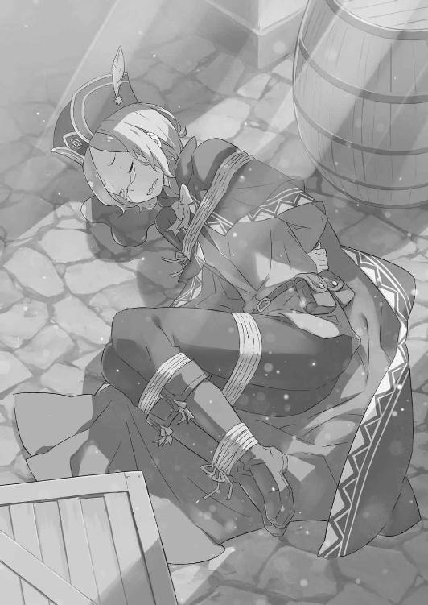
「初対面でどんな評価ですか！ 僕、あなたに何かしましたっけねえ!?」
縛られて赤くなった手足を回して、あんまりなスバルの発言にオットーが喚く。が、スバルは「それはそれとして」と彼の怒りを受け流した。
「で、どういう経緯で捕まってたんだ。事情があるなら話してみろよ」
「それは、その......非常に言葉にしにくい個人的な都合がありましてですね」
「言いたくないならいいよ。──ところで話変わるけど、今、この領地に集まる行商人ってメイザース辺境伯の屋敷に小金目当てで集まる奴が大半なんだよな」
「話変わってないんですけど!? もうわかって聞いてますよねえ!? ああ、そうですよ！ 儲け話にこれ幸いに飛びついて、みんなを出し抜こうと悪路突っ切って一番乗りしようとして、運悪く奴らにとっ捕まった間抜けが僕ですよ！ さあ、笑わば笑え！」
「そうか......無事で、良かったな。ちっ、泣けてきちまったぜ......」
「なんだその安っぽい涙！ 胡散臭いの通り越して釈然としないんですが!!」
空元気に告白したオットーを憐れみ、理不尽に嘆くその様子を生温かく見守る。
どうやらその商人根性と、やや無鉄砲な行動力は生来のものらしい。以前に遭遇したときと変わらないその印象に、スバルは一安心していた。
そんな意地の悪いスバルの態度に、オットーは露骨に落胆したため息をこぼす。
「まったく......僕は命の恩人に素直に感謝したかっただけなのに、なんて人だ......」
「なーに、命の恩人には違いねぇけど肩肘張るなって。貸し一個な！」
「ものすごい大きな借りを一個作った気がして、正直、気が気じゃありませんね！」
人差し指を立てたスバルの貸し宣言に、オットーは盛大に顔をしかめる。
その後、「借り、借りか......」とやけに難しく受け止めた顔のオットーに笑みを向け──同時に、スバルは彼の挙動に不審な点がないか慎重に目を配っていた。
「────」
同じような警戒は、二人の会話を傍らで眺めるリカードもしている。
敵の拠点から連れ出されただけに、オットーの立場は微妙も微妙だ。行商人のリーダー格であったケティが内通者だった事実を鑑みれば、以前の周回でケティと親しくしていたオットーにも厳しい目を向けざるを得ない。
迂闊に信用して裏切られれば、ここまでの努力が全て水泡に帰すのだから──。
「......俺も嫌な奴になってきちまったなぁ」
「なんです？」
「お前が無事でよかったな、って言ったんだよ。なぁ、ミミ、よかったよな！」
「んー？ おー、それな！ 半べそ搔いてたおにーさん、元気でチョーよかった！」
「半べそ搔いてたことは黙っててくれる約束のはずでは!?」
適当に話を振ったミミによって、オットー救出の裏事情が暴露される。その事実を口にしたミミは「そーだった？」と首を傾げ、オットーはその場に崩れ落ちる。
「あー、半べそは仕方ねぇよ。安心しろ、誰にも言わない。俺と、お前と、ミミと、リカードと、あと『鉄の牙』と、討伐隊の人たちだけの秘密......」
「それってもはや公然の秘密では......？」
「とにかく、この村にいれば魔女教に襲われる心配はないから待機しとけ。あと、半べその件のご愁傷様ついでに、儲け話のこともご愁傷様だ」
「ご愁傷様って......まさか!?」
この世の終わりのような顔で、オットーは愕然と村の中を見回した。
「ひょっとして、すでに皆さんは......」
「魔女教に捕まって生き残っただけ、お前は天運に恵まれて......いや、魔女教に捕まってる時点で天運には見放されてるな。なんだ、強く生きろよ」
「慰めるなら最後まで面倒見てくれませんかねえ!?」
崩れ落ちたまま涙目になるオットーの肩を叩き、スバルはリカードに目配せする。
と、犬人はその鼻面に皺を寄せ、鷹揚に顎を引いた。どうやら歴戦の傭兵の目にも、オットーは哀れなだけの安全牌と判断されたらしい。不幸中の幸い、そう思おう。
「で、今ここは対魔女教の最前線だ。やることは多い......んだけど、お前にやらせることって思いつかねぇな。他の行商人が置いてった積み荷の目録でも整理する？」
「お給金はいただけるんですか!?」
「思ったより食いつきがよくて驚いた。出すよ、出す。誰か、オットーに付いてくれ」
疑いの晴れたオットーに仕事を与えて、ひとまず彼のことは後回しだ。代わりにスバルは編制を終えて整列する討伐隊と、彼らを仕切るユリウスの下へ向かう。
「知人との再会だったのだろう？ 旧交を温めるのはもう十分なのかい？」
声をかける前に、スバルの接近に気付いたユリウスが振り返った。彼の言葉にスバルは顔をしかめ、積み荷に立ち向かうオットーへ肩越しの視線を向ける。
「馬鹿笑いして馬鹿話して、その裏じゃ何か企んでないかじろじろ疑ってたんだぜ。我ながら性格悪すぎて嫌になってくるよ」
「その性格の悪さのおかげで、我々に被害無しの現状がある。君の性格の悪さは誇りに思っていいとも。──人には言わない方がいいと思うが」
「お前の性格の悪さもなかなかのもんだぜ。俺が保証する」
「はいはい、そこの性格悪いお二人さん。お話してもいーい？」
スバルとユリウスのやり取りに、小首を傾げるフェリスが意地悪く笑いかけてきた。
その一纏めにされた腹いせに、スバルは盛大に唇を曲げる。
「なんだ、性格悪い猫耳」
「まー、なんて言い草にゃんでしょ。フェリちゃん、みんなのために一生懸命尽くして尽くして尽くしてるのににゃー」
「君の尽力には常に救われているさ。それで、わかったことは？」
「んー。捕まえた魔女教徒だけど、『指先』のことはなんとなーくわかったよ」
ユリウスが促すと、フェリスは笑みを消して接収した小屋を指差した。その中には捕虜になった魔女教徒のケティがおり、フェリスに直々に体中を調べられていたはずだ。
前周回、フェリスは魔女教徒の自害を止めることができず、悔しい思いを重ねていた。そのため、ケティの肉体の検査にはスバルも不安があったのだが──。
「まず、教徒には自害用に猛毒になる魔石が仕込まれてるみたい。ただ、『指先』は特別扱いみたいで......毒の代わりに爆裂術式が仕込んであった。自殺と、巻き添え用だネ」
「情報漏れ対策っていうより、大罪司教の『憑依』のためっぽいな。体を取り換えるのが死ぬの前提なら、気絶とか拘束されたりの対策に自殺は必須だし」
「自害用......だが、おそらく外部から発動させる方法もあるだろう。その場合は？」
「それが怖いので、術式丸ごと剝がして無効化しました～」
ユリウスの懸念に、フェリスは簡単なことのように答える。が、瞠目したユリウスの反応を見るに、容易いことではないのだろう。その上でフェリスは続ける。
「それと、スバルきゅんが気にしてた『指先』の特徴。ゲートに澱みっていうか、おかしなマナの塊があったの。たぶん、それの有る無しが『指先』と普通の教徒との違い。それが植え付けられてる子にしか、大罪司教は乗り移れないんだと思う」
「それが一般会員とプレミアム会員の違い、『憑依』する条件ってわけか。そのマナの塊ってのはどうした？」
「溶かして搔き混ぜて排出させたよ。だから、もう『指先』とは呼べにゃいネ」
「無効化までやってくれたのか！ でかした！」
フェリスの報告に声を弾ませ、スバルは彼の細い手を取って上下に乱暴に振った。短時間でここまで調べ上げた手腕には舌を巻くしかない。
「にゃにゃ！ まー、フェリちゃんだし当然みたいにゃ？ でも、これも自害のこととか『指先』だけの特徴とか、事前にスバルきゅんが見抜いてたおかげもあるよ」
「いや、それも全部、お前の手柄だよ。失敗したら、お前はすげぇ悔しそうだった」
「なにそれ。フェリちゃんがこんな人たちのことで、悔しがるわけないでしょーが」
舌を出して、フェリスはスバルの腕を振りほどく。その悪態をついた彼の態度に苦笑しながら、スバルは人知れず、フェリスが前周回のリベンジを果たしたことを祝した。
それにフェリスの奮闘のおかげで、仮説はほぼほぼ立証されてくれたのだ。
「それに『憑依』の条件を無効化したってことは、当の捕虜も死んでないんだろ？」
「上の口は嫌がってても、体中のゲートは正直......ちゃーんと王都に連れ帰って、貴重な情報源として扱うよ。今は術式引っぺがした痛みで気絶中～」
片目を閉じ、フェリスはケティの命の安全だけは保証する。もっとも、その術式を剝がされた痛みは想像もできないが。そして──、
「──一人、まともに捕虜は取った。これ以上の危険は冒せない。意味、わかる？」
「大事な人たちとあいつらと、今さら俺が天秤に乗せて迷うと思うのかよ」
覚悟を問い質すフェリスの瞳に、スバルは一瞬の躊躇も見せずに頷いた。
大罪司教『怠惰』を下すためには、『指先』を含んだ魔女教徒を全滅させなければならない。それは文字通り、完全なる殲滅戦を意味する。
そしてそれは他でもない、ナツキ・スバルの号令を切っ掛けに始まる戦いなのだ。
「......ふーん。ホントに、スバルきゅんってマシになったんだネ」
拳を固めるスバルの横顔に、その目を細めたフェリスが小さく呟く。その内容に苦笑して、スバルは「おいおい」と肩をすくめた。
「マシって言い方があれだな。あんまり褒められてる気がしねぇな」
「褒めてにゃいもーん。悪かったのが普通になっただけ。自惚れにゃいでよ」
可愛い顔で、フェリスはどこまでもスバルに辛辣だ。
おそらく彼こそが、王都で出会った人々の中でも最もスバルを厳しく評価している人物だろう。それはきっと、自ら戦うための力に欠けた同士、同族嫌悪に近い。
厳しく、しかし同時に正しく、フェリスはスバルの弱さを評価し、嫌っている。
「嫌ってた、ネ。今はフツー。わかった？」
「フツーね、了解。でも、わりと嬉しい」
「──人に、主義を曲げさせてまでやりたくないことさせるんだからネ。そのスバルきゅんが迷って、躊躇うなんて絶対にダメ。だから、その覚悟は揺らがないで」
スバルの軽口に応じず、フェリスは硬い声でそう告げた。それは微かに緩んだスバルの胸に突き刺さり、覚悟という海原に自覚という錨を下ろす。
そう、フェリスに言われるまでもない。自覚して、前を向かなければならない。
「準備は十全に整った。──スバル、いつでもいける」
そのスバルに切っ掛けを作るために、討伐隊を整列させたユリウスが声をかける。彼だけではない。整列する討伐隊が、『鉄の牙』が、一斉にスバルの声を待っていた。
決戦を前に士気が高まり、村の広場を中心に戦場の気配が膨れ上がり始める。
「────」
その戦意に触れながら、スバルは微かに首を傾け、空を見上げた。
不安要素を潰し切ることはできない。それでも、エミリアたちを逃がし、ヴィルヘルムに任せ、フェリスのおかげで『指先』の正体を摑み、ユリウスが号令を待っている。
やるべき人事を最大限に尽くし、後は天命がこちらに微笑むのを引き寄せるのみ。
「──やろう、みんな。手筈通りに始める」
空から視線を下ろし、正面に立ち並ぶ討伐隊の面々に向かって言い放った。
それを受け、戦士たちは言葉もなく騎獣に乗り込み、行動でスバルの言葉に応える。
「────」
「ああ。ありがとな、パトラッシュ」
いつしかスバルの傍らにも、出番を待ち望んでいた漆黒の地竜が寄り添っていた。その硬い肌を掌で撫でて、スバルもパトラッシュの背に跨る。
隣、スバルを挟むようにユリウスとリカードの騎獣が並ぶ。一人、地上に残ったフェリスの真剣な眼差しに頷きかけ、スバルは彼らの先頭に立った。
そして、最後の開戦の号令をかける。
「さあ、今度こそ決着だ。──『怠惰』と、運命様に目に物見せてやろうぜ」
３
──ペテルギウスの『憑依』に対して、スバルはいくつかの推論を立てている。
第一に、ペテルギウスの『憑依』は他者の肉体に乗り移り、奪い取る力だ。
第二に、ペテルギウスの乗り移る対象は『指先』と呼ばれる奴の腹心であり、ペテルギウスを倒すにはその全ての『指先』を撃破しなくてはならない。
第三に、全ての『指先』を失った場合、ペテルギウスは『指先』に代わる別の肉体に乗り移ろうとする。その最有力候補はスバルの体だ。
精神に寄生するその力は強力で、独力で抗うことはほぼ不可能。──以上だ。
「改めて箇条書きにすると、初見殺しってレベルじゃねぇな。これで『見えざる手』まで持ってるってんだから、凶悪すぎて笑い話にもならねぇ」
大罪司教の二つの権能──何も知らずに挑めば、百回挑んで百回殺される自信がある。
こうして記憶を持ったまま繰り返し、打開策を探り続けてようやく光明が見えてくる難敵だ。魔女教が四百年、世界中で幅を利かせてきたのも頷ける。
それほどまでに初見殺しに特化した狂人、ペテルギウス・ロマネコンティ──。
「──だからこそ、俺がいる」
初見殺しに特化した敵に対し、唯一、初見ではない経験を持って挑める。
『死に戻り』するナツキ・スバルこそが、ペテルギウス・ロマネコンティの天敵なのだ。
鬱蒼と木々の生い茂る森を抜け、スバルは幾度も足を運んだ岩壁を目指す。
周囲は四方を緑に覆われ、方向感覚さえ怪しい世界だ。しかし、スバルの足取りに迷いはない。感覚が、足が、記憶に刻まれた経験が、スバルを導いてくれる。
「──始めるぜ」
逸る心臓の鼓動に苦笑しながら、スバルはそう呟いて自分の胸を軽く、二度叩いた。それから前を向く。その場所が、見えてくる。
──これまで一度も、スバルはその場所に戦う覚悟を抱いて向かったことがない。
前周回は時間稼ぎの囮役として。それ以前は殺意と自殺願望に溺れながら。
だが、今回は違う。今回だけは、これまでと違うのだ。
スバルはここに、自ら戦う決意を固めてやってきた。
長い長い因縁に、繰り返し続けてきた戦いに、自ら決着をつけるために。
「──よくおいでになりました。寵愛の信徒よ」
ふいに森が開け、スバルは喜びに震える歓待の言葉に出迎えられる。
正面、森を抜けた視界には高々と切り立った断崖が広がり、その岩壁の手前では瘦身の男が両手を広げて立っている。その双眸は爛々と輝き、スバルを歓迎していた。
こうして相見えるのも、もう四度目になるだろうか。
何度も顔を合わせれば、どんな相手でも多少は心を許すようになる。あのユリウスにすらそうなのだ。──だが、やはりこの男にだけはそれは無理そうだった。
「ワタシは魔女教大罪司教、『怠惰』担当──」
自傷して血塗れの手をこちらへ差し伸べ、狂人はお約束の口上の口火を切る。瞳を狂気に濡らした男はのけ反り、舌を出し、カッと目を見開いて──、
「──ペテルギウス・ロマネコンティ、デス!!」
黒の法衣をはためかせ、高らかに名乗る狂人が血染めの両手を打ち鳴らした。ペテルギウスはそのまま地面を踏み、その場で小躍りしながら楽しげに嗤う。
「良き日デス、素晴らしき日デス！ まさか試練のその日に、こうして新たな愛の寵児を迎えられようとは！ 感涙、感動、感激でワタシの胸は張り裂ける寸前デス!!」
唾を飛ばし、狂人は己の骨と皮だけの体を抱きしめる。その奇態にスバルは嫌悪感を抱くが、奴の前で表情を取り繕うのはもはや慣れたものだ。
その上で、スバルは事前に決めていた通りの作戦を決行する。それは──、
「──お初にお目にかかります、大罪司教様！」
そう言って、ペテルギウスに駆け寄ったスバルは狂人の足下に跪く。それから胸に左手を当て、右手を掲げながら頭を下げる最敬礼を取ると、
「此度の試練、直前での合流になり誠にお恥ずかしい次第！ ですが、この身、この魂！ 何卒、教徒の末席に、司教様の『指先』に加えていただきたく馳せ参じました！」
いっそ大げさすぎる勢いで、スバルは堂々とそう嘯いた。用意した台詞を声高に言い切り、上っ面だけでも最大限の敬意を込めて、狂人の反応を静かに待つ。
「────」
スバルの嘆願に、ペテルギウスの反応はない。無言、そして動かない。沈黙の不穏さにスバルは唾を吞み込み、狂人の次なる動きに警戒と注意を高めていく。
そのまま沈黙は十秒ほど続き、それが唐突に解けると──、
「──おぉ、おぉぉ！ なんと、なんと初々しく情熱的な信仰なのデスか！」
声を、全身を震わせて、感激に涙するペテルギウスが両手を空へ伸ばし、天を仰ぐ。
「なんと澄んだ目で愛を叫ぶ信徒なのデスか！ これほど我が身の怠惰を呪ったことは記憶にないのデス！ アナタの！ アナタほど敬虔な愛の寵児を！ これまで見逃してきた我が身の不徳を！ どうか、我が怠惰を許してほしいのデス──！」
跪くスバルの正面で、ペテルギウスは飛び込むように地面に四肢を投げ出した。
岩肌に躊躇いなく五体投地し、狂人は地面に何度も額を打ち付ける。容赦のない自罰で額から流血するが、常軌を逸した自傷は奴にとって日常茶飯事だ。
その体が他人のものと知った今、その行為への嫌悪をこれまで以上に強く覚える。
ともあれ、その自罰が行き過ぎて死なれても今は困る。作戦は水面下で進行中──ここでうっかり体が交換されては、何もかも水の泡になりかねない。
「おやめください、司教様！ そのような行い、魔女様もお喜びになりません！」
「嗚呼、しかし！ しかししかしかしかしかしぃぃぃ！ ワタシは自らの怠惰を！ 大罪を！ 愛に報いれぬ不実を！ 他に贖う術を持たないのデス！」
「そんなことはありません！ 魔女様ならば愛すべき信徒が傷付く姿より、寵愛に報いようとする懸命な在り方に、試練を遂行する意思に、お喜びになるはず！」
地面に頭突きし続けるペテルギウスを、スバルは口から出任せで引き止める。
だが、その言葉にペテルギウスはふいに動きを止め、大きく目を見開いてスバルを見つめた。その渇いた双眸に、スバルは特に意味もなく力強く頷く。
すると、ペテルギウスは憑き物の落ちたような顔で一筋の涙を流して、
「──全て、アナタのおっしゃる通りデス」
「──っ!?」
異常に穏やかに言われた直後、スバルはペテルギウスに強く抱きしめられていた。
壮絶な生理的嫌悪感に喉が詰まったが、狂人はその反応を意に介さない。ペテルギウスは涙を流し、額の血を拭うこともなく凄絶に嗤った。
「嗚呼、ワタシは間違っていた、誤っていたのデス！ そう！ 試練！ 今のワタシに求められるのは自罰でも自裁でも自決でもなく、試練！ それを忘れて自傷の悦に浸るなどなんたる怠惰！ アナタの言葉で目が覚めたのデス！ 感謝！ 感謝ァ！」
抱きしめたスバルを振り回し、一方的な感謝を告げてペテルギウスは上を向く。
額の傷を袖で拭い、自傷など愚かしいと口にしたその口に、自分の右手の指を突っ込んで次々に嚙み潰す。親指、人差し指、中指と順番に。
「怠惰なワタシに価値はないのデス！ 勤勉であることがこの世で最も尊きことであり、怠惰であることはこの世で最も唾棄すべき悪徳！ なればワタシは勤勉さで、己の宿業である怠惰に決別するのデス！ あぁ、アァ、嗚呼、愛に報いるのデス！」
もはや言動に一貫性がなく、論理は支離滅裂どころか壊滅状態だ。
自傷を反省しながら指を潰し、自分の軽挙妄動を恥じた直後に嗤い出す。
その狂気的な人間性に、スバルは早くも耐え難いものを感じて懐に手を入れる。が、望んだ反応はまだ掌にない。作戦の進行には、まだ時間が必要だ。
「司教様。──試練の、話をしていただけませんか？」
深呼吸で内心を隠し、嫌な沈黙が落ちるのを恐れてスバルはそう切り出した。
議題にしたのは試練──前回、ペテルギウスから聞き出すことに失敗し、その詳しい内容はいまだにわかっていない。試練と呼ぶからには、何かを試そうとしている。魔女教はその教義に従い、エミリアの何かを試そうとしているのだ。
それが何なのか探りたい。エミリアと魔女教との因縁が、この先も続くなら──、
「司教様との合流にあたり、是非、此度の試練のことをお聞かせ願いたいのです」
「試練......」
ぽつり、そうこぼしたペテルギウスの表情からふいに感情が抜け落ちる。
先ほどまでの狂騒はどこに消えたのか、虚ろな目つきでスバルを見る狂人は、すでに血塗れの右手、その残る薬指と小指を同時に口に入れ、嚙み潰す。そして──、
「試練、そう！ 試練デス！ 試練なのデス！ 試練を執り行い、試さなければ！ 此度の半魔が器に足るか、魔女を降ろすに足るか、試されなければならないのデス！」
裏返った奇声と生臭い息をスバルに浴びせ、ペテルギウスはその場で踊り出す。その狂人の発言に、スバルは驚愕と嫌悪を吞み込んで顔をしかめた。
「魔女を降ろす、器......？」
「合えば擁し！ 合わねば排し！ 半魔として生を受けし、その器！ 魔女に相応しからんや否や、魔女の愛を封ずるに能うか否か！ 試練を以て、試すの、デス！」
疑問を孕んだスバルの声に、狂人は頭上に腕を伸ばしながら狂声で応じる。その発言を聞いて、スバルは天啓のような理解を得た。そして、慄然とする。
器、魔女、降ろす──それらの言葉が、解釈通りの意味を持つなら。
「試練の結果、半魔が器に相応しいなら、その体に魔女を降ろす......」
「いずれ来る運命の日に、魔女はこの世に再誕せり──デス！ その瞬間に立ち会うために！ そのために『指先』と共に万全を期す......それが、ワタシの愛なのデス！」
感涙するペテルギウスは、自分の世界でこの上なく幸福な時を過ごしている。そんな狂人の姿を目前に、スバルは心底吐き気を催した。
今の話は、つまりこうだ。奴らはあれほどの残虐行為を行い、あれほどの虐殺をもたらし、あれほどスバルの心を砕くほど追い詰めて──、
「──エミリア自身には、何の価値も見てないのか」
奴らにとって、エミリアの存在は魔女の魂を箱詰めするための入れ物に過ぎない。
魔女の復活──その大目的の前に、魔女の魂を入れる容器にどんな志があって、どんな優しい心の持ち主で、どんな頑張り屋なのか。そんなこと、何の意味もないのだ。
それは、エミリアという一人の少女に対する際限のない侮辱であり、そんな彼女の存在に心を揺すられるナツキ・スバルにとっても耐え難い屈辱だった。
「──怪物め」
一瞬だけ、一言だけ漏れたスバルの本音にペテルギウスは気付かない。
その悪辣な目的を果たすためなら、過程で一つの村を焼き払うことも何とも思わない。手にかけた命一つ一つに物語があり、夢や明日があったことも蔑ろにできる。
だからこそ魔女教は、ペテルギウスは、ナツキ・スバルの敵なのだ。
「......司教様、ご高説拝聴いたしました。魔女教の理念、聞きしに勝るそのご覚悟、まさに感服の至りです。此度の試練、必ずや成し遂げましょう」
「おおぉぉ！ やはりアナタは素晴らしい！ そうデス！ 我々は一丸となり、一心不乱にこの身を投じて本懐に臨むのデス！ 寵愛を受けたその日から、ワタシという存在は全霊を以て愛に報いるだけの塵芥......嗚呼、サテラ！ アナタのモノなのデス！」
口先だけのスバルの賛同を、ペテルギウスは疑うどころか大喜びで受け入れる。
「アナタこそ、真に尊ばれるべき理想的な信徒なのデス！ その芳醇な寵愛の気配、アナタが『指先』に加わる意思さえあれば、今すぐにでも因子を分け与えたいのデスが」
「でしたら是非に、あなた様の『指先』の一本にお加えください！」
「その申し出、実に望外の喜び！ デスが、デスが......すでに我が指は十本、本数は揃っているのデス。アナタにはより相応しき在り方が......そうデス！」
血塗れの指を数えるペテルギウスが、そこで思い出したように法衣に手を入れる。その懐から抜き出されるのは一冊の黒い本──福音書だ。
狂人はその装丁に愛おしげに触れると、その内容に目を走らせて息を荒らげる。
「福音書に記されし言葉が、愛を物語る全てが、ワタシを未来へ導くのデス！ 故にこそここに全てが......ワタシの在るべき全てがあるのデス！」
ページをめくりながら、ペテルギウスは口の端に泡を浮かべて嗤う。
一度、その福音書を奪ったことのあるスバルには、その黒い本の中身が読み解くことのできない奇妙なものだと知っている。だが、所有者であるペテルギウスにはその文字が、物語が読めているのだ。そして、その記述に従って行動している。
だとしたら真の敵は、その福音書の記述を作り出すもの──、
「──福音の、提示を」
音を立てて、福音書を閉じたペテルギウスが、その一言を口にしていた。狂人は首を九十度傾け、腰を同じ方向に曲げ、スバルを無感情な双眸で見つめている。
それは、ペテルギウスの最も警戒すべき発言だ。これまでの経験上、かろうじて会話が成立していたとしても、この質問はその流れをぶった切りにかかってくる。
魔女教徒であれば、一人残らず所有しているはずの福音書。出所も入手法もわからない黒い本は、魔女教徒同士の身分証明書のようなものだ。
故にペテルギウスも、スバルに身の証を立てるように求めてくる。
ここでなんと答えるかが、この状況を大きく分ける結果になるが──、
「──どうしたのデスか？」
沈黙するスバルに対して、ペテルギウスは首を傾けたまま長い舌を垂らす。
ただ福音書を見せるだけでいい。それだけの証明がされず、ペテルギウスは不穏な気配を漂わせ始める。その底冷えする気配の中、スバルはゆっくりと懐に手を入れた。
そして取り出したモノを、ペテルギウスの眼前に突き付ける。しかし──、
「──それ、は？」
「見ての通り、『ミーティア』です、司教様」
凝然と目を見張るペテルギウス、その眼前に突き出されたのは手鏡──対話鏡だ。それも、狂人には見覚えのある道具に違いない。何故ならそれは、狂人が『指先』の一人に持たせたはずのもので、それがスバルの手にある事態に狂人は困惑する。
だが、驚きはそれで終わりではない。彼の眼前で、鏡面が淡く光り始め──、
『あー、映った映った。わ、聞いてた以上に怖い顔！』
鏡を通して聞こえたのは、いかにも状況にそぐわない可憐な声だ。スバルからはその鏡面は見えないが、ペテルギウスには声の主、猫耳の騎士が見えていることだろう。
悪ふざけか悪戯のような状況──しかし、それこそが作戦の合図だ。
「いったい、アナタは......いいえ！ アナタ方は何を!!」
『では、おほん。──トラトラトラ！』
「──っ!?」
無理解に怒るペテルギウスに、鏡の相手──フェリスが突然にそんな言葉を告げる。狂人にはその意味がわからない。故に、スバルが解説してやる。
「我、奇襲ニ成功セリ──」
手にした鏡を指差し、目を剝くペテルギウスに笑いかけた。
先ほどまでの作り笑顔ではなく、本来のスバルの──悪ガキのような笑顔で。
「は、ぁ？」
「何言われてるのかわかりませんって顔だな。ああ、安心してくれていいぜ」
動揺するペテルギウスに、スバルは満面の笑みのまま頭上に手を掲げる。
そして──、
「──お前の言ってることも、俺には同じぐらいさっぱりだったからよ！」
「なん──ッ!?」
スバルが戦意を言葉にして、掲げた指を高く鳴らした。その敵意に反応し、ペテルギウスはとっさに身構える。が、横合いから疾走して飛び込む影の動きの方が早い。
影は狂人の瘦身を、何の躊躇もなく力一杯に撥ね飛ばした。
「が、はぁ──」
悲鳴を上げて吹っ飛ぶ狂人が、もんどりうって岩場を激しく転がっていく。
「────」
それを見届け、待ちくたびれたと言いたげに嘶くのは、狂人を撥ねた漆黒の地竜だ。
不毛な対話は終わりだと、そう結論する竜の咆哮が森の空に木霊していった。
４
懐に仕舞い直した対話鏡から熱が伝わる。作戦は、第二段階へ移行した。
その事実に覚悟を改め、スバルは目を白黒させている狂人に向けて中指を立てる。
「さっきまでの話し合いだが、全部お断りってことでよろしく」
「な、な、な......」
「わからねぇならわかりやすく言ってやる。──慎重に検討を重ねましたところ、御社の社風とは致命的に合いません。ので、誠に勝手ではありますが、内定を辞退させていただきます。貴殿の今後のご活躍と発展をお祈り申し上げます、ってところだ」
懇切丁寧に、かえってわかりにくくスバルは話し合いの破談を表明。そのまま傍らに寄り添うパトラッシュに颯爽と跨り、手綱を握って狂人を見下ろした。
それを混乱と共に見上げていたペテルギウスは、やがて遅れて理解が追いつくと、スバルの暴挙に怒り心頭となり、叫ぶ。
「アナタは、自分が何をしているのかわかっているのデスか!? ワタシは大罪司教！ 魔女の恩寵に与る大罪司教なのデス！ アナタも同じ寵愛を......」
「悪いが、その手の話は聞き飽きた。魔女なんざクソ喰らえだよ、ペテルギウス」
「何故！ 何故なのデス！ 何故、愛を拒絶するのか！ アナタが魔女の寵愛を！ 恩寵を拒絶する理由が！ ワタシには全く皆目一切合切！ 理解できないの、デス!!」
頭を搔き毟り、ペテルギウスは激情に唾を飛ばして言葉を重ねる。その必死な呼びかけは、まさかスバルを説得しているつもりなのだろうか。
だとしたら、ペテルギウスと言葉を交わす価値は、本当に欠片も存在しない。
「お前を見てると、身につまされることもあるよ。でも、これだけは言える」
狂人の妄言を聞き流しながら、スバルは自分の心に起こった錯綜と暴走を思い出す。
自分が正しいのだと言い張り、周りが間違っているのだと押し付け、そうして子どものように癇癪を起こして喚き散らすばかりだった時間があった。
なるほど、見るに堪えない。反面教師、ここに極まれり、だ。
「狂ってるのはお前だ。今は俺が正しい。──ここで終われよ、ペテルギウス！」
決別、そう表現するのは誤った断絶だ。
スバルとペテルギウスの間には、最初から何も結ばれてなどいなかった。全てはまやかしの演技だったと、狂人も即座に理解する。直後の判断は苛烈で、残虐に──。
「暴挙、暴言！ その報い、四肢をもいで魔女に魂を捧げ、果たすとする──デス!!」
嘆く素振りも刹那のこと、ペテルギウスの影が爆発的に広がり、膨れ上がる漆黒が幾重にもほどけて腕となる。それは圧倒的密度と物量で、滝のようにスバルへ押し寄せた。
宣言通りにスバルの四肢をもぎ、首をねじ切り、魂を凌辱するために。だが──、
「何故──!?」
「鬼さんこちら、手の鳴る方へ──って、これ二月前にも魔獣相手にやったわ！」
スバルの拙い手綱捌きを受け、パトラッシュは指示以上を察して自ら動いてくれる。その賢竜の動きは迫る魔手を見事に回避し、被害範囲から飛ぶように逃れていた。
彼我の距離が開く。完璧に初撃を処理した事実に、ペテルギウスは驚愕を隠せない。彼は瞠目し、引き裂けんばかりに大口を開け、喚き立てる。
「今の！ 動きは!? アナタはワタシに！ 与えられし寵愛を!? ありえない、あってはならない！ 何故、我が権能が、見えているのデスか!?」
「さあ？ 俺の体に残り香つけてく魔女に聞いてくれよ。おっと、俺と違ってお前は自由に魔女と面会できる許可証はもらってないんだったか？」
「──！ それはどういう......魔女に、サテラに親しんでいるような不敬を！」
「ハートをギュッと摑まれた仲だよ、文字通り」
ウィンクに最大限の嘲弄を込めて、スバルはペテルギウスを挑発する。
瞬間、狂人の我慢は即座に臨界に達し、憤激に赤い顔をしたペテルギウスは己の指の付け根まで嚙み潰す。爪と骨と肉が潰れ、歯のへし折れる鈍い音が辺りに響いた。
その激情に呼応して、狂人を取り巻く影の密度が濃くなる。総数は増大し、不可視の魔手が見えるスバルにとっても難易度は跳ね上がった。
しかし、その魔手の数の増大に誰より驚くのは、他でもないペテルギウスだ。
「我が『指先』に預けたはずの因子が戻った......!? 何故、『指先』に何が!?」
「『指先』に分け与えた魔女因子が戻るたびに、使える自前の腕が増える。じゃあ、答えは明らかだろ？ ほら、計算して司教様！ アナタ、怠惰デスね！」
「──ッ！ ──ッ!!」
混乱と激情に翻弄されるペテルギウスに、スバルは挑発と煽りを繰り返す。
他人の神経を逆撫ですることにかけて、ナツキ・スバルの上を行くものはそうはいない。ましてや相手が、煽り耐性の全くない相手とあっては掌の上も同然だ。
目論見通り、顔色が赤黒くなるほど激昂したペテルギウスは、スバルに殺意の掌を差し向け、命を毟り取ろうと形振り構わず腕を叩きつける。
「パトラッシュ──！」
その爆撃のような『見えざる手』の攻勢を、地竜はスバルの意を酌んで恐ろしいほどの正確さで避け続ける。頼りになりすぎて、本当に頭が上がらない。
そのまま、攻撃の第一波を凌ぎ切ると、スバルは決断する。
「作戦第三段階、いくぜ！」
「何を、どれだけ小細工を弄そうと！ 我が勤勉さの前には全てが無為......ぁ!?」
反撃に身構えたペテルギウスが、直後のスバルの行動に喉を詰まらせる。
「背を、向けて......どれだけ、ワタシを愚弄すれば気が済むのデスか！」
「悪いな！ でも息が臭くてこれ以上は生理的に無理、なんか目に沁みる」
パトラッシュに命じ、スバルは岩場を離れて針路を森の中へ向けた。草木を乱暴に踏みしめ、風のように悪路を走破するパトラッシュが敵から遠ざかる。
「逃がす、などと！ 逃げられるなどと！ 思わないこと、デス！」
叫ぶペテルギウスは、言葉と裏腹にその場にしゃがみ込んだ。すると次の瞬間、体育座りするペテルギウスの体を影が摑み、狂人が宙に向かって放り投げられる。
まるで球技のボールのように、軽々と飛んだ体を別の魔手が受け取り、投げる、投げる、投げる──それを繰り返し、ペテルギウスは逃げるスバルたちに追い縋ってくる。
悪夢のような追跡、そしてスバルたちを追うのは奴だけではない。
「さあ、さあ、さあ、出るのデス！ 尊き魔女を愚弄し、嘲り、試練と寵愛を踏み躙る背徳者を、肉片になるまで切り刻み、魔女の身許へ捧げるのデス！」
空から降るペテルギウスの号令に、無音で森に現れるのは崖下の洞窟に潜んでいた魔女教徒たちだ。スバルとペテルギウスの会話に不参加だった彼らも、敵対が確定したスバルに躊躇う理由はない。滑るような足取りで、スバルと地竜を追撃する。
森の頭上にはペテルギウス、背後からは魔女教徒が猛然と追ってくる──。
「きたきたきたきてるきてるきてる！ パトラッシュ、頑張って！」
「──！」
具体性に欠けるスバルの指示に、パトラッシュは自己判断で窮地に対処した。
素早く切り返し、地竜は巨軀に不自由な細い木立ちの突破を選択。根を踏み、窪地を越え、枝葉をへし折りながら真っ直ぐ、目的地まで最短距離を突っ切る。
「無駄！ 無為！ 追いつくのデス！ 勤勉なる地竜、その足搔きさえも塗り潰し、我が身の勤勉さの前に搔き消えるがいい、デス！」
遠く、降り注ぐのは狂的な叫びと、瀑布のように流れ落ちる魔手の暴威だ。
疾走するパトラッシュを狙い、砲弾のような破壊力がいくつも森に着弾する。大木が根本から折れて吹き飛び、爆砕される地面が立て続けに土煙を巻き上げた。
だが、その爆風と土煙の中、地竜は狂人の憎悪を浴びながら猛然と駆け抜ける。
「────」
高く嘶くパトラッシュ、その体は無傷ではない。それでも、地竜は攻撃を搔い潜り、スバルと自身を守り通した。スバルの拙い指示を、全て拾い切ることで──。
「頼ってばっかですまねぇ......お前は最高だ、パトラッシュ！」
「しかししかしかしかしかしぃぃぃ！ そこまで、デス！」
愛竜の奮闘を称賛する声が、ペテルギウスのけたたましい笑い声に遮られる。眼下を指差す狂人、その言葉の根拠は『見えざる手』ではない。背後に迫る、黒い集団だ。
「────」
十字架を模した剣を手に、魔女教徒は人とは思えない速度で地竜に追いつく。それは単調なペテルギウスの攻撃より、はるかに危険な脅威だ。
そのまま魔女教の刃が地竜の鱗を斬り裂き、その命を刈り取る。──直前、
「わ──！」「は──!!」
重なる高い咆哮が、大気を揺るがす衝撃波となって世界を抉る。
咆哮波──特徴的な声が射線上にあった大木や岩塊を巻き込み、空気を鳴動させる衝撃が魔女教徒へ叩き込まれた。衝撃に血煙が舞い、集団が粉砕される。
それができるのはスバルの知る限り、この世でたったの三人しかいない。
「うおー！ おにーさんチョーヤバかった！ いま、カンゼンに死んでた！」
「合流地点とちょっとずれて危なかったです。お姉ちゃんの勘のおかげですです」
そんな馬鹿笑いと共にスバルに並んだのは、大犬に跨ったミミとティビーの獣人姉弟だ。二人の咆哮波に窮地から救われ、スバルは振り返って拳を掲げる。
「お前ら、今、俺ごとやるとこだったぞ！ でもありがとう、死んじゃうかと思った！」
「おー、ありがとー！ どいたしましてー！ いえーい！」
「混乱する気持ちはわかるです。......空の上にいるのが、大罪司教ですです？」
スバルとミミのやり取りを余所に、空を睨むティビーが緊張した声で問う。モノクルを付けた子猫の目は、風に法衣をはためかせる狂人を捉え、細められていた。
「なにあれ、すごー！ 丸まったオッサン飛んでる！ すごー！」
「あんな気持ち悪い飛び方、初めて見たです」
「ああ、そうか！ お前らにはそういう風に見えんのか！」
『見えざる手』の見えるスバルと、見えないミミたちとでは現実の見え方が違う。
二人にはペテルギウスが体育座りで単独飛行する姿に見えるのだろうが、スバルには触手のようにのたうつ魔手に自分を何度も投げさせる悪夢の光景──どっちも最悪だが。
「どっちにしろ、あいつの相手は俺がする！ 手筈通り、お前らは後ろを頼む！」
「わかりましたです。いくですよ、お姉ちゃん！」
「あいあーい！ あ！ おにーさんおにーさん！」
後続の魔女教徒を二人に任せ、スバルはペテルギウスからの逃走劇を続けようとする。その別れる直前、方向転換するミミがスバルに手を上げ──、
「ここで勝ったら、カッコいいぞぉー！」
「──おお！ 任せとけ！」
ミミの言葉に親指を立てて、スバルと子猫たちは健闘を誓って互いに飛び出す。
咆哮波を喰らい、分断された魔女教徒たちは迫る二人に武器を構える。そこへさらに四方から『鉄の牙』──ラジアンたちが飛びかかり、総力戦が始まった。
その剣戟を背後に、スバルは頭上のペテルギウスに指を突き付け、挑発する。
「こいよ、司教様！ 子猫に見惚れて俺を見失ったら、それこそ面目丸潰れだぜ！」
「──アナタは、アナタはいったい、いったい、どこまで何をどうしてッ！」
繰り出す攻撃のことごとくを防がれ、さすがのペテルギウスも頰を強張らせた。事ここに至って、憤激で盲目になっていた狂人も状況の不条理に気付いたのだ。
森の各所に潜ませた『指先』の各個撃破、絶対の自信を持っていた『見えざる手』を見通され、この瞬間、教徒たちは待ち伏せに分断されて、ペテルギウスは一人になる。
──明らかにこの状況は、何もかもスバルの掌で踊らされているではないか。
「そんなはずがない！ 福音書には！ 我が運命の導には何も記されていないのデス！ ならばアナタは何なのデスか！ 寵愛を受け、それなのに魔女を蔑ろにし！ 試練を執り行うワタシに立ち塞がり、目論見を挫いてなおも抗わんとする......！」
中空にあるペテルギウスは福音書を握り、それを掲げたまま叫んだ。
ペテルギウスからすれば、スバルの行動が生み出す現状は不可解極まりないだろう。
『指先』は奪われ、権能は通じず。まだ奴は知らないが、すでにエミリアたちも避難させられ、試練と称する凶行は始まる前に失敗している。
──これがペテルギウスにとって、悪夢でなければなんだというのか。
「アナタは......アナタは、いったいィ......！」
「四回、繰り返してきたよ。──悪夢なら、俺の方が死ぬほど見た」
口角に泡を浮かべ、理不尽に絶叫するペテルギウスにスバルは静かに応じる。
ペテルギウスの混乱も嘆きも、知ったことではない。
否定しても無駄だ。目の前にあるこの瞬間こそが、悪夢の果てに辿り着いた未来──。
「やはり、やはりやはりやはりはりはりはりぃ！ アナタは『傲慢』の──」
「──俺の名前はナツキ・スバル」
奥歯を軋らせ、憎悪と執着を叫ぶペテルギウスにスバルは名乗った。
「銀髪のハーフエルフ、エミリアの騎士だ」
「──ッ！」
「傲慢だかなんだか知らねぇが、俺の欲しがる看板はそれだけだ。あとはいらねぇよ！」
指を突き付けて啖呵を切り、ペテルギウスを黙らせる。直後、森が一気に開けた。
正面に現れたのは再びの岩壁──だが、それは先ほどまでペテルギウスと相対していた岩場とは別の場所だ。かといって、スバルにとって初めて訪れた場所でもない。
かつてスバルはここで一度、命を落としたことがある──。
「この場所は......!?」
「一度、俺が終わったことのある場所だ。そんでもって、お前にとっても終わりの場所になる。──そういう場所だ」
目的の戦場へ辿り着き、スバルはパトラッシュに命じて速度を落とす。
空を追いかけてきた狂人は、景色の変化とスバルの発言に、凶相を警戒に歪めた。
「────」
自らを摑み、中天へ運んでいた魔手をほどくと、ペテルギウスは地上へ降下する。着地し、ゆっくり顔を上げた狂人は断崖を前にスバルと正面から対峙した。
「ここまで誘い込むのがアナタの狙いであれば......何を、用意したのデスか？」
「決まってる。天敵だよ。──俺とお前の、共通の」
ペテルギウスの低い問いかけに、地竜から降りるスバルはそう言い切った。
その言葉に狂人が顔をしかめ、スバルは片目を閉じる。すると──、
「──天敵とは、またずいぶんと言ってくれるものだ」
割り込んだ第三者の声に、ペテルギウスは弾かれたように周囲に首を巡らせた。
すでにペテルギウス自身、誘い込まれたことには気付いている。奇襲を警戒し、大罪司教は口に指を入れ、強く嚙みしめて周りを見る。
だが、そんな奇襲への警戒など、何の意味もない。
「先の言葉、まさか二度聞く機会を得られるとは思わなかった」
言って、声の主は断崖の上から岩場の大地に真っ直ぐ飛び降りてくる。奇襲など考慮すらしない姿勢で、軽やかに着地する美丈夫は風に乱れた前髪を指で整えた。
「────」
優麗なその立ち姿に、ペテルギウスは声を押し殺して目を見張る。
しかし、美丈夫は狂人の険しい視線に何も言わず、ただスバルの隣に並び立った。その涼やかな横顔を睨み、スバルは忌々しげに頰を歪める。
「なんだ、俺の宣言に文句でもあるのかよ？」
「いや、以前の出来事が思い出されて恥ずかしくならないのか不安になったのだが......君の厚顔は筋金入りのようだ。よもや、私の前でまた言い切れるとは恐れ入る」
「なんなら夢に見るぐらい、お前の耳元で繰り返してやろうか、あぁ？」
「遠慮しよう。一度で十分、二度も聞かされれば焼き付いて忘れ難い発言だ」
細身の剣を抜き放ち、騎士はスバルの皮肉に切れ味鋭い皮肉で返礼する。
薄紫の髪を風に揺らし、近衛制服の裾をたなびかせる姿に、どれだけ苛立たしい思いをしたかは思い出せない。その忌まわしい姿が、今は悔しいぐらい頼もしい。
「ルグニカ王国近衛騎士団所属、ユリウス・ユークリウス」
名乗り、ユリウスは解き放たれた騎士剣を縦に構え、狂人に剣先を突き付ける。
次の瞬間、浮かび上がる六色の輝きがユリウスを取り巻き、その煌めきに目を剝くペテルギウスに己の力を見せつけた。
「──貴様を斬る、王国の剣だ」
「精霊術師、デスか。......どこまでも、本当に、どこまでも」
その口上を受け、ペテルギウスが歯軋りする。その怒りはユリウスの参戦よりも、彼に寄り添う準精霊に向けられていた。その上で狂人はスバルを睨みつける。
「これも、アナタの筋書き......！ これほどの屈辱、ワタシは初めてデス......ッ！」
「そうかよ、存分に堪能してくれ。──それが、お前のしてきたことのツケだ」
歯がひび割れるほど食い縛り、憎悪を滾らせるペテルギウスにスバルは応じる。それからスバルはパトラッシュの首を撫で、戦場からの離脱を命じた。
「ここまで助かった。あとは、俺たちで決める」
「────」
心配するように鼻先でスバルの首を撫で、パトラッシュはゆっくり岩場から森へ移動する。その姿を見届けると、スバルは深く息をついて──、
「──やるぜ、ユリウス」
「いいのだね？」
スバルの呼びかけに、ユリウスが覚悟を問い質す。
その問いかけに顎を引いた。瞳に曲がらない決意を宿し、スバルは口を開く。
「退けねぇ、曲げねぇ、負けられねぇ。もう誰も、失いたくねぇ」
「──私は君をひどく打ちのめした男だ。あの行いに私なりの理由と意義があったと今も誓って言えるが、それは君にとって関係のない独善的なものに過ぎない」
スバルの決意に、ユリウスが語ったのは二人の間にあった忘れられない因縁だ。
唐突に、場違いに、苦い記憶を呼び起こすユリウスの言葉。
あのときの屈辱が、苦痛が、胸の内を鋭く抉るように鮮烈に蘇った。
「過去を掘り起こし、恥を雪ぐことを求めているわけではない。君の覚悟は重く、そして決断と行動はここまでの道を形作ってきた。故に問いたい。この局面で、私の存在を隣に置き、君は何の憂いもなく本懐を遂げられるのだろうか」
「────」
「君は私を、信じられるのだろうか」
ユリウスの問いかけはひどく曖昧で、場違いで、どこか青臭いそれでしかない。
だがそれは、今もスバルの一番深いところで延々と存在を主張し続ける棘を意識させ、向き合わせるために必要な儀式だった。
王選の場で、スバルはこれ以上ない醜態を晒し、それを挽回するどころか汚名を塗り重ねる形で練兵場に赴き、ユリウスによって完膚なきまでに打ち砕かれた。
立ち上がることができたのは、スバルを支え続けてくれた少女の献身のおかげだ。
そして立ち上がった今、前を向けるのは支えたいと願える少女がいるからだ。
二つの光に導かれ、運命に抗い、今、かつての想いを胸に描けば、どうだろうか。
あのときの、あの瞬間の、あの燃え上がるような激情は、スバルの中で何色の輝きを灯して、どのような熱を持っているのか──。
「──俺は、お前が大嫌いだ」
「ああ、知っているとも」
「なんか典雅な感じの雰囲気がイラつくし、喋り方も馬鹿に胡散臭ぇ。おまけに明らか俺を見下してやがるし、そういや初めて見かけたとき、お前エミリアたんの手にキスしやがっただろ。俺が今後、エミリアたんの全身に余すところなくキスしようとしたら、お前と間接キスになるじゃねぇか、ふざけんな」
思い返せば、最初に言葉を交わす前からスバルはユリウスが嫌いだったのだ。
エミリアに邪険にされた経緯もあって、ユリウスへの対抗心は最初からあった。王選の場でそれは大きくなり、練兵場で爆発し、火種はその後も燻り続けていた。
今この瞬間も、それはひどく熱く、スバルの胸を焦がしてやまない。
「手足折られて、頭割られて、永久歯までこそがれた。治ったからいいものを、普通に考えりゃトラウマ確実だぞ。手加減知らねぇのか、てめぇ」
「言っておくが、あれでもだいぶ手を抜いていたよ」
「マジか、手加減してあれか。やっぱお前、最高に嫌な奴だ」
自称騎士を名乗り、無力さと無知さと無謀さを重ねて恥を晒したスバル。
スバルを打ちのめし、力と能力と役割を果たし、騎士の在り方を示したユリウス。
やられ役になった自分が不憫でならないが、それを抜きにしてしまえば、その男の姿はまさしく、スバルが求めてやまない『騎士』そのままで──。
「──俺はお前が大嫌いだよ、『最優』の騎士」
「────」
「だから、お前を信じる。お前がすげぇ騎士だってことを、俺の恥が知ってるからだ」
この場で誰より、あの場の誰より、スバルがユリウスの剣を知っている。
だから、スバルは彼に運命を託す。
あのときの剣の、その重さを知っているから。
「頼むぜ、ユリウス。──俺の全部を、お前に預けっからよ」
「────」
互いに手の届く距離で向かい合い、スバルはユリウスにそう言った。
その言葉にユリウスは瞑目し、そしてほんの数秒後、ゆっくりと目を開く。その黄色の双眸にスバルを映して、ユリウスは力強く頷いた。
「──ならば私は全霊で、その恥に応えよう」
掲げた剣を天に向け、ユリウスの決断を、準精霊たちが祝福する。
剣の周りを回るように、色鮮やかな準精霊たちは空を踊る。中でも一際強い光を放つのは白と黒の二色の準精霊──輝きは増し、強まり、やがて視界を焼くほどに高まる。
そうして、断崖を背にした戦場を光が晴れたとき、狂人は動く。
「......もう、茶番はよろしいデスか？」
スバルとユリウスのやり取りを傍観し、沈黙を守り続けたペテルギウスは首を傾げた。瞳を血走らせた狂人は血濡れの指を二人に向け、漆黒の魔手を無数に生み出す。
「精霊術師一人加わったところで、何ができるというのデスか。精霊如きが、ワタシの、ワタシの道の、ワタシの愛の、ワタシの勤勉さを阻もうなどとおこがましいにも程があるのデス！ アナタ方を下し！ 残る者共も八つ裂きにし！ 改めて試練を再開するだけのこと！ 我が勤勉さに、怠惰な諦めも終焉も、ないのデスから!!」
「────」
「あぁ、アァ、嗚呼、怠惰、怠惰怠惰怠惰怠惰怠惰怠惰怠惰怠惰ァ──ッ!!」
喉が塞がりかねないほど舌を伸ばし、骨に届くほど自傷の傷口を抉り、ペテルギウスは死の宣告を叫んで、『見えざる手』を一挙に二人へ叩きつけた。
押し寄せる魔手の総数は百を超え、まるで津波のように世界を覆い尽くしていく。それはスバルたちを流木のように吞み込み、押し潰し、引き千切ろうと──、
「──アル・クラリスタ」
──虹色の輝きが閃き、迫りくる『見えざる手』が一瞬で斬り払われていた。
極光が乱舞し、光の乱反射を生みながら刃は軌跡を輝きで描く。その煌めきを浴びる黒い妄念は根こそぎ霧散し、起きるはずの暴虐は永遠に訪れない。
「......は？」
「なに、驚くことはない」
ペテルギウスの呆然とした声に、虹に染まる剣を振るったユリウスが優美に答える。
「こちらに触れられるということは、こちらからも触れられるということだ。互いに干渉することが可能なら、六属性を束ねた虹の極光に斬れないものはない」
ユリウスと契約する六種類の準精霊、その全てが宿る騎士剣は虹の輝きを放っている。刀身に煌めく極光は、その美しさと裏腹に恐るべき威力を秘めた魔剣だ。
しかし、ペテルギウスの関心はそこにはない。狂人は嫌々と首を振り、混迷する感情に血涙を流しながら、ユリウスを指差して、言った。
「アナタは、アナタには、見えないはずデス。見えていないはずデス。『見えざる手』が斬られた......その事実より！ 問題なのはそちらなのデス！ 見え、見える、見えるはずが、見えてたまるものか......ワタシ以外に、ふた、二人もォ！」
スバルに続き、ユリウスにも『見えざる手』が封殺された事実に、ペテルギウスは怒りよりも混乱よりも、強い恐怖に襲われた顔で歯の根を震わせる。
それは寄る辺を奪われ、信念を支える芯を失うことへの恐怖だ。
そのペテルギウスの姿に、初めてスバルは人間的な共感を抱き──それを上回る「ざまぁみろ」の達成感を覚える。本気で、ようやく、出し抜いてやった。
「魔女の寵愛も知らぬ俗物が、ワタシだけの恩寵を見られるはずがない......ッ!!」
血を吐くように絶叫し、ペテルギウスは目の前の現実を否定する。故に、スバルはその現実を改めて突き付けるために、何が起きたのか教えてやった。
「──見てるのは俺だ、ペテルギウス」
「──ッ。はぁ!?」
「お前の『見えざる手』を見てるのは俺だ。ユリウスは、俺の見てる光景を見ているだけだよ。思った以上に、気持ち悪い感覚だけどな」
──意識共有魔法『ネクト』の真髄。
本来、ネクトは範囲内の人間同士の意識を繫ぎ、簡単な念話などを可能とする魔法だ。
ただし、高等魔法だけに扱いは慎重を要する。ユリウスは以前、『共感性を高めすぎれば自己と他者との境がわからなくなり、存在が混ざる』と危険性を説明していた。
意識の混在、それは言い換えれば感覚の同調であり、極限まで効果を高めれば──、
「意識的に感覚の一部を共有し、維持することもできるはず。──君から最初、この案を持ちかけられたときは正気を疑ったものだが」
「ちゃんとできただろ？ 男は度胸、何でもやってみるもんさ」
ネクトの力で、スバルとユリウスの五感は深い部分で完全に同調している。
今のユリウスにはスバルの視覚──ペテルギウスの『見えざる手』が無数に揺らめき、森を黒く染め上げる様相を呈しているのがわかるはずだ。
そして同じようにスバルの方にも、ユリウスの全身に漲るマナの奔流と、準精霊たちから伝わる温かな波動が流れ込んできている。
それは本来、五感から伝わる感覚が倍増し、十感となったような凄まじい違和感だ。
「こう言っちゃなんだが、長く続けてたいとは思わねぇな、この状況」
「まったく同感だ。頼まれても二度と遠慮したいものだよ」
唇を曲げたスバルの言葉に、ユリウスは皮肉げに笑って身構えた。
極光を纏う騎士剣を正面──切り札である『見えざる手』すら攻略された、哀れで惨めな、しかし同情の余地など微塵もない狂人に向ける。
「おのれ......おのれ、おのれ、おのれおのれおのれおのれおのれおのれおのれおのれのれのれのれのれのれのれれれれれれれれれれれぇ!!」
喚き散らし、ペテルギウスは無作為に殺意の影を爆発させる。
無数の魔手は四方八方に飛び散り、もはや狙いを付けることさえ忘れて森を、大地を、岩壁を破壊し、引き剝がし、吹き飛ばした。
衝動のままに振る舞う醜態、それは目を背けたくなるようなおぞましい姿だが、スバルは決して目を逸らすまいと拳を握り固めた。
この戦いからは絶対に、目を逸らすことはできない。
開戦から決着までの全てを、スバルはこの目に焼き付け、共有するのだから──。
「じゃ、お前と運命共同体ってのもゾッとしねぇ。──とっとと、終わらせようぜ」
「ああ、そうしよう」
降り注ぐ漆黒の魔手を斬り捨て、返す刃で真横に迫った掌を両断する。
焼失した腕が黒い粒子となって散り、風に吞まれるのを見届け、ユリウスは笑い、
「君の目で、私が斬ろう。──我が友、ナツキ・スバル」
第四章 『怠惰の終焉』
１
──押し寄せる圧倒的な黒の猛威を、虹の極光が真っ向から切り払っていく。
「──っ」
剣撃が閃き、翻る漆黒の魔手を次々に撃ち落とす。数十合、それが繰り返される。
虹色に輝くユリウスの剣は、六属性の魔法を束ねた必殺の魔剣だ。それはペテルギウスの『見えざる手』すら切り裂き、霧散する影は塵となって消滅していく。
原理はわからない。だが、虹に断たれた『見えざる手』の修復は困難なのか、剣撃に魔手が払われるたびに影の密度は薄れ、代わりにペテルギウスの激怒は色濃くなる。
「笑えないのデス、冗談ではないのデス、あってはならないことなのデス！ そのような手法で、小細工で、子供騙しで！ ワタシの愛を！ 忠誠を！ 蔑ろにィ......！」
「無粋な誘い方だ。社交の流儀も知らないと見える」
口角を泡立て、狂人は無尽蔵に膨れ上がる影の腕を叩きつけてくる。しかし、ユリウスはその魔手のことごとくを虹で迎撃、あるいは体捌きだけで避ける。騎士は岩場を舞台に優雅なステップを踏み、剣舞を演じながら戦場を支配していた。
それでも、限度を知らずに殺到する魔手は常に十を超える敵意を彼に叩き込む。剣の一振りではそれを防ぎ切れない。当然、手足に被弾し、いくつも裂傷が刻まれる。
「づっ──」
その戦場を望みながら、スバルは鋭い痛みに何度も肩を跳ねさせた。
黒い指先が掠め、太腿の削れる痛苦がスバルの脳を焼く。一瞬、上げかけた苦鳴を頰の肉を嚙んで堪え、肩の裂ける熱に強く拳を握った。
魔法による感覚共有で、スバルとユリウスの五感は今、完全にシンクロしている。
故にユリウスはスバルの視覚を通して『見えざる手』を目視できているし、逆にスバルもユリウスの握る魔剣の力強さを信じることができていた。
「────」
しかし、その恩恵を無視すれば、この急造の連携は究極的に不安定だ。
視覚の同調によって二人の視界はダブり、右目と左目で全く別の光景を見ているような感覚の混濁が常にある。それに触覚を含めた感覚器官の共有は、戦意に昂るユリウスの高揚感だけでなく、彼の味わう痛みさえも鋭敏にスバルに刻み込むのだ。
風が肌を撫でる感覚、靴裏が土を踏みしめる感触、口内に入り混じる血と唾液の味覚、脳に伝わる耳鳴りの聴覚、命懸けの極限状態に生まれる生死の嗅覚。
その全てを常時二人分浴び続けるのは、単純に負担が倍になった計算では合わない。
味覚、嗅覚、聴覚、痛覚、触覚、感覚。──今は全てが煩わしい。
むず痒い感覚があるのに、痒い場所に絶対に手が届かないジレンマだ。他人の後頭部が痒い感覚とでも言えばいいのか。
「とっとと終わりにしたいってのは、まぎれもない本音だぜ......」
体中から訴えられる違和感に、スバルは渇いた唇を湿らせて呟く。
おそらく、今の渇きさえユリウスに伝わる。迂闊に生理現象も催せやしない。
自分から言い出した策だが、この嫌悪感は堪え難い。自己と他者との境界を乱されるというのは、これほどまでに人間の根幹を無作為に搔き毟るものなのだ。
だが、弱音は吐けない。許されない。誰にではなく、他でもないスバルが許さない。
何故なら──、
「──少しずつ体が慣れてきた。スバル、速度を上げても？」
「ああ、ついていくから安心してろ！」
その返事より早く、ユリウスは無数の魔手に飛び込んでいく。地に顎を擦るかと思うほどの低姿勢で掌を搔い潜り、虹が一閃、まとめて影が薙ぎ払われた。
霧散し、散り散りになる影の隙間を縫い、狂人は魔手の追撃をユリウスへ向ける。だがそれも、飛びのく騎士の剣撃の前に美しく爆ぜるばかり──。
「────」
戦いを優勢に進めるユリウス、だがその動きはわずかに精彩を欠いている。
当然だ。騎士剣に纏わりつく影の残滓を振り払う美丈夫、その凛々しく甘い面貌の中、双眸は閉じられ、戦いが始まってから一度も開かれていないのだ。
──全ては二人の視覚を一つに限定し、スバルの目に勝機を委ねるために。
同調する視覚を二人が共有すれば、世界の形は曖昧に重なり続ける。ゆえにユリウスは自ら目を閉じ、視覚情報の全てをスバルに任せていた。
それは打ち合わせになかった判断。そして、これが正しいとスバルも理解した。
だが同時に、その行いが意味する真意にスバルは激昂する。
「馬鹿が、馬鹿が、ふざけやがって！ 本当に、お前は嫌な奴だ!!」
自分の視覚を放棄し、戦場での目をスバルに委ねるということは、スバルが戦いから目を逸らさないことを信じると、命懸けで証明したに他ならない。
付け加えれば、スバルの視界に全神経を投入するというのは単純な話ではない。スバルの視覚はあくまでスバルのものであり、ユリウスの肉体に付随していないのだ。
つまりユリウスは、『後ろから自分の戦いを見る』状況下で戦い続けている。それはいわゆる、テレビゲームにおけるＴＰＳ状態と言い換えることも可能だが──、
「ゲームと違って、一回捕まったらそれで終わりの難易度ルナティック！ それに命預けるとか、どうかしてやがるぞ。......俺もお前も！」
「無駄口を叩く暇は君にはないはずだが！」
目を見開くスバルのすぐ傍らへ、岩壁を蹴りつけたユリウスが跳躍で舞い戻る。彼は自分への本命と、スバルに迫る流れ弾の魔手に剣撃し、刺突で被害を退けた。
その間、迂闊に動けず、目も逸らせないスバルは鮮やかな手際に息を吞むしかない。
目を閉じたままのユリウスは、そんなスバルの様子に薄く微笑みを浮かべ、
「世話の焼けることだ。必死なのはわかるが、少しは自衛してはどうだろう。これではおちおち、敵と正面から向かい合うこともできない」
「その言葉、お前にそっくり返してやるよ！ 危なっかしくて俺も見てらんねぇってな！ この目に映った、必死こいてる騎士様の姿が見えてるか!?」
「両目を閉じた憂い顔の美丈夫が見える。顔立ちから育ちの良さが窺えるな」
「実は俺とお前とじゃ見えてる世界が違う疑惑！」
軽口を交わし、直後に押し寄せる魔手から二人は跳んで逃れる。スバルは無様に足を滑らせ、ユリウスは剣で割った影の波間を優雅に抜け、狂人へ再び前進した。
「──すげぇ」
尻餅をついた腰を上げ、スバルは戦うユリウスの姿に思わず感嘆した。
恐ろしいことに、ユリウスは不自然な肉体の感覚に早くも適応し、戦闘中に剣の精度を確実に高めている。それは決して、センスだけで為せる業ではない。
自分の肉体を極限まで酷使し、激しい鍛練で痛めつけ続けた経験──。
戦いの中で剣と命をぶつけ合い、己の技量と信念を研磨した成果──。
だから彼は怖じることも疑うこともなく、自分を信じて剣を振るうことができるのだ。
「────」
目を逸らさずに戦いを見つめ、拳を握り固めるスバルは猛烈に悔しかった。
あの場に並べない無力さと、日々を怠惰に過ごしてきたことの悔悟。
ナツキ・スバルが今のナツキ・スバルになる、そんな時間の積み重ねが悔しい。
恥ずかしくて、悔しくてたまらないから、スバルは目を逸らさない。
「──征く」
「ああ、征け」
囁きが聞こえたわけではない。だが、ユリウスの言葉にスバルは応じていた。
掌に掠められ、抉られる背が、腿が、弾けた肩の痛みが脳を殴りつけていく。
割れかけるほどに奥歯を嚙んで、スバルは目を逸らさない。
駆け抜け、跳躍し、滑り込み、切り返し、踏み込み、飛びのき、前進し、搔い潜り、踏み止まり、すり抜け、回り込み、横っ跳びし、身を捌き、振り返り、突っ込み、跳ね上がり、蹴りつけ、飛び回り、行動を洗練させていく。
「馬鹿な......」
斬り払い、斬り落とし、突き込み、斬り上げ、蹴り飛ばし、流し斬り、殴りつけ、薙ぎ払い、突き穿ち、割断し、閃かせ、振り下ろし、打ち落とし、斬り飛ばし、斬り刻み、斬り込み、剣撃と斬撃の積み重ねが『見えざる手』を塵へ還していく。
「馬鹿な、馬鹿な、馬鹿な馬鹿な馬鹿な......っ」
おどろおどろしい黒が空を覆い尽くす中、しかし極光を纏った剣舞を踊る騎士の姿は現実感を見失うほどに美しい。
それは、これが命の奪い合いであることを忘れさせるほど幻想的な情景だ。
そう感じるのはおそらく、ユリウスを通じて準精霊たちの想念がスバルにも伝わってくるからだろう。彼女たちはユリウスを愛し、そして対峙する狂人を憎悪している。
許し難いほどに、準精霊たちは狂人を──邪悪な同胞の存在を受け入れられない。
「こんなはずが、ない！ こんなことがあるわけがない！ 何故デス！ 何故なのデス！ ワタシの権能が......！ ワタシは愛されたはず、愛されているはず、愛されているのデス！ 愛しているのデス！ これだけ、これほどまでに、ワタシは──！」
「支離滅裂な言動には付き合い切れない。権能とやらも相応に減らした。それに何より、スバルの目を通して戦う方法にも十分に馴染んだ」
激情に喚くペテルギウスに、ユリウスは目を閉じたまま騎士剣を突き付けた。
「──そろそろ、本気で貴様を斬らせてもらおう。長きに亘り王国を......いいや、世界を脅かしてきた脅威の一端、『怠惰』をここで斬り伏せる！」
「できるものか！ させるものか！ ワタシを......ワタシは！ 四百年！ 魔女の寵愛を一身に浴びて、魔女の意思を体現するそのために勤勉に努めてきたのデス！ そのワタシがあろうことか、キサマのような木端精霊を連れた愚か者になど......！」
血で斑に染まる歯を剝き出し、ペテルギウスはユリウスの口上に激怒する。
だが、その狂人の激昂にこそ、スバルは『怠惰』攻略に必要な最後のピースの確信を得た。魔女への執着に匹敵する、異常なまでの精霊への嫌悪──それが、答えだ。
「ユリウス──！」
「わかっている！ ──大罪司教、覚悟!!」
踏み込み、ユリウスは矢のような速度で前進する。
ペテルギウスは口を開け、声にならない声で叫びながら『見えざる手』を展開した。空に、地に、森に、広がる魔手は全方位からユリウスを包むように突き刺さり──、
「──アル・クラウゼリア!!」
詠唱するユリウスを中心に、渦巻く虹の光が漆黒の魔手を全て搔き消した。
極光が世界を焼いたのは一瞬のことだ。しかし、効果はその一瞬だけで十分。瞬きに等しい刹那だけ、ペテルギウスの作り上げた包囲網が完全に消失していた。
ユリウスと狂人との間に、何の障害もない道が開かれる──。
「ばはぁっ！」
極光の余波を受け、影の炸裂に巻き込まれたペテルギウスが地面に転がる。潰れた指で岩を搔き毟り、狂人は血を吐くような形相で立ち上がった。
その眼前にユリウスが迫り、鋭い刺突が真っ直ぐに狂人の胸へと放たれる。
「そうは、させないの、デス！ ──ウル・ドーナぁ！」
両手を広げ、一撃を迎えるような姿勢を取ったペテルギウスが魔法を詠唱する。直後、大地が隆起し、岩片と黒土混じりの岩壁が狂人の四方を取り囲んだ。
障壁に剣が弾かれる。岩壁の向こうで狂笑を張り上げ、ペテルギウスは壁越しに『見えざる手』を飛ばし、死角からユリウスに致命打を叩き込んだ。
「────」
魔手に対処すれば、壁向こうのペテルギウスに逃げる隙を与える。しかし、ペテルギウスを追えば権能に殺される。いずれにせよ、ユリウスの剣は届かない。
──もしも、ここで戦っていたのがユリウス一人だけだったなら。
「燃えろ闘魂！ 唸れ魔球！ ──俺の本気は、百二十キロちょいだぜ！」
体をひねり、足を上げ、大きく前に踏み出しながら肩を回してフルスイング──速球というにはやや語弊のある速度で、スバルの手から赤い魔石が投げられる。
野球少年だったことはない。ただ、近所のバッティングセンターに通って、ストラックアウトに燃えた時代はあった。コントロールだけは二流の投手だ。
──極限状態の集中力も合わせれば、岩壁のど真ん中に魔石を当てることも容易い。
「なんデス......!?」
赤色の魔石に込められた破壊のエネルギーが、ユリウスを追い越して岩壁に激突──光と高熱を発して炸裂し、爆炎がペテルギウスの視覚を朱色で埋め尽くした。
「まさか、これすらも最初から......」
「貴様の敗因は、彼を無力と侮ったことだ！」
驚愕に凍り付くペテルギウスに、炎の向こうからユリウスの声が届く。
次の瞬間、炎を突き破って飛び出すユリウスが、棒立ちの狂人に剣先をぶち込んだ。
「──ぁ」
刺突に胸を穿たれたペテルギウスの総身を、虹の極光が内側から焼き焦がす。
背後の岩壁に叩きつけられ、串刺しになったペテルギウスは手足をばたつかせた。血泡を噴き、涙をこぼし、狂人は信じられないという顔で歯を剝く。
「馬鹿、な。馬鹿な、馬鹿な、馬鹿なァ......！ こんな、ワタシが、こんな......ッ」
「虹の極光は貴様を魂ごと斬り刻む。その肉体が誰のものであろうと、内に潜む邪悪を決して逃さない。──このまま、虹の彼方へ散るがいい！」
ユリウスの声に騎士剣の輝きが増し、その光を浴びるペテルギウスは『見えざる手』を出すこともできずに悶絶、瀕死の虫のように醜く足搔くだけだ。
しかし、もがくペテルギウスの瞳から狂気は薄れず、生を諦めてもいない。
「終われない！ 終われるはずがない！ 終わっていいはずがないのデス！ ワタシは勤勉に努めてきたのデス！ 怠惰な諦めに浸るなど、怠惰な終わりに甘んじるなど考えることも許されないのデス！ だから、ならば、なんとしても......！」
喚き、もがき、蠢き、傷口を自ら広げながら狂人は剣から逃れようとする。その飽くなき執念に瞠目し、ユリウスは剣をひねって心臓を破壊しようと力を込めた。
心臓が破壊されれば死は免れない。──その前に、ペテルギウスが決断する。
「我が『指先』を全て失い、このままでは滅びを免れ得ぬ......デスが。デスが、デスが！ まだ、ワタシには！ 残された器が、あるの......デス！」
あらゆる場面に先回りされ、ペテルギウスの『指先』はすでに壊滅している。
前もって同行させた予備の肉体は全て。──ならば、代わりを現場で見繕うだけだ。
「────」
狂気に染まる双眸がぎょろりと動き、視線がユリウスを通り越してスバルを捉える。
スバルの背筋を怖気が走る。同時、ペテルギウスの狂笑が深まり、高まり──、
「嗚呼──脳が、震える」
囁いた直後、ユリウスに串刺しにされたペテルギウスの体が、まるで糸の切れた人形のように崩れ落ちる。目は光を失い、垂れ下がる手足から生気が抜け落ちていた。
──来るべき時がきた。スバルは懐に手を入れ、ユリウスに叫ぶ。
「ユリウス！ 解除しろ！」
「承知した！」
スバルの声に応じ、ユリウスが取り決め通りに『ネクト』を解除する。結果、スバルは重なる五感の違和から瞬時に解放され──息つく暇もなく、次がくる。
それはユリウスの五感と入れ替わりに、図々しくスバルを上書きする異様な存在だ。
胸の奥に己をねじ込み、肉体の制御権を強奪するのは目に見えない寄生体──奴の甲高くひび割れた高笑いが、スバルの頭蓋の中で響き渡った。
そのままスバルは大きく背を反らし、目と口を限界まで開いて、喝采する。
「や、は、り！ この肉体は、ワタシを収める器として機能したの、デス！ 如何にワタシの道を塞ごうと！ これを防ぐ術などない！ アァ、嗚呼、怠惰デスね！」
脳の隣に居座ったのかと思うほど、ペテルギウスの存在を身近に感じる。
『憑依』最終段階──『指先』を全て失い、スバルの肉体を乗っ取りにかかったのだ。
スバルに、その暴挙に抗う術はない。意識が狂人に侵食され、体の自由が奪われる。
「さあ、アナタの友人の体デス！ 高潔を旨とする騎士に斬ることができますか!?」
乗っ取ったスバルを人質に、スバルの顔で舌なめずりする狂人。その言葉に、こちらへ駆け寄ろうとしていたユリウスが足を止めて、
「──確かに、私には彼を斬ることはできない」
「ならばァ！」
「故に、だ」
静かに言葉を紡ぎながら、ユリウスは狂人に自分の左手を見せる。騎士剣を握るのと反対の左手には、光を放つ対話鏡があった。それは憑依される瞬間、スバルが懐からユリウスに投げ渡していたものだ。
──その光る鏡面に映っているのは、開戦からこの戦いを見守り続けた猫耳の騎士。
「フェリス、君の出番だ！」
『こんなことやらせて、スバルきゅんの大馬鹿！ あとでギタギタにしてやるから！』
対話鏡にユリウスが呼びかけ、鏡面に浮かぶフェリスが声を尖らせる。その気配にスバル＝ペテルギウスは瞠目し、ただ嫌な怖気に従って攻撃を断行した。
しかし、『死に戻り』に先読みされた行動にはどう足搔いても追いつけない──。
「見えざる......っ!? が、あぁぁぁぁ──!?」
権能が放たれる瞬間、スバル＝ペテルギウスは喉が張り裂けるほどに絶叫する。原因は体内で爆発した、理解の及ばない膨大な熱と苦痛の奔流だ。
ぐらり、とスバルの体が力を失い、熱に浮かされる感覚を残して地面に倒れ込む。頭蓋骨に熱湯を注がれたように脳が沸騰し、白熱する意識が繰り返し明滅した。
そしてその苦しみを味わうのは、肉体を共有するペテルギウスも同じことだ。
「あ、が、はぁ......な、に、なに、が......？」
脳を煮沸消毒される斬新な苦しみに、ペテルギウスは混乱も露わに喘ぐ。それに答える気力を搔き集め、スバルは忌まわしい魂の同居人に舌を出した。
「乗っ取るはずの体が......まともじゃ、なけりゃ......何も、できねぇだろ？」
『まさ、か......まさかまさかまさかさかさかさかさかかかかか、ワタシが！ ワタシがアナタの体に乗り移ることも読んでこれを!?』
脳内ペテルギウスの驚愕に、スバルは「あたぼうよ」と堂々と嘯く。
一つの肉体に二つの意識だ。スバルの発言にスバルが絶句する奇妙な感覚、スバルは鏡越しに嫌な仕事をさせてしまったフェリスに内心で詫びた。
──スバルの肉体の自由を奪ったのは、対話鏡の向こうにいるフェリスの魔法だ。
治療のため、スバルのゲートに干渉したことのあるフェリスには、スバルの体内のマナを水魔法で暴走させることが可能だ。前周回の最後、ペテルギウスに憑依されたスバルに致命的なダメージを与えたのは、彼のこの力に他ならない。
治癒術師としての力に誇りを持つフェリスに、命を奪いかねない力を使わせた。それでも、頼み込むスバルに彼が折れてくれたから、最後の罠を張ることができた。
「これで、最後の頼みの体もダメ......そろそろ、諦める気になったか？」
『諦め？ 諦める？ 諦めるなど！ このまま、アナタの肉体を奪い、ワタシはワタシをワタシにワタシがワタシでワタシこそワタシだけがワタシなのにィっ!?』
狂乱、普段の狂気を越えて本当の意味でペテルギウスは狂い始める。
これだけ先手を打たれ、手番を潰され、なおも執念と妄念を抱き続けるペテルギウスに嘆息し、スバルはなおも体中の血が沸騰する苦しみを味わいながら覚悟を決める。
「このまま、俺が死ぬと......フェリスのトラウマになるんでな。......俺も死ぬの嫌だし、俺なりの方法で、お前と決着付けてやる......」
『アナタ、何を......まだ、ワタシに！ これ以上、ワタシから何を!?』
次の作戦を予感させるスバルの言葉に、ペテルギウスは戦慄し、声を震わせた。
今、脳の隣にペテルギウスがいるからわかる。必要以上に身近に居座る狂人から、その怯えと拒絶が痛いほどに伝わってくる。
同じことが奴にも言える。だから奴は、スバルの覚悟が本気だとわかったのだ。
「怖いのか？ あれだけ色々やってきたお前が、今さら」
『全ては愛に！ 寵愛に報いるそのために！ アナタにワタシが何をした!? アナタはただ、ワタシの前に立ち塞がり邪魔するばかり！ アナタこそなんなのデス!?』
スバルの正体がわからず、ペテルギウスはただ恐怖する。
狂人からすれば、スバルが自分に向ける憎悪の源泉が理解できない。スバルとペテルギウスの人生は一度も交わったことがない。少なくとも、彼にとってはそうなのだ。
『アナタの行いは、ただの筋違いの逆恨み......見当違いも甚だしいのデス!!』
「......もう、話すだけ無駄だよ。人間、腹を割って話し合ってもわかり合えない相手もいるんだ。ましてや、相手が人間じゃなけりゃぁなおさらな」
『────』
失意と諦念に染まるスバルの声に、ペテルギウスが驚愕する。
その狂人の露骨な反応は、スバルの発言に真実を射抜かれたが故の忘我だ。
『アナタ、に、ワタシの何が......わかると、言うのデスか!?』
「お前をこの岩場に誘い込んだ時点で、種は割れてるって想像つくだろ。──ここにいるのは正式な精霊術師と、手前味噌だがその資格持ちしかいねぇんだ」
スバルがユリウスとの対話の中で見出した、『憑依』に至る最後の条件──。
「精霊術師の素質がある人間に、強制的に契約を被せて体を乗っ取る。それがお前の『憑依』の正体だ。大罪司教......いや、精霊ペテルギウス・ロマネコンティ！」
『ワタシを──!!』
高らかに正体を暴く声に、スバルの内側に潜むペテルギウスは恐怖を忘れて怒鳴る。
──スバルがペテルギウスの正体に気付いたのは、前周回の出来事と『憑依』の条件を考察する最中のことだった。引っかかったのは、準精霊イアのことだ。
前回、スバルの体に宿っていたはずのイアが、ペテルギウスに『憑依』された瞬間にスバルから弾かれた。その不自然な事態から、推測を広げた。
同族嫌悪──精霊を忌み嫌うのは、精霊を使役する精霊術師を嫌うのはそのためだ。
ペテルギウスの『憑依』とは、邪精霊であるペテルギウスのイレギュラーな契約の結果なのだ。故に奴は、すでに精霊と正式に契約した精霊術師を敵視する。
仮契約は奪えても、正式な契約は奪えない。だから、精霊術師は奴にとって天敵なのだ。
スバルがユリウスを決戦の相方に選び、剣として力を借りたのはそのため──。
「図星突かれて逆ギレなんて、人間に憑りつく間に人っぽさがうつったのか？」
『黙れ！ ワタシを！ 精霊などと！ そんな下等な存在と一緒にするな！ ワタシは精霊を超克した存在なのデス！ 精霊を超克し、曖昧な自意識を脱却し、寵愛によって目的を獲得した選ばれし存在なのデス！ キサマにワタシの！ 何がわかるゥ!!』
限界を超えた憤怒と憎悪に、ペテルギウスは肉体の強奪も忘れて激発する。
その内容は皮肉にもスバルの推測を裏付け、否定すればするほど墓穴を掘るだけだ。
『愛がワタシを変えたのデス！ 愛がワタシに意思を、存在意義を与えたのデス！ それも全て何もかも魔女の恩寵！ 魔女の寵愛！ ならば！ ならばならばならばらばらばらばらば！ この身は、魂は、全て魔女のために捧げて然るべきなのデス！』
「ご高説、大結構だ、司教様。──なら、特別にお前に会わせてやるよ」
『何を！ 誰と！ 何の話を──！』
「──お待ちかねの魔女様に、だ」
スバルの発言に、ペテルギウスの激情が根こそぎ吹っ飛ぶ。
残ったのは愕然と、呆然と、初めて見せるペテルギウスの狂気の裏側であった。
漂白された狂気の思考、それを振り切り、スバルは自らその瞬間を引き寄せる。
「──俺は、『死に戻り』をして」
禁忌の言葉を口にした瞬間、世界は色を失い、動きが止まる。
──そして、それはスバルを迎えにやってきた。
２
一面、闇だけが支配する世界にそれは招かれていた。
何もない世界、頼りない空間、自分の肉体さえも存在しない虚ろな空白。
肉体の有無に関心はなく、世界の有無は意味を持たず、魂の有無は知るに及ばず。
ただ喪失感だけがあり、その喪失感を懐かしく思う気持ちがある。何かを感じることができるのであれば、何はなくとも自分の存在だけはここにある。
そんな自意識すら曖昧な暗闇に、ふいの変化が生じた。世界の色が変わる。
『────』
それは光のない世界で、暗闇すらも塗り潰す漆黒の人影だ。
女性である。それだけはわかる。
顔も、肢体もおぼろげで、不確かで何一つ確かなものはない。なのに、心が沸いた。
彼女との邂逅に──否、これは邂逅ではない。再会だ。
それは祝福であり、それは恩寵であり、それは福音であり、それは真の愛なのだ。
彼女と再会するために、今日までの日々はあったのだから。
指が存在しないことがもどかしい。今すぐ歩み寄り、手を取りたい。
口が存在しないことがもどかしい。この思いの丈を言葉にしてぶつけたい。
体が存在しないことがもどかしい。望まれるなら、血も骨も肉も全て捧げるのに。
魂だけしかないことがもどかしい。捧げられるものが、これだけしかないのだから。
『────』
依然、彼女は沈黙を守り続けている。
だが、その意識は確かにこちらへ向けられていた。それだけで十分だった。
彼女の意識する世界に、自分が存在すると思うだけで天にも昇る心地になれた。
そして、求め続けた『愛』を交わして、この魂を永遠に彼女のものに──。
『──違う』
声は、失望と落胆に彩られていた。
最初の一声がなんであっても、それを至福として受け止める準備はできていた。
それなのに、その声を聞いた瞬間、生まれたのは存在を揺るがすほどの不安の影だ。
何故、こんな気持ちになる。ここは、求め続けた『愛』を与えられるはずの場所で──。
『──あなたは、あの人じゃ、ない』
重ねられる失望、失われていく熱情、落胆はやがて別の感情──怒りに変わる。
『あの人でない存在が、どうして私とあの人の場所にいる──？』
声は怒りに震えていた。
怒りと、憎しみと、呪いの言葉に否定され、魂がズタズタに引き裂かれる。
遠ざけられる理由が、疎まれた真意が、『愛』が届かない現実が受け入れられず、必死に嘆きと悲しみを言葉にし、彼女の心を慰めるために声を尽くそうとした。
だが、その言葉を紡ぐ口がない。意思を伝える指も体もない。今、この場にあるのは魂だけで、そして魂は彼女に拒絶され、捧げることすら許されない。
『──消えてしまえ』
意識の困惑も、戸惑いも悲哀も、彼女には伝わらない。何の意味もない。
彼女にとって、自分は無価値であり、無意味であり、無為であるからだ。
拒絶と否定を浴びせられ、絶望が肯定されて魂が無惨に砕け散る。
意識は切り取られた世界の枠組みから切り離され、あれほど望んだはずの再会は遠く遠く、沈むように断ち切られる。
彼女の姿が、遠ざかる。
これほど、あれほど、こんなにも、焦がれた姿が彼方へ消える。
その嘆きを、もはや彼女は一顧だにしていない。
ただ静かに、彼女は漆黒の闇を一心に見つめて──、
『愛してる愛してる愛してる愛してる愛してる愛してる愛してる愛してる愛してる愛してる愛してる愛してる愛してる愛してる愛してる愛してる愛してる愛してる愛してる愛してる愛してる愛してる愛してる愛してる愛してる愛してる愛してる愛してる愛してる愛してる愛してる愛してる愛してる愛してる愛してる愛してる愛してる愛してる愛してる愛してる愛してる愛してる愛してる愛してる愛してる愛してる愛してる愛してる愛して──』
──そこにいた誰かではない、別の誰かへの『愛』を無心に囁き続けるのだった。
３
「──あぁがぁ！ 戻ってきたぁ!!」
永遠を思わせる激痛から解放され、スバルの意識が現実の速度に追いつく。
禁忌を口にした厳罰は、心臓を握り潰す容赦のない痛みだ。黒い影で形作られた掌──ペテルギウスの権能とよく似たそれは、おそらく魔女と無関係ではない。
『嫉妬の魔女』とスバルとの間には、きっと『死に戻り』に関わる因縁がある。あるいはそれは、スバルが異世界に招かれたこととも関係があるかもしれない。
「いずれ、解き明かしてやるさ......。だけど、今は！」
疑念を振り払い、スバルは痙攣する手足を動かして体を起こす。頰を汚す涎を乱暴に袖で拭うと、すぐ傍の岩に齧りつくようにして立ち上がった。
そして、自分の中にいたはずの異物の消失に、岩壁の方へ目を向ける。
「......こん、な......はず、が......ないの......デス......っ」
そこに、血溜まりの中を這いずるペテルギウスの姿があった。
血の跡を引きずり、死体同然の元の体に戻り、ペテルギウスは嗚咽している。
スバルへの『憑依』を諦め、強制契約を解いて元の肉体に精神を戻したのだ。スバルと肉体を共有した以上、『死に戻り』を明かしたペナルティを奴も味わったはず。
憑依状態は苦痛すら共有する。それを見越した『我慢比べ』こそが、スバルがペテルギウス対策に用意した最後の切り札だった。
「最悪、出てくまで何度もやる気だったってのに......一回でギブたぁ根性なしが」
喘ぎながら勝ち誇り、強がるスバルの足から力が抜けた。だが、倒れそうになる体が後ろから支えられ、傍らに立った相手の横顔にスバルは鼻を鳴らす。
その態度に苦笑し、騎士──ユリウスは騎士剣を振るい、ペテルギウスへ向かう。
「今度こそ、終わりにしよう」
血に濡れた騎士剣の刀身が淡く煌めき、準精霊が再び虹の極光を刃に纏わせる。
万象を斬り裂く虹色の剣を手に、ユリウスは真っ直ぐペテルギウスを見据えた。
「愛して......愛、愛を......愛が......」
うわ言を繰り返し、もはや這いずる余力もないペテルギウスはユリウスに気付かない。気付いていたとしても、何も変わらなかっただろう。
貫かれた胸の傷は血が止まらず、土気色の死相には絶望が張り付いている。
「────」
やがて、狂人は絶壁の前で、岩塊に背を預けて振り返った。
狂態を演じる気力すら失い、ペテルギウスは呆然とした顔つきでユリウスを見る。そのまま視線は下り、騎士の後ろに立つスバルへ──突如、感情が爆発した。
「何故、何故......何故ェ！」
見開かれる瞳から涙が流れ、滂沱と溢れる熱い雫が頰を濡らしていく。
それは幾度も見た歓喜の涙ではなく、ただひたすら悔悟と憤激のあまり溢れ出す、救いようのない妄念の証。──狂人の夢が砕け散った、その証であった。
ペテルギウスは涙し、天上を仰ぎ、見えない何かを摑もうと、叫ぶ──。
「魔女よ......魔女よ！ 魔女よぉ！ これほどまでにアナタのために捧げ！ あれほどまでにアナタのために尽くして！ 思いつく限りの全てでアナタに報いたというのに、何故デスか！ 何故なのデスか！ 何故、ワタシをお見捨てになるのデスか!? 何故！ 何故なのデス!? 魔女よ！ それならば何故、ワタシに愛を......寵愛をぉ......!?」
「お前が捧げたのは愛でも信仰でも、ましてやお前自身でもない。ただ、お前の周りを歩いていただけの通りすがりの人たちだ」
縋るような、救いを求めるペテルギウスの嘆きをスバルは切り捨てる。
耳を傾ける価値もない。ペテルギウスのそれはただの独善、独りよがりの偏愛だ。
ヴィルヘルムも言っていた。『愛』と呼ぶことなど、おこがましい。
「──しっ！」
ユリウスが疾走し、ペテルギウスの瘦身に剣が迫る。
振り上げられる剣に対し、ペテルギウスは涙で曇った瞳をぼんやり向けただけだ。その胸に再度、虹色の剣撃が叩き込まれ、光の奔流が炸裂する。
他者の肉体に寄生し、オドを貪る邪精霊──マナの集合体であるペテルギウスの本体が、極彩色の輝きに根こそぎ焼き尽くされていく。
騎士剣が抜かれ、熱い血の流れ出す胸をペテルギウスは呆然と見下ろした。
それから彼は、焦点の合わない目を頭上に向け、天に手を伸ばした。
「──脳が、震、え、る」
細い影から一本の、『見えざる手』が天上に向かって放たれた。それは眩い太陽を目指すように、どこまでもどこまでも伸びていく。
しかし、その掌が何かを摑むことはなく、虚空へ向かっていく掌はやがて絶壁の表面を大きく削り、岩肌を激しく抉って亀裂を走らせる。
──意図した行動ではなかったのだろう。
それはペテルギウスにとって何の意味もない、最後の妄念に突き動かされた衝動だ。
「────」
崩落がペテルギウスの頭上で発生し、抉られた岩壁が巨大な破片となって剝がれ落ちる。その真下には、何も摑めない天を望むペテルギウスがおり──、
「ワタシは、愛されて──」
岩塊がその肉体を押し潰し、肉と骨がひしゃげる音が盛大に岩場に響き渡る。
地響きと連鎖して爆煙が噴き上がり、ペテルギウスの瘦身は一瞬で瓦礫の墓標の下敷きとなって、自らをその下に埋め立てていた。
崩落の難を逃れたユリウスが、ペテルギウスのいたはずの場所へ歩み寄る。
彼の視線の先、大岩の下からは大量の血が流れだしていた。それを見届け、ユリウスは首を横に振ると、手にしていた騎士剣を鞘に収めて振り返る。
「────」
スバルもまた、一言も発さずにそちらへ足を進めた。
そして墓標の前に立つと、スバルは小さく、息をついた。
感嘆も、達成感も、満足感も何もない。
ただただ、空虚な感慨だけがぽっかりと胸の中に広がっていくのがわかる。
勝利や敗北といった概念を、今ここで口にする無粋をスバルは犯さなかった。
ただ、無感動の脳裏を過った言葉、それだけを声にする。
「ペテルギウス・ロマネコンティ」
その一言を以て、この戦いに終止符が打たれる。
──魔女教大罪司教『怠惰』担当ペテルギウス・ロマネコンティ。
──最優の騎士ユリウス・ユークリウスと、自称騎士ナツキ・スバルの戦い。
瓦礫の墓標の前で、スバルは小さく息を吸い、言った。
「──お前、『怠惰』だったな」
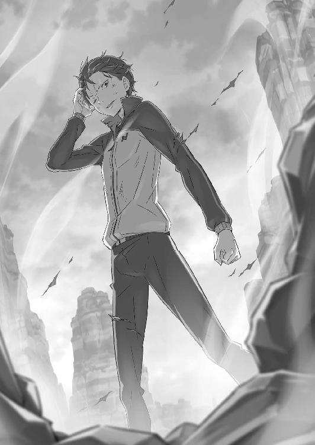
第五章 『──ただそれだけの物語』
１
──墓標に最後の言葉を投げて、スバルは狂人に背を向けた。
振り返れば、片目を閉じたユリウスとすまし顔のパトラッシュが並んでいる。どちらも傷だらけだが、態度にそれを出さない精神力は大したものだ。
もっとも、心身共に消耗は著しく、その疲労感までは隠し切れないが。
「まぁ、俺も人のこと言えねぇか。一瞬だけとはいえ、あいつに体に入られちゃな」
邪精霊ペテルギウスの『憑依』、その副作用は全くの不明だ。気付けば、無意識の自傷行為で全身血塗れ、なんて事態にならないことを切に願う。
そう益体なく考える反面、スバルは自分が奇妙な虚脱感を覚えていることに驚いた。
異世界召喚以来、最大の難敵であったペテルギウス。やっとのことで奴を退けたというのに、胸の内を占めるのは達成感より脱力感の方が大きい。
「まさかの燃え尽き症候群ってんじゃねぇだろな。あいつ倒してしんみりするなんて思いもしなかったぞ。......馬鹿馬鹿しい」
独り言の最後で頰を叩き、緩んだ思考を痛みで強引に切り替える。
ペテルギウスは倒した。だが、スバルの目的はそれでおしまいではない。まだ最後の大仕事、エミリアとの仲直りが果たされていないのだ。
王都でのケンカ別れに始まり、その後のクルシュ陣営との同盟や白鯨討伐。魔女教との攻防戦に、エミリアたちを避難させるためについた噓の真相──そこに後始末を含めた事後説明があって、やっと今回の一連の出来事に決着がつく。
肉体を酷使したあとは、精神的にすり減りそうなイベントが盛り沢山なわけだ。
「でも、誰も傷付かないし、死にもしない。その方がずっと気楽だ。平穏な日々の大切さは失って初めて気付く......いや、俺は最初からそう思ってるけど」
平穏無事が一番とスバルが思っていても、不条理の方が見逃してくれないのだ。
とはいえ、そんな慌ただしい時間もようやく落ち着く。スバルは首を回しながら、岩場をユリウスたちの方へ向かおうとし──途中で足を止めた。
理由はペテルギウスの這いずった血の痕跡、その上に残された一冊の本だ。
「──福音書、か」
今際の際に落としたのか、福音書は表紙を血と泥で汚して放置されていた。
拾い上げ、スバルは中身をパラパラと確認する。内容は前と同じで、相変わらずスバルの目には象形文字の集まりにしか見えない。後半のページが白紙なのも変わらず、ペテルギウスが死んだ今では内容を聞き出すことも不可能だ。
「回収するだけして、クルシュさんかロズワールに相談するのが吉か」
なお、ロズワールの方が優先度が低いのは単純に好感度不足だ。今回の不在が響き、味方なのにロズワールの信頼度は著しく低下した。今後の挽回に期待したい。
「──スバル」
福音書の扱いを決めたスバルを、こちらへ歩み寄るユリウスが呼んだ。その声に顔を上げ、スバルはユリウスの険しい顔つきに眉を顰める。
不穏な気配、そんなスバルの予感を裏付けるようにユリウスが顎を引く。
「ようやく決着したばかりだが、すぐに村に戻ろう。問題が発生した」
「......嫌な予感がすごいぞ。何があった？」
「フェリスからの連絡だ」
そう言って、ユリウスは光を放つ対話鏡を持ち上げる。フェリスとの交信が続く鏡面を横目に、美丈夫は黄色の双眸に警戒を宿し、
「避難に用いた竜車の積み荷に不審な点があったらしい。──エミリア様が危険だ」
と、全ての前提条件が覆りかねない爆弾発言を口にしたのだった。
２
アーラム村にスバルたちが戻ると、村内には帰還した討伐隊が集まっていた。
彼らはスバルたちに気付くと、大罪司教を討った戦果をねぎらってくれる。しかし、その雰囲気は祝杯を挙げるには物々しく、色濃い緊張感が残っていた。
「作戦成功を祝って宴会って雰囲気じゃねぇ。何があったか聞かせてくれ！」
「──はいはい、もちろん。でも、その前に二人の傷を診ちゃうから」
説明を求めるスバルに応じたのは、集団の輪から抜け出したフェリスだ。微笑するフェリスだが、その額には汗が浮かび、近衛の制服はひどく血で汚れている。
その装いにスバルが驚くと、フェリスは「あー」と納得した顔で頷いて、
「大丈夫、フェリちゃんの血じゃなくて治療中の汚れだから。それに見た目ほどひどいケガの人はいにゃいよ。負傷者は出たけど、犠牲者は出てにゃいから」
「それは朗報......って、俺は後回しでいいよ！ 先にユリウスだ」
「君ぐらいの傷なら片手間にゃの。ユリウスの方は本腰入れなきゃダメそうだけど」
軽傷を主張するスバルに手をかざし、フェリスが治癒魔法を発動する。こそばゆい感覚と共に傷が癒え、痛みが引くまでほんの十数秒、さすがの手際だ。
「はい、スバルきゅんはおしまい。ユリウスは......わ、痛そ。上着脱いで、ほら」
「お手柔らかに頼むよ」
涼しげに受け答えするユリウスだが、その傷は相応に深い。快癒に時間がかかるのは、傷を診て顔をしかめたフェリスの反応からも明らかだ。
「お前の仕事は終わりだ。大人しく安静にしてろ。......それでフェリス、肝心の話だ。積み荷に、何があったって？」
ユリウスの治療が始まるのを横目に、スバルは逸る気持ちで質問を飛ばす。その問いを受け、治癒魔法を行使するフェリスは「ん、わかってる」と顎を引いた。
「そのことだけど、気付いた子に聞くのが一番だと思うから......オットーきゅん！」
思いがけないフェリスの指名に、目を丸くしたスバルの前で人垣が割れる。騎士たちの間を抜け、つんのめるように飛び出したのは灰色の髪の青年──、
「オットー？」
「ナツキさん！ お帰りをお待ちしてましたよ！」
駆け寄り、息を弾ませたのはオットーだ。彼は興奮気味にスバルとユリウスを見て、二人の無事に胸を撫で下ろすと、
「まずはご無事で何よりです。正直、大罪司教と戦うとか自殺行為としか思ってませんでしたが......いや！ 今はそれより、お話ししたいことがあります！」
「落ち着け！ ゆっくり説明してくれ。だけど、要点を搔い摘んで手短に頼む」
「難しいことを！ とにかく積み荷の話です。実は目録を確認していて妙なことが」
「目録って、村に残した行商人の荷物のか。妙なことって？」
声を低くするオットーが、胸に抱えていた商品目録を慌ただしくめくる。そして、目録のあるページに目を留めると、
「ケティさん......名前じゃわからないかもですが、行商人のケティ・ムッタートです。魔女教の回し者だったとかで、捕まったそうですが」
「そいつはわかるよ。──そうか、知り合いだったんだっけか」
オットーとケティとは、以前の周回で何度か接点があったことを知っている。知人が魔女教徒と知って、オットーもショックだっただろう。
だが、オットーはその部分には頓着せず、むしろ前のめりにスバルに詰め寄った。
「ケティさんが魔女教徒だったことには驚いてますし、残念でもあります。が、問題はそこじゃありません。──彼の竜車は、村人の避難に利用されてますよね？」
「──？ ああ、使ってる。持ち主はともかく、地竜に罪はないしな。使える竜車にも余裕があるわけじゃないし、全員逃がすためにやむなしだ」
「そして、竜車から降ろした積み荷と、その目録は僕が見た通り、ですね？」
「そのはず、だけど......」
細部に拘るオットーに、スバルは疑問を浮かべたまま頷く。その肯定にオットーは「やっぱりだ」と確信を持った顔になると、焦れるスバルに硬い声で続けた。
「残された積み荷と目録を見比べた結果、あるべきものが村にありません」
「あるべきもの？」
「ケティさんの竜車に積んであったはずの、大量の火の魔石がないんです。──竜車の七、八台は吹き飛ばせるだけの量が、どこかに消えるなんてありえない」
３
──ケティの竜車は『聖域』ではなく、エミリアたち王都避難組に利用されている。
オットーの話から竜車の振り分けを確認し、スバルはそう結論付けた。
行商人に潜んでいた魔女教徒は三人。所有者を失った竜車は討伐隊の人間が御者を務めており、三台の内の一台がエミリアの乗車したものであることも覚えている。
「その、目録にあった魔石は本当に積み荷にあったのか？ 言っちゃなんだが、魔女教徒だった奴の目録なんて当てになるとは......」
「日常に溶け込み、有事の際の毒となるのが魔女教徒の恐ろしさだ。仮初の身分を適当にこなしていた。......それは見たくないものに目をつむる行いだよ、スバル」
「お前はまたここで正論を......わかってる、俺が悪い」
焦るスバルにユリウスが厳しく現実を突き付ける。反射的な反論を自重したスバルの横で、フェリスはオットーに目を向け、
「目録と荷物の齟齬に気付いたのはオットーきゅんだけど、理由があるんだよネ」
「ええ。魔石以外の荷物は目録と一致してますし......実は、僕は現物を見ていました」
「見たって、積み荷に魔石があったのをか!? いつだよ!?」
自分が証人だと名乗り出たオットーは、スバルの疑問に指を立てる。
「今回の、避難用の竜車を集めるお触れがあったときです。その話、僕はケティさんたちと一緒に聞いたんですよ。それで、他の皆さんを出し抜くために急いだわけですが......出発前の道程計算に、余所の積み荷をこっそり確認してまして」
「抜け目ねぇ......のに結果はお粗末だったが」
「そこは言わないとこでしょう!? とにかく、現物は確かにこの目で。質はお察しでも威力は折り紙付き......ここにないということは、と僕は睨みますが」
説明が締め括られ、スバルは苦々しい顔でユリウスとフェリスを見る。だが、二人の顔にも深刻な色が濃く、特にユリウスの自憤は顕著だ。
そして、彼の抱く怒りはスバルにもよくわかる。
「クソ、手抜かりだ！ 使えるもんは何でも使う貧乏性が裏目に出た！」
「術式の仕掛けがないことは確認した。......だが、竜車自体に物理的な仕掛けを施されるのは盲点だった。すまない、私の失態だ」
「お前が悪いんじゃねぇ。俺が気付かなきゃいけなかった」
魔法的な罠への警戒はユリウスが十全にしていたはずだ。彼がそちらを担ったのであれば、物理的な仕掛けにはスバルが気付かなければならなかった。
何より痛恨なのは、竜車の爆発は前周回でスバル自身が経験していたことだ。
前周回、ペテルギウスに憑依されたケティが本性を現したとき、スバルとフェリスは竜車の爆発に巻き込まれた。その後、『指先』に施された自害用の爆裂術式の存在を知り、あの爆発はその術式によるものと思い込んでいたが──、
「あの爆発は術式じゃなく、竜車の仕掛け......それは今回も、避難した竜車に」
竜車に魔石を仕掛けるのは、自分が魔女教徒とばれたときのために非常に有効だ。討伐隊に大きな被害を与えられるし、味方に状況の変化も伝えられる。
魔女教の偏執的な悪意を思えば、それは容易に納得できる想像だった。
「フェリス！ 今から地竜を飛ばして、王都に向かった避難組に追いつけるか!?」
「たぶん、厳しいかも。エミリア様たちが出発して一時間半......魔女教に見つからないように避難してるから飛ばしてないはずだけど、ゆっくり走ってるわけでもないし」
二つに分けた避難組の内、王都組はリーファウス街道を抜ける速度重視の作戦だ。メイザース領を抜けて街道に入れば、追いつくのはますます困難になる。
しかし、仕掛けをどうにかしなければエミリアや子どもたちが犠牲に──。
「また足りないのか？ これだけやって、俺はまた......！」
自分の手出しできないところで、大切な人の運命を左右されるのか。
運命はスバルがどれだけ手を尽くしても、あの手この手で罠を張り巡らせる。まるでスバルの歩む道の全てを、丁寧に茨で舗装するかのように。
だが、そうして運命の不条理に絡め取られるスバルに──、
「──一つ、いいですか、ナツキさん」
手を上げ、スバルの焦燥に割り込んだのは真剣な顔つきのオットーだった。
その瞳に宿る覚悟は、直前の気弱な彼とは別人のようだ。だが、その豹変にスバルは覚えがあった。それは本当の意味で彼と初対面だった周回、酒に溺れていたオットーはスバルに商談を持ちかけられ、今と同じ商人の顔になっていた。つまり──、
「──何か、今の俺と取引きできるってのか、オットー」
「察しのいい方、嫌いじゃないですよ。──ナツキさん、僕は今、かなり崖っぷちなんです。竜車の積み荷は売り時を逃して二束三文！ 一発逆転を狙った儲け話は機会を逃して大惨事！ 命あるだけ儲け物なんて言いますが、正直笑ってられません」
聞くだに悲惨で、悲劇的というより喜劇的なオットーの境遇だが、今はそれを茶化す暇もない。スバルは頷き、オットーに話の先を促した。
そのスバルの態度に、オットーは一度だけ目をつむり、それから提案する。
「取引き、しましょう。こちらの条件に応じてくださるのであれば、僕は僕の全霊を尽くしてあなたを目的の場所へ──問題の竜車に追いつくとお約束します」
「追いつけるってのか？ 今から出発してどうやって!?」
「それをお話しする前に確約してもらいたいんです。条件を吞むと。ここで差し出すものが僕の切り札なので、簡単には話せません。たとえ脅されても、です」
「条件でもなんでも出せ！ 俺にできることならなんだってやってやる！」
慎重に言葉を選ぶオットーの両肩を摑み、スバルは彼に条件を求める。
すでに四回、世界を繰り返した。白鯨を討ち、魔女教を退け、手に入れようと願った条件はほとんどクリアされている。ここまできて、全てを棒に振るなどお断りだ。
──最後のひと踏ん張りぐらい、なけなしの気合いと根性で乗り切ってやる。
「決断が早い人も、嫌いじゃありませんよ」
そのスバルの即断に、オットーは冷や汗を浮かべながらも笑みを作った。
今の一瞬の交渉は、オットーにとっても人生を左右する大一番だったのだ。スバルの即決に刹那だけ驚き、しかしオットーはすぐに葛藤を投げ捨てた。そして──、
「──僕に、メイザース辺境伯とお目通りする機会を作っていただきたいんです。それから今回の報酬に、積み荷の油の買い取りを......言い値で、どうでしょう？」
目を細め、オットーは商売人の顔つきでスバルを試すように言った。
最初に最大限の要求を叩きつけ、そこから譲歩を引きずり出す初歩的な交渉術だ。切迫した事情につけ込むのは商人の定石でもある。
ここから、スバルとオットーの激しい交渉合戦が始まり──、
「またそんなことでいいのか！ よし、油でもなんでも買ってやるし、あの変態ピエロに会いたいってんならどうとでもしてやる！ 交渉成立だ！」
「えっ、なにそれこわい」
交渉の始まり方が前回と同じなら、決着の付け方も丸っきり同じ展開──オットーの運命を懸けた商談は、またしても彼の望み通りにまとまったのだった。
──肩透かしの不戦勝、それを彼が名誉に思うかどうかはまた別のお話である。
４
「イアを君に同行させる。竜車に仕掛けられた魔石も、彼女なら探し出せるはずだ」
そう言って再び、ユリウスは自分に付き従う赤い準精霊をスバルに預けた。
淡く輝く準精霊は前と同じく、スバルのゲートに同調すると姿が見えなくなる。
「助かるけど、あんまり簡単に貸し借りされると、この子が怒らないか？」
「イアは思いやりが深く、君を気に入ってもいる。それに、何の心得もない君だけをいかせて後悔するのは避けたい。本当は私も同行したいのだが......」
そこで言葉を中断し、ユリウスは端正な顔に悔しげな色を覗かせる。だが、そんな彼の隣で、治癒魔法をかけ続けるフェリスが呆れたように頰を膨らませた。
「やせ我慢してるくせに馬鹿言わない。マナもからっけつで何の役に立つの！」
「蕾たちの力を借りて、この醜態だ。つくづく自分の非才に嫌気が差すよ」
「お前のそれはただの嫌味だろ。ともかく、ありがたく精霊は借りてく。それと......」
準精霊を借り受けて、スバルは最後に治療に専念するユリウスに指を突き付けた。
「全部片付けて、白鯨と魔女教撃破の祝賀会だ。招待客には入れてやるから死ぬなよ」
「ここで謀殺されれば犯人は君かフェリスだ。わかりやすい状況ではあるな」
「仲良く嚙みつき合ってにゃいの。ほら、さっさとエミリア様を追っかける！」
軽口を交換する二人を睨みつけ、フェリスが村の入口の方を指差す。そのやり取りを二人からの激励と受け取り、スバルは親指を立ててから走り出した。
「君の全霊に期待する」
「せいぜい気を付けて。死ななきゃ治してあげるけど、死んだら助けられないから」
声援に手を振り、スバルは村の入口でオットーと合流する。
オットーは自分の竜車に、愛竜とパトラッシュを繫いで追走の準備を整えていた。幌付きの中型竜車二頭引き──ここから、先に出たエミリアたちを追いかける。
「忘れ物はありませんね？ 時間が惜しいので、出発しましょう」
「ああ。道案内、その他諸々込み込みで頼んだぜ、オットー」
頷き合い、二人は揃って竜車の御者台に乗り込んだ。正面、竜車を引く二頭の地竜にはずいぶん体格差がある。細身のパトラッシュが心配になる体格差だが。
「地竜には『風除けの加護』がありますから、少々の体格差は走る障害になりませんよ。どちらも雌ですし、聞いた感じだと折り合いは悪くなさそうです」
横顔からスバルの懸念を読み取ったのか、手綱を握るオットーがそう説明する。その彼の口にした『聞いた』という発言に、スバルは「うーむ」と唸った。
「どうしました？」
「いや、やっぱり加護ってすげぇなと思ってさ。才能みたいな括りで考えていいんだろうけど、ドクタードリトルまであるとは驚きだよ」
「動物のお医者さん？ 何を言ってるやらですが、加護持ちは加護持ちで苦労もあるんですよ。特に僕の『言霊の加護』は、小さい頃はうまく制御できませんでしたから」
感嘆するスバルに微苦笑し、オットーは自分の加護のことをそう語る。
彼の『言霊の加護』の効果は、『どんな生き物とでも会話できる』というものだ。その加護の力でエミリアたちに追いつく。──それが彼の取引きの答えだった。
「最初は、その加護でどうやって追いつくんだって思ったけど......」
「道中、鳥や虫に話を聞けば最短距離がわかります。僕の地竜......フルフーには無理をさせますけどね。獣道どころか、崖に沼にと悪路を突っ切りましたから」
道ならぬ道を踏破し、オットーは他の行商人に先んじてメイザース領へ一番乗りしたわけだ。それだけやった結果が魔女教の虜囚なのだから究極に運がない。
ともあれ、彼の加護の力を借りれば──、
「先行するエミリアたちに追いつくのも、楽勝だ」
「いえ、さすがに楽勝っていうのは......追いつく可能性は十分あるってお話で。そもそも、実は追いつけるかどうかはさっきの条件に入ってないのが肝でして......」
「先行するエミリアたちに追いつくのも、楽勝だ──！」
「そんないい顔して言い切られても困るんですけどねえ!?」
信頼の重さにオットーが叫ぶが、ここで弱気になられては何もかもがおじゃんだ。
スバルは笑みを消して、真剣な顔でオットーに頭を下げた。
「頼むぜ、オットー。お前だけが頼りだ」
「......本当に、殺し文句ですねえ、チクショウ」
神妙なスバルの態度に口惜しげに言って、オットーは観念した風に嘆息する。それから彼は手綱を握りしめ、二頭の地竜に向かって力強く指示を出した。加速する。
「ああもう、やってやりますよ！ やってやってその恩を着せて、骨までしゃぶって儲けさせてもらいますからね──！」
ヤケクソになったオットーに従い、竜車は尋常でない速度で走り出し、走り続ける。
その速度に力強さを感じながら、スバルは道の先にいるはずのエミリアたちの姿を幻視する。その背中に追いつく、そのために走り出したのだと。
もっとも──、
「あれ──!?」
竜車は出だしでいきなり道を外れ、森に入って道ならぬ獣道へ突入する。
『風除けの加護』に守られていても守り切れないほどの爆走が、早くもスバルの見据えていた道を突き抜け、竜車は文字通りのショートカットを始めていった。
──その後、悪路に次ぐ悪路を走り続け、スバルは何度も死を覚悟した。
異世界に召喚されて以来、すでに十回以上も死んでいるスバルにはわかる。オットーとの爆走は誇張抜きに、『死』のすれすれと行き違う無謀だったのだと。
ほとんど垂直の崖を駆け下りる積極的な自殺行為や、今にも落ちそうなオンボロの吊り橋（実際、渡った直後に落ちた）の突破、魔獣の群生地帯を突っ切るときには異形の猛獣に群れで追われ、その命懸けさは枚挙に暇がない。
「死ぬ......これ、間違いなくそろそろ死ぬ......次はない......っ」
「なんでしょう、今すごい風がきてる。正直、僕もここまでのことができるとは自分で思ってませんでした。......これが、あとがない人間にだけ出せる底力......！」
青い顔で御者台に縋りつくスバルの横で、オットーは完全にトランスしている。発言もかなり危うげだが、余計な問答で集中力が切れると怖いので何も言えない。
「それに過程はともかく、タイム自体は絶好調だ」
森を突き抜け、久々に道らしい道の上に飛び乗る。ちょうど視界の端を過った看板は、メイザース領と街道の境を示すものだ。到着までの時間は通常の半分──苦労を重ねた甲斐あって、結果はついてきている。二度と同じ真似は御免だが。
「街道......より、左の木立ちに突っ込んだ方が早いですね！ そっちが最短です！」
「木立ちってか森じゃね？ 獣道すらなさそうだぞ!? 本当に大丈夫か!?」
「────」
「返事しろよ!!」
スバルの悲鳴に取り合わず、オットーは竜車の頭を森の入口に突っ込ませる。
されるがままのスバルは両手を組み、事故がないことを祈りながら森の中へ。木の根を踏んだ衝撃で竜車が跳ね、再びの悪路に奥歯を嚙みしめる。
視界は一面、太い木々で埋め尽くされていて、一歩間違えば正面衝突は避けられない。だが、蒼白のスバルと対照的にオットーは楽しげで、行商人の見方が変わりそうだ。
「行商人ってこんな大変なの!? 都会で一旗揚げるのって楽じゃ......」
「──ナツキさん！」
戯言で気を紛らわすスバルを、突然のオットーの叫びが突き刺した。
その声に込められた切迫感に、スバルは何事かと彼を見る。すると、オットーは自分の耳に手を当て、辺りに視線を巡らせて頰を強張らせた。
「森が騒がしい......じゃない。鳥や虫が大騒ぎして、急にいなくなりました！ それにフルフーも緊張して......何か、何かがきます！」
警戒するオットーの声に、スバルも息を吞んで周囲を見回す。だが、高速で行き過ぎる森の中、揺れる竜車の上では少々の異変など見つけられない。
そう、少々の異変であれば──、
「くっ、時間は惜しいですが安全策を取りましょう。ナツキさんは後ろの警戒を──」
「......いや、その必要はなくなったぜ」
方針転換しようとするオットーに、スバルは馬鹿に落ち着いた声で言った。
そのスバルの視線は竜車の背後、置き去りにしてきた森の景色を睨みつけている。遠ざかり、視界から消える森はまるで、『それ』に吞み込まれていくかのようだ。
「────」
へし折られる木々が宙を舞い、緑の森が惨たらしく荒らされる。
破壊を巻き起こし、竜車の駆け抜けた直後の地面をめくれ上がらせ、『それ』は周囲の被害などお構いなしに真っ直ぐ、こちら目掛けて猛追してきていた。
「飛ばせ、オットー。──絶対に捕まるなよ!!」
「ナツキさん!?」
振り返りかけるオットーを制し、スバルは御者台から後ろの荷台に乗り移る。そして荷台に仁王立ちになると、すぐ背後に迫る『それ』に牙を剝き出して吠えた。
「てめぇ──どんだけしつこいんだよ、クソ野郎!!」
怒声を上げるスバルの眼前、膨大な漆黒の影が蠢いている。
屍から黒い魔手を垂れ流すように伸ばし、もはや人の形を失った妄念の塊──。
──ペテルギウス・ロマネコンティの残骸が、森を喰らいながら背後に迫っていた。
５
──おぞましい、おどろおどろしい、禍々しくてたまらない。
落盤の下敷きになった肉体は潰れ、右半身は腕も胴体もなくなっている。髪ごと頭皮の剝がれた頭蓋は赤く染まり、引きずられる下半身は両の脛から下がない。だらりと下がる四肢は生命力に乏しく、それはもはやただの屍であった。
だが、その屍は悪足搔きをやめず、妄執のままになおもスバルに追い縋る。
「──体ァをォ、ワタシぃの、肉のォ体をぉぉぉぉぉ！」
「どんな執着だ。俺の中に入ってひどい目に遭ったの覚えてねぇのか......！」
亡者のようなペテルギウスの叫びに、スバルは心の底から怖気立っていた。
憑依した肉体はすでに死に、ペテルギウス自身の『死』も目前だ。
しかし、『見えざる手』を駆使し、形振り構わない狂人の動きには爆発力がある。放っておけば、遠からずバラバラに自壊するだろうが──、
「時間切れを待つのは厳しい、か......クソったれ！」
揺れる荷台に狂人が迫るのを、スバルは歯軋りしながら睨みつける。
爆走する竜車も十分に非常識な速度だが、ペテルギウスはその上を行く。まるで燃え尽きる寸前の蠟燭の火のように、邪悪な妄念は最後の輝きを放っていた。
「これが精霊？ どこが？ 精霊ってもっと神聖なもんなんじゃないの？」
「──ナツキさん！ 後ろに何がきてるんですか!?」
嘆くスバルにオットーの叫びが重なる。位置的に竜車の真後ろを見られない彼は、背後の悪夢が見えていない。そして、それはオットーにとって幸せなことだ。
「ちょっとでかくて黒いケダモノが追っかけてきてるだけだ。たぶん、森の途中で尻尾でも踏んづけたんだと思う。すごい鳴き声で顔も怖いから見ない方がオススメ」
「本当に見せない気あります!? 露骨に気になる要素が満載なんですが！」
「いいから飛ばせ！ 俺が嚙まれたら今度はお前も齧られるぞ！」
「うひぃ！ それは怖い！」
手綱を握るオットーを脅して、スバルは悪路に集中させる。
だが、地竜の加速にも限度がある。万一、木に衝突でもすれば吞まれるのは必至、森の中で地竜をこれ以上急がせることはできない。つまり──、
「お前の足止めは俺の役目ってわけだ。最終局面で見せ場到来......何回、最終局面やらせんだよ！ お前のどこが『怠惰』だ！ この無用な働き者がぁ！」
「魔ァ女ォ、サテラぁ！ ワタ、ワタシを、愛、愛、愛ィィィィィィィィ!!」
「俺もお前も愛されてなんかねぇよ！ 好きな相手の心臓潰そうとするラブコメがあってたまるか！ 俺はそんなヒロイン願い下げだ！」
顔を持ち上げたペテルギウスが、眼球の落ちかけた形相で絶叫する。
死に体と化し、裏切られ、それでもペテルギウスは魔女への『愛』を叫び続ける。スバルにはその姿が初めて、本当に哀れなものに思えた。
肉体を求める妄執、魔女からの『愛』を欲する妄念──その裏側には自分の肉体を持たない精霊としての、満たされない接触と慈しまれることへの渇望がある。
決して癒えない渇きに延々と蝕まれ、ペテルギウスの精神は狂気に落ちたのだ。
──もっとも、それでこの存在が肯定されることなどあってはならない。
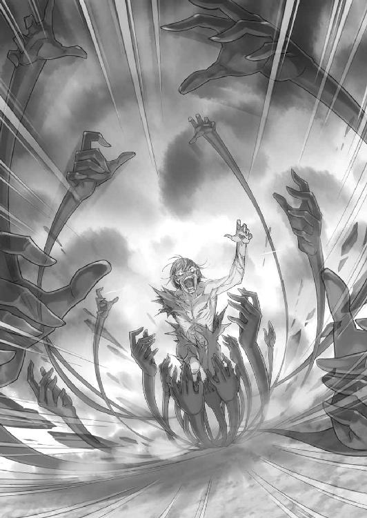
「必殺技も超魔法もねぇ。でも、お前の相手は俺だ。俺より前にはいかせねぇし、俺の先にいる子に追いつかせるわけにも絶対にいかねぇ......！」
「ナツキさん、そんなに僕のことを......！」
「ちょっと黙っててくれる!? 今、カッコつけてるところだから！」
茶々なのか素なのかわかりづらいオットーを黙らせ、スバルは狂人に向き直る。
ユリウスの剣に減らされた分と、自走に費やす分だけ『見えざる手』の総量は少ない。頭上を揺らめき、攻撃に使える腕は全部で七本──最初の時点と同じだ。
猛然と地を搔き、土煙を上げながらペテルギウスは竜車に迫る。振り上げられた魔手が枝木を吹き飛ばし、上空から叩きつけられる一撃が地面を割った。黒い指先が荷台の後部をわずかに掠め、強度無関係に衝突箇所が抉られる。
次の一撃を確実に当てるために距離を測られた。同じ威力が荷台の真ん中に直撃されれば、それで竜車の横転は確実、スバルたちの死は免れない。
──勝負は、次の交錯で決まる。
「ナツキさん、森を抜けます──！」
オットーの声と同時、視界を覆っていた緑が一気に晴れる。
突き抜けるように森を飛び出し、下り坂の草原を竜車は滑り落ちる。それを追って大地を搔き毟るペテルギウスも、その影の塊に倒木や岩塊を吞み込んだまま、歪な邪悪そのものとなって竜車の後部に喰らいついた。
──森を抜け、街道に入った。遠からず、エミリアたちに追いつく。
彼女たちの前に、エミリアの前にペテルギウスを連れていくことはできない。大罪司教の目論見は理解不能だが、エミリアの心は傷付けさせない。
だから、故に、ナツキ・スバルはここで命を燃やす──。
「森は抜けた。──加減はしねぇぞ！」
「愛ニ！ 愛シ！ 愛だけガ、全テなのデス──!!」
血の涙を流し、歯の欠け落ちた口を開けて、ペテルギウスが狂笑する。
けたたましい笑声を聞きながら、スバルは荷台の奥にあった積み荷を解放する。重たいそれを引っ張り出すと、並々と注がれた液体の刺激臭が鼻をついた。
それを抱え込み、持ち上げる。そして、血染めの狂笑に声を叩きつけた。
「焼け落ちろ、ペテルギウス」
「──ッ!!」
同時に、空に伸ばされた『見えざる手』が破壊の瀑布となって振り下ろされる。
──だが、その魔手が届くより、スバルの動きの方が早い。
凶悪な笑みを浮かべ、スバルは抱えた壺──油壺を狂人へ投げつけた。衝突した陶器の壺は砕け散り、中身が狂人の死体を盛大に汚す。準備は整った。
漆黒の魔手が落ちてくる。荷台ごと、スバルをバラバラに吹き飛ばすために。
それに構わず、スバルは真っ直ぐ右腕を伸ばし、人差し指を銃の形にして突き付けた。その指先に赤い光──ユリウスから借り受けた、『赤』の準精霊が宿る。
「力借りるぜ、ユリウス・ユークリウス」
「おォまァえェがァァァァ──！」
「レンタル・ゴーアぁ!!」
不完全な詠唱と未熟な魔法使い、そして未契約状態の準精霊。
不完全と不完全の掛け合わせ──だが、意思だけは一つに統一された詠唱が力を得る。
そして、世界に干渉する結果は火花一つで構わない。
ガス欠寸前のマナが精霊の力と結び付き、破裂する極小の火花がペテルギウスへ迫る。その血と油に塗れる凶相が口を大きく開き──、
「ぁぁぁぁあああ!!」
──刹那、スバルの視界が膨れ上がる鮮烈な赤に包まれた。
ペテルギウスの全身が、浴びた油を着火剤に凄まじい熱に吞まれて燃え上がる。波打つ炎に体中を炙られて、ペテルギウスの声にならない絶叫が大気を搔き毟った。
精霊であるペテルギウスに対して、スバルが打てる最大の一撃だ。
油壺はオットーの積み荷、頼みの綱はユリウスに借りた準精霊。あらゆる全てが借り物であり、ナツキ・スバルらしい継ぎ接ぎの攻撃だった。
「これで──がぅっ！」
勝機を見た直後、スバルは頭上に閃く漆黒の魔手の存在に気付いた。死神の鎌のように振られる魔手は、がむしゃらな軌道で狙いなど定めていない。
しかし、その腕は竜車の荷台に激突し、とっさに飛びのくスバルを掠めていく。衝撃に竜車は激しく弾み、直撃された荷台が獣に食い破られたように爆ぜた。
竜車が抉られ、飛び散る木片を浴びるスバルが荷台の奥へ転がり込む。その足はふくらはぎが削れ、歯を食い縛る脳天は痛みに焼け付くようだ。
「──がぁ！ クソ、痛ぇ！ ああ、チクショウ！」
出血する傷口を手で押さえ、スバルは激痛に声を荒らげた。だが、不運を呪う余裕も治療する時間もない。何故なら、今まさに黒い指先が荷台の尻にかかり──、
「寄ォ越ォせェ、わァたァせェ、差ァしィ出ァせェ......」
──燃えるペテルギウスの凶相が、大きく揺れる竜車の荷台に這い上がる。
「────」
荷台に上がったその姿は、もはや完全に人の形を逸していた。
千切れかけた下半身と欠損した右半身は、足りない部分を蠢く黒い魔手が埋める。元の男の肉体は赤黒く焦げた頭部以外は残っていない。かろうじて原形を留めた法衣にも火が燃え移り、その存在の醜悪さをこれでもかと引き立てている。
おぞましい化け物が、人間の皮を被っているのだと露骨に主張するかのように。
「ひでぇ有様だぜ、てめぇ。......俺も人のこと言えた筋合いじゃねぇけど」
痛みに引きつりそうになる顔を歪め、やせ我慢のスバルが立ち上がる。足の出血は今も止まらないが、満身創痍具合は相手の方が上だ。
全身が朽ち果て、その上から炎に焼かれたペテルギウスはすでに瀕死だ。奴も長期戦は望んでいない。相対は互いに一瞬、それで終わる。
切れる手札は多くない。むしろ少ない。あとは、小賢しさだけがスバルの武器だ。
「肉ゥ、体ァ、消えないィ......消えるわけに、いかなぃのォデス......」
「だから！ 俺の体に入っても痛い目に遭うだけだって言ってんだろ！ 魔女がなんだってんだ！ 俺もお前も、振り回されてるだけじゃねぇか！」
おぞましく這いずり、たどたどしい言葉でなおもスバルの肉体を求めるペテルギウス。その諦めの悪い姿に声を上げ、スバルは狂人の心を折りにかかる。
しかし、その怒声に対して、ペテルギウスはこれまでにない反応を見せた。
「──魔女、サテラ」
ふいに明瞭な声で呟き、ペテルギウスは顔を持ち上げる。
半ば崩壊し、頰骨の剝き出しになった形相で、しかし狂人の瞳に理性が戻った。
焦点の合わない瞳は揺らめき、それは次第にスバルを捉え、狂的に瞬く。
「アナタは、危険......デス。危険、危険、危険危険危険危険危険危険──デス！」
「あぁ!?」
「寵愛を、受けて、受け、受けてい、いながら、愛を否定ぃ！ そしてワタシを、ワタシをワタシをワタシをォ！ ここまで追い込み、死を死を死を死死死死死ひィ！」
首をがくがくと揺らしながら、ペテルギウスは支離滅裂に喚き立てる。
だが、その狂乱と裏腹に魔手は着実に勢力を広げ、荷台を侵食してスバルの足場を奪っていく。逃げ場のない場所で魔手が放たれれば、スバルに勝ち目はない。
知性が戻り、狂人は本能的ではなく理性的にスバルを追い詰める。その性質の悪さにスバルは後ずさり、同時に一つの可能性に思い当たる。そして──、
「魔女に、魔女、サテラに......サテラぁ！ 愛し、愛を、愛がぁ！ 愛したのデス！ 愛されているのデス！ サテラ、アナタが、アナタがワタシを、ワタシにした！ 片時も忘れていな、いないのデス！ アナタが忘れても、ワタシは、忘れて、いない!!」
涙が、溢れる。血の涙ではない、本物の涙が。
本当に、これまでの邂逅で初めて、ペテルギウスは初めて正気のまま愛を叫んだ。
親愛が、熱情が、ペテルギウスを狂気の淵から現実に引き戻していた。ペテルギウスの澱み切っていた瞳、それが確かな意思を灯してスバルを睨みつける。
「アナタは危険デス！ いずれ、魔女教を脅かす存在デス！ その前に！ アナタが、サテラにその手を届かせる前に！ ここで！ 今ここで！ ワタシの手で！ ワタシの勤勉さを以て！ 『怠惰』なワタシと決別し、愛に報いるために......死ぬの、デス!!」
ペテルギウスが叫び、解放される魔手の力に耐えかねて肉体が爆ぜ、崩壊していく。
だが、もはやペテルギウスはスバルの肉体を奪うことより、魔女教に禍根を残さぬそのために、自分の信奉する魔女を守るためにスバルを殺そうとしている。
それは意思ある、知性ある、ケダモノとは一線を画す行いであり──、
「お前が化け物のままだったら、俺の負けだっただろうぜ」
懐から手を抜いたスバル、その手に握られたものにペテルギウスが目を見開く。
その反応にスバルの心が音を立てて軋んだ。しかし、刹那だけ過ったその感傷を奥歯で嚙み殺し、頭上へ腕を振り上げる。
真上に振られた腕の先から、黒い装丁の本が──福音書が投げられた。
「ぁ......サテラ」
ぽつりと、ペテルギウスの口からこぼれたそれは低く静かな声音だ。
それは愛おしくてたまらない誰かに、安らぎの中で呼びかける声そのものだった。
天を望み、ペテルギウスは唯一残った左腕を空へ。その意に従うように魔手が福音書へと伸び、宙を舞う本に黒い指先がかかった。──直後、それは訪れる。
荷台の外に投じられた福音書は風に吞まれ、吹き飛ばされる寸前だった。それは風の影響を受けているということだ。加護の外にあったということだ。つまり──、
「──ッ!?」
本を摑んだペテルギウスの肉体が、猛烈な風を浴びて大きく後方へ傾く。引きずる足が抉れた荷台の床を割り、半身が竜車の外に放り出される。
『風除けの加護』の外に出て、風と揺れの抵抗をもろに浴び、見放された結果だ。
──かつて王都に向かう道中で、スバルも悪ふざけの最中に同じ状況に陥った。
風除けのない竜車の荷台、加護なしで全速力の風と悪路の揺れをダイレクトに味わい、姿勢など保っていられるはずがない。
「──ぉ、おおおおお!!」
ペテルギウスが大きく体勢を崩した瞬間、スバルは雄叫びを上げて踏み込んでいた。
抉られた足の痛みも忘れ、弾かれたように飛びかかる。勝敗を左右するような絶大な技は何もない。──だから、勝負所だけは間違わない。
「────」
駆け込んでくるスバルにペテルギウスが何事か叫ぶ。何も聞こえない。ただがむしゃらに姿勢を低くし、頭から突っ込むようにペテルギウスの懐へ飛び込む。
『見えざる手』が射出される。突き出される掌の速度は緩やかで、極限の集中力の前には止まっているようにすら見えた。首を傾け、乱暴に身を躱し、頰に指先を掠めながらスバルは敵に肉薄する。強烈な魔手の圧迫感、思わず目をつむってしまいそうだ。
「──ヴィルヘルムさんに教わったことが、二つあった」
掌を掠める。首の皮と、頰と耳の一部に焼けた鉄を当てられたような痛みが走る。爆ぜる熱に思考が白熱し、喉の奥で炸裂する苦鳴を奥歯が嚙み殺した。
躱した。息を吸う。まだ終わりではない。
「俺は、剣の才能がこれっぽっちもないってことと」
痛みに灼熱、安堵に弛緩。
二つの要素に意識を強姦されながら、スバルは真っ直ぐに前を見る。
避けた掌の向こうから、もう一つの掌がスバルの顔面を弾きに迫り──、
「──殴られたとき、目ぇつぶらない度胸だ!!」
叫び、頭を下げてダッキング。首裏の産毛を削がれながら紙一重で回避。正面、驚愕に強張るペテルギウスの顔があり、その横っ面に拳を叩きつける。
「──ッ!!」
フルスイングに頰を打ち抜かれ、ペテルギウスは大きく後ろへ弾かれた。その体は床を踏み外し、ペテルギウスは竜車の外に投げ出される。そして──、
「ぉぉぉぉぉぉぉ──!!」
逆さまの宙吊り状態で、ペテルギウスが竜車に引きずられる。法衣の一部が荷台の端に引っかかり、その体は竜車に繫がれたまま地面に擦り下ろされていた。
血が散り、肉が爆ぜ、欠損を補っていた『見えざる手』すらも剝がれ落ち、ペテルギウスという存在が瓦解していく。それでも、ペテルギウスは逆さまの視界で、崩壊する顔を持ち上げながら、憎悪に滾る双眸でスバルを睨んだ。
「終わ、終わり、終わら、終わらない、終わって、ない、デス、デス、デス!?」
「──いいや、ここまでだ」
しぶとすぎるペテルギウスに言って、スバルはその手に摑んだ福音書──殴られたペテルギウスが取り落とした、狂人最後の心の拠り所を見せつける。
そのページをめくり、後半の白紙の章に辿り着くと、スバルはそこに指を叩きつけた。傷口に触れた指には血が付着している。それは福音書に朱を刻み──、
「──ここでお前は『おわり』だ！」
見開きの白紙にでかでかと、赤い『イ文字』で『おわり』の言葉が刻まれる。
それを目の当たりにし、ペテルギウスは唇を衝撃にわななかせる。その瞳に広がる激情の波は複雑すぎて、もはやスバルには何一つ読み取れない。
そして、その感情が言霊になる前に終わりが訪れる。
「──ッ」
竜車が大きく弾み、荷台に引っかかっていたペテルギウスの法衣の裾が外れる。破れた法衣はそのまま──高速で回転する竜車の車輪に巻き込まれた。
絡め取られる法衣に引きずられ、血と四肢を失ったペテルギウスの肉体が車輪に向かって一気に距離を詰めていく。終端が見える。法衣の破ける音に血肉の爆ぜる音が混じり、最期の瞬間にペテルギウスはスバルを見上げ、叫んだ。
「──ナツキ・スバルゥゥゥゥゥゥゥゥゥゥ!!」
絶叫が木霊し、それがそのまま断末魔に変わる。
スバルの名を叫んだまま、叫び声ごとペテルギウスの体が車輪に吞まれ、巻き込まれて嚙み砕かれ、血と肉と骨の破片が飛び散り、命を蹂躙する。
肉体の消失、それは宿っていた邪精霊の命をも壮絶に巻き込み、霧散させた。
「────」
最後の最後、スバルの鼻先に伸びた一本の『見えざる手』──。
その掌はスバルの顔を摑む寸前で止まり、指先からこぼれ落ちるように消えていく。それは本当の意味で、ペテルギウス・ロマネコンティが消滅した事実を示していた。
「今度こそ、もうずっと、眠ってろ。──ペテルギウス」
終わった。それを確信してスバルは荷台にへたり込む。
途端、それまで無視できていた痛覚が蘇り、スバルは呻きながら荷台に転がった。
「痛ぇ、ヤバい、死ぬ、死ぬってこれ。痛ぇ、ヤバい、ヤバい......っ」
涙が込み上げ、鋭い痛みが止まらない。血の流れる傷が疼き、体中に針を突き刺されたようだ。だから胸が痛いのも、その傷の痛みのついでに過ぎない。
憐れむことなど何もない。狂人、邪精霊、大罪司教──『怠惰』ペテルギウスに同情すべき点など何もない。奴は独りよがりのままに暴れ回り、その上で果てたのだ。
盲目的な愛を叫び、身勝手を他人に押し付け、そして独りで朽ち果てる。
そんなペテルギウスの末路になど、誰も憐れみを抱いてやる必要はない。
──たった一人、スバルを除いて誰も、そんな感傷に苛まれる必要などない。
「誰も、お前のことなんか理解してやるもんかよ。死んで当然だ。くたばって当たり前なんだ。誰も、誰にも、お前は許されない。──だから、同情するぜ。それだけは」
誰にも理解されない。愛を求めた相手に愛されない、孤独な怪物。
ペテルギウス・ロマネコンティは今度こそ、消滅する。
誰の胸にも、誰の心にも、何も残さず。
ただスバルの胸にだけ、憐憫という楔を打ち込んで、今度こそ本当に──。
６
「ナツキさん、半端じゃなく傷だらけですけど大丈夫ですか？」
「大丈夫なわけねぇだろ。虫歯の治療中に麻酔切れたとき以来の大泣きだよ」
半壊した荷台から御者台に移り、スバルは傷に薬を塗りながらそうぼやく。包帯や常備薬は旅の必需品らしく、竜車に備えてあったものを借りた形だ。
涙目で治療を終えたスバルは薬をオットーに返し、竜車の荷台を指差して、
「竜車の修理もロズワールに口添えしとく。......で、どのぐらい遅れが出た？」
「遅れは出てませんよ。むしろ、地竜が二頭とも本気で逃げようとしててくれたおかげで好調なぐらいです。......本当に何が追ってきてたんです？」
「ナマケモノだよ。知らない？ 手とか長くて、変な声で鳴く動物なんだけど」
スバルのとぼけた答えに嘆息し、オットーはそれ以上の追及を諦める。そんな彼の様子に肩をすくめ、次いでスバルはリーファウス街道の地平線を睨みつけた。
まだその先に、スバルの求める影は見えてこないが──、
「絶対に追いつく。今度こそ、俺は君を助ける」
「間に合うと、思いますか？」
「間に合わせる！」
オットーの問いかけは不安ではなく、スバルの覚悟を問い質すような響きだった。
だからスバルは声を張り、歯を剝く笑みを見せながら答えた。
「それにいい加減、レムが吉報を待ちくたびれる。期待に応えなきゃ男じゃねぇだろ」
「惚れてる女性の名前ですか？」
「俺に惚れてくれてる女の子の名前だよ！」
気負うことも照れることもなく、堂々とそう言ってのける。
そのスバルの答えにオットーは一瞬だけ呆気に取られ、それからすぐに破顔した。
「ああ、それはカッコつけないわけにはいきませんね！」
快哉を叫ぶオットーが手綱を振るい、乾いた音が響いて地竜の走る速度が上がった。
駆け抜け、駆け抜け、街道を飛ぶように駆け抜け、竜車が行く──。
地平線の向こうに、遠ざかっていく大切なものを手繰るように──。
──ナツキ・スバルはただひたすらに、前を望んでいた。
７
──竜車の速度が上がり、ひどい揺れと風の音が荷台の中に響き渡っていた。
「わ──！」
「大丈夫。しっかり摑まっていて。何も怖がる必要なんてないから」
身を寄せて一塊になり、揺れに耐える子どもたちにエミリアは気丈に微笑みかける。その微笑を見て、不安げでいた子どもたちは「うん」と何度も頷いた。
強い子たちだ、とエミリアは感嘆する。どの子も不安で胸がいっぱいだろうに、誰も弱音を吐かず、必死に奥歯を嚙んで恐怖と戦い続けている。
この子たちにみっともない姿は見せられないと、そうエミリアも思わされるほどに。
──本来、竜車は地竜の『風除けの加護』に守られている。
だが現在、エミリアたちの竜車はその加護が外れてしまった状態にあった。
加護の影響を逃れる条件は様々だが、『風除けの加護』はいたって単純に、地竜が足を止めるか、加護の影響下から外れるかのどちらか。──今回は前者に当たる。
一度停車した竜車は加護の再展開に時間がかかる。今回は、その時間さえ惜しい。
「────」
激しく揺れる荷台に固まり、強く握られる掌を意識してエミリアは目をつむる。幌に包まれた竜車の後方に耳を澄ませば、遠くに聞こえるのは激しい剣戟だ。
村の周辺に潜んだ犯罪集団からの避難、そんな名目で村を出てから二時間ほどが過ぎていた。道中でラムの先導する『聖域』組と別れ、エミリアたちの王都組の避難は順調に進んでいたはずだが──事態が急変したのは十数分前のことだ。
「──エミリア様、少々お時間をいただきたく」
小休止に足を止めた竜車の傍らで、エミリアは護衛の老剣士に声をかけられた。
ヴィルヘルム・トリアスと名乗った人物はクルシュの臣下であり、穏やかな物腰と裏腹に卓越した剣力の持ち主であるとエミリアにもわかっていた。
それだけに、彼の声に密やかな戦意を感じ取ったエミリアは不安に眉を顰めた。
「何があったんですか？」
「少しばかり気掛かりなことが。それ故、何名か連れてその排除に向かいたく存じます。ご無礼ではありますが、お傍を離れますことご容赦を」
「......大丈夫、なんですか？」
「ええ、野犬を追い払うだけの些事にございます。すぐに、追いつきますので」
恭しく腰を折るヴィルヘルムの物言いに、エミリアは違和感を覚える。そしてすぐ、老人の言葉が自分の周囲にいる子どもたちに配慮した言い回しだと気付いた。
ヴィルヘルムの役割を思えば、直接の言及を避けた『野犬』の正体は見当がつく。
「私は、必要ありませんか？」
「────」
そう聞き返すことは、ヴィルヘルムの気遣いに対する非礼だとわかっている。それでも聞き返さずおれなかったエミリアに、ヴィルヘルムは目を細めた。
不興を買った、とエミリアは思う。しかし、老人は予想外にも唇を綻ばせた。
「エミリア様はこのまま竜車で避難を。子どもたちをよろしくお願いします」
笑みに含まれる感情は失望でも侮蔑でもない。どこか透明な憧憬だ。
その意味がわからず困惑するエミリアに、ヴィルヘルムは静かに背を向ける。
「加護の外れた竜車は激しい揺れが予想されます。どうぞ、子らの手を放さぬよう」
「ヴィルヘルムさん、私は......」
「やはり主従なのでしょうな。──あなた様の目は、彼とそっくりです」
感慨深げな呟きを残し、ヴィルヘルムは他の護衛と共に竜車の列を離れていく。
その呟きの真意はわからない。だが、追及の時間はない。
すぐに他の騎士の指示で、慌ただしく竜車の群れは避難を再開する。そして加護の切れた状態で走り出す竜車の揺れに、考え事に浸る余裕は奪われてしまうのだった。
──そして、事態は激しく揺れる竜車の内部に舞い戻る。
幌付きの竜車の荷台で、エミリアは子どもたちと身を寄せ合っている。重ねた毛布を尻に敷き、震える子どもたちの手を握って、エミリアは外の様子に気を張り続けていた。
何かあればすぐに動き出せるように。そんなエミリアに外の様子を伝えるのは──、
『──後ろの方であのお爺さんたちと誰かがぶつかったね。戦いになってる』
エミリアの頭の中に、外の戦況を中継する声が響く。どこか吞気なその声音は、姿を見せないままに外の様子を窺っているパックのものだ。
『相手の数はわかる？』
『こっちの倍はいそうだけど......うん、全然大丈夫。あのお爺さんがものすごい凄腕だから、リアやボクの出番はなさそうだね。わ、また斬り捨てた』
戦意と緊張を顔に出さず、エミリアはパックとの念話に首肯する。
実体化していなくても、精霊であるパックには外の様子を知る術がある。彼の言葉に耳を傾けながら、エミリアは戦況把握に微力を尽くしていた。
『無意味に実体化して、いざってときにガス欠してたら笑えないもんね。それに、外に出てると子どもたちのオモチャにされそうだから』
『この子たちの不安がパックの可愛さで紛れるなら、それもいいかもって思うけど』
『怖いこと言い出すなぁ、ボクの娘。ともかく、外はそんな感じだよ』
念話で軽口を交わしつつ、パックの報告にエミリアは小さく感謝する。ただ、口の端に微かに上る強張りは、自分の無力さを痛感したことへの悔しさだ。
ヴィルヘルムの剣力はパックの保証付きだが、エミリアにだって戦う力はある。
助力を断られたのは、ヴィルヘルムがエミリアの立場に配慮してくれたからだ。それがわかっていても、エミリアは守られるだけの今が歯痒かった。
立場に見合った成果も出せず、権威は張り子のものでしかない。お飾りの候補者だと内外に評価され、相応しい能力があるとは噓でも言えない。
なのに立場は足枷に、権威は頸木になり、力を振るう決断すら却下される。
これでは、何のために自分は──。
「......スバル」
小さく、黒髪の少年の名前を口にして、エミリアは自分の弱さに頭を振った。
まるで助けを求めるように、彼の名前を呼ぶ資格は自分にはない。
今、自分が彼の名前を呼べるとしたら、それは力を借りるためではない。それは──、
「みんな心配しないで！ 何があっても、お姉ちゃんがみんなを守るから！」
スバルがエミリアにしてくれたように。彼の名前に勇気を借りるためだけだ。
エミリアのその呼びかけに、小さくなっていた子どもたちが顔を上げる。涙目で肩を寄せ合う子どもたちは、エミリアの言葉に顔を見合わせ、声を揃えた。
「だ、だいじょうぶ！」「お姉ちゃんの方こそ、しんぱいしないで！」「や、約束したからへっちゃらだし！ ぜったい手を放さないから！」
強がりだとすぐわかる声で、エミリアの手足に子どもたちが縋りつく。
両手に両足、肩や腰にまで組み付かれ、他者に触れられる熱にエミリアは身を硬くした。だが、決して嫌な感覚ではない。──ただ同時に、彼らの言葉に違和感を覚えた。
「約束って......誰かと約束したの？ なんて？」
「お姉ちゃんを放さないでって」「一緒にいてあげないと無茶するからーって」「誰かが見ててあげないと心配なんだって」
次々に返ってくる反応にエミリアは驚く。それはひどくエミリアに過保護で、見くびられているような気がするが──不思議と、強い思いやりに溢れている気がして。
「────」
その言い方がまるで誰かのようだと、そう思った途端にエミリアの胸が疼いた。
一度気付けば、胸の疼きは無視できない。それは加速度的に主張を強め、戸惑いに瞳を揺らすエミリアの心を甘く引っ搔いていく。
その疼きに導かれるままに、エミリアは問いを口にしていた。
「私を心配だって......誰に言われたの？」
「あ、ダメ、それは......っ」
その質問に顔色を変え、とっさに叫んだのはペトラだ。彼女は愛らしい頰を赤く染め、必死に声を遮ろうとしたが、間に合わない。
「スバルー！」「スバルが言ってた！」「寂しがりのおねえちゃんが心配だって！」「スバルが......あ、これって言っちゃダメだったんじゃ......」
我先にと子どもたちがその名前を出し、最後の一人が慌てて口を塞ぐ。そこで全員が失言に気付き、ペトラが「あちゃー」と頭を抱えた。
だが、そんな子どもたちの様子に、目を瞬かせるエミリアは気付けない。
「すば、る......？」
予感は、あった。子どもたちの口ぶりに、エミリアは彼の気配を感じていた。
でも、そんなはずがないと否定の気持ちが勝っていた。だって、エミリアは彼をとてもひどい言葉で傷付けて、遠い王都に置き去りにしてきたのだ。
スバルが一番、エミリアに手を差し伸べてほしいと願っていたあの場所で、エミリアは彼に背を向けた。それは重大な裏切りだったはずだ。
そのスバルの名前がどうして、エミリアが誰かの助けを求めるこのときに出てくる。
そんなことはあってはならない。そんなことはあるはずがない。
──エミリアの人生は、期待とは無縁の人生だった。
裏切られ、否定され、遠ざけられること。それはエミリアにとって当然のことで。
信じられ、肯定され、求められること。それはエミリアにとってありえないことで。
だから親しげに振る舞い、優しく全てをなげうつスバルのことも拒絶した。
エミリアが信じられなかったのは、そうしてくれるスバルの思いやりではない。スバルにそうしてもらえるだけの、エミリア自身の価値が信じられなかったのだ。
期待して、期待して、積み重ねたものを崩されたときの衝撃は計り知れない。
だからいつか遠ざけられるぐらいなら、自分から遠ざかってしまった方がいい。
二人の間に、何か決定的なものが積み重なって、それが崩れ落ちる前に。
それなのに、どうして──。
「スバルが、村にきてたの？ 戻って、きてたの？」
子どもたちが気まずく押し黙る中、エミリアの呆然とした呟きだけが漏れる。
今も竜車は激しく揺れ、襲撃者と護衛の騎士たちの戦いは続いている。エミリアには子どもたちを守る使命があり、今はそのことを最優先するべきだ。
なのに、エミリアの心は竜車の揺れよりもはるかに強く、大きく揺すぶられていた。
──スバルが村に戻っていたとしたら、不可解だった様々な状況に合点がいく。
討伐隊の合流に物分かりのいいラムや、村から避難する指示に協力的な村人たち。討伐隊の人々も、勝手を知らないはずの領地であまりに手際が良すぎた。
そんな数々の不自然が、ナツキ・スバル一人の存在で簡単に答えに結び付く。
討伐隊にスバルが加わっていたなら、ラムが彼らに反発しないのもわかる。村人たちにとって、スバルは村を救った恩人だ。彼の提案を無下にしないのも当然だろう。
何より、討伐隊と共に村に残り、脅威を引きつけて村人やエミリアを先に避難させるなんて、考えてみればあまりにスバルらしい。彼らしすぎる。
それはエミリアの知る、ナツキ・スバルの行いらしすぎて──、
「どうして......」
呟きは無理解と悲嘆に染まり、紫紺の双眸は込み上げる感情に淡く揺れる。
ここまでの全てのことがスバルの行動の結果なら、それはあまりにこれまでの彼の行いと変わらなすぎる。あれほど傷付け、遠ざけ、それでもなお、スバルのままで。
「あんなに傷付けて、悲しい顔までさせたのに......どうしてまた、スバルは私を......」
助けてくれようとするのか、わからない。
王選の場で、練兵場で、身も心もひどく傷付けられたスバルに投げかけた問いかけ。
あのとき、スバルはエミリアに答えを返してくれなかった。
だから今もエミリアには、その答えがわからないままだ。
わからないまま終わってしまうのが、二人の関係の結末だったのだと諦めたのに。
「どうして......っ」
「そんなこと......！」
泣くように掠れたエミリアの声に、顔を赤くしたペトラが声を荒げる。
それはまるで、自分の抱く疑問の答えを知っているような反応で、エミリアは縋るように少女を見た。
しかし、二人が口を開くより早く、これまでで最大の揺れが竜車を襲う。
「──っ!?」
凄まじい勢いで竜車が蛇行し、中にいたエミリアたちの体も左右に振り回される。とっさにエミリアは荷台を摑み、腕を限界まで伸ばして子どもたちを抱え込んだ。
しかし、落ち着く暇なく竜車は蛇行を続けている。それはまるで何かから逃れるような動きで、同時にエミリアの脳内に声が響いた。
『リア、後ろからすごい勢いで誰かがきてる──』
警戒を促すパックの声に顔を上げ、エミリアは竜車の後方に目を向ける。
風にはためき、ちらちらと外が見え隠れする幌の向こうに、この竜車の蛇行の原因が、追い縋る何かが迫りつつあるのだ。
「私が......！」
立ち向かわなければ、とエミリアはとっさに動こうとする。
だが、立とうとした彼女の体は軽い重みに引き止められて動けない。視線を落とし、彼女は見る。自分の腕や服に摑まり、絶対に放すまいとする子どもたちを。
「放さない！」「いっちゃダメー！」「約束、守るの！」
子どもたちはしっかりとエミリアを摑んで離さない。
振り払おうと思えば振り払える拘束、しかしエミリアは動けなかった。躊躇するエミリアの顔をキッと睨んで、泣きそうな顔でペトラが叫ぶ。
「今度はお姉ちゃんが、スバルを泣かせるの!?」
「──!?」
少女の叫びに激震が走る。それはエミリアの心と、蛇行する竜車の両方に、だ。
急制動する竜車に遠心力が襲いかかり、エミリアは子どもたちと繫がったまま宙に浮かぶ。反射的に毛布の上に身を投げ、衝撃から全員の無事を守った。
揺れと毛布に吞み込まれ、エミリアはなんとか頭を振って体を起こす。
「今のは何が......」
「リア、すぐ後ろにきてる！」
パックが顔の横に実体化し、傾く荷台の後ろを指差した。
その声と動きに従い、エミリアは素早く飛び起きて子どもたちを背後に庇う。同時に魔力が展開し、冷たい空気が車内の温度を凄まじい勢いで低下させていく。
パックの言葉通り、何者かが竜車に迫っていた。直後、竜車の幌がめくられる。
そして、立ち向かおうとしたエミリアの顔が、呆気に取られた。
「どう、して──」
荒い息をつきながら、肩を上下に揺すって一人の少年が竜車に乗り込んでくる。
その姿に、困惑に、エミリアの紫紺の瞳は激しく揺らめいた。
唇を震わせて、状況も忘れて、エミリアはか細く弱々しい声で、その名を呼んだ。
「──スバル」
その名前を、呼んだ。
８
──思い返せば、ひどい出会いだったなとスバルは思う。
異世界召喚されて小一時間、右も左もわからない状況で途方に暮れていたスバル。
そのまま路地裏に入り込んで、テンプレ通りのチンピラに絡まれて半殺しにされた。あわや異世界トリップ数時間で命を落とすところだ。
その、何もかも終わってしまいそうな状況で、スバルは彼女に出会ったのだ。
あのときの彼女の言葉を、振る舞いを、気高さを、スバルは一つ残らず覚えている。
それがずっと、ずっとずっと、ずっとずっとずっと忘れられないでいるから。
今もナツキ・スバルはこうして、この世界で二本の足で立って生きられるのだ。
「ナツキさん、あれ!!」
ペテルギウスの妄執を退け、リーファウス街道を駆け抜ける竜車──その御者台から見渡す平原の彼方、目的の影を見つけたオットーがスバルに叫んだ。
その彼の視線の先を辿り、地平線の手前に蠢く影を見つけ、スバルも叫ぶ。
「あそこだ！ オットー、全力で頼む！」
「言われなくとも全力ですよ!!」
手綱が力強く打たれ、二頭の地竜が加速する。
漆黒の地竜は真っ直ぐ前を見つめ、竜車に乗るスバルの願いを叶えんと、その全霊を振り絞ってくれているのがわかった。
──最初の出会いで救われて、その後は無理やり同行して、彼女のことを知って。
意地っ張りで、強がりで、意固地で、優しいのだとわかって。
彼女の横顔に柄にもなく、気恥ずかしさと胸の高鳴りを感じたことを覚えている。
その甘い感情が、自分の度し難い愚かしさで台無しになったことも。
あのときに誓ったのだ。スバルは確かに、誓ったのだ。
『俺が、必ず──お前を、救ってみせる』と。
その誓いを守るために奔走した。
『死』を積み重ねて、運命を切り開き、どうにか苦しみを乗り越えた先で、スバルは彼女と再会し、また絆を紡ぎ、笑顔を得た。
あのとき胸を打った万感の想いを、スバルは永遠に忘れまい。
「──ヴィルヘルムさん!!」
「スバル殿!?」
地平線に浮かぶ影に追いついたとき、そこは騎士と黒影のぶつかる戦場であった。
すでにいくつもの屍が地に伏しており、駆け回る勇壮な影がスバルの声に反応する。
竜車の速度は緩めず、猛進する車上のスバルにヴィルヘルムは瞠目した。血に濡れた剣を握る剣鬼は、スバルがこの場にいることに疑問符を浮かべたが──、
「エミリアは!?」
続くスバルの叫びと、黒瞳を満たす感情を見取って即座にそれを投げ捨てた。
そして、ヴィルヘルムは剣先を竜車の走るさらに前方へ向けて、
「この先へ！ 真っ直ぐに！ 大樹の方角です!!」
顔を上げ、スバルはさらに地平線の向こう側を望む。
気付けばリーファウス街道はすでに半ばを越え、白鯨との決戦地であったフリューゲルの大樹近くまで到達していた。
「────」
それだけ確かめ、竜車は速度を落とさないまま戦場を通過する。
足は止めない。彼らの無事も聞く必要はない。そんなことはヴィルヘルムらの奮戦に対する侮辱であるし、何よりスバルは別れ際に交わすべき言葉は交わしている。
スバルはヴィルヘルムに、エミリアたちのことを頼むと任せた。
ヴィルヘルムはそのスバルの頼みに、任せろとそう応じたのだ。
故に、ここでスバルが足を止める必要も、ヴィルヘルムが走る理由を問う必要もない。
視線の交錯すら一瞬で済ませて、スバルたちの竜車はヴィルヘルムを置き去りにした。だが、それをみすみす見逃す魔女教徒ではない。
数名は騎士を牽制し、別の影が地を蹴って竜車に迫ろうと──、
「──貴様らの相手はこの私だ」
不用意に背を向けた魔女教徒が、唐竹割りの斬撃を浴びて真っ二つになる。血飛沫を浴びる剣鬼は宝剣を振るい、遠ざかる竜車を満足げに見送った。
「恩人に恩を返す絶好の機会。そしてそれを言葉にせずとも、頼み込んだ本人もわかってくれている幸い。──なんと、光栄なことだろうか」
主から預かった宝剣を右手に、ヴィルヘルムは部下が投げ渡す騎士剣を左に受け取る。両手の剣を交差するように構え、剣鬼の眼光が魔女教徒を射抜いた。
「男が女に会いにいくのを、誰に邪魔されてたまるものか。貴様らも私も、再会の場に居合わせるには血生臭すぎる。──全員、屍を晒して終わるがいい」
その死刑宣告に、感情を無くしたはずの魔女教徒の総身が震える。
張り詰めた緊張感の中を、口元に笑みを刻んだ剣鬼が前傾姿勢で駆け込んだ。
その笑みは血を浴びることを喜ぶ悪鬼のようであり、若かりし頃の自身の過ちに苦笑する老人のようでもある、ひどく複雑なものであった。
「ナツキさん、見えました！ 避難の竜車、あれでしょう！」
背後に戦場を置いたまま、加速を続ける竜車の御者台でオットーが声を上げた。
正面を指差す彼の隣で、スバルも戦場から遠ざかる竜車の群れを視界に捉える。胸の拍動が強まり、スバルは逸る感情に強く拳を握りしめた。
ぐんぐんと距離が縮まるにつれ、追いつくこちらに気付いた竜車の群れに混乱が生まれる。蛇行し始める竜車の列に、スバルは懸命に声を張り上げた。
「止まれ！ 俺だ！ 敵じゃない！ 止まって、止まってくれ──！」
「──!? ナツキ殿!?」
「止まってくれ！ 緊急事態だ！ 竜車の中を調べなきゃいけない！」
並走して呼びかけるスバルに気付き、御者の騎士が慌てて竜車を急停止させる。その指示に地竜が嘶き、横転寸前の勢いで次々と後続の竜車も速度を落とした。
そして──、
「イア、出てこい！ オットー、パトラッシュを竜車から外しておいてくれ！」
止まる時間ももどかしく、スバルは竜車から飛び降りる。華麗な着地とは程遠く、乱暴に転がって無様に受け身。即座に立ち上がる眼前に、赤い準精霊のイアが浮かぶ。
「イア、どの竜車に仕掛けがあるかわかるか？」
準精霊に応答はない。だが、精霊は高まる熱で存在を主張すると、スバルに先駆けて停車する竜車の列に飛び込み、その中の一台、幌付きの竜車の上で旋回した。
そのイアの反応に、スバルは何の疑いもなく竜車に飛びつく。荷台を覆い隠す幌を乱暴にめくって、薄暗い荷台に目を凝らすと──、
「──スバル」
その名前が銀鈴の声音に呼ばれたと気付いたとき、スバルは今にもその場に崩れ落ちてしまいそうな衝撃に見舞われた。
荷台の奥、スバルを呆然と見つめるのは銀髪に紫紺の瞳をした美しい少女だ。
その姿を何度も追い求めて、何度も願い続けて、何度も何度もへし折られて、それでも諦めることができなかった一人の少女。
感情が溢れ出し、堪え切れない衝動が噴き出しそうになる。
しかし、スバルは奥歯を嚙み、迷いを一瞬で切り捨てた。
「イア！ どこだ!?」
スバルに遅れて荷台に現れる準精霊が、竜車の中を幻想的に飛び回る。火の粉のようにマナが散り、赤い準精霊は荷台の隅で力強く輝いた。
赤く輝く準精霊、その真下に目を凝らせば、板張りの床の一部が変色している。
「パック！ 下手な衝撃は与えずにここだけ剝がせるか!?」
「思わぬ再会と思いきや、急に何を......むむむ、そういうことか」
一方的なスバルの呼びかけに、目を丸くしたパックが床の異変に気付く。準精霊の示す反応に目を細め、小猫はその尾を振るって力を行使した。
収束するマナが床板を凍結させ、スバルはそれを乱暴に踏み砕く。そして、生じた穴の中に腕を突っ込み、指先に捉えた感触を強引に引きずり出した。
「──見つ、けたぁ！」
気合いと共に床下から現れたのは、複雑な紋様の描かれた奇妙な材質の袋だ。何かの動物の皮が使われているが、その触り心地は本能的な嫌悪感を催させる。
「魔獣の皮袋──」
嫌悪の原因がパックの口から明かされ、スバルはその間に袋の口を開く。中にはぼんやりと光る魔石がぎっしりと詰められており、オットーの証言が裏付けられた。
だが、その魔石は今まさに熱を高め、起爆のシークエンスに突入しようとしている。
「なんてタイミング......！ パック、止められるか!?」
「止めるのは無理かな。爆発を押さえ込むのならできるけど」
首を横に振ったパックが、切り札の存在をちらつかせるようにエミリアを見る。その仕草に、おそらくそれがパックの真の姿で顕現しての力技であると気付かされた。
荒業だが、パックには被害の抑止が可能だろう。可能なはずだが──、
「それじゃダメだ！」
その提案をスバルは拒否する。
確かにその方法でも、全員の身を守るだけならできる。だが、代わりにパックの大精霊としての姿を晒すことになり、その強大な力はエミリアと村人との関係に畏怖という亀裂を入れかねない。──スバル自身、あの異貌には身震いを禁じ得ないのだ。
今、エミリアと村人とはようやく、歩み寄る土台が固まりつつあるのだから──。
王選の場とは違う。あの場で示した彼女自身の力は、村人との関係には邪魔になる。
だからパックに頼るのは最後の最後、本当に手段がない場合だけ──。
「考えろ、考えろ考えろ考えろ......！」
回収した魔石は予想を上回り、起爆すれば一帯が焼け野原になりかねない。起爆まで時間はない。どこか遠くへ捨てることも難しい。だが、パックに任せてしまえば、エミリアの王選に暗い影響を残すことになる。命には代えられないと開き直る前に、思いつく限りの知恵を絞れ。今度こそ、エミリアのために、何ができるのか──。
「──そう、か」
呟きが漏れた。一つだけ、閃いた方法があった。
実行に移せるか怪しく、馬鹿馬鹿しいと笑われかねない結論だ。しかし、今ある限りの条件で可能性が、奇跡的に勝算があるとすれば、これしか思いつかない。
思い立った瞬間、スバルの体は弾かれたように動いていた。
持ち上げるのも難儀する重さの皮袋を抱え、白熱する魔石の熱に腕と胸を焼かれる。その痛みを無視して、スバルは竜車から飛び出す。その背中に──、
「待って......！」
震える声で、エミリアがスバルを引き止めていた。
止まってはいけない足が止まる。振り返ってはいけない体が振り返る。見てはいけない瞳を、真っ直ぐに見つめてしまう。言葉を交わしている時間のない時間を使って、言葉を交わしてしまいそうになる。
「スバル、どうして......！」
その『どうして』には、この瞬間以外のあらゆる『どうして』が込められていた。
それは今、竜車に乗り込んできたこの瞬間の『どうして』であり、この状況を作り出したことに対する『どうして』であり、もっともっと前に遡って──。
──きっと、あの王城の一室で交わした問答のやり直しでもある。
あのとき、スバルはエミリアに答えを返すことができなかった。
あのときの自分の、整理のつかない感情の数々が蘇る。その一つ一つ、どれもこれもが間違っていたわけではない。でも、正しくもない。
一度だけチャンスを得て、それをまた失って、先延ばしにした場面だった。
エミリアと再会し、言葉を交わす場面を得て、伝えたい気持ちや言葉は山のようにあった。星のようにあった。尽くしても尽くしても、尽きないほどにあった。
たくさんのたくさんの言葉が思い浮かび、喉の奥から込み上げては消えていく。
万感の想いが、積み重ねてきた感情が、この瞬間を全身が全霊で求めていた。
何を話そう。何を伝えよう。
どんな言葉を選ぼう。どんな態度で向き合おう。
「どうして......？」
再びの問いかけ。
小さく息を吸う。そして、スバルは一言だけ、告げた。
「──好きだよ、エミリア」
──それが、スバルがこうして傷だらけになって生きる、たった一つの意味だった。
９
一息に言って、幌を破るように潜って竜車から飛び出す。
太陽光が瞼を焼く瞬間、日の光を遮るように黒い巨体がスバルの前に立った。パトラッシュだ。愛竜はスバルの呼びかけより前に全てを察し、背を向けてくれていた。
その背中に飛びつき、高熱を発する皮袋を自分の腹とパトラッシュの鞍に挟む。そうして手綱を握り、一路、太陽の方角に地竜は走り出した。
背後、スバルの行動にオットーが驚き、御者台にいた騎士も呆気に取られる。幌を抜けて子どもたちが、エミリアが飛び出して声を上げた。
その声が聞こえる。スバルを呼んでいる。だが振り向かない。振り向く時間はない。
伝えるべき想いも、言いたかった言葉も、たった一言に込めて残せた。
もうあの場でスバルがやるべきことはない。今、やるべきことだけがある。
「────」
パトラッシュが風になり、景色が一気に置き去りになる。
『風除けの加護』の効果は切れており、揺れと風は容赦なくスバルを襲う。しかし、漆黒の地竜は巧みな動きで主を守り、スバルも持ち合わせの信頼を全て愛竜に預けた。
皮袋越しに魔石の白熱を感じる。熱い、それは静かに今も熱を増している。爆発の刻限は近い。それをスバルは腹で、パトラッシュは背に感じ、必死に正面を睨んだ。
痛みに眩む視界、その果てに目的の『それ』は横たわっている。
──『それ』は、根本からへし折られて横たわる伝説の大樹。長い長い時間を過ごしてきた伝説の木の成れの果てと、その傍らに倒れる頭部を無くした魔獣の屍だ。
巨大な魔獣の亡骸からは、おそらく頭を運び出すだけで手一杯だったのだろう。残された巨軀は腐敗を防ぐために氷漬けにされており、付近には冷気が漂っていた。
その氷漬けの魔獣の屍へパトラッシュを走らせ、スバルは横たわる白鯨の中心に目を走らせる。そこに、剣鬼の斬撃によって生じた致命的な傷がある。
「──ッ！」
亡骸に最接近し、スバルはパトラッシュから飛び降りた。
そして熱を強める皮袋を掲げ、躊躇なく魔獣の傷口にそれを押し込む。巨大な亡骸の傷は大きく、氷漬けの状態でも皮袋をねじ込むには十分な隙間があった。
「────」
皮袋を処理し、即座に切り返す。スバルは再びパトラッシュに飛び乗り、手綱を摑んですぐに転回、ぐるりと死骸を回り込み、倒れた大樹の陰に潜り込む。
ほとんどぶら下がるような状態のスバルを乗せ、パトラッシュは草原を駆けた。地竜が二歩、三歩と踏んだ直後、魔石が限界を超えて白熱し、光が膨れ上がる。
疾走の揺れと風だけを感じる。振り回される体は天地を見失い、どこかに衝突する衝撃で目的の場所に逃げ込めたのだとわかった。木の幹に思い切り体を押し付けられ、パトラッシュが体を丸めてスバルの上に覆い被さる。
──次の瞬間だ。
「────!!」
激しい衝撃と爆風、鼓膜が破れるかと思うほどの爆音が街道に響き渡り、熱波が白鯨の亡骸と大樹を飛び越えて、スバルとパトラッシュの肌も焼き焦がす。
閉じた瞼を通り越して、爆発の光が容赦なく眼球を痛めつける。だが、スバルは圧し掛かる重みをしっかりと摑んで、歯を食い縛りながら苦痛に耐えた。
衝撃波に体の内外が搔き回され、強大な根を張る大樹が大地から引き剝がされそうになる。しかし、その破壊の奔流もやがて収束していき──、
「──？」
いつの間にか、何も感じられなくなったことに気付いてスバルは顔を上げた。
声を出したつもりが、耳鳴りがうるさすぎて何も聞こえない。瞼を開けたつもりでいるが、爆煙で何もわからない。
手を伸ばし、すぐ傍の地竜の肌に触れる。温もりはわからないが、生物的な動きが掌に感じられた。生きてくれている。その安堵に肩の力が抜けた。
「──!?」
直後、何も見えない顔面に湿ったものが触れる感触がくる。
何度も何度も繰り返されるそれは、ひょっとしてパトラッシュの舌だろうか。犬のような愛情表現に苦笑する。あと、舌がざらつきすぎていて鑢掛けされている気分だ。
しかし、それを止めようとする手は動かないし、声も出てこない。
さすがに、疲れた。体力はすっからかんで、もう一歩も動けそうもない。
少しぐらい休んでも、罰は当たらないのではないだろうか。
「──！」
微かな大気の揺れを肌が感じて、なんとなくスバルは首を動かした。
何も見えない。聞こえない。だけど、何故かいい気分だった。
何も聞こえない。今は、何も──。
「──スバル！」
ああ、なんだ。──聞こえたじゃ、ないか。
その安堵の吐息を最後に、スバルの意識は深い深い眠りの中へ落ちていった。
10
──気付けばまた、スバルの意識は暗闇の世界に導かれていた。
茫洋と、意識だけでさまよい、肉体を失くしたナツキ・スバルは虚空を漂い続ける。
この世界はいつだって、地面もなければ空の果ても見えない。
ただひたすらに闇だけが広がる、目覚めれば忘れ去られる泡沫の夢だ。
『──愛してる』
だが、何もない虚ろで空白の世界には、ここでしか会えない愛しい『誰か』がいる。
それは常にスバルに、甘く痺れる疼きと、苦く抱かれるような喜びをもたらすのだ。
『──愛してる』
闇がほどけ、影を編み、スバルの間近に愛しい『誰か』が現れ、愛を囁きかける。
その表情は見えない。しかし、きっと『誰か』は悲嘆に濡れた顔で愛を紡いでいる。
触れたい。求めたい。反射的にスバルの心はそう魅せられる。
愛に応じたい、報いたい。捧げられる愛情に、愛情でなければ向き合えない。
それなのに──、
「──スバル」
聞こえるのだ。『誰か』とは違う愛しい声が、自分の名前を呼んでいるのを。
意識だけで理解する。この黒い影に満たされる夢の『誰か』とは別に、白い光の世界から愛しい声がスバルを呼んでいるのだ。
その理解と同時、闇の彼方に存在するはずのない光が生まれる。
『──愛してる』
「──スバル」
同時に声が投げかけられる。影の愛に応えたい。光の愛に応えなくてはならない。
『誰か』の声、光の彼方から届く彼女の声──気付けば、意識は光に引き寄せられる。
そのスバルの心の在り様に、置き去りにされる『誰か』の声に悲しみが宿った。
影で編まれた両腕を伸ばして、しかし未完成の体は届かない。声だけが遠ざかるスバルを悲しく求め、何度も何度も震える声でスバルを呼んだ。
『──愛してる。愛してる。愛してる愛してる愛してる愛してる愛してる』
「──お願い、スバル」
繰り返される愛の囁きと、ただ純粋な願いだけを込めて呼ばれる名前。
思い出す、自分の存在を。
思い出す、やらなければならないことを。
思い出す、いかなくてはならない場所と、交わさなくてはならない言葉を。
だから、ここにはいられない。
だから──、
「──今度はきっと、俺から会いにくる」
存在しない口が、伝わるはずのない想いが、遠ざかる『誰か』に別れを告げた。
再会を誓う、別れの言葉。『誰か』は小さく息を吞んだ。
そのままスバルの意識は、影の世界を塗り潰す光に包まれ、ゆっくりと溶ける。
『──待ってる』
最後に、その響きだけを残して、ナツキ・スバルは泡沫の夢から弾かれて──。
11
意識が眠りという海から浮上し、覚醒という水面を破って瞼が開く。
目覚めの涙は眼球に毒のように沁みて、ぼやけた視界に淡く揺れる紫紺を見た。
それはすぐ間近で、息がかかるほどの距離で、目を奪われるような美しさで、桃色の唇から本当に吐息が届いて──死ぬほど焦る。
「顔近くね!?」
「わっ、あっ、スバル、起きたのね！ よかった、ホントに」
間近にあった紫紺、それがエミリアの双眸で、息のかかる距離に彼女の顔があったことに気付いて意識が跳ね起きる。そんな慌てふためくスバルを見やり、エミリアはこちらの動揺も知らぬ顔でホッと胸を撫で下ろしていた。──その、角度がおかしい。
「寝っ転がる俺と、超近いエミリアたん。んで、この天国みたいな頭の感触は......」
「そんな変な確認しなくても膝枕よ。寝心地、悪くない？」
「これより贅沢で極楽な枕は知らないね。頑張ったご褒美としちゃお釣りがくるよ」
遠慮なく頭を預けたまま、スバルはからからと笑ってみせる。すると、エミリアは薄く微笑んでいた唇を結んで、スバルの笑顔を静かに見つめた。
空気が変わる。お互いの無事を確認して、その先の想いを交わすために。
「えーっと、色々とどうなったか聞いていい？ 例えば......そう、パトラッシュは無事？ 気絶する寸前に、俺の顔をベロベロ舐めてた気がしたのは覚えてんだけど」
「もう、色々どうなってるのか聞きたいのは私の方なのに。......あの地竜なら、スバルが気絶したあともぺろぺろしてたわ。スバルと引き離そうとするとすごーく唸って、あのオットーくんが話してくれなかったら、ずっと傍を離れなかったくらい」
「おいおい、どんだけ忠竜なんだよ、パトラッシュ。惚れるわ」
ほんの二日の付き合いなのに、すでに一緒に潜った修羅場の数がトップクラスだ。白鯨退治の褒美がクルシュにもらえるなら、もうパトラッシュ以外は考えられない。
「あの子は火傷がひどかったけど、命に別状ないみたい。応急手当ては私がしたけど、今はヴィルヘルムさんたちと一緒にフェリスが診ててくれてるから」
「え、フェリスも合流してんだ？」
エミリアの口からフェリスの名前が出て、スバルは安堵と驚きを同時に得る。王国最高の治癒術師の合流は朗報だが、彼がこの場にいるということは──、
「俺ってば、ひょっとしてかなり長いこと寝てたり？」
「二、三時間くらいかな？ 対話鏡のおかげでフェリスたちと合流できたから、ケガした人たちもみんな無事。安心して」
微笑むエミリアの手に、魔女教の所有していた対話鏡の一枚がある。
村に残した討伐隊と連絡を取るために、スバルが回収していた一枚だ。それでフェリスたちと対話して、スムーズな合流に繫がったということだろう。
「なら、みんな辺りに集まってるのか」
「フェリスは治療中だし......ユリウスも、ね。私、すごーく驚いちゃった。だって、スバルとユリウスが一緒にいるなんて想像もしてなくて」
「そこには山より蒼く、海よりも高々とした理由があるんだよ。一から説明すると、それはもうねちねちと主観を交えて長くなる事情がね......」
エミリアを驚かせたユリウスとの関係は、言葉で説明するのが難しい。というか、今となってはスバルにも、なんて言えばいいのかわからないのだ。
複雑な感情がしっちゃかめっちゃかで、端的に彼への評価を言葉にするなら──、
「俺、あいつ、嫌い、フォーエバー」
「なんで急に片言なの？」
「奴への言語化し難い感情を、俺なりに一生懸命表現してみた。......今、みんなは？」
これ以上、この会話を続けるのが嫌で話題を変える。エミリアはそんなスバルの態度に微苦笑し、「そうね」と言葉を続けた。
「フェリスがみんなを治療し終わるまで休憩中だけど、そろそろ終わる頃かな。それが済んだら、またみんなで王都に出発。クルシュさんとお話しなくちゃいけないことがたくさんあるみたいだから。──スバルが頑張ってくれたおかげで」
「おおう、超頑張ったよ。マジでアウェイの空気の中、ハッタリとブラフ駆使して細い正解を突破してきたよ。思い返しても胃がキリキリするね！」
「うん。ホントに......ありがとう」
エミリアの素直な感謝に、照れ隠ししていたスバルの照れが隠し切れなくなる。
ただ、功績は功績。それをもう、隠す必要はないのだ。
「そう、か。......俺、やっと戻ってきたのか」
ふと周りを見れば、スバルたちは今、幌付き竜車の荷台に二人きりだった。
周囲に人の気配はなく、沈黙に聞こえるのはそよぐ風の音だけ。まるで、世界に二人だけしかいないかのように。──奇しくも、あのときと同じ状況だ。
傷だらけで、意識不明の状態から目を覚まして、世界には二人きりで。
「長いこと、夢でも見てた気分だ......」
実際、あの別離の瞬間から今回のループ──この最終ループに至るまでの間に起きた出来事は、夢でも見ていたように現実感がない。
それだけ極限状態が続いたのだ。それはまさしく悪夢であったとしか──。
「悪い夢を......いや、違うな」
「いい夢、だった？」
小首を傾げて、エミリアがスバルの言葉を引き継いで問いかける。
その問いに目をつむり、スバルは悪夢と断言しかけた繰り返しの時間を回想する。
絶望的な状況が幾度も訪れ、頭から消し去りたい場面ばかりが何度も思い出された。
愚行に走り、身勝手に振る舞い、傲慢を押し付け、手ひどく期待を裏切られ、失望と絶望に打たれて、精神は嚙み砕かれ、一度は狂気に支配され、諦念に沈んで全てを投げ出そうとまでして──その果てで、救い出された。
なかったことにはならない。あの全部がなければ、今のスバルはここにいない。
だから悪夢のような日々で、苦しいことばかりが目につく時間だったとしても。
「──いい、リアルだった」
あの長い長い、悪夢のような時間はスバルの中にしか残っていない。
それを過去にすることはできる。でも、夢にすることは許されない。
自分の行いが生んだ悲劇の結果も、招いた惨劇の結果も、全て抱え込んでいく。
それが、『死に戻り』という常識の外にある力に囚われて、その力で未来を切り開いたスバルが背負っていくべき十字架なのだから──。
「......話は、どれぐらい聞いてる？」
「ほとんどなんにも。ユリウスが、スバルから聞くようにって」
「あの野郎、マジクソお節介」
それで気でも遣ったつもりなのか。脳内の美丈夫に悪態をついてスバルは吐息する。
それから、ゆっくりとエミリアの膝から体を起こし、彼女と視線を合わせた。
──あのときの続きを、途切れてしまった言葉の続きを続けよう。
「あの日、君は俺に『どうして』って聞いたよな。どうして助けてくれるのか。どうしてそんなに色々頑張るのか。どうしてなのか、って」
「うん、聞いた。そしたら、スバルは私がスバルを助けたからって。......でも、私はそんなことしてあげてない。全然できてない。私はスバルに助けられてばっかりで、なんにもしてあげられなくて。それなのに、スバルは私のためだって傷付いて......」
「いや、あんときは俺がどうかして......」
どうかしていた、と言い切ろうとして、言い切れない自分がいる。
どうかしていたわけではない。あの時点でナツキ・スバルという人間は、弱くて愚かで自分のことしか考えていないその男は、それが正しいと信じていた。
押し付けがましい独りよがりな感情を、ただ受け止めてもらえるものとばかり。
そんな身勝手な愛の存在を声高に主張した男の最期を、スバルは知っている。この目で見届け、引導を渡したのは他でもないスバルだ。
正しく、愛を捧げることを証明してみせた剣鬼の姿も、この目に焼き付いている。
「あのときの俺は、自分のことばっかりだった。認めるよ。俺は君のためって言いながら、『君のために頑張る自分』ってやつに酔ってただけだ。そうやって酔っ払って振る舞ってれば、君はそれを受け入れてくれると勝手に思ってた」
「スバル......」
「ごめんな。俺は君を利用して、悦に浸ってた。あのときの言葉は、全部正しかったよ。俺が間違ってた。......でも、間違ってなかったこともある」
自分のためにエミリアを利用した場面、それでも、譲れないことが一つだけある。
「君を助けたい。君の力になりたい。それは本気で、本当で、噓じゃない」
「......うん、わかってる」
スバルの言葉にエミリアが頷く。
それからエミリアは紫紺の瞳を大きく揺らし、一度、瞬きしてスバルを見つめた。
そして──、
「──どうして、スバルは私を助けてくれるの？」
あのとき言われた言葉。数時間前に、再び重ねられた問いかけ。
今もまた同じように、答えを求めて差し出された言葉。スバルの答えは一つだ。
「──エミリアが好きだから、俺は君の力になりたいんだ」
真っ直ぐに、エミリアの瞳を見つめ返して、スバルははっきりとそれを告げた。
──結局、スバルの行動の原点はひたすらシンプルなそれに集約される。
彼女の力になりたいのも、彼女の傍にいたいのも、彼女を助けてあげたいのも、彼女の笑顔が見たいのも、彼女の隣にありたいのも、彼女と未来を生きたいのも──。
全部が全部、頭のてっぺんから爪先まで、全身全霊でエミリアが好きだからだ。
だからスバルは死ぬような目に遭っても、事実として何度も死んでも、傷付いて嫌われて苦しんでも、這い上がって喰らいついて、こうして戻ってきてしまう。
たったそれだけの答えを出すのに、いったいどれだけ遠回りをしたのか。
自分で自分の馬鹿さ加減に呆れてしまう。
「────」
スバルの答えを聞いて、唇を閉ざしたエミリアは沈黙を選ぶ。
だが、その沈黙も長続きはしない。ふいにエミリアの表情が崩れ、彼女は閉じた唇を嚙むと、見開いた紫紺の瞳を潤ませた。
それは今にも泣き出しそうな、泣き方を知らない子どものような様子で。
「わ、私......ハーフエルフ」
「知ってるよ」
震える声に間髪入れずに答えられ、エミリアは一生懸命に頭を振った。
「銀色の髪で、ハーフエルフで......魔女と見た目が似てるからって、色んな人から嫌われてるし、嫌がられてるの。ホントに、すごーく、嫌われてるの」
「見てた。知ってる。見る目のねぇ奴らだよ」
外見だけで判断して、しかもそれが過去の大罪人に似ているからなどと馬鹿らしい。
エミリアの本質を何一つ見ないで、誰に彼女を嫌う権利がある。
「人付き合いの経験が少ないから友達もいないの。非常識で、世間知らずだから変なこと言っちゃうときもあるし......あと、パックとの契約でほとんど毎日髪型とか違うし、王様になりたい理由だって......すごく、すごーく自分勝手で......」
自分の欠点を並べようと、不必要なことまで言ってしまう部分に弱気が垣間見える。
そうして自信のなさに怯える弱さすら、今のスバルには愛おしい。
だから、スバルは優しく首を横に振った。
「エミリアが誰になんて言われて、自分で自分をどう思っていようと、俺は君が好きだよ。大好きだ。超好きだ。ずっと隣にいたい。ずっと手を繫いでたい」
「あ......」
「君が自分の嫌いなところを十個言うなら、俺は君の好きなところを二千個言う」
遠ざけようとするエミリアを逃がさず、スバルは目を離さずに本心を告げた。
小さく口を開けて、スバルを見るエミリアの瞳にみるみるうちに涙が溜まる。大粒のそれは瞬きと同時に溢れ、彼女の白い頰に透明の軌跡を描いた。
「俺は君をそうやって、俺の『特別扱い』したいんだ」
「......されて嬉しい特別扱いなんて、生まれて初めて」
伸ばした手で、その流れる涙をそっと押さえる。頰に触れたスバルの手に、上からエミリアの掌が重ねられ、ひどく熱い互いの体温を交換する。
「どうして、二千個なの？」
「俺の気持ちを表現するのに、百倍じゃ足りねぇからだよ」
歯を見せてスバルが笑いかけると、エミリアも泣き笑いの表情を覗かせる。
その笑顔がひどく眩しくて、こぼれ落ちる涙さえも宝石のようで、微笑み一つでこんなに満足感を得てしまう自分は、なんと安上がりなのだろうかと笑えてくる。
そうやって笑いながら、エミリアはスバルの掌に頰擦りして──、
「──嬉しい。本当に、嬉しい。誰かに好きだなんて、言ってもらえる日がくるなんて考えたこともなかったから」
エミリアのこれまでの日々の中、『特別』とはそのまま差別を意味した。
だから彼女は誰かに『特別扱い』されることをひどく怖がっていた。そんな彼女の気持ちがわかっていながら、スバルは彼女を『特別扱い』する。
他の誰がしなくても、この世界でスバルだけが、スバルだけの『特別扱い』を。
「いいの、かな。私が......私なんかが、こんな嬉しいことばっかりしてもらって。こんなに幸せな気持ちで、贅沢な思いなんかして......」
「いいじゃん。しようよ贅沢。幸せなんかいくらあったって困りゃしないんだし、溢れ返って余ったら配ったらいいしさ」
だから──。
「ゆっくりでいいよ、エミリア。ゆっくりじっくり、のんびりと俺を好きになってくれたらいい。君の隣を歩きながら、君をメロメロにできるように頑張るから」
「──っ」
ひぅ、とエミリアの喉が小さく鳴った。
そのまま彼女は頰を赤らめ、目を伏せる。そして自分の胸に手を当てて、自分に笑いかけるスバルの顔を静かに見つめた。そして──、
「──ありがとう、スバル。私を、助けてくれて」
微笑み、エミリアはスバルにそう言った。それは、かつて伝えられたのと同じ言葉。
その事実に気付いて、スバルは笑った。エミリアも、同じことに気付いて笑う。笑い、笑って、ふいに彼女の眦から涙がぽろぽろと流れ始めた。手を伸ばして、スバルはエミリアの長く美しい銀髪を、梳くように優しく撫でた。
優しく、泣き続ける少女のことを、愛おしい彼女のことをずっと──。
──夕刻が近付く空の下、異邦人と銀髪の半魔が身を寄せ合って想いを交わす。
長く長く続いた、苦難と絶望の繰り返し。
それを乗り越えてようやく得た、穏やかで静かな二人だけの時間。
これはただ、この時間を得るためだけの物語。
遠回りして、すれ違い続けて、迷い続けてきた、それだけの物語。
一人の自信のない少年が、一人の自信のない少女に想いを伝える。
ただそれだけのために頑張った──ただそれだけの物語。
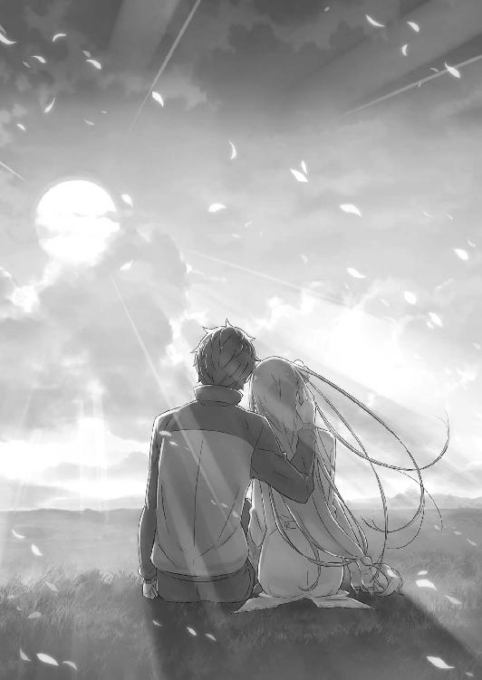
幕間 『竜車でのひと時』
──からからと、竜車は静かな音を立てながら街道を進んでいく。
加護に守られた竜車の中、スバルは実は初めてとなる穏やかな旅路を楽しんでいた。
スバルの竜車経験は常に慌ただしく、平穏な旅程はこれが初めてのことだ。唯一、初めて王都へ向かった際の穏当な旅は、スバルが勝手に過酷にして台無しにしていたので。
そして、その初めての体験なのだが──、
「なんかさ......ペトラ、近くない？」
「だって、さっきまでお姉ちゃんが独り占めしててズルかったし、いいでしょ？」
そう言って、苦笑するスバルをくりくり眼で見上げるのはペトラだ。
彼女はスバルの左隣に座り、出発からずっとスバルに寄り添って離れずにいる。
「えっと、違うのよ、ペトラ。さっきはスバルと、そう、大事な話があっただけで......」
「べー。わたし、お姉ちゃんには絶対に負けないから」
と、顔を赤くして言い訳するのはエミリアだが、ペトラは聞く耳を持たない。ただ、二人の態度には本気で嫌い合うような気配はなく、むしろじゃれ合いの延長のようなやり取りに見えて、スバルは唇を綻ばせた。
「エミリアたん、子どもの言うことだよ。笑って笑顔でスマイルで受け流さないと」
「ダメよ。子どもが相手だからって、そんなちゃらんぽらんな態度はできません」
「ちゃらんぽらんってきょうび聞かねぇな......」
「むぅ、またそうやって茶化す」
エミリアが唇を尖らせて不満げにすると、子ども扱いされたペトラもスバルの袖を引いて不服そうな顔だ。その二人にスバルは「ごめんごめん」と微苦笑して謝る。
現在、スバルたちは罠のあった竜車とは別の竜車で、子どもたちと同乗して王都に向かっている真っ最中だ。子どもたちはペトラを除けば疲れ果てて眠っており、彼らの寝息とペトラのスキンシップに、正直スバルは救われていた。
なにせ現状、エミリアと二人きりにされると間が持たない。
あれだけ恥ずかしい発言の数々と告白の直後だ。返事は「待つよ」などとカッコよく言ったものの、平静に立ち返ると顔から火が噴き出しそうだった。
「スバル、変な顔してるよ？ どうかした？」
「ペトラのおかげで助かったって話。お、そういやエミリアたんを一人にしないでくれって約束も守ってくれたじゃねぇか。偉いぞ偉いぞー」
「えへへー」
見上げてくる少女の髪を優しく撫でて、スバルは二重の感謝をペトラに伝える。
もしも、ペトラや子どもたちがエミリアの手を放していれば、彼女はまた無理をして傷付いていたかもしれない。そうならず、スバルのこれまでの頑張りが報われたのも、ペトラを始めとした周りのみんなのおかげに他ならない。
本当に、周囲に恵まれた。恵まれすぎていた。
「落ち着いたら、お礼を言わなきゃいけない相手が多すぎるな......」
クルシュ陣営には大感謝、アナスタシア陣営にも『鉄の牙』の助勢や、癪だがユリウスの協力にも助けられた。白鯨関係ではラッセルにも世話になったし、最後の場面ではオットーにも借りを作った。やらなければならないことがたくさんある。
「考えなきゃならねぇことも山ほどあるよなぁ」
白鯨と『怠惰』の討伐における論功や、クルシュ陣営との同盟の件。不在のロズワールへの責任の追及や、アーラム村への補償や事後処理の諸々が残されている。
前途は多難──特に、スバルには最大の山となる『お話し合い』があるのだ。
「あー、その、エミリアたん。......すごく、大事なお話があるんですが」
「うん、なぁに？」
畏まって切り出すスバルに、振り返るエミリアの瞳は信頼に満たされている。
その双眸に宿る感情を見ると、スバルは自分が成し遂げたことの実感を得られた。それと同時に、この後の発言でどんな風に瞳が変化するか、考えるのが正直怖い。
スバルがエミリアに伝えるのを避けられない問題──それは当然、レムのことだ。
今回のループにおいて、レム以上にスバルのことを一途に助けてくれた存在はいない。
レムの深い愛情と献身はスバルの一度は折れた心を優しく癒し、再び運命と戦うために立ち上がる気力を呼び戻してくれた。
──レムがいてくれなければ、今のスバルはどこにもいない。
だからこそ、レムに対して抱く情動はスバルにとって、また特別なものだった。
それはエミリアに向けるものと違えども、比べることのできない大きく強い感情だ。
なので、この時点でスバルは決めている。──最低の発想ではあるとわかっていて。
「ものすごく言いづらいことなんだが、聞いてほしい。もちろん、ラムにもおんなじ報告をしてぶっ飛ばされるのは覚悟なんだが......最初はエミリアたんに」
「......うん？」
口ごもり、妙な前置きをするスバルにエミリアが困惑顔をする。
その様子に決心が鈍りかけるが、魔女教と戦った勇気を奮い立たせて覚悟を決めた。
脳が最高速で回転し、『死に戻り』で培った全てを動員して最適解を導き出せ──。
「実は......レムの、話なんだよ。レムがその、俺のことを......な、なんとなくわかるじゃん？ それで、まぁ、色々と言ってくれてるわけですよ......」
じりじりと、汗が額に滲むのを感じながらスバルは必死に言葉を選ぶ。
勇気も覚悟も『死に戻り』の経験値も、史上最低の告白の前には何の役にも立たない。
すでに何故か言い訳っぽくなり、たどたどしく冷や汗塗れになるスバルに、エミリアは「ちょっと」と手を上げた。
「スバル、落ち着いてってば。何が言いたいのかわからなくなってるし、すごーくスバルが一生懸命なのはわかってるから。ね、良い子だからゆっくり」
「良い子だからってなんか凹む評価！ いや、俺が男らしくねぇんだ。ああ、ここはスパッといく！ その、俺がエミリアを好きだって言うのと同じように、レムも俺のことを好きって言ってくれてまして、だから！」
だから、と勢いに任せて続けて、そこで言葉が途切れる。
あれだけ全力で想いを打ち明けたあとに、何を告白するのかとエミリアの方も驚いているはずだ。そう思うと彼女の反応が怖い。おそるおそる、様子を窺う。
「────」
しかし、エミリアの反応はスバルの想像とは全く違った。
エミリアはスバルの言葉に眉を寄せ、思案げに唇に指を当てて黙っている。それは、今の発言を吟味して、スバルへの怒りを溜め込んでいる。──そんな雰囲気ではない。
「スバル」
「はい」
名前を呼ばれて、スバルはエミリアの方を真っ直ぐに見る。
エミリアもまた、スバルの覚悟の眼差しに真っ向から向き合った。ただし、それは困惑を含んだものであり、そう反応されるのはスバルには理解できないことで。
そして、次の一言こそ、スバルの理解を本当の意味で越えた言葉で──。
「──レムって、誰のこと？」
断章 『ナツキ・レム』
１
──晴れ渡る空の下、盛大に泣き声が響き渡っていた。
女の子の、赤ん坊の泣き声だ。それはもう、気合いを入れて全霊で泣き喚いている。
自分の感情を全力で表現できるのは、赤ん坊ならではの特権だ。そんな感傷を抱いて、それがいかにも若さのない発想であったことに自分で愕然とした。
「これが若さへの憧憬......俺も、スピカみたいに童心に返って泣き喚くべきか？」
「天下の往来で大の大人がそんな状態になられたらフォローできねぇよ!?」
年齢を実感するスバルの呟きに、隣にいた少年が大げさに突っ込む。と、そのやり取りにスバルの腕の中の赤ん坊──スピカと呼ばれた少女が大きく息を吸い込み、
「ぁ──っ!!」
「うおお！ スピカが泣いた！ おいこらリゲル、てめぇ兄貴だろ！ なんとかしろ！」
「それ言い出したらあんたの方がよっぽどどうにかできなきゃマズいだろうが！」
往来のど真ん中で、男二人が赤ん坊を中心にぐるぐる回って責任を押し付け合う。
その騒がしさに道行く人々の注目が集まるが、騒ぐ三人が誰なのか気付くと「いつものことか」とばかりに興味が失せる。結果、泣く女児と泣かす男二人はそのままだ。
微笑ましくもやかましい光景、その真ん中でスバルは掌で顔を覆った。
「こんだけ女の子がぴーすか泣き叫んでるってのに、助け船を出す人間が一人もいないとか......クソ、人心はそこまで荒んだか！」
「世を儚んでる場合じゃねぇって！ このままじゃ、戻ったときになんて言われるか」
「誰が戻ったら、なんですか、リゲル」
「そんなの決まって......」
リゲル、と呼ばれた少年は言葉を切り、そこで愕然として振り返る。そのリゲルの視線を辿り、少年の後ろに立つ人影にスバルは「お」と眉を上げた。
「買い物、終わったの？」
「はい、滞りなく。......こっちは大変だったみたいですね」
「いや、スピカ超元気だわ。これ、自分で駆け回れるようになったら男を振り回すタイプに育つね。早くも小悪魔系に育つ将来性が垣間見えて、俺ドキワクするよ！」
減らず口を叩くスバルに抱かれたスピカは、正面に立った女性に紅葉のような小さな手を伸ばす。チェンジ、と言われた気がしてスバルは寂しい。
「とはいえ、また泣かれても困りもの。なんで、任せた」
「任されました」
口調こそ悪ふざけが抜けないが、赤ん坊を渡すスバルの手つきはひどく優しい。
宝物を扱うような手つきに、スピカを受け取る女性は薄く微笑んだ。そして、彼女はしっかりスピカを胸に抱き入れて、その体を軽く揺すりながら赤ん坊をあやす。
「はい、ダメなお父さんとお兄ちゃんですね。スピカも早く大きくなって、二人を叱ってあげられなきゃいけませんよ」
「おいおい、言葉もわかんない今から英才教育するのやめようぜ？」
悪ふざけのあとで、腰に手を当ててぷりぷりと怒る彼女とスピカの二人に挟まれる未来図を思い浮かべる。リゲルと一緒に怒られるその光景は──、
「あれ、なんか思ったより悪くないな。悪くない、悪くないよ！ むしろ幸せな未来像な感じがすごくてにやけてくるかもしんない」
「オレはやだよ。妹に怒られるとか、兄貴の面目丸潰れじゃんか」
「俺と一緒にバタバタしてる時点で潰れてねぇ面目なんかねぇよ。見える、見えるぞ......妹好きすぎて甘やかしまくり、尻に敷かれるお前の未来が。このシスコン大王が！」
「自分が尻に敷かれてるからって一緒にすんな！ オレは絶対にそうならねぇ！」
指をワキワキさせて煽るスバルに、青筋を立ててリゲルが反論する。が、そのリゲルの発言に、スピカを抱く青い髪の女性が眉を顰めた。
「リゲル。──さっきからお外でなんて口の利き方をするんですか。目に余ります」
「う、でも、だって......」
「でももだってもお母さんは嫌いですよ。それに、さっきの言葉も間違ってます」
口ごもるリゲルを容赦なく叱り、彼女は腕の中のスピカの頰に口付けすると、
「お母さんはお父さんを尻に敷いたりしてません。お父さんはいつだって、お母さんの一番なんですから」
頰を赤く染めて、天下の往来で泣き喚くより恥ずかしい発言──。
それを堂々と言い切る母親に、リゲルは今度こそ両手を上げて匙を投げた。スバルも、その断言にむず痒くなって頰を搔く。
そんな愛すべき家族たちの反応に、彼女は幸せそうに長い髪を押さえる。
空を映したようなレムの綺麗な青い髪が、そよ風に撫でられて柔らかに揺れていた。
２
カララギ都市国家、都市バナンの一角──遊具の点在する公園の隅、設置されたベンチに座りながら、スバルはぼんやりと園内の様子を眺めている。
正面、短い青髪を逆立てたリゲルが、友人たちと楽しげに公園を駆け回っている。父親には生意気盛りだが、そうした姿には歳相応の可愛げがあるものだ。
「あとはあの人殺してそうな目つきの悪さだけどうにかなればな」
「ダメですよ。あの目つきの悪さもリゲルの一部なんですから。あんなに楽しそうにしていても、どんなに喜んでいても、知らない人が初めて見たら不機嫌に悪巧みしているように見える顔。──それが、リゲルなんですから」
「聞こえてるし、母ちゃんのフォローの方がだいぶ傷付いたよ!?」
スバルが流行らせた『氷鬼』で遊びながら、鬼に捕まって氷漬け状態のリゲルが怒鳴り声を上げる。スバルとレムは夫婦揃って、可愛い息子を煽るように手を振った。
青筋を浮かべて不満げなリゲル、その凶悪な顔立ちは幼い頃のスバルにそっくりだ。
「つまり、あいつの未来はすでに俺という形で予知されてるわけだ。俺があいつの立場だったら戦慄するぜ。......二十年後、俺になるって言われたらな」
「料理上手で家事万能、甲斐甲斐しく尽くして夫を立てる、理想的で素晴らしいお嫁さんがもらえる......という将来になるんじゃないですか？」
「なにそのリア充、爆発しろよ。あ、俺だった！」
頭に手を当てて舌を出すスバルに、レムが堪え切れずに小さく噴き出す。
「そうやって否定しないで褒め殺していると、レムは調子に乗ってしまいますよ？」
「褒め殺したことになるか？ ホントのこと言っただけだぜ。俺、マジ、リア充」
むしろ、スバルが本気でレムを褒め殺そうとしたらあの程度では全く足りない。
ただ、昼下がりの公園ではご近所様の目もある。惚気話を始めては、明日の井戸端の話題を独占してしまいかねない。それも悪くないが、今はこの幸せを満喫していたい。
遊んでいる息子、娘を優しく抱く妻。その隣で、スバルはなんだか眠くなってくる。
「──あれ」
「眠たいのなら、レムの肩にどうぞ。胸の中は今、スピカが独占してますから」
片目を開けると、いつの間にか隣に座るレムの肩に頭を乗せていた。すぐ近くにレムの香りと温もりを感じて、スバルは頰を緩めながらスピカの方を見る。
父親譲りの黒髪に、母親譲りの愛らしい顔立ち。無垢で繊細な、愛おしい命だ。
「おのれ、スピカ。愛娘とはいえ、俺の聖域を占領するとは恐ろしい策士だぜ」
「レムの胸を独占するのは夜まで待ってくださいね」
「今、ここお昼の公園だから発言には気を付けようね、って......」
大胆発言にスバルが目を剝くと、言った張本人が顔を真っ赤にしている始末だ。
「俺の嫁、超可愛い」
「日々、愛されておりますので」
見つめ合うのもこそばゆく、スバルはお言葉に甘えてレムの肩に頭を預ける。さらさらと揺れる青い髪がやけに気持ちよく、スバルは無意識に頰擦りする。
「くすぐったいですよ、あなた」
「あ、ごめん、なんかすげぇ気持ちよくて。スピカ見習って大人しくしてる。落ち着かないのはリゲルだけでいいや。うわ、リゲルこっどもー」
「聞こえてんだよ、バカ親父！ いちいち引き合いに出すな！」
「リゲル、妹が寝てるんですからもっと気を遣ってください」
「腑に落ちねぇ！」
凍ったままのリゲルが理不尽に叫ぶが、家族の誰もフォローしない。付け加えれば、誰も凍ったリゲルを助けにこない。とことん弄られポジションだ。
外見と言動がスバル似なのに、周りの子にはぶられていないのは人徳だと思うが。
「スピカはああなっちゃダメだぞー。あれはお兄ちゃんの芸風だ。まぁ、お母さん似のお前の将来は明るい。あとは俺みたいなダメ男に捕まらないのを祈るだけ」
「あなたの代わりなんてどこにもいません。レムのあなたは世界一です」
太鼓判を押してくれるレムに苦笑し、二人の間にしばしの沈黙が落ちる。だが、それは決して嫌な沈黙ではない。麗らかな日差しの中、友達にからかわれる息子を遠目に、娘を抱く妻に寄り添って自分はうたた寝。──それは、甘く幸せな時間だ。
「──スバルくん」
ふと、名前を呼ばれてスバルは閉じていた瞼を開けた。ちらりと視線を上げれば、レムの透き通る薄青の瞳と目が合う。潤んだ瞳に、スバルは唇を緩める。
「......その呼び方、久しぶりだな。もうずっと、『あなた』か『お父さん』だったのに」
「────」
体を起こしたスバルの言葉に、レムが震える唇を引き結ぶ。
そのレムの顔は、数年前の『逃げてきたばかりの頃』には頻繁に目にしていた。レムは隠していたつもりでも、スバルは気付いていた。ずっと、彼女を見ていたのだから。
風を浴びながら、スバルは目を細める。今日、家族で出かけようと誘ってきたのはレムだった。その意図がどこにあるのか察しはついている。何故なら──、
「あの日から、今日でもう八年だもんな」
「......気付いていたんですね」
「そら、俺にとっちゃ......いや、俺たちにとっちゃ大転機の日だぜ？ 気付くし、覚えてるってか忘れねぇ。──忘れられねぇよ」
運命に屈した日。全てを投げ捨てて、レムと二人で逃げ出してきた日。
何もかも諦めるつもりで、でもたった一つだけは諦められなかった日。
あの日の決断と、彼女の愛──それがあったから、スバルは今、こうしていられる。
「スバルくんは......」
懐かしい呼び名は、二人でカララギに逃げてきて以来、レムが意識的に呼ばなくなったものだった。それは、置き去りにしてきたものへの決別の儀式だったのだろう。
今日まで、あえてその真意を問い質したことはなかったし、レムもその理由をスバルに語ることはなかった。その、ずっと続けてきた儀式が、今日、解かれたのは──、
「後悔、していませんか？」
「後悔？」
「はい。逃げてきたこと。諦めてしまったこと。投げ捨ててしまったこと。レムを......」
「選んだこと、とか言ったら超怒るぜ。リゲルとスピカ連れて実家に帰らせていただきます！ あ、リゲルはやっぱいいや、置いてく」
向こうでリゲルが凶悪な顔をするのが見えたが、スバルは「今、大事な話してるから」と息子を千尋の谷に突き落とす。それから、「あのさ」とレムに向き直った。
「八年も経って超今さらだし、こんなこと何回も何十回も何百回も言ってるからどんだけ効果があるのかわかんねぇけど」
「はい」
「俺はお前を、世界で一番愛してる。俺の嫁はお前だけで、お前の男は俺だけだ。お前は俺みたいな男が、妥協して手に入れられるような安い女じゃねぇよ」
見つめ合い、スバルは指先でレムの額を軽く弾く。そして、驚く彼女に顔を近付け、
「あの日の誓い通り、俺の全てはお前のものだ。お前に尽くす。お前に捧げる。お前のためだけに生きる。──今は、俺とお前の子どものためってのも増えてる」
鼻先に皺を寄せ、目をつむるレムの唇を奪った。
触れるだけの口付けを交わし、息がかかる至近でスバルは笑みを浮かべる。それだけは年齢を重ねても変わらない、悪戯小僧のような子どもっぽさのままで。
「それじゃ、安心できねぇか？」
「......ごめんなさい。レムはいつでも、不安なんです。だって、どんどんスバルくんを好きになる。これ以上に幸せな時間なんてないって思っているのに、もっともっと幸せにされてしまいます。幸せで、好きで、だから不安なんです」
瞳に涙を浮かべて、幸せだと言い切りながらレムは小さく首を振る。首を振って、スバルの額に額を合わせて、互いの微熱を交換しながら、
「こうして触れているあなたを、いつかなくしてしまいそうで」
「安心してろ。俺はお前を離さないし、いなくなったりもしない。お前が俺に愛想を尽かさない限り、離れ離れになるこたぁねぇよ」
「レムがスバルくんに愛想を尽かすことなんてありません──」
「じゃ、ずっと一緒だ。愛してる、レム」
自分の中の感情を持て余すレムに、スバルは再び口付けた。
驚きに固まる彼女の内側に深く潜り込み、互いに熱い舌を絡ませ合う。歯列と唾液の感触を味わって唇が離れると、スバルは微かに息を荒くするレムに「そもそも」と続け、
「妥協とか馬鹿なこと言うんじゃねぇよ。じゃあ、何か？ リゲルとスピカは愛情じゃなく同情でできた子だとでも？ スピカは俺とお前の計画性に満ちた愛の結晶だし、リゲルは燃え上がる愛情と若さ故の暴走で生まれた子だぞ」
「......リゲルが生まれたときは大変でしたね」
腰に手を当てて説教するスバルに、思い出を振り返るレムは愛おしげに微笑する。
「カララギでやっと家と仕事を見つけて、ゆっくり生活を整えなきゃいけなかったのに」
「いやほら、若かったから辛抱たまらなくて」
「スバルくんも仕事で疲れていたのに、夜になるとすごく元気になって」
「いやほら、若かったから体力があり余ってて」
「正式に雇ってもらえたのと、身籠ってしまったのがほとんど一緒でしたから、あのときはレムも頭が真っ白になってしまいました」
「認めたくないものだな。自分の若さ故の過ちというものは......」
レムの怒涛の反撃に、スバルは遠い目をしながら感慨深げに呟く。
向こうでスバルに過ち扱いされたリゲルが渋い顔だが、空気を呼んで割り込むのは堪えたらしい。なかなかできた息子である。
「でも、レムはリゲルを身籠ったとき、本当にとても嬉しかったですよ」
「そら、俺だって嬉しかったよ。最初に聞かされたときは鼻水出てちょっとちびって、夢かどうか確かめようとしてレムに殴ってもらって流血沙汰したしな」
レムもそれなりにテンパっていたため、フルスイングでぶん殴られて仮住まいが傾くほどの威力で壁に激突した。久々に『死に戻り』を覚悟したレベルである。
ともあれ、レムがスバルに懐妊を報告してきたときのことは克明に思い出せる。あのときの、スバルの胸に湧き上がった温かな思いも全て。
しかし、レムはそんなスバルの言葉に「違うんです」と首を横に振った。
「レムの嬉しいは、きっとスバルくんのものとは違います。レムの思った嬉しいは......これで、スバルくんを失わなくて済むという喜びでしたから」
「────」
「リゲルは、レムとスバルくんの間に確かな形で生まれた絆です。言い方はとても悪いですけど、赤ん坊ができたことでレムとスバルくんの間には、決して切り離せない確かなものが繫がれた。......それがレムには嬉しかったんです」
不安な日々が、ずっと彼女には圧し掛かっていたのかもしれない。
これまでの積み重ねも何もかも捨てて、新天地に自分と相手の二人だけで逃げ込んできたのだ。もはや互いしか縋るものがない日々の中、レムはいつまたスバルを失うかわからない恐怖にずっと怯えていた。
レムの自分に対する自信のなさは、スバルといい勝負できるレベルのものだ。
過小評価が過ぎるレムにとって、スバルとの生活は極限の幸せと不安が表裏一体になったもので、祝福と恐怖に延々と苛まれ続けていた。
そんな時間に終止符を打ったのが、二人の間にできた新たな命──。
「信じられなかったか？」
「いいえ。レムはスバルくんをこの世の誰より信じています」
「違うよ。俺を信じられなかったんじゃなくて......自分を、信じられなかったのか？」
スバルの否定の言葉に、レムは小さく息を吞み、それから頷いてみせる。
彼女の中でスバルの存在は不相応に大きい。そのスバルに並ぶ自分自身が、レムには殊更小さく思えて不安なのだろう。
──同じだけの不安をスバルもずっと抱えていることに、気付けないぐらいに。
夫婦揃って筋金入りの過小評価主義、そう苦笑するスバルにレムが頰を膨らませた。
「いいんです。レムがバカだったんです。笑われたって仕方ないくらい......」
「違う違う。改めて思っただけだよ。俺とお前は性根の部分がそっくりで、そんでもって俺の嫁はやっぱり世界一可愛いって」
スバルの不意打ちの告白に、レムは一瞬だけ驚き、ポッと顔を赤くする。その反応に胸が温かくなり、スバルは自分がレムを愛していることを実感できた。
世界一、レムのことを好きでいる。愛している。声高に、叫ぶこともできる。っていうか、実際たまにしている。ご近所でも有名な熱々夫婦だ。
「──リゲル、スピカ」
「ん？」
ふと、レムが愛おしげに二人の子どもの名前を呼ぶ。
首を傾けるスバルにレムは「いえ」と言い、上目遣いにスバルを見つめた。
「どっちも星の名前でしたよね。スバルくんの住んでいた場所の、星の呼び方」
「そそ。俺の親父は基本的に残念な性格してたけど、俺を昴って名付けてくれたことは素直に感心してる。気に入ってんだよ、名前。スバルってのも星の名前でさ」
小学校の頃、自分の名前の由来を調べるという課題で、スバルは自分の名前の由来が夜空の星にあることを知った。以来、星の図鑑を眺めるのはスバルの趣味になった。星の名前は一通り知っているし、何かに名前を付けるときはいつも──、
「星の名前から取る、ってな。ネットのハンドルネームも星の名前だし、偽名とか名乗るとしてもたぶん星から取るね。これもある意味、キラキラネーム!?」
「どういう意味かはわかりませんが、星の名前から取るのは素敵だと思います。三人目が生まれてきても、きっとそうしましょうね」
「今から三人目の話とか気が早くね？ スピカ、まだ乳児だよ？」
「授乳のとき以外はリゲルに任せられると思います。何のために、リゲルが大きくなるまで次の子ができないように注意したと思ってるんです？」
「俺の陰で目立たないけど、レムも結構リゲルに対してガンガンいくよね!?」
妻の息子への日常的な接し方に苦笑して、スバルは尻を払うとベンチから立ち上がる。そして、こちらを見上げるレムに手を差し伸べた。
「そろそろ帰ろうぜ。外だと人目が気になって、思う存分イチャイチャできねぇし」
「そうですね。今はレム、久しぶりに全力全開でイチャイチャしたい気分です」
「お、鬼の体力に付き合うのって今の俺のリビドーでいけるかな......」
怖々と呟くと、手を取るレムを引っ張って抱き起す。「わ」と驚く彼女をスピカごと抱きしめると、スバルは家族の温もりを堪能した。
「んじゃ、帰ろうか。俺たちの家に、な」
「はい、あなた」
片手に買い物籠を持ち、もう片方の手はレムと繫ぐ。前を歩くスバルに半歩遅れて、スピカを抱くレムが寄り添って歩く形だ。
そうして公園の真ん中、いまだに凍り付いたままの息子の傍に歩み寄る。
「おい、一人雪祭り中の息子。あまりにも氷鬼に進展がなくて見てて退屈だから、俺とお母さんと娘は家に帰る。お前は今夜は友達の家にでも泊まれ」
「露骨に追い出しにかかりやがった！ っていうか、両親が真っ昼間の公園で堂々とキスしていちゃついてる件について」
「ざまぁ、嫉妬乙。悪いな、リゲル。このレム、俺専用なんだ」
「うぜぇ！」
煽るスバルに怒鳴ったリゲルだが、伊達に息子歴も長くない。彼はすぐ深呼吸して、
「落ち着け、オレ。親父のペースに振り回されるな。落ち着け、落ち着くんだ......よし、落ち着いた。で、母ちゃんと何の話してたん？」
「お前の名前の由来だよ。例えば、お前の名前の最初の候補はベガだったんだが」
「強そうじゃん！ なんでやめたんだよ」
「いや、これ元ネタ考えると結構きつい名前でさ。いくら俺でも、年に一回しか会えない恋人とか息子に作られてもいたたまれねぇよ。恋人大事。俺の嫁、最高に可愛いし」
「はい、スバルくんのレムです」
「オレの話題にかこつけていちゃつくのやめてもらっていい!?」
夫婦にして両親の惚気に、落ち着いたはずのリゲルは地団太を踏んで噴火してしまう。そんなリゲルの突っ込みに、氷鬼に参加している子どもたちが気付いた。
「あー、リゲル動いてるやんか！ 氷鬼の決まり破ったらあかんで！」
「げ！」
それまでリゲルを放置していた子どもたちが、ここぞとばかりにルール違反したリゲルを糾弾する。喉を詰まらせて固まるリゲル、その肩をスバルが叩いた。
「氷鬼の掟を破った奴には罰ゲームだ。それは、もう泣いたり笑ったりできなくなるまで鬼にくすぐられる地獄。──頑張れ」
「マジ顔で勝手なルール作ってんじゃ......おい、なんだよ、お前ら！ ちょっと待て！ この男の言葉を真に受けるな！ まっ、うわぁぁぁ──!!」
ぞろぞろと子どもたちが押し寄せ、リゲルは必死に逃げ出した。しかし回り込まれてしまった。そのまま地面に押し倒されるリゲルにいくつもの指が迫り──、
「さらば息子よ。お前はいい息子だったが、お前のお父上が悪いのだよ」
「リゲル。お父さんとお母さんはとても大事な話し合いがあるので、夜になるまで帰ってきちゃダメですよ。あと、角を使うのは禁止です。服は破かないように」
「お、覚えてろ、薄情両親──ッ！」
四方から迫ってくる指に弄ばれて、悲鳴のようなリゲルの笑い声が公園に響く。兄のそんな笑声に、スピカもキャッキャと楽しそうに笑い出した。
なかなか将来有望な感性をしている。きっと、スピカの成長はナツキ家におけるリゲルの立場をさらに盤石なものへと変えることだろう。
愛してやまない愛息子に、ちょっとばかりひねくれた形で愛情を示して、スバルはレムの手を引きながら歩き出す。
大切な家族と過ごす、安らぎと幸せに満ちた我が家へ──。
「スバルくん」
「ん？」
ふと腕を引かれ、足を止めてスバルは振り返る。
途端、強い風がスバルとレムの間を吹き抜けた。思わず目をつむり、その風がやんでからゆっくりと目を開く。
──レムの長い青髪が風になびいて、日の光に溶けるように煌めいていた。
髪を長く伸ばすようになったレム。それが誰に対抗したものだったのか、今のスバルにはなんとなくわかっている。そして、長い髪の女性を連想するとき、一番最初に浮かぶのはもう、目の前の世界で一番大切な彼女であることも。
長い髪が静かに流れ、腕の中の愛娘を抱き直すレムがスバルに笑いかける。
それはこの上なくスバルにとって愛おしい、最愛の微笑みであった。
「レムは今、世界で一番──幸せです」
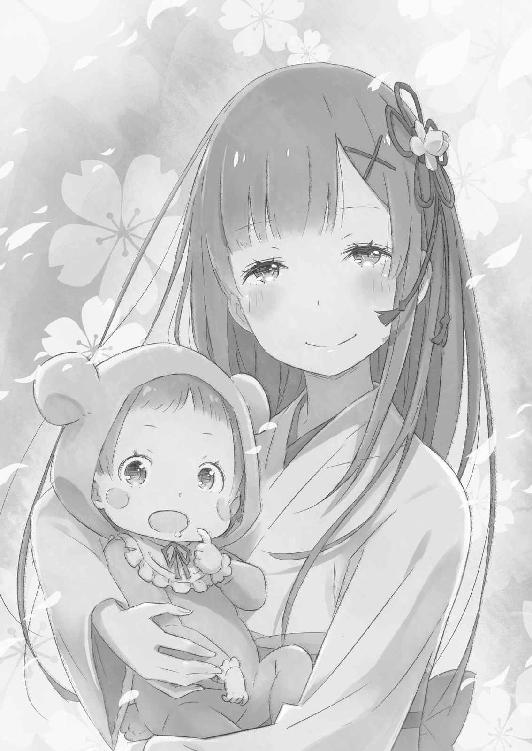
幕間 『イタダキマス』
１
──街道を行く竜車の揺れに身を任せ、レムはただ彼のことを想っていた。
眩い朝日と温い風に目を細め、俯いていたレムはゆっくりと顔を上げた。
正面、隊列を組んでいるのは王都へ引き上げる竜車の群れだ。竜車には白鯨討伐戦に参加した負傷者が乗せられており、最低限の治療を受けただけの重傷者も少なくない。
だが、隊の雰囲気は陰鬱と程遠く、宿願を果たした達成感に満ち溢れていた。
彼らにとって、今の王都への道途は凱旋のようなものだ。傷の痛みなど、長年の悲願を成し遂げた満足感の前には屁でもない。実際、切り取られて運ばれる白鯨の頭部を王都に持ち帰れば、その奮戦は人々に称賛を以て迎えられることだろう。
そんな彼らの感慨と裏腹に、レムはこの場にいない少年のことが気掛かりだった。
「──浮かない顔をしているな、レム。やはり心配は尽きないか」
「......クルシュ様」
声に隣を見れば、レムのすぐ横に座るのはクルシュ・カルステンだ。
軽鎧の下に包帯を巻いた彼女は、その振る舞いに傷の影響を微塵も感じさせない。が、凛々しい面差しにも、さすがに微かな疲れが残っていた。
愛竜ではなく、竜車に乗せられているのも周囲にそれを危ぶまれてのことだ。
しかし、クルシュは瞬き一つでその疲れを切り捨て、レムに頷きかける。
「フェリスとヴィルヘルム、同行した討伐隊の勇士も精鋭だ。リカードら『鉄の牙』の助力もあろう。......それに、アナスタシア・ホーシンが別の手を打っていないとも考えにくい。魔女教の戦力は未知数だが、負ける布陣ではない」
「それでも、心配になってしまうのは身勝手なのでしょうか」
「不安の種はいくら潰しても尽きぬものだ。その原因が己にあるなら、自らの覚悟や研鑽でどうとでもなろう。だが、相手あってのこととなるとそれも難しい。──気休めを言うのは得意ではない。許せ」
憂い顔を深めるレムの様子に、クルシュは自分の失言を悟って目を伏せる。
途端、それまで超然としていた女性が身近に感じられて、レムは思わず微笑してしまった。その微笑みに、クルシュは「それでいい」と顎を引く。
「ナツキ・スバルも言っていた。レムには笑顔の方が似合う、とな。傍から聞けばとんだ惚気話と思ったものだが、存外馬鹿にしたものではない」
「クルシュ様も、笑われたら雰囲気が変わりそうですね。普段は凛々しくいらっしゃるから......きっと、微笑まれたら素敵だと思います」
「......そうだな。私は笑うのが下手な女だ。そのことを後悔して、今もなお変わらず」
レムの指摘に、クルシュが視線を逸らしてそう呟く。彼女の口元に刻まれるのは笑みだが、それは微笑みとは呼べない自嘲によるものだ。
そのクルシュが見せたささやかな自己嫌悪にレムは驚く。
常に勇壮で凛としたクルシュは、いつも自信のないレムにとって理想の女性像の一つだった。レムにとって一番の理想は姉であるラムに他ならないのだが。
ただ、そのことに言及する前に笑みを隠し、クルシュは話題を変える。
「ナツキ・スバルたちだが......エミリアの出自が出自だ。魔女教の脅威は最初から予想されていた。メイザース辺境伯も、そのための用心はしているはずだろう？」
「ロズワール様のお考えはレムにはわかりかねます。ですから、探られても無駄ですよ」
「手厳しいな。今は同盟相手なのだから、少しは口を滑らせても構うまいに」
冗談めかした言い方は、正しくレムへの気遣いだろう。実際、クルシュがこうして話しかけてくれるおかげで、レムは不安の沼に沈み込まずに済んでいる。
それに、クルシュの推測はもっともなものだ。ロズワールならば、今回の一件にも何らかの対策をしているに違いない。スバルの行動はロズワールを助けることになり、不幸にも貶められた彼の名誉もきっと回復することになる。
否、すでに白鯨討伐への協力により、名誉は回復どころかより高く響くはずだ。
──英雄ナツキ・スバル。
それは彼に心と未来を救われたレムにとって当然の評価であり、今後もスバルが打ち立てていくだろう輝かしい功績の正当な評価に他ならない。
そしてその輝きの傍ら、時々振り向いてもらえる位置に自分の存在があれば、それ以上のことをレムは何も求めない。それだけでレムは満たされる。
スバルのことを想うとき、レムの心はいつも複雑な感情でいっぱいになった。
温かくなって、安らいでいくような。それなのに不安でどこか苦しくなって、心配でハラハラさせられてしまうような。
そうして心に一喜一憂を絶えず与えてくれるのも、スバルだけなのだけれど。
「本当に......スバルくんは困った人なんですから」
薄く微笑み、レムは脳裏に浮かぶ想い人の姿へ愛おしげに囁く。
その横顔に安心したように、クルシュは自分の長い髪を背中に流すと、無言で竜車の進路に目を向け──琥珀色の瞳が、ふいに細められた。
「──む」
クルシュが小さく唸るのと、レムが異音に気付いて顔を上げたのは同時だった。
琥珀色の瞳は前方の竜車を捉え、レムの気付いた異音も同じ方角から届いた。その二つの異変は、直後に一つの切っ掛けへと結び付く。
──クルシュの正面で、前方の竜車が突如として『崩壊』した。
文字通り、それは崩壊だ。竜車はふいにその全体を圧倒的な衝撃に吞み込まれ、原形をなくして吹き飛ぶ。レムにはその崩壊の音が、まるで雨音のように聞こえた。
血霧が噴き上がり、竜車は一瞬で血の惨状へ変貌する。
地竜も、竜車も、車内にいたはずの負傷者たちも、一切合切が根こそぎ、全く容赦のない破壊によって粉微塵にされていた。
「──ッ！ 敵襲!!」
衝撃への動揺を刹那でねじ伏せ、クルシュは隊列に警戒を呼びかける。即座に討伐隊の戦士たちは異変を察し、襲撃に備えて武器を構えた。レムもまた、肉体の疲労を無視して鉄球を手に立ち上がる。──そして、血霧の向こうに人影を見た。
無手。無防備。無警戒。それは無慈悲で無邪気で無作為で無遠慮な悪意──。
「──轢き殺せ!!」
クルシュが御者台に怒鳴り、それを聞いた騎士が首肯する代わりに手綱を唸らせた。嘶く地竜が加速し、竜車が獲物を轢殺しに吶喊する。それは狙い違わず棒立ちの人影に直撃し、避ける素振りもない相手を吹き飛ばして──、
「クルシュ様──！」
叫び、レムはクルシュの細い腰を摑んで竜車から横っ跳びに離脱する。御者台の騎士に手は届かない。口惜しさにレムは歯嚙みし、直後に声を聞いた。
「まったく、やめてほしいなぁ。何もしてないのに轢き殺せだなんて、とてもじゃないけど真っ当な人間のすることとは思えない」
それは、昼下がりの公園をのんびり散策でもしているような穏やかな声だった。
実際、公園でその言葉を聞いたならレムもここまで戦慄などしなかっただろう。だがその声は、血飛沫を撒いて竜車が砕け散る惨状で放たれたものなのだ。
──それは一見、何の変哲もない人物だった。
体格は中肉中背で、長くも短くもない天然の白髪。頭髪に合わせた白い衣服は華美でも貧相でもなく、顔にも特徴のない、いたって平凡な見た目の男だった。
だが事実、その男に接触した地竜は吶喊した勢いのまま半分に千切られ、御者台にいた騎士も砕けた竜車と区別もつかないほど一緒くたに破壊されている。
そしてレムが最も戦慄したのは、その惨状をものともしない男の態度ではなく、竜車を砕いたはずの男が『ただ立っていただけ』だったことだ。
男は何もしなかった。ただ立っているだけで、竜車との正面衝突に打ち勝ったのだと。
「礼を言おう、レム。助けられた。......だが、状況は良くなっていないな」
硬直したレムの腕から、抱き寄せられていたクルシュが起き上がる。彼女は無手のまま男を警戒し、四散した竜車の血溜まりに痛ましげな目を向けた。
「私の臣下に、よくもこれほど惨いことを。......貴様、いったい何者だ」
鋭い戦意を瞳に宿し、クルシュは硬い声で男に問うた。そのクルシュの問いを受け、男は自分の顎に手を当てると頻りに頷く。
「なるほどなるほど。君は僕のことを知らないわけだ。でも、僕は君のことを知ってる。今や王都......いいや、国中が君たちのことで盛り上がっているからね。なにせ次代の王様候補だ。世情とか肩書きっていうの？ それに興味のない僕であっても、それが途方もない大きなものを背負う覚悟ってぐらいは想像がつくさ。大変そうだよね」
「ぺらぺらと無駄口を。──質問に答えろ。次は斬る」
「ひどい言い分だなぁ。でも、それぐらい横柄でなきゃ国なんかとても背負えないかもしれないよね。その感性は僕には欠片も理解できないけど。ま、好き好んで王位なんて重すぎる責任を背負い込もうなんて考えがわかるはずないか。あ、理解できないからって否定したりしないよ？ 僕の方こそ、そんな横柄さとは無縁さ。僕は君と違って......」
長々と、男はクルシュの要求を無視してよく滑る舌で話し続けた。だが──、
「──次はないと、そう言った」
クルシュが冷徹に言い切るのと、彼女の腕が風の刃を振るったのは同時だった。
風の魔法と『風見の加護』を組み合わせた剣技──クルシュの『百人一太刀』だ。
不可視の斬撃が男を撫で斬り、当人に斬られたことすら気付かせずに絶命させる。
クルシュの初陣──かつてカルステン公爵領で魔獣『大兎』が出現した際、領地の被害を未然に防いだ逸話を支える『戦乙女』の剣力だ。
白鯨の分厚い皮膚さえ切り裂き、その巨体を落とすことに大きく貢献した剣撃──あの魔獣の質量と比較すれば、男の肉体が耐えられるはずなどない。
なのに──、
「......人が気持ちよく喋ってる最中に斬りかかるなんて、どんな教育を受けたの？」
首を傾げて、斬撃を浴びた体を軽く払ってみせる男がそこにいた。
男は白鯨をも切り裂く斬撃に微動だにせず、その肉体には──否、肉体どころかその衣服にすら刃を受けた痕跡が残っていない。
斬撃が防がれた、単純なその結果とは全く違う未知の現象だ。
クルシュが息を吞み、レムもまた常識の埒外の結果に身を硬くする。その二人の前で男はこれ見よがしに嘆息し、「あのさぁ」と苛立たしげに前髪をかき上げた。
「僕が喋ってるわけ。喋ってたでしょ？ それを邪魔するってのはさ、おかしくない？ 喋る権利なんて主張する気はないけどさ、喋ってる人がいたらそれを邪魔しないなんて常識じゃない。そりゃ、聞く聞かないはそっちの自由だから文句は言わないけどさ、言わせないって判断するのはさすがにどうなの？ どれだけ自分本位って話でしょ？」
早口に言いながら、男は不機嫌に爪先で地面を叩き始める。そのまま彼は不気味さに押し黙る二人を指差し、さらなる苛立ちに舌打ちした。
「今度はダンマリ、それもどうなのかなぁ。聞いてるじゃん。聞いたわけじゃん。質問したじゃない。されたら答えるでしょ、そういうものでしょ。それもしない。したくない。ああ、自由さ。それは君たちの自由だとも。それが君たちの自由の使い方ってわけだ。いいよ、好きにしなよ。でもさ、それってつまりこういうことだよね？」
男が前のめりになり、その狂的な双眸の光が強まった。そして──、
「それは僕の権利を──数少ない私産を、蔑ろにするってことだよねえ？」
悪寒がレムの背中を駆け上がった次の瞬間、男が動く。だらりと無造作に下げられた腕が振り上げられ、微かな風が巻き起こった。
直後、男の腕の直線上──大地が、大気が、世界が、割れた。
「────」
くるくる、くるくると、肩で切断されたクルシュの左腕が宙を舞う。
不可視の剣を構えた姿勢のままに腕が飛び、血飛沫をまき散らして地面に落ちる。衝撃にクルシュの体が崩れ落ち、激しい痛みと出血に痙攣が始まっていた。
「クルシュ、様──」
数秒、呆気に取られたレムは我に返るとクルシュに飛びつく。それから失血するクルシュの傷に手を当て、なけなしのマナを振り絞って止血と治療に全力を注いだ。
クルシュの腕は、肉と骨、神経に至るまでが惚れ惚れするほど鮮やかに切断されていた。その恐るべき切れ味は、場違いな感嘆を禁じ得ないほどだ。
「フェリ、ス......う、あぁ、う？」
レムの腕の中、クルシュは視線をさまよわせながらうわ言を口にしている。彼女の右手はレムの足を摑み、その骨が軋むほど強く握りしめてきていた。
クルシュの生き足搔く力に歯を嚙んで耐え、レムは眼前の男の凶行に目を光らせる。
不可解な男の攻防、その正体はレムには全くわからない。負傷したクルシュを庇い、男から逃れる手立てを思考しながら、ふとレムは違和感に気付いた。
──この状況下で、他の騎士たちが戦いに参戦してこないことの違和感に。
「あァ......いっくら食べても喰い足りないッ！ これだから俺たちは生きることをやめられないんだ。食って、食んで、嚙んで、齧って、喰らって、喰らいついて、嚙み千切って、嚙み砕いて、暴飲！ 暴食！ あァ、ゴチソウサマでしたッ！」
それは直感と同時、背後から届いた甲高い少年の声だった。
目の前の男と同質の悪寒に、レムは愕然となりながら振り返る。そして背後、停車した竜車の群れの中央で、倒れる騎士たちを足蹴にする血塗れの少年の姿を見た。
濃い茶色の髪を膝まで伸ばした、背丈の低い少年だ。身長はレムと同じか低いくらいで、年齢も二、三歳下だろう。不衛生な髪の下にはボロを纏った矮軀があり、剝き出しの手足は泥と垢、そして大量の返り血で汚れ切っていた。
少年の足下に転がる騎士は誰一人動かない。白髪の男がクルシュに攻撃を浴びせる一方で、周りの騎士たちはこの少年一人に壊滅させられたのだ。
「あなた、たちは......」
その戦いの気配すら感じられなかったことに、レムは呆然と唇を震わせた。
前後、異様な気配の相手に挟まれ、レムはクルシュを抱えて後ずさる。クルシュの傷から流れる血が平原を朱に染め、レムの恐怖心を嘲笑うように空気が冷え込んでいく。
そのレムの震える質問に、男と少年は互いに顔を見合わせた。
それから二人は示し合わせたように頷くと、どちらもひどく親しげで暴力的で、悪魔のような笑みを浮かべながら、名乗った。
「魔女教大罪司教『強欲』担当、レグルス・コルニアス」
「魔女教大罪司教『暴食』担当、ライ・バテンカイトス」
２
魔女教──それも、大罪司教。
その単語を耳にしたレムが凍りつくのを余所に、興奮した様子で少年──ライ・バテンカイトスは倒れる騎士たちを見回し、愛おしげに舌なめずりする。
「やっぱり、こうして手ずから食べにくるのもいいよなァ。僕たちのペットがやられたってんできてみれば......豊作だ。いいね、いいよ、いいさ、いいな、いいかも、いいとも、いいじゃない、いいだろうともさ！ 久々に俺たちの飢餓が満たされたッ！」
「正直、君のそういうところが理解できないよね。どうして今の自分に満足するってことができないわけ？ あのさ、人は二本の腕で持てる数、自分の掌に収まるものしか持てないんだよ。それがわかれば、自然と我欲を抑えることもできるんじゃないの？」
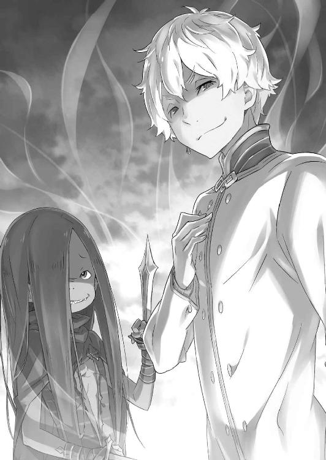
「説教は僕たちにはいらないし俺たちは嫌いだ。あんたの言うことが正しいか間違ってるかも興味ない。僕たち俺たちは、この空腹感以外はどーォだっていいんだよ」
『暴食』のバテンカイトスが涎を啜り、『強欲』のレグルスが肩をすくめる。
複数の大罪司教が同時に現れた事態に、レムは停止しそうになる頭を必死に回転させて、どうにか状況を打破しようと懸命になっていた。
戦力的に、この場で目の前の二人を叩き潰すのは不可能だ。
クルシュの止血はしたが、容態は依然として危険な状態にある。騎士たちの生死も不明で、戦力には数えられない。レム自身、なけなしのマナは治療に費やしてしまい、鬼化して戦ったとしても勝てる未来は浮かばない。
「────」
ちらと周囲を窺えば、同行していた『鉄の牙』の一団が見当たらない。獣人傭兵団の負傷者と、回収した白鯨の頭部を運んでいた一隊だ。おそらく、指揮していたヘータローが隙を見て離脱させたのだ。時間を稼げば、援軍を連れて戻るかもしれない。
──だとしても、間に合うとはとても思えなかった。
「あなたたちは......白鯨が倒されたから、ここに？ あの魔獣の敵討ちに......」
「あァ、勘違いしなくていいよ。僕たちが興味あったのは、死んだ白鯨より白鯨を殺した奴らさ。曲がりなりにも四百年、好き勝手してきたアレを殺したんだ。さぞ、熟れた食べ頃揃いって期待してたんだけど......想像以上だったッ！」
やけに鋭い歯を剝き、バテンカイトスは激しい興奮に頭を振り乱した。
「愛！ 義俠心！ 憎悪！ 執念！ 達成感！ 長々と延々と溜め込んでぐつぐつ煮え滾ったそれが喉を通る満足感ッ！ これに勝る美食がこの世に存在するか!? ないね、ないな、ないよ、ないさ、ないとも、ないだろうさ、ないだろうとも、ないだろうからこそ！ 暴飲！ 暴食！ こんなにも僕たちの心は、俺たちの胃袋は悦んでるんだからッ！」
言っている、意味がわからない。
タガが外れた様子でバテンカイトスは身悶えし続ける。引きつった笑い声が響く中、レムが無言で視線を移せば、その視線にレグルスは呆れ顔で手を振った。
「安心しなよ。僕はそこの彼とは全然違うから。僕がここにいるのはたまたまの偶然。僕は彼みたいな飢餓とか渇望っていうの？ そういう、下種な我欲とは無縁なんだ。常に満たされない哀れな彼と違って、僕はほら、今の自分ってものに満足してるからさぁ」
クルシュの腕を切り落とした腕を広げ、レグルスはレムの前で晴れやかな顔をする。
「争いとかさ、嫌いなんだよね。僕はこう、平々凡々とした穏やかで安寧の時間がずっと続けばそれで十分。それ以上は望まない。それが最善だ。僕の手はちっぽけで過ぎた欲も持たない。僕には僕という個人、そんな私財を守るだけで手一杯なんだからさ」
拳を固めて、自分の演説に酔っているレグルス。その腕の一振りで地竜と複数の人間の命を奪い、一人の女性に致命傷を負わせて何たる言い草か。
理解できない食欲に悶えるバテンカイトスも、身勝手な持論を振りかざして自己満足に浸るレグルスも、総じて異常者だ。やはり、こいつらは魔女教徒なのだ。
沸々と怒りが湧き上がり、レムはその場に立ち上がる。
死んだように眠るクルシュを横たえ、レムは代わりに己の得物を取り上げた。なけなしのマナが渦を巻き、レムの周囲に氷柱がいくつも浮かび上がる。
それを見て、バテンカイトスとレグルスの表情が変わった。
「人の話、聞いてた？ 僕はやりたくないって言ったよね？ それを聞いててその態度っていうなら、それはもう、僕の意見を無視するってことだ。僕の権利を侵害するってことだ。──それは、いかに無欲で心の広い僕でも許せないなぁ」
「言いたいことはそれで十分ですか、魔女教徒」
首を傾げるレグルスに、レムは毅然とした態度のまま言い放つ。その様子に鼻白むレグルスに対し、鉄球の鎖を鳴らしてレムは強い光を瞳に宿した。
「いずれ、必ずあなたたちを打ち滅ぼしてくれる英雄が現れます。あなたたちがどれほど身勝手で、どれほどの自己満足で不幸を生み出してきたのか、その人がきっと思い知らせてくれるでしょう。レムの愛する、たった一人の英雄が」
「へぇ、英雄。そいつァ、僕たちも楽しみだ。それだけ信じられてるってことは、さぞかしそいつも俺たちにとって美味なんだろうしさッ！」
望外の喜びに手を打って、バテンカイトスがレムを品定めするように睨みつける。
それは敵を見る目でも、ましてや女を見る目でもない。その視線に宿る情念はひたすら純粋に、食材に舌なめずりする餓鬼のものに他ならなかった。
狂気的な自我と、暴力的な飢餓の二つに向かい合い、レムは堂々と胸を張る。
「ロズワール・Ｌ・メイザース辺境伯が使用人筆頭......」
口上に自らの肩書きを名乗ろうとして、レムは途中で首を横に振った。
今この瞬間だけは、本当に名乗りたいとそう願う名前を──。
「今はただ一人の愛しい人。──いずれ英雄となる我が最愛の人、ナツキ・スバルの介添え人、レム」
額から白く美しい角が突き出し、大気に満ちるマナを搔き集めてレムに活力を与える。
全身に力がみなぎり、鉄球を握る腕が律動し、氷柱が今か今かと呼び声を待つ。
目を見開き、世界を認識し、大気を感じて、ただただ脳裏に彼を描いた。
「覚悟をしろ、大罪司教。──レムの英雄が、必ずお前たちを裁きにくる!!」
鉄球を振り上げ、氷柱が打ち出されるのと同時にレムの体が弾かれたように飛ぶ。
それを迎え撃つように、バテンカイトスはその牙だらけの口を大きく開き、
「あァ、いい気概だ。──じゃァ、遠慮なく、イタダキマスッ!!」
ぶつかる、ぶつかる、そしてその瞬間、思う。
願わくば、自分が失われたことを知ったとき、彼の心にさざ波が起きますよう。
──それだけが、レムの最後の瞬間の願いだった。
第六章 『それぞれの、誓い』
１
──寝台に横たわる少女の顔は安らかで、まるでただ眠っているだけのように思えた。
閉じた瞼を縁取る睫毛を見て、ずいぶん長いのだなとぼんやり考える。普段は意識して引き締めている表情も、寝顔になれば歳相応の幼さが垣間見えた。
考えてみれば、彼女の寝顔を見る機会など一度もなかった気がする。
いつだって彼女はスバルより早起きで、いつも自分に厳しくて、その頑なさがたまにほぐれる姿が愛おしかったのだと今さら気付く。
驚いた顔も照れた顔も、拗ねた顔も泣きそうな顔も、仲直りしてから見せてくれる微笑んだ顔も、これから何度だって機会はあったはずなのに。
「──レム」
名前を呼んで、その白い頰に触れても彼女からの返事はない。
ベッドに寝かされたレムは見慣れた給仕服ではなく、綺麗な青い髪を飾る花飾りも付けていない。メイドとしての戦装束──それは、今の彼女には必要ないのだから。
「ここにいらしたんですね」
静かで動きのない部屋、そこで無為の時間を過ごすスバルに声がかけられた。
ゆっくり振り返れば、部屋の入口に立つのは濃紺のドレスを纏った女性だ。美しい長い髪の女性は、楚々とした気品ある振る舞いでこちらに歩み寄ってくる。
ただ、その歩みには微かな戸惑いがあり、生まれ持った品位とどこかちぐはぐな印象を受ける。そしてそれは、彼女と接するスバルにも違和感をもたらしていた。
「彼女は......」
「何も変わってないですよ。何ができるってわけでもないのに、ただいただけです。我ながら不甲斐なくて、女々しい話ですけど」
「そんなことは。彼女も、それを喜んでくれているのではないでしょうか」
俯くスバルに、女性は気後れしながらも慰めを口にする。だが、その気休めにもならない言葉に、スバルは思わず彼女を睨みつけてしまった。
「......ごめんなさい。出過ぎたことを。お気に障りました、よね」
「......こっちこそすいません。ただの八つ当たりでした。これじゃレムに怒られる。『そんな風に人に当たっちゃダメですよ、スバルくん』なんて感じに」
謝る女性に頭を下げて、スバルはレムの口調を真似して弱々しく笑った。
脳裏には彼女の声が、今の発言をそのままなぞってくれる。なのに、声は誰にも届かない。全く似ていないスバルのモノマネ、それを指摘するものも誰もいない。
スバルの空しい道化た行為に、目の前の女性は痛ましげに目を伏せた。その腕は無意識に自分の左腕──繫げたばかりの腕を、右手で支えるように抱いている。
その沈黙が落ちる室内で、スバルはこのままではいけないと首を振った。
失望感に沈み続けるのは楽で、無力感に足を止めるのは簡単だ。だがそれは、レムの信じてくれた男のするべきことではない。
「なんか、俺に用事があったんじゃないんですか？」
「はい。話し合いがしたいと、皆さん談話室に集まっています。それで、その......」
用件を察して促すと、女性は救われた面持ちで言葉を続けた。が、その言葉が途中で詰まり、彼女は気まずげに頰を強張らせる。その様子に、スバルは自分を指差し、
「ナツキ・スバル、ですよ」
「......ごめんなさい。ナツキ・スバル様、ですよね。ちゃんと覚えます。大変な御恩のある方と聞いているのに、失礼を重ねて申し訳ありません」
「仕方ないですよ。今は覚えることが多すぎるはずですから、気にしません」
本当に申し訳なさそうな女性の態度──そうして淑やかに、女性らしく振る舞われるたびに違和感が胸を搔き乱す。それを口に出すほど、無神経にはなれなかったが。
「じゃ、またあとでな、レム」
首を振り、スバルは眠るレムの頭を優しく撫でた。その胸は微かに上下し、触れた体には温もりもある。命も、肉体も確かにここに存在している。
──誰の記憶からも失われた彼女にとって、それが唯一、残されたものだった。
「談話室でしたっけ。待たせすぎても悪いし、いきましょうか」
「はい、そうしましょう。ナツキ・スバル様」
呼びかけに女性が微笑み、その仕草に儚げな女性らしさがひどく際立つ。
それを認めるのが嫌で、スバルは顔を背け、本心を愛想笑いの裏に隠しながら、
「わざわざ呼びにきてもらってすみませんでした。──クルシュさん」
と、もはや別人のようになった彼女の名前を呼んだのだった。
２
──スバルが王都へ帰り着いたとき、全ては終わってしまったあとだった。
『──レムって、誰のこと？』
不思議そうに小首を傾げ、エミリアはスバルにそう言った。
その仕草と言動に、エミリアの下手くそな冗談の気配が少しでも見えたなら、スバルもその冗談に乗っかって軽口を叩くこともできたかもしれない。
しかし、スバルはエミリアの様子に一片の希望も見出せなかったし、愕然とするスバルにエミリアが「冗談でしたー」とおどけてくれることもついぞなかった。
ペトラも、他の子どもたちも同じだ。誰も、レムのことを覚えていない。
竜車の中でその事実を目の当たりにして、スバルは必死に竜車を王都へ走らせた。
何かの間違いだと、そんなはずはないのだと信じていた。
だって、全てはうまくいったはずなのだ。スバルは最善を摑み取ったはずだ。大切な人たちを全員守り切り、目的を成し遂げ、悲しみも苦しみも何もかも乗り越えて、心を何度も切り刻まれて、それでも足搔いてやり遂げたはずなのだ。
それなのに──。
「────」
談話室にスバルが足を踏み入れると、先に室内にいた面々の視線が集まる。そこに居心地の悪さを感じるのは、自責の念がもたらす被害妄想だろうか。
談話室にいるのはエミリアと、フェリスにヴィルヘルムの三人だ。そこにスバルと、案内してくれたクルシュを加え、五人が話し合いの場に勢揃いする。
「......あ、戻ってくれてよかった。クルシュ様、お使いさせてごめんなさい」
「いいえ。大丈夫ですよ、フェリスさ......」
「──フェリス、ですよ。フェリちゃんとクルシュ様との長い長いお付き合いで、今さらさん付けにゃんて寂しいじゃないですかぁ。もう、いけずにゃんですからぁ」
戻ったクルシュを出迎えて、フェリスが気安い調子で言葉を紡ぐ。その格好は近衛騎士の制服を脱ぎ、短いスカートを穿いた女性姿だ。
そのフェリスに手を引かれ、困った顔のクルシュは彼の隣に座らされると、
「前みたいに、とは簡単にいきませんけど、頑張ります。フェリス......ん、フェリス」
「急がなくて平気ですよ。フェリちゃんはいつでもクルシュ様の味方ですし、いつまでだってお傍にいますから。それに今のクルシュ様も、新たな魅力発見って感じです」
健気なクルシュの手を握り、フェリスは変わらぬ態度ではしゃいでいる。そのフェリスの振る舞いに、スバルは内心に複雑な感情を抱く。
これほど変わり果ててしまったクルシュに、フェリスは接し方を変えようとしない。その笑みの裏側にどれほどの葛藤を隠しているのか、想像することもできなかった。
「スバル......」
と、足を止めたスバルにエミリアが気遣わしげな目を向けていた。その憂いの視線にスバルは息を吐き、自然な流れで彼女の隣に腰を下ろす。
「大丈夫、もう落ち着いてるよ、エミリアたん。──俺は、大丈夫だ」
声は穏当に、平静を保っていた。しかし、エミリアと視線を合わせることはできなかったし、何の気なしに重ねた両手が震えていることにも自分で気付けない。
「──では、スバル殿とクルシュ様も戻られましたので、話をいたしましょう」
嫌な沈黙が満ちる前に、低い声でヴィルヘルムがそう切り出した。
ヴィルヘルムが話の音頭を取ることなど珍しい。それが剣鬼の下手な気遣いであると察し、フェリスが仕方なさそうに話し合いの進行役を引き取ると、
「じゃ、ヴィル爺の言葉通り......まず、状況の再確認からしてこっか？」
そう言って、此度の白鯨討伐と大罪司教『怠惰』討伐の顚末について話し始めた。
──レムと、そしてクルシュたち討伐隊が見舞われた状況は単純だ。
スバルたちと分かれ、討伐した白鯨の頭部を回収したレムたちは、王都へ戻る途中、別の魔女教徒に襲撃された。結果、帰還中だった討伐隊は半数が死傷──同行していた『鉄の牙』は副団長の指示で即時離脱し、被害を免れたとの話だ。
「逃げ切れた『鉄の牙』の子たちが、王都から救援を連れて戻ったけど......大罪司教はいなくなったあとで、残ってたのは犠牲者と......」
「私と同じような境遇の方々だけ、ですね」
フェリスの言葉の最後を引き取り、クルシュが悔しそうに眉を顰める。その表情に浮かぶ苦悶は、自分の不甲斐なさに起因したものだろう。
何故なら彼女には、今の話が他人事のようにしか感じられないのだから。
「自分の記憶が消されてる......か。これも、大罪司教の仕業だと思うか？」
「十中八九、ね。これまでにも、クルシュ様と同じ記憶障害の人の報告って何度もあるんだよ。本人の記憶が急に消えちゃって、治癒術でも復元できないってことが。今までは原因不明だったけど、『怠惰』のことを考えると......」
「魔女教、大罪司教──その権能と考えて間違いないでしょう」
重々しく頷くのは腕を組むヴィルヘルムだ。老人は険しい顔つきの中、刃のような眼光をクルシュに向ける。クルシュはその視線に思わず身をすくめた。
「いえ、クルシュ様に含むことは何も。怯えさせてしまい、申し訳ありません」
「......私の方こそ、不甲斐ない主でごめんなさい。ヴィルヘルム様のことも、思い出したいと努力しているのですが」
ヴィルヘルム様、とクルシュに呼ばれる老剣士の横顔に微かな痛みが走った。
剣を捧げた主の痛ましい姿と、そうさせた自分を恥じる従者としての責任感だろう。同じような後悔はスバルにもあり、ヴィルヘルムの心中が今は痛いほどわかった。
「やっと『怠惰』を片付けたのに、今度はすぐまた別の大罪司教なんて最悪だよネ。ま、エミリア様が王選に出るって時点で魔女教の大はしゃぎはわかってたけど」
「......やっぱり、私のせいなのかな」
フェリスに話の矛先を向けられ、エミリアが微かに目を伏せる。そのエミリアの掠れた呟きを、フェリスは「そうですネ」と躊躇いなく肯定した。
「ハーフエルフであるエミリア様を、魔女教が見逃すはずがない。いつもは不気味なぐらい静かな連中が、大騒ぎするのは決まってそれ絡みにゃんですから」
「半魔を嫌って、傷付けようとする人たち......よね」
「嫌ってるなんて認識が甘々です。奴らはエミリア様を、ハーフエルフを根絶やしにしようって執着してる。今回のことは......その、ほんの片鱗ですよ」
「片鱗でこんなにひどいこと。スバルも──」
震える声でスバルを呼び、エミリアがその先の言葉に詰まる。しかし、中断した言葉の先は、目が合ったことで伝わってきた。きっと、エミリアはこう聞きたいのだ。
『スバルも、自分のことを恨んでいるのか──』と。
「──っ。馬鹿馬鹿しい。フェリス、言い方を考えろ。エミリアが悪いみたいな言い方してんじゃねぇ。悪いのは徹頭徹尾、あのクズ共だろうが」
言外の感情に傷付けられ、自責の念に駆られるエミリアをスバルは庇う。先ほどからエミリアに刺々しいフェリスを睨みつけ、その態度に反論した。
「責める相手を間違うんじゃねぇよ。筋違いで味方を傷付けてても世話ねぇだろ」
「ふーん、スバルきゅんが言うと説得力が違うネ。経験の差ってヤツ？」
「──ッ」
その皮肉には、明確なスバルへの悪意があった。だからスバルは奥歯を嚙みしめ、思わず立ち上がりそうになる。だが、そうする寸前に──、
「フェリス。──今の発言は聞き捨てなりません。謝罪しなさい」
膝に力を入れかけたスバルより先に、フェリスを窘めたのは誰であろうクルシュだ。
ドレス姿のクルシュは先ほどまでの弱々しい顔を引き締め、以前の彼女のように凛々しく鋭い眼差しで、自分の騎士の無礼を厳しく咎める。
「ナツキ・スバル様のおっしゃる通り、事の責を問われるべき相手は明確です。そして、正しい意見を述べた方を嘲る資格もあなたにはない。わかりますね」
「......はい、クルシュ様」
苛烈な物言いの最後、わずかに柔らかくなるのが今のクルシュだ。その言動の端々に以前の彼女らしさがあって、スバルはそのことに驚かされる。
フェリスもまた、その驚きを隠せない様子のまま、スバルとエミリアに頭を下げた。
「エミリア様、失礼を謝罪いたします。スバルきゅんも、ごめーんね」
「お前な......いや、もういい。それより話を戻そう。クルシュさんの、記憶喪失の件はぼんやりわかった。あとはレムの......他の人の記憶から消えた人たちのことだ」
あくまで道化るフェリスの謝罪に、スバルは本題──スバルにとっての本題である、レムの状況について踏み込んだ。
「断っておくが、レムのことは俺の妄想とかそういうんじゃないからな。あの子は俺たちの身内で......大事な子だ。白鯨だってあの子抜きじゃ倒せなかったんだ」
「スバル殿......」
記憶の食い違いを歯痒く思うスバルに、ヴィルヘルムも声の調子を落とした。
自分の記憶をなくしたクルシュとは別に、他人の記憶から消えたのがレムだ。討伐隊を襲った記憶の被害は、その二つの症例に分けられる。ただ、後者のレムを襲った記憶の被害に関して、スバルたちは似た事例を知っていた。
「白鯨の『霧』に似た結果、だよネ。あの霧も、消された人はみんなの記憶から消える」
「白鯨が『暴食』の係累であるとは、スバル殿が聞いていた情報でした。あの魔獣と同じことができるなら、クルシュ様たちを襲った大罪司教は『暴食』であると」
「大罪司教の権能、か。......フェリス、レムの体は調べてくれたんだろ？」
今も寝台で眠り続けるレム、その肉体の外傷はフェリスが治療済みだ。そして、傷の治療とは別に彼女を診断したフェリスは、そのスバルの言葉に首を横に振った。
「はっきり言って、異常無し──その結果が異常なのにね。何をしても起きてくれないのに、体は寝てるだけなのとおんなじ。完全に『眠り姫』の症状だよ」
「......なんだって？」
突然の比喩表現にスバルが眉を上げる。が、代わりに顔を上げたのはエミリアだ。
「聞いたことある。確か、眠ったまま目覚めなくなる病気のこと......よね。それも、眠ってる間は歳も取らないし、お腹も減らないっていう」
「王国でも症例の少ない病です。『眠り姫』の状況に陥った報告はいくつかありますが、目覚めた話は聞いたことがありません。記憶のことを除けば、症例は酷似しています」
エミリアの知識に補足したヴィルヘルムだが、その声音にはやけに実感がこもっていた。あるいは彼の知己にも、その『眠り姫』がいたのかもしれない。
ともあれ、レムの状況と『眠り姫』の関連性については憶測の域を出そうもない。
「詳しくは『暴食』から聞き出すしかない。結局、魔女教とぶつかることは避けられないってわけだ。覚悟は、してたけどな」
エミリアの横顔を窺い、スバルは改めて魔女教と相対する覚悟を口にする。
魔女教のハーフエルフへの執着、それは今後もエミリアの道行きに影を落とすはずだ。レムの件を抜きにしても衝突は避けられない。だから、ますます覚悟だ。
「となると、スバルきゅんたちは魔女教どんとこいってことだよネ......」
そう考えるスバルに、フェリスは「そっか」とどこか疲れた風に吐息した。
そして──、
「約束の同盟のお話だけど......なかったことにしにゃい？」
「────」
──フェリスの投げかけたその言葉に、談話室の空気が無音のまま凍りつく。
一瞬、何を言われたのかスバルはわからない。しかし、内容に理解が追いついたとき、スバルの内側で激情が一気に熱を持つ。
「それは、どういう意味だ。なんで、今の流れで同盟を取り消すって話になる？」
だが、スバルは燃える胸中とは裏腹に静かな声で問い返した。何の考えもなしに身勝手なことを口にする相手ではない。少なくとも、スバルはフェリスをそう信じていた。
だから、怒鳴られなかったことにフェリスは意外そうな顔をして、
「意味もなにも、そのままだよ。同盟はお互いの利益があるから結ぶもの。......でも、その利点も相殺したよネ。だから協力しても意味ないんじゃないかにゃって」
「森の採掘権はどうなる？ 確かに白鯨の協力と魔女教のことで、貸し借りはなしって話になるかもしれねぇけど......」
「──このまま、魔女教に狙われ続けるエミリア様と協力しろっていうの？ それで、クルシュ様がこれ以上傷付かないって、スバルきゅんに約束できる？」
「それ、は......」
フェリスの問いかけに、スバルは続ける言葉を躊躇った。
クルシュの変貌を見れば、フェリスの懸念を否定することはできない。彼と同じだけの傷を、スバルもまた負っているのだから。
故に、フェリスの発言に異を唱えたのはスバルではない。
「私は、その意見には反対ですな、フェリス」
椅子に腰掛けたまま、ヴィルヘルムはフェリスの横顔にそう言った。身内からの反対意見に、フェリスは剣鬼を睨みつける。
「なんで、ヴィル爺が反対するの？ クルシュ様がこうして『暴食』に襲われて、それでもエミリア様たちと協力し続けて何の意味が？」
「件の輩......『暴食』に対し、我らの主の報復を行う機会が訪れましょう」
「──っ。それが、クルシュ様のお命より大事だって言うの!?」
あくまで静かに反論するヴィルヘルムに、ついにフェリスが感情を爆発させる。フェリスは自分の掌を見下ろして、口惜しげに唇を嚙んだ。
「魔女教と関わり続ければ、今回みたいなことがきっとまた起こる。そのとき、今のクルシュ様にはご自分のことも守れない。──私だって、何の力にもなってあげられない」
「フェリス......」
白く細い自分の指に、フェリスが憎悪に近い感情を向けているのがわかる。その怒りの片鱗に触れて、スバルは彼の抱く悔悟の念をやっと理解した。
フェリスを苛むのは、スバルが抱くのと同じ無力感だ。
クルシュを大事に思いながら、彼女を守る力のない自分を彼は憎悪している。極めたはずの治癒魔法も、今のクルシュの傷を癒すことはできないまま──。
「クルシュ様だってお辛いはずです。何もわからなくて、覚えてなくて......なら、戦おうなんて思わないでしょう？ ですよね。ねえ？」
縋るように、クルシュに振り返ったフェリスの表情が崩壊する。先ほどまでの平常心は失われ、今にも泣きそうな横顔はハリボテの殻に弱さを隠していたのだ。
それも全ては、クルシュに傷付いてほしくない一心で──。
「記憶のことなら、きっと私がなんとかします。今は届かなくても、きっと私の魔法で解決してみせます。ですから、危ないことは......」
「──フェリス、心配してくれてありがとう」
本心のままに訴えるフェリスに、クルシュは優しく微笑みかけた。
しかし、その微笑みの裏にあるのは、従者の申し出に従って危険から身を引くことを認める姿勢ではない。そこにあったのは、強固な意志と覚悟だ。
フェリスの嘆願に対する、優しくも強い拒絶の意志、戦おうとする覚悟。
──記憶のない彼女の中に、消えたクルシュ・カルステンの意志が確かに残っている。
スバルにさえわかったのだ。彼女の一の騎士、フェリスにわからないはずがない。
クルシュはフェリスの震える手に手を重ね、それから毅然とスバルたちを見た。
「今はまだ、私にはわからないことばかりです。何一つ、以前の自分を思い出すことができません。皆様にとっても、私と接することは戸惑いばかりだと思います。......それでも、今の私を尊重してくださる皆様にまずは感謝を」
「クルシュさまぁ......」
「フェリスが私を本心から心配して、私の手を引こうとしてくれていることはわかっています。あなたの言葉に従って、安全な道を歩いても、と。......でも」
クルシュは順番にスバルたちを見回し、最後に涙声のフェリスを優しく見つめる。
「何も知らず、わからないまま流されるのは嫌なんです。何かを選ぶなら、誰かの言いなりではなく、自分の意思で選びたい。──そのための努力は、続けるつもりです」
──記憶をなくしてなお、人間の意志は気高く尊い。
人の意志や本質というものは、記憶でないならどこに宿るのだろうか。自分の過去を喪失して、それでも強く在るクルシュの姿にスバルはそう思わずにおれない。
それこそが、以前のクルシュが語った『魂』というべきものなのか。
「──ぅ、っく、ぐすっ」
「クルシュ様がこうおっしゃる以上、同盟の解消は誰も望みますまい」
「はい。エミリア様とナツキ・スバル様には、多大なご迷惑をおかけします」
泣きじゃくり、フェリスはもはや会話に参加できる状況ではない。代わりにヴィルヘルムが話を引き取ると、フェリスを抱きしめるクルシュがこちらに謝罪した。
「いいえ、大丈夫。......私たちも、足並みが揃ってるなんて言えないもの。『聖域』に避難したラムたちと合流して、それにロズワールともちゃんと話さなきゃ」
「感謝します。ナツキ・スバル様もその結論で......」
「──ああ、いいよ。それから今回のこと、アナスタシアたちにはどうする？」
エミリアとクルシュが同盟継続に合意し、その最後にスバルはその名前を出した。
白鯨と『怠惰』、両方の件に間接的に関わりながらも、最後の会談に招かれていない人物──アナスタシア・ホーシンへの対応は、両陣営にとって難しい問題だ。
「......ユリウスはともかく、アナスタシア様は絶対にこの状況を利用するよネ」
鼻を啜り、赤い目をしたフェリスがクルシュの胸の中で憎々しげに呟く。
実際、クルシュの現状が公になれば『王選最有力候補』の下馬評は大きく揺らぐ。それは白鯨討伐の勲功と比較しても大問題で、アナスタシアが利用しないはずがない。
「でも、討伐の論功にはあいつらも参加するだろ。クルシュさんのこと隠せるのか？」
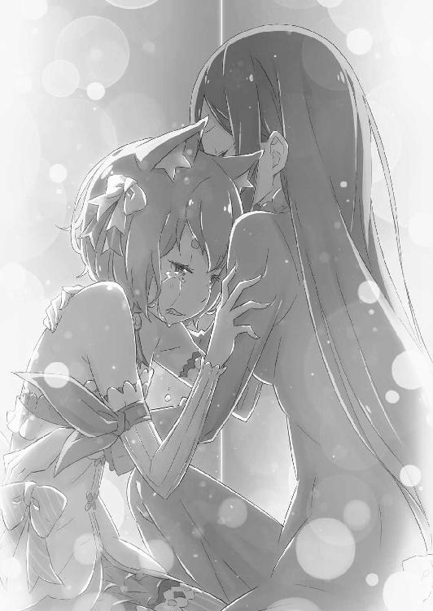
「それは、こっちのお話でしょ。スバルきゅんたちは......こっちの対応が決まるまで、内緒にしてくれたらいい。これ、同盟の条件に付け足すから」
最後の部分だけやけに早口で、スバルを突き放すようにフェリスは言った。
同盟関係について、取り消そうと言ったり勝手に条件を増やしたり、とにかく身勝手極まりない態度だと文句も言いたくなるが──。
「ああ、わかったよ。──お前の泣きっ面に免じてな」
たぶん、そうして悪態で締め括るのが、スバルとフェリスの関係には相応しい。
彼の無力感も、大切な人に慰められた心境も、スバルには痛いほどわかるのだから。
３
「ヴィルヘルムさん、さっきは援護射撃ありがとうございました」
談話室の話し合いが終わり、部屋に泣きじゃくるフェリスと慰めるクルシュの二人を残して、スバルは廊下に出たヴィルヘルムを呼び止めていた。
振り返る剣鬼、彼は「いえ」と連戦の疲れを感じさせない態度で言葉を継ぎ、
「大したことはしていません。何より、肝心な場面で私の力は及びませんでした」
「そんなこと、ありませんよ。ヴィルヘルムさんがいなきゃ白鯨だって倒せなかったし、そのあとでエミリアたちのことも安心して任せられなかった。感謝してます」
非の打ち所のない結果、とはならなかった。だが、それはスバルの本音だ。
しかし、そのスバルの感謝にヴィルヘルムの表情は晴れない。義理堅く、他人の傷にまで責任を感じる人物だ。その優しすぎる剣鬼に、スバルはなんとか笑みを作る。
「状況は落ち着いてませんけど、奥さんのお墓参りとかはするんでしょう？ まだまだ安心なんて話じゃないですけど、少なくとも大事な仇は取ったんですから」
「──っ」
話題を変えようとしたスバルの言葉に、ヴィルヘルムの頰が微かに強張った。
その反応にスバルが目を丸くすると、戸惑うこちらの前でヴィルヘルムはさらに驚くべき行動に出る。──突然、彼は深々とスバルに頭を下げたのだ。
「スバル殿、私はあなたに謝らなければなりません」
「ちょ、やめてくださいって！ 俺はホント、ヴィルヘルムさんには感謝してて......」
「いいえ、そうではありません。私は先ほど、あなた方を思って味方したわけではないのです。浅ましくも、私は自分本位な理由でエミリア様との同盟継続に意見した。そしてその真意を隠した己の厚顔さが、今になって恥ずかしい」
ヴィルヘルムの自省の意味がわからず、スバルは疑問符を浮かべるしかない。
そのスバルの前で、ヴィルヘルムはふいに自分の上着の袖をまくった。その左肩の付け根には包帯が巻かれており、今もじくじくと血が滲んでいる。
「痛そう、ですね。でも、傷ならフェリスに治してもらえば......」
「この傷は治りません。相手に癒えぬ傷を与える『死神の加護』を帯びた刀傷です」
「治らないって......それじゃ、ヴィルヘルムさん！」
重々しく首を横に振るヴィルヘルムに、スバルは信じられない顔で啞然となる。
塞がらない傷、その恐ろしさはスバルにも想像がつく。延々と出血が止まらなければ、それは命に刻限を設けられたも同然だ。
しかし、焦燥感に襲われるスバルと違い、ヴィルヘルムは落ち着いた様子だった。
「私の命はこの際、問題ではないのです」
「そんなわけないじゃないですか！ どうすればその傷は......」
「これは昨日今日、負わされた傷ではありません。ずいぶん前に負った古傷が、再び開いただけのことなのです。──そしてその事実が、今の私にはあまりにも大きい」
ヴィルヘルムの静かな声を聞きながら、スバルは自分の体が震えていることに気付く。
震えは次第に手足に伝染し、いつの間にか歯の根が嚙み合わなくなる。そしてすぐ、その原因が眼前の剣鬼から溢れる、恐ろしく濃密な剣気であると理解した。
剣鬼は静かな声で続ける。
「この『死神の加護』の傷は、加護を受けたものが近くにいるほどに力を増す。傷を負わせた相手に近付けば、塞がった傷も再び開く。そういう傷なのです」
「じゃあ、ヴィルヘルムさんに昔、その傷を付けた相手が近くに......」
「私のこの左肩の傷を与えたのは、先代『剣聖』」
その言葉に、スバルは息を詰めてヴィルヘルムを見た。
彼はスバルを見る瞳に、静かに燃え上がる炎を宿しながら、言った。
「テレシア・ヴァン・アストレア。我が妻の剣傷が開いた。──私はそれを確かめるために、魔女教を追い続けなければならないのです」
４
何も考えずに歩いていたつもりが、気付けばまたレムの眠る部屋の前に立っている。
暇さえあれば、スバルの足は彼女の下へ向かってしまう。それが眠り続けるレムに、甘えて縋っているだけだと自覚していても。
「俺は強いってお前は言ってくれたけど......お前がいてくれなきゃ、そうやって強がる俺ってやつも見つからねぇみたいだよ、レム」
横たわるレムの姿は、朝も昼も夜も、ずっと何も変わらない。
寝息はある。心臓も鼓動を続けている。だが、それ以外の生命活動らしい活動は何一つしていない。いるのに、いない。レムの存在は今や、スバルの中にしかないのだ。
「────」
レムのベッドの横に腰を下ろし、その寝顔を見ながらスバルは回想する。
──目覚めないレムを取り戻すために、『短刀で喉を突いた』記憶のことを。
その瞬間のことは思い出せない。ただ、あらゆる困難を乗り越え、全員で一丸となって摑み取った最善。──それを手放すことを躊躇わなかったことは事実だ。
レムを失うぐらいなら、彼女のいない未来に進むぐらいならば、何度だって『怠惰』との戦いを繰り返し、地獄を繰り返しても構わない。そう思っていた。
短刀が喉を突き破り、血と痛みと熱と喪失感に自分が失われる感覚──それが晴れたとき、『死に戻り』したスバルの前には寝台で眠るレムの姿があった。
「......まさか、自殺直前にオートセーブされるとは。つくづく、クソだ」
リスタート地点の変更に、スバルは何かの間違いだと再び自害を試みようとした。
しかし、発作的な行動は、『死に戻り』してもレムを救えないパラドックスに気付いたことで中断し、スバルは短刀を取り落として崩れ落ちた。
仮に、『死に戻り』でペテルギウスとの決戦前に戻れたとしても、あの時点でレムたちと別行動を始めて数時間──帰路で襲われたレムにはどう足搔いても追いつけない。
万一、追いつけたとしても、新たな大罪司教を倒す方策は何もない。それに戻れば、ペテルギウスの蛮行を見逃し、エミリアを犠牲にすることになる。
レムを助けようとすればエミリアを、エミリアを助けるためにはレムを──それぞれ犠牲にしなければ、救出するための可能性にすら指を掛けられないのだ。
その残酷な選択肢に気付いて、スバルは自害することもできなくなってしまった。
そして今も、何の対抗策もないまま、ずっとレムに寄り添うだけで──。
「──やっぱり、ここにいた」
ふいに背後から届いた銀鈴の声音に、スバルは肩を跳ねさせて振り返った。薄く微笑んでスバルを見つめるのは、この数時間、ずっと一人にしていた大切な少女だ。
どの面を下げて大切な相手などと言えるのか、自分で自分が情けなかったが。
「エミリア、か。......なんか用事あった？」
「なきゃ、きちゃいけない？ 私もこの子......レムさんの関係者のはずでしょ？」
「レムさん、か」
ベッドに歩み寄り、スバルの隣からレムを覗き込むのはエミリアだ。己の銀髪を撫で付けるエミリアの口から、敬称を付けてレムが呼ばれたことに違和感がある。
そのスバルの言葉に、エミリアは「そっか」と呟いた。
「私、この子のこと、呼び捨てにしてたんだ」
「エミリアたんはロズワールの客分だしね。ラムの妹なのは、説明いらないでしょ？」
「ん、わかる。だって、ラムとそっくりなんだもん。間違うわけ、ないわ」
レムの寝顔を見つめながら、エミリアはおそらく脳裏にラムの姿を描いている。瓜二つの双子の姉妹だ。髪と瞳の色、目つきと胸の大きさ以外はそっくりなのだから。
──今さら、ラムもレムを忘れているのだろうかと、ひどく胸が搔き毟られた。
「スバル、ずっと寝てないんでしょ？ 少し休んだ方がいいわ」
「別に疲れることしてるわけじゃないんだ。何もできてないわけだし」
「でも、何かしたいと思ってるのはホントでしょう。そうやって心がずっと頑張り続けてたら、先に体の方がくたびれちゃうわ。だから、お願い」
懇願する響きに、スバルはようやくエミリアの方を見る。この部屋に入って、初めて二人の視線が絡み合い、紫紺の瞳に浮かぶ憂いの色にスバルは息を吐いた。
エミリアがこの部屋に、本当は何をしにきたのかやっとわかったからだ。
「情けねぇな、俺」
「ううん、そんなことない。私、スバルにすごーく助けられてる。ホントのホントに」
自嘲するスバルにエミリアは首を横に振った。彼女は最初から、憔悴したスバルを心配してこの部屋にきたのだ。無理をするスバルに、優しく触れるそのために。
腰を折り、エミリアは椅子に座るスバルと視線を合わせて、懸命に言葉を紡ぐ。
「きっと大丈夫、なんてわかったようなこと、私言えない。スバルの気持ち、わかってあげたいけど......忘れてしまったこの子のこと、何もわからない私が何を言ってもスバルを傷付けるだけだと思うから」
「────」
「でも、これだけはちゃんと知っておいて。──レムのこと、一人で抱え込んで、悩もうとしないで。私にも、ちゃんとスバルの悩み、抱えさせて」
「エミリア......」
思わぬエミリアの言葉に、スバルは凝然と目を見開いた。
そのエミリアの申し出は、本当にスバルにとって予想外だったのだ。
「だけど、君はレムのことも何も覚えてないのに......」
「覚えてなかったら、なんとかしたいと思っちゃいけない？ スバルがこんなに悲しい顔するぐらい、大事に思ってる子なんでしょ？ それを私も助けてあげたいって、そう思うのはそんなに不思議？」
「────」
「スバルが私を助けてくれたみたいに、今度は私もスバルを助けたい。スバルが傷付いてるなら、なんとかしてあげたい。──それは、当たり前のことでしょう？」
何の躊躇もなく寄せられる信頼と、何一つ疑う必要のない親愛の情。
エミリアがわざわざ言葉にしてくれて、初めてスバルは自分の強情を溶かされる。そうして気付けば、頑なになっていた自分が本気で馬鹿のように思えてきた。
「......エミリアたん、すげぇな」
「そう？ スバルの方がもっとすごーくすごいと思うけど」
「いや、そんなことねぇよ。──エミリアで、よかった」
そうこぼしたスバルに、エミリアはきょとんとした顔をする。わかっているような、わかっていないような、そんな彼女の態度にスバルは苦笑した。
そうして、唇が笑みの形になるのを自覚して、スバルはようやく気付いた。
──レムの眠りを知って以来、今のが初めての、心からの情動だ。
「エミリア。一つ、お願いがあるんだけど」
「なぁに？」
「後ろ向いててくれる？ ──ちょっと泣く」
「ん、わかった」
スバルの願い事に、エミリアは何も聞き返さずに背中を向けた。
その気遣いに救われながら、スバルは自分の膝に視線を落として、込み上げてくる感情に任せるままに鼻を啜って、涙を流した。
眠り続けるレムの前で、自分の無力さに打ちひしがれて時間を浪費して。エミリアにも心配をかけて、それでも、心配されていることにも気付けないで。
レムを覚えているのが自分だけだからって、レムを心配しているのは自分だけだと、レムを救おうとするのは自分だけだと、独りよがりで思い悩んで。
そんな自分の馬鹿さに、スバルは鼻を啜り続ける。
そして──、
「────」
自分のすすり泣く音だけが落ちる部屋で、スバルはふいの温かさに喉を詰まらせた。
背後、椅子の背もたれ越しにスバルを抱いて、エミリアが優しく頭を撫でている。
「────」
何の言葉もなかったし、何の言葉も必要なかった。
ただ、優しさに救われながら、スバルは涙と共に己の弱音を流し切る。
そして今、誓おう。
「──俺は必ずお前を、取り戻す。レム、必ずだ」
言ったのだ。スバルは彼女に。
お前の前で、お前の惚れた男が、最高のヒーローになるところを見せてやると。
ならばまだ、その道の途中ではないか。
「俺が必ず......お前の英雄が必ず、お前を迎えにいく。──待ってろ」
それは己への誓いであり、運命という敵への宣戦布告だ。
ナツキ・スバルの前に立ちはだかり、悪意のままに振る舞う者たちに、決して侵してはならないモノを汚した者たちに、叩きつけてやろう。
他の誰でもない、ナツキ・スバルが。
「必ず。──必ずだ!!」
ゼロから始める時間の中に、大切な誰かを、レムを欠くことなど考えられない。
だから必ず、取り戻す。
失われてしまった日々を、君と歩いた時間を、君と歩いていく時間を。
もう一度、この手に手繰り寄せてみせるから──。
《了》
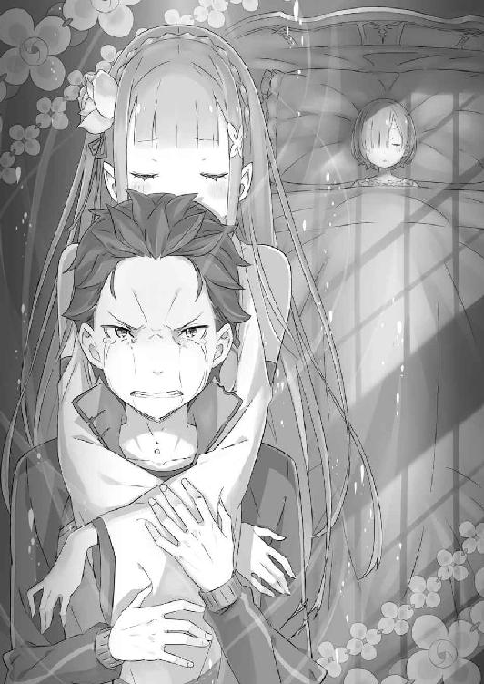
あとがき
祝！ ついに三章完結！ 長かった！
はい、どーも、いつもお世話になっております、長月達平／鼠色猫です。
リゼロ４巻から始まりました、『再来の王都編』第三章、ついに完結です！
あとがきから読む読者の方もいらっしゃるかもしれませんが、作者は自重せずにあとがきでも普通に本編の内容の話をしますので、未読の方はここで回れ右！
では、回れ右していただいたと仮定して、本編の内容に入っていこうかと。
この作品、『Ｒｅ：ゼロから始める異世界生活』というお話は、４巻から始まりました三章の内容がやりたくて始めた作品でした。それについては３巻か４巻か、あるいは５巻やら６巻やらでもお話したのですが、書籍でここまで辿り着けて感無量です。
実際、この三章完結までの間に色々なことがありました。コミカライズされ、アニメのお話をいただき、アニメの打ち合わせをして、アニメの放送があって、アニメの終了とほぼ同時に同じ場面を描き切る。──なかなか、体験できることではありません。
おかげさまでアニメの方も素晴らしい出来で、「アニメからリゼロを知りました！」というメッセージもたくさんいただいています。アニメが終わっても、今後もリゼロという作品は書籍で続いていきます。強敵『怠惰』を倒した直後に現れる強敵！ まだまだ解き明かされない数々の謎！ そして再会と別離を繰り返すナツキ・スバルの物語！
これからも引き続き、この物語に楽しんでお付き合いいただければ幸いです。
まぁ、作者的に特大のクリフハンガーをぶち込んだつもりでいるので、次の10巻を待ち遠しく思ってもらえてるんじゃないかなぁと思ってはいるんですが！
アニメで描かれていない『その後』の部分、みんながどんな感想を抱いたのか、お便り待ってます！
さてさて、ではやりきった笑顔と共に、恒例の謝辞に入らせていただきます！
担当編集Ｉ様、おそらくはＷＥＢ時代に目に留まった最大の要因である三章、その終わりまでついに辿り着けました。これもひとえにＩ様の尽力あってのことです。今後は特に頭を悩ませる展開が続きますが、これからも肩を貸し合ってよろしくお願いします！
イラストの大塚先生、今さらですが、アニメ本当にキャラクターたちに華があって素晴らしいです。大塚先生のキャラデザあってのアニメ人気であったと確信を持って言えます！ 次章、また登場キャラ増えますが、作者が一番期待してます！ 楽しみ！
他にもＭＦ文庫Ｊ編集部様、コミカライズ担当のマツセダイチ先生、楓月誠先生、デザイナーの草野先生、各書店様に営業様、数多くの皆様にお世話になっております！
そしてこの場を借りて、リゼロアニメに力を注いでくださった皆様に感謝を。
監督の渡邊政治様。アニメーション制作のＷＨＩＴＥ ＦＯＸ様。吉川綱樹様。田中翔Ｐ。脚本の横谷昌宏様に、中村能子様、梅原英司様。キャラクターデザインの坂井久太様。音楽では末廣健一郎様、ＯＰ＆ＥＤでは鈴木このみ様にＭＹＴＨ＆ＲＯＩＤ様──正直、この場に書き切れないほど多くの方々に、心から感謝を申し上げます。
もちろん、キャラクターたちを演じてくださったキャストの皆様にも、言葉に尽くせないほどの感謝をしております。ありがとうございました！
そして最後に、この本、物語にお付き合いくださった読者の皆様に最大級の感謝を。
アニメ化の夢が叶っても、また今度はその先の新しい夢を叶えに頑張る所存──これからも、小説も漫画もアニメも、ぜひとも応援よろしくお願いします！
ではまた、次の巻──新たに始まる、第四章のお話でお会いできますよう！
ありがとう！
２０１６年８月 長月達平《アニメ終盤、でもリゼロは中盤、まだまだこれから！》
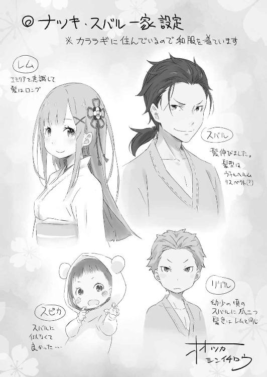
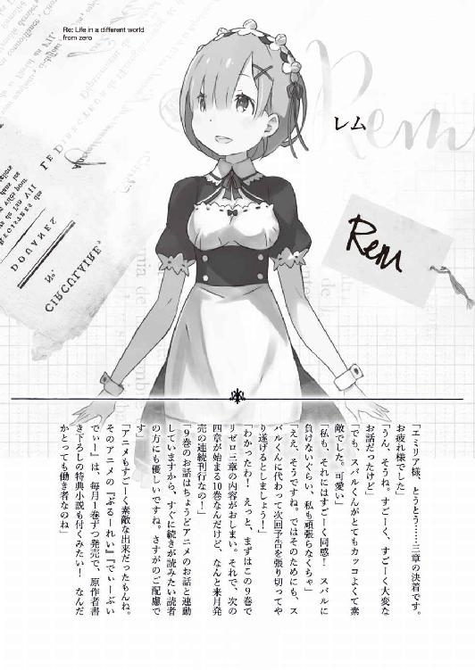
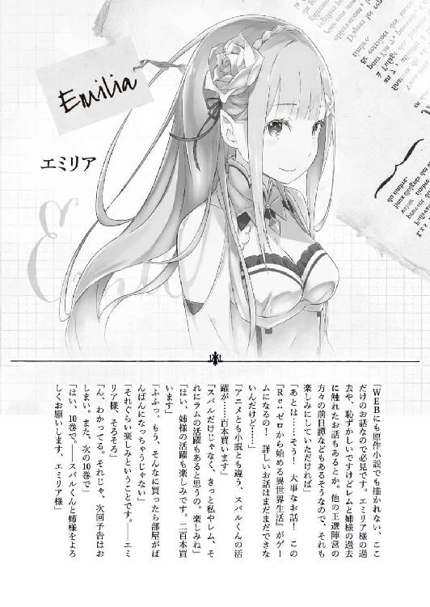
著者
長月達平（ながつき・たっぺい）
１９８７年生まれにして、２０１６年にリゼロアニメ化！この巻が発売される頃、アニメの方も最終回を迎えているはず。たくさんの方々の応援とご協力で、夢が叶いました。アニメ最終話の内容の続きも含んだ第９巻、楽しんでいただければ幸いです。
小説投稿サイト「小説家になろう」にて、同タイトルの小説を投稿中。
ＵＲＬ：http://ncode.syosetu.com/n2267be/
イラストレーター
大塚真一郎（おおつか・しんいちろう）
熊本出身のイラストレーター。ゲームを中心に小説の挿絵なども描いてます。代表作は「コンセプション」、「サモンナイトクラフトソード物語」など。
カバー・口絵・本文イラスト／大塚真一郎
装丁／草野剛
Ｒｅ：ゼロから始める異世界生活 9
長月達平
2016年9月23日 発行
(C)Tappei Nagatsuki 2016
本電子書籍は下記にもとづいて制作しました
ＭＦ文庫Ｊ『Ｒｅ：ゼロから始める異世界生活 9』
2016年9月30日初版第一刷発行
発行者 三坂泰二
発 行 株式会社ＫＡＤＯＫＡＷＡ
〒102-8177 東京都千代田区富士見2-13-3
0570-002-001（カスタマーサポート）
年末年始を除く 平日10：00～18：00まで
http://www.kadokawa.co.jp/